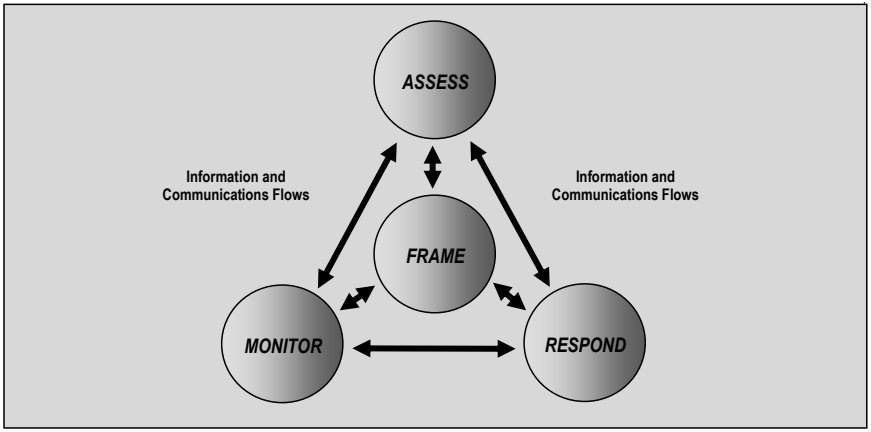

NIST SP 800-39 日本語訳
英語タイトル : Managing Information Security Risk: Organization, Mission, and Information System View日本語タイトル : 組織、ミッション、および情報システムの視点
公開日 : 2011-03-01
原文URL : https://csrc.nist.gov/pubs/sp/800/39/final
翻訳編集 : 自動生成
[要約] SP 800-39 は、連邦情報システムの運用と使用から生じる情報セキュリティリスクを、組織全体で統合的に管理するプログラムについてのガイダンスを示します。組織、ミッション／業務プロセス、情報システムの3つの階層によるリスク管理を説明し、リスクのフレーミング、アセスメント、対応、モニタリングの手順を述べます。構造化されつつ柔軟なアプローチで、より包括的な全社的リスク管理（ERM）プログラムを補完し、その一部として用いるべき位置付けです。
有志による非公式の日本語訳です。NIST および米国商務省が作成・承認・推奨したものではありません。要件の確認にはNIST の正式版 PDFを参照してください。
NIST Special Publication 800-39
NIST Special Publication 800-39
Managing Information Security Risk
情報セキュリティリスクの管理
［NIST のロゴ。公的な標章のため、この非公式サイトには掲載していない。原本 PDF を参照。］
Organization, Mission, and Information System View
組織、ミッション、および情報システムの観点
JOINT TASK FORCE TRANSFORMATION INITIATIVE
JOINT TASK FORCE TRANSFORMATION INITIATIVE
I N F O R M A T I O N S E C U R I T Y
情報セキュリティ
Computer Security Division Information Technology Laboratory National Institute of Standards and Technology Gaithersburg, MD 20899-8930
コンピュータセキュリティ部門 情報技術研究所 米国国立標準技術研究所 メリーランド州ゲイサーズバーグ 20899-8930
March 2011
2011年3月
U.S. Department of Commerce Gary Locke, Secretary
米国商務省 ゲイリー・ロック長官
National Institute of Standards and Technology Patrick D. Gallagher, Director
米国国立標準技術研究所 パトリック・D・ギャラガー所長
Reports on Computer Systems Technology
コンピュータシステム技術に関する報告書
The Information Technology Laboratory (ITL) at the National Institute of Standards and Technology (NIST) promotes the U.S. economy and public welfare by providing technical leadership for the nation’s measurement and standards infrastructure. ITL develops tests, test methods, reference data, proof of concept implementations, and technical analyses to advance the development and productive use of information technology. ITL’s responsibilities include the development of management, administrative, technical, and physical standards and guidelines for the cost-effective security and privacy of other than national security-related information in federal information systems. The Special Publication 800-series reports on ITL’s research, guidelines, and outreach efforts in information system security, and its collaborative activities with industry, government, and academic organizations.
米国国立標準技術研究所（NIST）の情報技術研究所（ITL）は、米国の計測および標準インフラストラクチャに技術的リーダーシップを提供することで、米国経済と公共の福祉を促進している。ITLは、情報技術の発展と生産的な利用を促進するため、試験、試験方法、参照データ、概念実証実装、および技術分析を開発している。ITLの責務には、連邦情報システムにおける国家安全保障関連以外の情報の費用対効果の高いセキュリティおよびプライバシー保護のため、管理的、行政的、技術的、および物理的な標準とガイドラインを開発することが含まれる。特別刊行物800シリーズは、情報システムセキュリティに関するITLの研究、ガイドライン、普及活動、および産業界、政府、学術機関との協力活動を報告する。
PAGE ii
ページ ii
Authority
権限
This publication has been developed by NIST to further its statutory responsibilities under the Federal Information Security Management Act (FISMA), Public Law (P.L.) 107-347. NIST is responsible for developing information security standards and guidelines, including minimum requirements for federal information systems, but such standards and guidelines shall not apply to national security systems without the express approval of appropriate federal officials exercising policy authority over such systems. This guideline is consistent with the requirements of the Office of Management and Budget (OMB) Circular A-130, Section 8b(3), Securing Agency Information Systems, as analyzed in Circular A-130, Appendix IV: Analysis of Key Sections. Supplemental information is provided in Circular A-130, Appendix III, Security of Federal Automated Information Resources.
本刊行物は、連邦情報セキュリティ管理法（FISMA）、公法（P.L.）107-347に基づく法定責任を遂行するためにNISTが作成した。NISTは、連邦情報システムに関する最低要件を含む情報セキュリティ標準およびガイドラインを開発する責任を負う。ただし、適切な連邦当局者がそのようなシステムに関する政策権限を行使して明示的に承認しない限り、これらの標準およびガイドラインは国家安全保障システムに適用してはならない。このガイドラインは、OMB通達A-130第8b(3)項「政府機関の情報システムの保護」に適合しており、その分析は通達A-130付録IV「主要な節の分析」に示されている。補足情報は通達A-130付録III「連邦自動化情報資源のセキュリティ」に記載されている。
Nothing in this publication should be taken to contradict the standards and guidelines made mandatory and binding on federal agencies by the Secretary of Commerce under statutory authority. Nor should these guidelines be interpreted as altering or superseding the existing authorities of the Secretary of Commerce, Director of the OMB, or any other federal official. This publication may be used by nongovernmental organizations on a voluntary basis and is not subject to copyright in the United States. Attribution would, however, be appreciated by NIST.
本刊行物のいかなる内容も、法定権限に基づいて商務長官が連邦政府機関に義務付け、拘束力を持たせた標準およびガイドラインに反するものと解釈してはならない。また、これらのガイドラインは、商務長官、OMB長官、またはその他の連邦当局者の既存の権限を変更または置き換えるものと解釈してはならない。本刊行物は非政府組織が任意で使用でき、米国内では著作権の対象ではない。ただし、NISTへの帰属表示を歓迎する。
NIST Special Publication 800-39, 88 pages
NIST特別刊行物800-39、88ページ
(March 2011)
(2011年3月)
Certain commercial entities, equipment, or materials may be identified in this document in order to describe an experimental procedure or concept adequately. Such identification is not intended to imply recommendation or endorsement by NIST, nor is it intended to imply that the entities, materials, or equipment are necessarily the best available for the purpose. There may be references in this publication to other publications currently under development by NIST in accordance with its assigned statutory responsibilities. The information in this publication, including concepts and methodologies, may be used by federal agencies even before the completion of such companion publications. Thus, until each publication is completed, current requirements, guidelines, and procedures, where they exist, remain operative. For planning and transition purposes, federal agencies may wish to closely follow the development of these new publications by NIST. Organizations are encouraged to review all draft publications during public comment periods and provide feedback to NIST. All NIST publications, other than the ones noted above, are available at http://csrc.nist.gov/publications.
実験手順または概念を適切に説明するため、本書では特定の商業主体、機器、または材料を特定する場合がある。このような特定は、NISTによる推奨または是認を意味するものではなく、また、その主体、材料、または機器が目的に対して必ずしも最良のものであることを意味するものでもない。本刊行物では、割り当てられた法定責任に従ってNISTが現在作成中の他の刊行物を参照する場合がある。この刊行物に含まれる情報（概念および方法論を含む）は、関連刊行物が完成する前であっても連邦政府機関が使用できる。したがって、各刊行物が完成するまでは、現行の要件、ガイドライン、および手順が存在する場合、それらは引き続き有効である。計画および移行を目的として、連邦政府機関はNISTによるこれらの新刊行物の作成状況を注意深く追跡することが望ましい。組織には、パブリックコメント期間中にすべての草案を確認し、NISTにフィードバックを提供することが奨励される。上記に記載したものを除くすべてのNIST刊行物は、http://csrc.nist.gov/publications で入手できる。
National Institute of Standards and Technology Attn: Computer Security Division, Information Technology Laboratory 100 Bureau Drive (Mail Stop 8930) Gaithersburg, MD 20899-8930 Electronic mail: sec-cert@nist.gov
米国国立標準技術研究所 宛先：コンピュータセキュリティ部門、情報技術研究所 100 Bureau Drive（Mail Stop 8930）メリーランド州ゲイサーズバーグ 20899-8930 電子メール：sec-cert@nist.gov
PAGE iii
ページ iii
Compliance with NIST Standards and Guidelines
NIST標準およびガイドラインへの準拠
In accordance with the provisions of FISMA,1 the Secretary of Commerce shall, on the basis of standards and guidelines developed by NIST, prescribe standards and guidelines pertaining to federal information systems. The Secretary shall make standards compulsory and binding to the extent determined necessary by the Secretary to improve the efficiency of operation or security of federal information systems. Standards prescribed shall include information security standards that provide minimum information security requirements and are otherwise necessary to improve the security of federal information and information systems.
FISMA1の規定に従い、商務長官は、NISTが策定した標準およびガイドラインに基づいて、連邦情報システムに関する標準およびガイドラインを定める。商務長官は、連邦情報システムの運用の効率性またはセキュリティを向上させるために必要と判断する範囲で、標準を義務的かつ拘束力のあるものとする。定められる標準には、最低限の情報セキュリティ要件を規定する情報セキュリティ標準、およびその他連邦の情報および情報システムのセキュリティを向上させるために必要な標準が含まれる。
•Federal Information Processing Standards (FIPS) are approved by the Secretary of Commerce and issued by NIST in accordance with FISMA. FIPS are compulsory and binding for federal agencies.2 FISMA requires that federal agencies comply with these standards, and therefore, agencies may not waive their use.
•連邦情報処理標準（FIPS）は、FISMAに従い、商務長官が承認し、NISTが発行する。FIPSは連邦政府機関に対して義務的かつ拘束力を持つ。2 FISMAは連邦政府機関がこれらの標準に準拠することを求めており、したがって、各機関はその使用を免除することはできない。
•Special Publications (SPs) are developed and issued by NIST as recommendations and guidance documents. For other than national security programs and systems, federal agencies must follow those NIST Special Publications mandated in a Federal Information Processing Standard. FIPS 200 mandates the use of Special Publication 800-53, as amended. In addition, OMB policies (including OMB Reporting Instructions for FISMA and Agency Privacy Management) state that for other than national security programs and systems, federal agencies must follow certain specific NIST Special Publications.3
•Special Publication（SP）は、勧告およびガイダンス文書としてNISTが策定・発行する。国家安全保障に関するプログラムおよびシステムを除き、連邦政府機関は、連邦情報処理標準で義務付けられたNIST Special Publicationに従わなければならない。FIPS 200は、改訂版を含めSpecial Publication 800-53の使用を義務付けている。さらに、OMBの方針（OMB Reporting Instructions for FISMA and Agency Privacy Managementを含む）は、国家安全保障に関するプログラムおよびシステムを除き、連邦政府機関が特定のNIST Special Publicationに従わなければならないと定めている。3
•Other security-related publications, including interagency reports (NISTIRs) and ITL Bulletins, provide technical and other information about NIST's activities. These publications are mandatory only when specified by OMB.
•省庁間報告書（NISTIR）およびITL速報を含むその他のセキュリティ関連刊行物は、NIST's活動に関する技術情報その他の情報を提供する。これらの刊行物は、OMBが指定した場合に限り必須となる。
•Compliance schedules for NIST security standards and guidelines are established by OMB in policies, directives, or memoranda (e.g., annual FISMA Reporting Guidance).4
•NISTのセキュリティ標準およびガイドラインへの準拠のスケジュールは、OMBが方針、指令、または覚書（例：年次のFISMA報告ガイダンス）において定める。4
Acknowledgements
謝辞
This publication was developed by the Joint Task Force Transformation Initiative Interagency Working Group with representatives from the Civil, Defense, and Intelligence Communities in an ongoing effort to produce a unified information security framework for the federal government. The National Institute of Standards and Technology wishes to acknowledge and thank the senior leaders from the Departments of Commerce and Defense, the Office of the Director of National Intelligence, the Committee on National Security Systems, and the members of the interagency technical working group whose dedicated efforts contributed significantly to the publication. The senior leaders, interagency working group members, and their organizational affiliations include:
本書は、連邦政府のための統一された情報セキュリティフレームワークを作成する継続的な取り組みの一環として、文民、国防、およびインテリジェンスの各コミュニティの代表者で構成されるJoint Task Force Transformation Initiative Interagency Working Groupが作成した。米国国立標準技術研究所は、商務省および国防総省、国家情報長官室、国家安全保障システム委員会の上級幹部、ならびに本書に大きく貢献した献身的な取り組みを行った省庁間技術作業部会のメンバーに謝意を表する。上級幹部、省庁間作業部会のメンバー、およびその所属組織は次のとおりである。
U.S. Department of Defense
米国国防総省
Teresa M. Takai, Assistant Secretary of Defense for Networks and Information Integration/DoD Chief Information Officer (Acting)
Teresa M. Takai、国防次官補（ネットワーク・情報統合担当）／国防総省最高情報責任者（代行）
Gus Guissanie, Deputy Assistant Secretary of Defense (Acting)
Gus Guissanie、国防次官補代理（代行）
Dominic Cussatt, Senior Policy Advisor
Dominic Cussatt、上級政策顧問
Barbara Fleming, Senior Policy Advisor
Barbara Fleming、上級政策顧問
Office of the Director of National Intelligence
国家情報長官室
Adolpho Tarasiuk Jr., Assistant Director of National Intelligence and Intelligence Community Chief Information Officer
Adolpho Tarasiuk Jr.、国家情報副長官補兼インテリジェンスコミュニティ最高情報責任者
Charlene P. Leubecker, Deputy Intelligence Community Chief Information Officer
Charlene P. Leubecker、インテリジェンスコミュニティ副最高情報責任者
Mark J. Morrison, Director, Intelligence Community Information Assurance
Mark J. Morrison、インテリジェンスコミュニティ情報保証部長
Roger Caslow, Chief, Risk Management and Information Security Programs Division
Roger Caslow、リスク管理・情報セキュリティプログラム課長
National Institute of Standards and Technology
米国国立標準技術研究所
Cita M. Furlani, Director, Information Technology Laboratory
Cita M. Furlani、情報技術研究所所長
William C. Barker, Cyber Security Advisor, Information Technology Laboratory
William C. Barker、情報技術研究所サイバーセキュリティ顧問
Donna Dodson, Chief, Computer Security Division
Donna Dodson、コンピュータセキュリティ部門長
Ron Ross, FISMA Implementation Project Leader
Ron Ross、FISMA実施プロジェクトリーダー
Committee on National Security Systems
国家安全保障システム委員会
Teresa M. Takai, Acting Chair, CNSS
Teresa M. Takai、CNSS議長代行
Eustace D. King, CNSS Subcommittee Co-Chair
Eustace D. King、CNSS小委員会共同議長
Peter Gouldmann, CNSS Subcommittee Co-Chair
Peter Gouldmann、CNSS小委員会共同議長
Lance Dubsky, CNSS Subcommittee Co-Chair
Lance Dubsky、CNSS小委員会共同議長
Joint Task Force Transformation Initiative Interagency Working Group
Joint Task Force Transformation Initiative Interagency Working Group
Ron Ross, NIST, JTF Leader
Ron Ross、NIST、JTFリーダー
Gary Stoneburner, Johns Hopkins APL
Gary Stoneburner、Johns Hopkins APL
Jennifer Fabius-Greene, The MITRE Corporation
Jennifer Fabius-Greene、The MITRE Corporation
Kelley Dempsey, NIST
Kelley Dempsey、NIST
Deborah Bodeau, The MITRE Corporation
Deborah Bodeau、The MITRE Corporation
Cheri Caddy, Intelligence Community
Cheri Caddy、インテリジェンスコミュニティ
Peter Gouldmann, Department of State
Peter Gouldmann、国務省
Arnold Johnson, NIST
Arnold Johnson、NIST
Peter Williams, Booz Allen Hamilton
Peter Williams、Booz Allen Hamilton
Karen Quigg, The MITRE Corporation
Karen Quigg、The MITRE Corporation
Richard Graubart, The MITRE Corporation
Richard Graubart、The MITRE Corporation
Christian Enloe, NIST
Christian Enloe、NIST
In addition to the above acknowledgments, a special note of thanks goes to Peggy Himes and Elizabeth Lennon for their superb technical editing and administrative support and to Bennett Hodge, Cassandra Kelly, Marshall Abrams, Marianne Swanson, Patricia Toth, Kevin Stine, and Matt Scholl for their valuable insights and contributions. The authors also gratefully acknowledge and appreciate the significant contributions from individuals and organizations in the public and private sectors, both nationally and internationally, whose thoughtful and constructive comments improved the overall quality, thoroughness, and usefulness of this publication.
上記の謝辞に加えて、優れた技術編集と事務支援を提供したPeggy HimesとElizabeth Lennon、ならびに貴重な知見と貢献を提供したBennett Hodge、Cassandra Kelly、Marshall Abrams、Marianne Swanson、Patricia Toth、Kevin Stine、Matt Schollに特に感謝する。著者らはまた、国内外の公共部門および民間部門の個人および組織から寄せられた多大な貢献に深く感謝する。その思慮深く建設的なコメントにより、本書の全体的な品質、網羅性、および有用性が向上した。
DEVELOPING COMMON INFORMATION SECURITY FOUNDATIONS
共通の情報セキュリティ基盤の構築
COLLABORATION AMONG PUBLIC AND PRIVATE SECTOR ENTITIES
公共部門と民間部門の組織間の協働
In developing standards and guidelines required by FISMA, NIST consults with other federal agencies and offices as well as the private sector to improve information security, avoid unnecessary and costly duplication of effort, and ensure that NIST publications are complementary with the standards and guidelines employed for the protection of national security systems. In addition to its comprehensive public review and vetting process, NIST is collaborating with the Office of the Director of National Intelligence (ODNI), the Department of Defense (DoD), and the Committee on National Security Systems (CNSS) to establish a common foundation for information security across the federal government. A common foundation for information security will provide the Intelligence, Defense, and Civil sectors of the federal government and their contractors, more uniform and consistent ways to manage the risk to organizational operations and assets, individuals, other organizations, and the Nation that results from the operation and use of information systems. A common foundation for information security will also provide a strong basis for reciprocal acceptance of security assessment results and facilitate information sharing. NIST is also working with public and private sector entities to establish mappings and relationships between the security standards and guidelines developed by NIST and the International Organization for Standardization (ISO) and International Electrotechnical Commission (IEC).
FISMAが求める標準およびガイドラインを策定するにあたり、NISTは、情報セキュリティを向上させ、不必要でコストのかかる作業の重複を避け、NISTの出版物が国家安全保障システムの保護に用いられる標準およびガイドラインと補完的になるよう、他の連邦政府機関および部局ならびに民間部門と協議している。NISTは、包括的な公開レビューおよび精査のプロセスに加えて、国家情報長官室（ODNI）、国防総省（DoD）、および国家安全保障システム委員会（CNSS）と協力し、連邦政府全体の情報セキュリティの共通基盤を確立しようとしている。情報セキュリティの共通基盤は、連邦政府のインテリジェンス、国防、および文民の各部門とその請負業者に対し、情報システムの運用および使用から生じる、組織の業務および資産、個人、他の組織、ならびに国家に対するリスクを管理するための、より統一的で一貫した方法を提供する。情報セキュリティの共通基盤はまた、セキュリティアセスメント結果の相互承認のための強固な基礎となり、情報共有を促進する。NISTはさらに、公共部門および民間部門の組織と協力し、NISTが策定したセキュリティ標準およびガイドラインと、国際標準化機構（ISO）および国際電気標準会議（IEC）が策定したものとの対応付けおよび関係を確立しようとしている。
CAUTIONARY NOTE
注意事項
INTENDED SCOPE AND USE OF THIS PUBLICATION
本書の想定範囲と用途
The guidance provided in this publication is intended to address only the management of information security-related risk derived from or associated with the operation and use of information systems or the environments in which those systems operate. The guidance is not intended to replace or subsume other risk-related activities, programs, processes, or approaches that organizations have implemented or intend to implement addressing areas of risk management covered by other legislation, directives, policies, programmatic initiatives, or mission/business requirements. Rather, the information security risk management guidance described herein is complementary to and should be used as part of a more comprehensive Enterprise Risk Management (ERM) program.
本書で提供するガイダンスは、情報システムの運用および使用、またはそれらのシステムが運用される環境から生じる、またはそれらに関連する、情報セキュリティ関連リスクの管理のみを扱うことを意図している。本ガイダンスは、他の法令、指令、方針、プログラム上の取り組み、またはミッション／業務要件が対象とするリスク管理の領域に対応するために組織が実施している、または実施する予定の、他のリスク関連の活動、プログラム、プロセス、またはアプローチを置き換えたり包含したりすることを意図していない。むしろ、ここで説明する情報セキュリティリスク管理のガイダンスは、それらを補完するものであり、より包括的な全社的リスク管理（ERM）プログラムの一部として用いるべきである。
PAGE vii
ページ vii
Table of Contents
目次
CHAPTER ONE INTRODUCTION — 1
第1章 序論 — 1
1.1 PURPOSE AND APPLICABILITY — 3
1.1 目的と適用範囲 — 3
1.2 TARGET AUDIENCE — 3
1.2 対象読者 — 3
1.3 RELATED PUBLICATIONS — 4
1.3 関連出版物 — 4
1.4 ORGANIZATION OF THIS SPECIAL PUBLICATION — 5
1.4 本Special Publicationの構成 — 5
CHAPTER TWO THE FUNDAMENTALS — 6
第2章 基礎 — 6
2.1 COMPONENTS OF RISK MANAGEMENT — 6
2.1 リスク管理の構成要素 — 6
2.2 MULTITIERED RISK MANAGEMENT — 9
2.2 多層的なリスク管理 — 9
2.3 TIER ONE—ORGANIZATION VIEW — 11
2.3 第1層—組織の観点 — 11
2.4 TIER TWO—MISSION/BUSINESS PROCESS VIEW — 17
2.4 第2層—ミッション／業務プロセスの観点 — 17
2.5 TIER THREE—INFORMATION SYSTEMS VIEW — 21
2.5 第3層—情報システムの観点 — 21
2.6 TRUST AND TRUSTWORTHINESS — 23
2.6 信頼と信頼性 — 23
2.7 ORGANIZATIONAL CULTURE — 28
2.7 組織文化 — 28
2.8 RELATIONSHIP AMONG KEY RISK CONCEPTS — 29
2.8 主要なリスク概念の関係 — 29
CHAPTER THREE THE PROCESS — 32
第3章 プロセス — 32
3.1 FRAMING RISK — 33
3.1 リスクのフレーミング — 33
3.2 ASSESSING RISK — 37
3.2 リスクのアセスメント — 37
3.3 RESPONDING TO RISK — 41
3.3 リスクへの対応 — 41
3.4 MONITORING RISK — 45
3.4 リスクのモニタリング — 45
APPENDIX A REFERENCES — A-1
付録A 参考文献 — A-1
APPENDIX B GLOSSARY — B-1
付録B 用語集 — B-1
APPENDIX C ACRONYMS — C-1
付録C 略語 — C-1
APPENDIX D ROLES AND RESPONSIBILITIES — D-1
付録D 役割と責任 — D-1
APPENDIX E RISK MANAGEMENT PROCESS TASKS — E-1
付録E リスク管理プロセスのタスク — E-1
APPENDIX F GOVERNANCE MODELS — F-1
付録F ガバナンスモデル — F-1
APPENDIX G TRUST MODELS — G-1
付録G 信頼モデル — G-1
APPENDIX H RISK RESPONSE STRATEGIES — H-1
付録H リスク対応戦略 — H-1
Prologue
序
“... Through the process of risk management, leaders must consider risk to U.S. interests from adversaries using cyberspace to their advantage and from our own efforts to employ the global nature of cyberspace to achieve objectives in military, intelligence, and business operations...”
「……リスク管理のプロセスを通じて、指導者は、サイバー空間を自らに有利に利用する敵対者による米国の利益へのリスク、ならびに軍事、インテリジェンス、および業務運営において目的を達成するためにサイバー空間のグローバルな性質を利用しようとする我々自身の取り組みから生じる米国の利益へのリスクを考慮しなければならない……」
“... For operational plans development, the combination of threats, vulnerabilities, and impacts must be evaluated in order to identify important trends and decide where effort should be applied to eliminate or reduce threat capabilities; eliminate or reduce vulnerabilities; and assess, coordinate, and deconflict all cyberspace operations...”
「……作戦計画の策定においては、重要な傾向を特定し、脅威能力の排除または低減、脆弱性の排除または低減、ならびにすべてのサイバー空間作戦のアセスメント、調整、および競合回避のためにどこに労力を注ぐべきかを決定するために、脅威、脆弱性、および影響の組み合わせを評価しなければならない……」
“... Leaders at all levels are accountable for ensuring readiness and security to the same degree as in any other domain...”
「……あらゆるレベルの指導者は、他のいかなる領域とも同程度に、即応態勢とセキュリティを確保する責任を負う……」
-- THE NATIONAL STRATEGY FOR CYBERSPACE OPERATIONS OFFICE OF THE CHAIRMAN, JOINT CHIEFS OF STAFF, U.S. DEPARTMENT OF DEFENSE
-- THE NATIONAL STRATEGY FOR CYBERSPACE OPERATIONS 統合参謀本部議長室、米国国防総省
PAGE ix
ページ ix
CHAPTER ONE
第1章
INTRODUCTION
はじめに
THE NEED FOR INTEGRATED ORGANIZATION-WIDE RISK MANAGEMENT
組織全体に統合されたリスク管理の必要性
Information technology is widely recognized as the engine that drives the U.S. economy, giving industry a competitive advantage in global markets, enabling the federal government to provide better services to its citizens, and facilitating greater productivity as a nation. Organizations5 in the public and private sectors depend on technology-intensive information systems6 to successfully carry out their missions and business functions. Information systems can include diverse entities ranging from high-end supercomputers, workstations, personal computers, cellular telephones, and personal digital assistants to very specialized systems (e.g., weapons systems, telecommunications systems, industrial/process control systems, and environmental control systems). Information systems are subject to serious threats that can have adverse effects on organizational operations (i.e., missions, functions, image, or reputation), organizational assets, individuals, other organizations, and the Nation by exploiting both known and unknown vulnerabilities to compromise the confidentiality, integrity, or availability of the information being processed, stored, or transmitted by those systems. Threats to information and information systems can include purposeful attacks, environmental disruptions, and human/machine errors and result in great harm to the national and economic security interests of the United States. Therefore, it is imperative that leaders and managers at all levels understand their responsibilities and are held accountable for managing information security risk—that is, the risk associated with the operation and use of information systems that support the missions and business functions of their organizations.
情報技術は、米国経済を動かすエンジンであり、産業界にグローバル市場での競争優位をもたらし、連邦政府が国民により良いサービスを提供することを可能にし、国全体の生産性の向上を促進するものとして広く認識されている。公共部門および民間部門の組織5は、そのミッションと業務機能を首尾よく遂行するために、技術集約的な情報システム6に依存している。情報システムには、ハイエンドのスーパーコンピュータ、ワークステーション、パーソナルコンピュータ、携帯電話、携帯情報端末から、非常に特化したシステム（例：兵器システム、電気通信システム、産業用／プロセス制御システム、環境制御システム）に至るまで、多様なものが含まれうる。情報システムは深刻な脅威にさらされている。それらの脅威は、既知および未知の脆弱性を悪用して、システムが処理、保存、または送信する情報の機密性、完全性、または可用性を侵害することにより、組織の業務（すなわち、ミッション、機能、イメージ、または評判）、組織の資産、個人、他の組織、および国家に悪影響を及ぼしうる。情報および情報システムに対する脅威には、意図的な攻撃、環境的な障害、および人的／機械的なエラーが含まれ、米国の国家安全保障および経済安全保障上の利益に重大な損害をもたらしうる。したがって、あらゆるレベルの指導者および管理者が、情報セキュリティリスク、すなわち組織のミッションと業務機能を支える情報システムの運用および使用に関連するリスクを管理する自らの責任を理解し、その責任を問われることが不可欠である。
Organizational risk can include many types of risk (e.g., program management risk, investment risk, budgetary risk, legal liability risk, safety risk, inventory risk, supply chain risk, and security risk). Security risk related to the operation and use of information systems is just one of many components of organizational risk that senior leaders/executives address as part of their ongoing risk management responsibilities. Effective risk management requires that organizations operate in highly complex, interconnected environments using state-of-the-art and legacy information systems—systems that organizations depend on to accomplish their missions and to conduct important business-related functions. Leaders must recognize that explicit, well-informed risk-based decisions are necessary in order to balance the benefits gained from the operation and use of these information systems with the risk of the same systems being vehicles through which purposeful attacks, environmental disruptions, or human errors cause mission or business failure. Managing information security risk, like risk management in general, is not an exact science. It brings together the best collective judgments of individuals and groups within organizations responsible for strategic planning, oversight, management, and day-to-day operations—providing both the necessary and sufficient risk response measures to adequately protect the missions and business functions of those organizations.
組織のリスクには多くの種類のリスク（例：プログラム管理リスク、投資リスク、予算リスク、法的責任リスク、安全リスク、在庫リスク、サプライチェーンリスク、セキュリティリスク）が含まれうる。情報システムの運用および使用に関連するセキュリティリスクは、上級指導者／経営幹部が継続的なリスク管理責任の一部として対処する組織のリスクの多くの構成要素の一つにすぎない。効果的なリスク管理を行うには、組織は、最先端の情報システムとレガシー情報システム、すなわち組織がミッションを達成し重要な業務関連機能を遂行するために依存するシステムを用いて、非常に複雑で相互接続された環境で運営しなければならない。指導者は、これらの情報システムの運用および使用から得られる便益と、同じシステムが意図的な攻撃、環境的な障害、または人的エラーによってミッションや業務の失敗を引き起こす経路となるリスクとのバランスをとるために、明示的で十分な情報に基づいたリスクベースの意思決定が必要であることを認識しなければならない。情報セキュリティリスクの管理は、リスク管理全般と同様に、厳密な科学ではない。それは、戦略計画、監督、管理、および日常業務に責任を負う組織内の個人および集団の最良の集合的判断を結集し、組織のミッションと業務機能を適切に保護するために必要かつ十分なリスク対応策を提供するものである。
The complex relationships among missions, mission/business processes, and the information systems supporting those missions/processes require an integrated, organization-wide view for managing risk.7 Unless otherwise stated, references to risk in this publication refer to information security risk from the operation and use of organizational information systems including the processes, procedures, and structures within organizations that influence or affect the design, development, implementation, and ongoing operation of those systems. The role of information security in managing risk from the operation and use of information systems is also critical to the success of organizations in achieving their strategic goals and objectives. Historically, senior leaders/executives have had a very narrow view of information security either as a technical matter or in a stovepipe that was independent of organizational risk and the traditional management and life cycle processes. This extremely limited perspective often resulted in inadequate consideration of how information security risk, like other organizational risks, affects the likelihood of organizations successfully carrying out their missions and business functions. This publication places information security into the broader organizational context of achieving mission/business success. The objective is to:
ミッション、ミッション／業務プロセス、およびそれらのミッション／プロセスを支援する情報システムの間の複雑な関係を踏まえると、リスク管理には統合された組織全体の視点が必要である。7特に明記されていない限り、本刊行物でいうリスクは、組織の情報システムの運用および使用に起因する情報セキュリティリスクを指し、システムの設計、開発、実装、および継続的な運用に影響を及ぼす、または関係する組織内のプロセス、手順、構造を含む。情報システムの運用および使用に伴うリスク管理における情報セキュリティの役割は、組織が戦略目標を達成するうえでも極めて重要である。歴史的に、上級リーダー／幹部は情報セキュリティを技術的な問題として、あるいは組織リスクや従来の管理・ライフサイクルプロセスから独立した縦割りの領域として、非常に狭く捉えてきた。この極めて限定的な見方はしばしば、他の組織リスクと同様、情報セキュリティリスクが組織のミッションおよび業務機能の遂行の成否に及ぼす影響を十分に考慮しない結果となった。本刊行物は、ミッション／業務の成功を達成するというより広い組織的文脈に情報セキュリティを位置づける。その目的は次のとおりである。
•Ensure that senior leaders/executives recognize the importance of managing information security risk and establish appropriate governance structures for managing such risk;
•上級リーダー／幹部が情報セキュリティリスク管理の重要性を認識し、そのようなリスクを管理するための適切なガバナンス構造を確立できるようにする。
•Ensure that the organization’s risk management process is being effectively conducted across the three tiers of organization, mission/business processes, and information systems;
•組織のリスク管理プロセスが、組織、ミッション／業務プロセス、および情報システムという3つの階層全体で効果的に実施されるようにする。
•Foster an organizational climate where information security risk is considered within the context of the design of mission/business processes, the definition of an overarching enterprise architecture, and system development life cycle processes; and
•ミッション／業務プロセスの設計、全体的なエンタープライズアーキテクチャの定義、およびシステム開発ライフサイクルプロセスの文脈において、情報セキュリティリスクが考慮される組織風土を醸成する。および
•Help individuals with responsibilities for information system implementation or operation better understand how information security risk associated with their systems translates into organization-wide risk that may ultimately affect the mission/business success.
•情報システムの実装または運用に責任を持つ個人が、自らのシステムに関連する情報セキュリティリスクが組織全体のリスクにどのように転化し、最終的にミッション／業務の成功に影響を与え得るかを、よりよく理解できるよう支援する。
To successfully execute organizational missions and business functions with information system-dependent processes, senior leaders/executives must be committed to making risk management a fundamental mission/business requirement. This top-level, executive commitment ensures that sufficient resources are available to develop and implement effective, organization-wide risk management programs. Understanding and addressing risk is a strategic capability and an enabler of missions and business functions across organizations. Effectively managing information security risk organization-wide requires the following key elements:
情報システムに依存するプロセスを通じて組織のミッションおよび業務機能を首尾よく遂行するには、上級リーダー／幹部がリスク管理をミッション／業務上の基本要件とすることに取り組まなければならない。このトップレベルの幹部による取り組みにより、組織全体にわたる効果的なリスク管理プログラムの策定および実施に十分な資源を確保できる。リスクの理解と対処は、戦略的能力であり、組織全体のミッションおよび業務機能を実現する手段である。組織全体にわたる情報セキュリティリスクの効果的な管理には、次の主要な要素が必要である。
•Assignment of risk management responsibilities to senior leaders/executives;
•上級リーダー／幹部へのリスク管理責任の割り当て。
•Ongoing recognition and understanding by senior leaders/executives of the information security risks to organizational operations and assets, individuals, other organizations, and the Nation arising from the operation and use of information systems;
•情報システムの運用および使用から生じる、組織の業務および資産、個人、他の組織、および国家に対する情報セキュリティリスクについて、上級リーダー／幹部が継続的に認識し、理解すること。
•Establishing the organizational tolerance for risk and communicating the risk tolerance throughout the organization including guidance on how risk tolerance impacts ongoing decision-making activities;8 and
•組織のリスク許容度を確立し、継続的な意思決定活動にリスク許容度がどのように影響するかについてのガイダンスを含め、組織全体にリスク許容度を伝達すること、8および
•Accountability by senior leaders/executives for their risk management decisions and for the implementation of effective, organization-wide risk management programs.
•上級リーダー／幹部が、自らのリスク管理上の意思決定および効果的な組織全体のリスク管理プログラムの実施について説明責任を負うこと。
1.1 PURPOSE AND APPLICABILITY
1.1 目的および適用範囲
NIST Special Publication 800-39 is the flagship document in the series of information security standards and guidelines developed by NIST in response to FISMA. The purpose of Special Publication 800-39 is to provide guidance for an integrated, organization-wide program for managing information security risk to organizational operations (i.e., mission, functions, image, and reputation), organizational assets, individuals, other organizations, and the Nation resulting from the operation and use of federal information systems. Special Publication 800-39 provides a structured, yet flexible approach for managing risk that is intentionally broad-based, with the specific details of assessing, responding to, and monitoring risk on an ongoing basis provided by other supporting NIST security standards and guidelines. The guidance provided in this publication is not intended to replace or subsume other risk-related activities, programs, processes, or approaches that organizations have implemented or intend to implement addressing areas of risk management covered by other legislation, directives, policies, programmatic initiatives, or mission/business requirements. Rather, the risk management guidance described herein is complementary to and should be used as part of a more comprehensive Enterprise Risk Management (ERM) program.
NIST特別刊行物800-39は、FISMAへの対応としてNISTが策定した情報セキュリティ標準およびガイドラインシリーズの中核文書である。特別刊行物800-39の目的は、連邦情報システムの運用および使用から生じる、組織の業務（すなわち、ミッション、機能、イメージ、および評判）、組織資産、個人、他の組織、および国家に対する情報セキュリティリスクを管理する、統合された組織全体のプログラムに関するガイダンスを提供することである。特別刊行物800-39は、構造化されていながら柔軟なリスク管理アプローチを提供する。このアプローチは意図的に広範なものであり、継続的なリスクの評価、対応、およびモニタリングの具体的な詳細は、他の補完的なNISTセキュリティ標準およびガイドラインで示される。本刊行物に記載されるガイダンスは、他の法律、指令、方針、プログラム上の取り組み、またはミッション／業務要件が対象とするリスク管理領域に対応するため、組織が実施済み、または実施を予定している他のリスク関連活動、プログラム、プロセス、もしくはアプローチに取って代わること、またはそれらを包含することを意図していない。むしろ、ここに記載するリスク管理ガイダンスは、より包括的なエンタープライズリスク管理（ERM）プログラムを補完するものであり、その一部として使用するべきである。
This publication satisfies the requirements of FISMA and meets or exceeds the information security requirements established for executive agencies9 by the Office of Management and Budget (OMB) in Circular A-130, Appendix III, Security of Federal Automated Information Resources. The guidelines in this publication are applicable to all federal information systems other than those systems designated as national security systems as defined in 44 U.S.C., Section 3542.
本刊行物はFISMAの要件を満たし、行政機関9に対して行政管理予算局（OMB）が通達A-130付録III「連邦自動化情報資源のセキュリティ」で定めた情報セキュリティ要件を満たすか、それを上回る。本刊行物のガイドラインは、44 U.S.C.第3542節で定義される国家安全保障システムに指定されたシステムを除く、すべての連邦情報システムに適用される。
3542.The guidelines have been broadly developed from a technical perspective to complement similar guidelines for national security systems and may be used for such systems with the approval of appropriate federal officials exercising policy authority over such systems. State, local, and tribal governments, as well as private sector organizations are encouraged to consider using these guidelines, as appropriate.
3542.これらのガイドラインは、国家安全保障システムに関する同様のガイドラインを補完するよう、技術的観点から幅広く策定されており、そのようなシステムに関する政策権限を行使する適切な連邦当局者の承認を得て当該システムに使用してもよい。州政府、地方政府、部族政府、および民間部門の組織には、適切な場合にこれらのガイドラインの使用を検討することが奨励される。
1.2 TARGET AUDIENCE
1.2 対象読者
This publication is intended to serve a diverse group of risk management professionals including:
本刊行物は、次のような多様なリスク管理専門家を対象としている。
•Individuals with oversight responsibilities for risk management (e.g., heads of agencies, chief executive officers, chief operating officers);
•リスク管理の監督責任を持つ個人（例：政府機関の長、最高経営責任者、最高執行責任者）。
•Individuals with responsibilities for conducting organizational missions/business functions (e.g., mission/business owners, information owners/stewards, authorizing officials);
•組織のミッション／業務機能の遂行に責任を持つ個人（例：ミッション／業務オーナー、情報オーナー／管理者、承認権限者）。
•Individuals with responsibilities for acquiring information technology products, services, or information systems (e.g., acquisition officials, procurement officers, contracting officers);
•情報技術製品、サービス、または情報システムの調達に責任を持つ個人（例：調達担当者、購買担当官、契約担当官）。
•Individuals with information security oversight, management, and operational responsibilities (e.g., chief information officers, senior information security officers,10 information security managers, information system owners, common control providers);
•情報セキュリティの監督、管理、および運用に責任を持つ個人（例：最高情報責任者、上級情報セキュリティ責任者、10情報セキュリティ管理者、情報システムオーナー、共通管理策プロバイダー）。
•Individuals with information system/security design, development and implementation responsibilities (e.g., program managers, enterprise architects, information security architects, information system/security engineers; information systems integrators); and
•情報システム／セキュリティの設計、開発、および実装に責任を持つ個人（例：プログラムマネージャー、エンタープライズアーキテクト、情報セキュリティアーキテクト、情報システム／セキュリティエンジニア、情報システムインテグレーター）。および
•Individuals with information security assessment and monitoring responsibilities (e.g., system evaluators, penetration testers, security control assessors, independent verifiers/validators, inspectors general, auditors).
•情報セキュリティの評価およびモニタリングに責任を持つ個人（例：システム評価者、ペネトレーションテスター、セキュリティ管理策評価者、独立検証者／妥当性確認者、監察総監、監査人）。
1.3 RELATED PUBLICATIONS
1.3 関連刊行物
The risk management approach described in this publication is supported by a series of security standards and guidelines necessary for managing information security risk. In particular, the Special Publications developed by the Joint Task Force Transformation Initiative11 supporting the unified information security framework for the federal government include:
本刊行物に記載されたリスク管理アプローチは、情報セキュリティリスク管理に必要な一連のセキュリティ標準およびガイドラインによって支援される。特に、連邦政府向けの統一情報セキュリティフレームワークを支援する合同タスクフォース変革イニシアティブ11が策定した特別刊行物には、次が含まれる。
•Special Publication 800-37, Guide for Applying the Risk Management Framework to Federal Information Systems: A Security Life Cycle Approach;
•特別刊行物800-37「連邦情報システムにリスク管理フレームワークを適用するためのガイド：セキュリティライフサイクルアプローチ」。
•Special Publication 800-53, Recommended Security Controls for Federal Information Systems and Organizations;
•特別刊行物800-53「連邦情報システムおよび組織のための推奨セキュリティ管理策」。
•Special Publication 800-53A, Guide for Assessing the Security Controls in Federal Information Systems and Organizations; and
•特別刊行物800-53A「連邦情報システムおよび組織のセキュリティ管理策を評価するためのガイド」。および
•Draft Special Publication 800-30, Guide for Conducting Risk Assessments.12
•草案 特別刊行物800-30「リスク評価実施ガイド」。12
In addition to the Joint Task Force publications listed above, the International Organization for Standardization (ISO) and the International Electrotechnical Commission (IEC) publish standards for risk management and information security including:
上記の合同タスクフォース刊行物に加えて、国際標準化機構（ISO）および国際電気標準会議（IEC）は、次を含むリスク管理および情報セキュリティ標準を発行している。
•ISO/IEC 31000, Risk management – Principles and guidelines;
•ISO/IEC 31000「リスク管理—原則およびガイドライン」。
•ISO/IEC 31010, Risk management – Risk assessment techniques;
•ISO/IEC 31010「リスク管理—リスク評価技法」。
•ISO/IEC 27001, Information technology – Security techniques – Information security management systems – Requirements; and
•ISO/IEC 27001「情報技術—セキュリティ技法—情報セキュリティマネジメントシステム—要求事項」。および
•ISO/IEC 27005, Information technology – Security techniques – Information security risk management systems.
•ISO/IEC 27005「情報技術—セキュリティ技法—情報セキュリティリスク管理システム」。
NIST’s mission includes harmonization of international and national standards where appropriate. The concepts and principles contained in this publication are intended to implement for federal information systems and organizations, an information security management system and a risk management process similar to those described in ISO/IEC standards. This reduces the burden on organizations that must conform to both ISO/IEC standards and NIST standards and guidance.
NISTのミッションには、適切な場合に国際標準と国内標準を調和させることが含まれる。本刊行物に記載された概念および原則は、連邦情報システムおよび組織に対して、ISO/IEC標準に記載されたものと同様の情報セキュリティマネジメントシステムおよびリスク管理プロセスを実装することを意図している。これにより、ISO/IEC標準とNIST標準およびガイダンスの両方に適合しなければならない組織の負担が軽減される。
1.4 ORGANIZATION OF THIS SPECIAL PUBLICATION
1.4 本特別刊行物の構成
The remainder of this special publication is organized as follows:
本特別刊行物の残りの部分は、次のように構成されている。
•Chapter Two describes: (i) the components of risk management; (ii) the multitiered risk management approach; (iii) risk management at the organization level (Tier 1); (iv) risk management at the mission/business process level (Tier 2); (v) risk management at the information system level (Tier 3); (vi) risk related to trust and trustworthiness; (vii) the effects of organizational culture on risk; and (viii) relationships among key risk management concepts.
•第2章では、(i) リスク管理の構成要素、(ii) 多層的リスク管理アプローチ、(iii) 組織レベル（第1階層）のリスク管理、(iv) ミッション／業務プロセスレベル（第2階層）のリスク管理、(v) 情報システムレベル（第3階層）のリスク管理、(vi) 信頼および信頼性に関するリスク、(vii) 組織文化がリスクに及ぼす影響、ならびに (viii) 主要なリスク管理概念間の関係について説明する。
•Chapter Three describes a life cycle-based process for managing information security risk including: (i) a general overview of the risk management process; (ii) how organizations establish the context for risk-based decisions; (iii) how organizations assess risk; (iv) how organizations respond to risk; and (v) how organizations monitor risk over time.
•第3章では、情報セキュリティリスクを管理するライフサイクルベースのプロセスとして、(i) リスク管理プロセスの概要、(ii) 組織がリスクベースの意思決定の文脈をどのように確立するか、(iii) 組織がリスクをどのように評価するか、(iv) 組織がリスクにどのように対応するか、(v) 組織が時間の経過に伴ってリスクをどのようにモニタリングするかを説明する。
•Supporting appendices provide additional risk management information including: (i) general references; (ii) definitions and terms; (iii) acronyms; (iv) roles and responsibilities; (v) risk management process tasks; (vi) governance models; (vii) trust models; and (viii) risk response strategies.
•補足付録には、(i) 一般的な参考文献、(ii) 定義および用語、(iii) 略語、(iv) 役割および責任、(v) リスク管理プロセスのタスク、(vi) ガバナンスモデル、(vii) 信頼モデル、ならびに (viii) リスク対応戦略を含む、追加のリスク管理情報が記載されている。
CHAPTER TWO
第2章
THE FUNDAMENTALS
基礎
BASIC CONCEPTS ASSOCIATED WITH RISK MANAGEMENT
リスク管理に関する基本概念
This chapter describes the fundamental concepts associated with managing information security risk across an organization including: (i) the components of risk management; (ii) the multitiered risk management approach; (iii) risk management at Tier 1 (organization level); (iv) risk management at Tier 2 (mission/business process level); (v) risk management at Tier 3 (information system level); (vi) risk related to trust and trustworthiness; (vii) the effects of organizational culture on risk; and (viii) the relationships among key risk management concepts.
本章では、組織全体にわたる情報セキュリティリスクの管理に関する基本概念を説明する。具体的には、(i) リスク管理の構成要素、(ii) 多層的なリスク管理アプローチ、(iii) 第1層（組織レベル）におけるリスク管理、(iv) 第2層（ミッション／業務プロセスレベル）におけるリスク管理、(v) 第3層（情報システムレベル）におけるリスク管理、(vi) 信頼と信頼性に関連するリスク、(vii) 組織文化がリスクに及ぼす影響、(viii) 主要なリスク管理概念間の関係である。
2.1 COMPONENTS OF RISK MANAGEMENT
2.1 リスク管理の構成要素
Managing risk is a complex, multifaceted activity that requires the involvement of the entire organization—from senior leaders/executives providing the strategic vision and top-level goals and objectives for the organization; to mid-level leaders planning, executing, and managing projects; to individuals on the front lines operating the information systems supporting the organization’s missions/business functions. Risk management is a comprehensive process that requires organizations to: (i) frame risk (i.e., establish the context for risk-based decisions); (ii) assess risk; (iii) respond to risk once determined; and (iv) monitor risk on an ongoing basis using effective organizational communications and a feedback loop for continuous improvement in the risk-related activities of organizations. Risk management is carried out as a holistic, organization-wide activity that addresses risk from the strategic level to the tactical level, ensuring that risk-based decision making is integrated into every aspect of the organization.13 The following sections briefly describe each of the four risk management components.
リスクの管理は、組織全体の関与を必要とする複雑で多面的な活動である。すなわち、組織の戦略的ビジョンと最上位の目標・目的を示す上級指導者／経営幹部から、プロジェクトを計画、実行、管理する中間層の指導者、さらに組織のミッション／業務機能を支える情報システムを運用する最前線の個人に至るまでの関与が必要である。リスク管理は包括的なプロセスであり、組織に対して、(i) リスクをフレーミングすること（すなわち、リスクベースの意思決定のための文脈を確立すること）、(ii) リスクをアセスメントすること、(iii) 特定されたリスクに対応すること、(iv) 効果的な組織内コミュニケーションと、組織のリスク関連活動を継続的に改善するためのフィードバックループを用いて、リスクを継続的にモニタリングすること、を求める。リスク管理は、戦略レベルから戦術レベルまでのリスクに対処する、全体的かつ組織全体の活動として実施され、リスクベースの意思決定が組織のあらゆる側面に統合されることを確実にする。13以下の各節では、リスク管理の4つの構成要素をそれぞれ簡潔に説明する。
The first component of risk management addresses how organizations frame risk or establish a risk context—that is, describing the environment in which risk-based decisions are made. The purpose of the risk framing component is to produce a risk management strategy that addresses how organizations intend to assess risk, respond to risk, and monitor risk—making explicit and transparent the risk perceptions that organizations routinely use in making both investment and operational decisions. The risk frame establishes a foundation for managing risk and delineates the boundaries for risk-based decisions within organizations. Establishing a realistic and credible risk frame requires that organizations identify: (i) risk assumptions (e.g., assumptions about the threats, vulnerabilities, consequences/impact, and likelihood of occurrence that affect how risk is assessed, responded to, and monitored over time); (ii) risk constraints (e.g., constraints on the risk assessment, response, and monitoring alternatives under consideration); (iii) risk tolerance (e.g., levels of risk, types of risk, and degree of risk uncertainty that are acceptable); and (iv) priorities and trade-offs (e.g., the relative importance of missions/business functions, trade-offs among different types of risk that organizations face, time frames in which organizations must address risk, and any factors of uncertainty that organizations consider in risk responses). The risk framing component and the associated risk management strategy also include any strategic-level decisions on how risk to organizational operations and assets, individuals, other organizations, and the Nation, is to be managed by senior leaders/executives.
リスク管理の最初の構成要素は、組織がリスクの枠組みを設定する方法、すなわちリスクの文脈を確立する方法に関するものであり、リスクベースの意思決定が行われる環境を記述する。リスク枠組み設定の目的は、組織がリスクをどのように評価し、対応し、モニタリングする意図であるかを扱うリスク管理戦略を作成し、投資上および運用上の意思決定において組織が日常的に用いるリスク認識を明示的かつ透明にすることである。リスク枠組みはリスク管理の基盤を確立し、組織内でのリスクベース意思決定の境界を定める。現実的で信頼できるリスク枠組みを確立するには、組織は次を特定する必要がある。(i) リスクの前提（例：リスクの評価、対応、および経時的なモニタリングに影響する脅威、脆弱性、結果／影響、および発生可能性に関する前提）、(ii) リスクの制約（例：検討対象となるリスク評価、対応、およびモニタリングの選択肢に対する制約）、(iii) リスク許容度（例：許容できるリスクのレベル、種類、およびリスクの不確実性の程度）、および (iv) 優先順位およびトレードオフ（例：ミッション／業務機能の相対的重要性、組織が直面する異なる種類のリスク間のトレードオフ、組織がリスクに対処しなければならない期間、およびリスク対応において組織が考慮する不確実性要因）。リスク枠組み設定の構成要素および関連するリスク管理戦略には、組織の業務および資産、個人、他の組織、および国家に対するリスクを上級リーダー／幹部がどのように管理するかについての戦略レベルの意思決定も含まれる。
The second component of risk management addresses how organizations assess risk within the context of the organizational risk frame. The purpose of the risk assessment component is to identify: (i) threats to organizations (i.e., operations, assets, or individuals) or threats directed through organizations against other organizations or the Nation; (ii) vulnerabilities internal and external to organizations;14 (iii) the harm (i.e., consequences/impact) to organizations that may occur given the potential for threats exploiting vulnerabilities; and (iv) the likelihood that harm will occur. The end result is a determination of risk (i.e., the degree of harm and likelihood of harm occurring). To support the risk assessment component, organizations identify: (i) the tools, techniques, and methodologies that are used to assess risk; (ii) the assumptions related to risk assessments; (iii) the constraints that may affect risk assessments; (iv) roles and responsibilities; (v) how risk assessment information is collected, processed, and communicated throughout organizations; (vi) how risk assessments are conducted within organizations; (vii) the frequency of risk assessments; and (viii) how threat information is obtained (i.e., sources and methods).
リスク管理の第2の構成要素は、組織のリスク枠組みの文脈において、組織がどのようにリスクを評価するかを扱う。リスク評価の構成要素の目的は、(i) 組織（すなわち、業務、資産、または個人）に対する脅威、あるいは組織を介して他の組織または国家に向けられる脅威、(ii) 組織の内部および外部に存在する脆弱性、14 (iii) 脅威が脆弱性を悪用する可能性がある場合に組織に生じ得る損害（すなわち、結果／影響）、および (iv) 損害が発生する可能性を特定することである。最終的な結果として、リスク（すなわち、損害の程度および損害が発生する可能性）が判定される。リスク評価の構成要素を支援するため、組織は、(i) リスク評価に使用するツール、技法、および方法論、(ii) リスク評価に関する前提、(iii) リスク評価に影響を及ぼす可能性のある制約、(iv) 役割および責任、(v) リスク評価情報を組織全体でどのように収集、処理、および伝達するか、(vi) 組織内でリスク評価をどのように実施するか、(vii) リスク評価の頻度、および (viii) 脅威情報をどのように取得するか（すなわち、情報源および方法）を特定する。
The third component of risk management addresses how organizations respond to risk once that risk is determined based on the results of risk assessments. The purpose of the risk response component is to provide a consistent, organization-wide, response to risk in accordance with the organizational risk frame by: (i) developing alternative courses of action for responding to risk; (ii) evaluating the alternative courses of action; (iii) determining appropriate courses of action consistent with organizational risk tolerance; and (iv) implementing risk responses based on selected courses of action. To support the risk response component, organizations describe the types of risk responses that can be implemented (i.e., accepting, avoiding, mitigating, sharing, or transferring risk). Organizations also identify the tools, techniques, and methodologies used to develop courses of action for responding to risk, how courses of action are evaluated, and how risk responses are communicated across organizations and as appropriate, to external entities (e.g., external service providers, supply chain partners).15
リスク管理の第3の構成要素は、リスク評価の結果に基づいてリスクが判定された後、組織がどのようにリスクに対応するかを扱う。リスク対応の構成要素の目的は、(i) リスクに対応するための代替行動方針を策定し、(ii) 代替行動方針を評価し、(iii) 組織のリスク許容度に合致する適切な行動方針を決定し、(iv) 選択した行動方針に基づいてリスク対応を実施することにより、組織のリスク枠組みに従って、一貫性のある組織全体のリスク対応を行うことである。リスク対応の構成要素を支援するため、組織は、実施可能なリスク対応の種類（すなわち、リスクの受容、回避、低減、共有、または移転）を記述する。組織はまた、リスク対応の行動方針を策定するために使用するツール、技法、および方法論、行動方針の評価方法、ならびに組織内および適切な場合には外部組織（例：外部サービスプロバイダー、サプライチェーンパートナー）へのリスク対応の伝達方法を特定する。15
The fourth component of risk management addresses how organizations monitor risk over time. The purpose of the risk monitoring component is to: (i) verify that planned risk response measures are implemented and information security requirements derived from/traceable to organizational missions/business functions, federal legislation, directives, regulations, policies, and standards, and guidelines, are satisfied; (ii) determine the ongoing effectiveness of risk response measures following implementation; and (iii) identify risk-impacting changes to organizational information systems and the environments in which the systems operate.16 To support the risk monitoring component, organizations describe how compliance is verified and how the ongoing effectiveness of risk responses is determined (e.g., the types of tools, techniques, and methodologies used to determine the sufficiency/correctness of risk responses and if risk mitigation measures are implemented correctly, operating as intended, and producing the desired effect with regard to reducing risk). In addition, organizations describe how changes that may impact the ongoing effectiveness of risk responses are monitored.
リスク管理の第4の構成要素は、組織が時間の経過に伴ってリスクをどのようにモニタリングするかを扱う。リスクモニタリングの構成要素の目的は、(i) 計画されたリスク対応策が実施され、組織のミッション／業務機能、連邦法令、指令、規則、方針、標準およびガイドラインから導出される、またはそれらに追跡可能な情報セキュリティ要件が満たされていることを検証すること、(ii) 実施後のリスク対応策の継続的な有効性を判定すること、および (iii) 組織の情報システムならびにそれらのシステムが運用される環境における、リスクに影響する変化を特定することである。16リスクモニタリングの構成要素を支援するため、組織は、準拠状況の検証方法およびリスク対応の継続的な有効性の判定方法を記述する（例：リスク対応の十分性／正確性、およびリスク低減策が正しく実施され、意図したとおりに運用され、リスク低減に関して望ましい効果を生み出しているかを判定するために使用するツール、技法、および方法論）。さらに、組織は、リスク対応の継続的な有効性に影響を及ぼす可能性のある変化をどのようにモニタリングするかを記述する。
As indicated in the four components of risk management described above, organizations also consider external risk relationships, as appropriate. Organizations identify external entities with which there is an actual or potential risk relationship (i.e., organizations which could impose risks on, transfer risks to, or communicate risks to other organizations, as well as those to which organizations could impose, transfer, or communicate risks). External risk relationships include, for example, suppliers, customers or served populations, mission/business partners, and/or service providers. For organizations dealing with advanced persistent threats (i.e., a long-term pattern of targeted, sophisticated attacks) the risk posed by external partners (especially suppliers in the supply chain) may become more pronounced. Organizations establish practices for sharing risk-related information (e.g., threat and vulnerability information) with external entities, including those with which the organizations have a risk relationship as well as those which could supply or receive risk-related information (e.g., Information Sharing and Analysis Centers [ISAC], Computer Emergency Response Teams [CERT]).
上記のリスク管理の4つの構成要素に示されるように、組織は適切な場合、外部とのリスク関係も考慮する。組織は、実際の、または潜在的なリスク関係を持つ外部組織を特定する（すなわち、他の組織にリスクを課す、移転する、または伝達する可能性のある組織、および他の組織がリスクを課し、移転し、または伝達する可能性のある相手）。外部とのリスク関係には、例えば、供給業者、顧客またはサービス対象集団、ミッション／業務パートナー、および／またはサービスプロバイダーが含まれる。高度な持続的脅威（すなわち、標的を絞った高度な攻撃が長期にわたり続くパターン）に対処する組織では、外部パートナー（特にサプライチェーン内の供給業者）がもたらすリスクがより顕著になる場合がある。組織は、リスク関係を持つ外部組織、およびリスク関連情報を提供または受信し得る組織（例：情報共有・分析センター［ISAC］、コンピューター緊急対応チーム［CERT］）を含む外部組織と、リスク関連情報（例：脅威情報および脆弱性情報）を共有するための慣行を確立する。
Figure 1 illustrates the risk management process and the information and communications flows among components. The black arrows represent the primary flows within the risk management process with risk framing informing all the sequential step-by-step set of activities moving from risk assessment to risk response to risk monitoring. For example, one of the primary outputs from the risk framing component is a description of the sources and methods that organizations use in acquiring threat information (e.g., open source, classified intelligence community reports). The output regarding threat information is a primary input to the risk assessment component and is communicated accordingly to that component. Another example is illustrated in the primary output from the risk assessment component—that is, a determination of risk. The output from the risk assessment component is communicated to the risk response component and is received as a primary input for that component. Another primary input to the risk response component is an output from the risk framing component—the risk management strategy that defines how the organization should respond to risk. Together, these inputs, along with any additional inputs, are used by decision makers when selecting among potential courses of action for risk responses.
図1は、リスク管理プロセスならびに各構成要素間の情報およびコミュニケーションの流れを示す。黒い矢印は、リスク管理プロセス内の主要な流れを表し、リスクの枠組み設定が、リスク評価からリスク対応、リスクモニタリングへと進む一連の逐次的な活動すべてに情報を提供する。例えば、リスク枠組み設定の構成要素から得られる主要な出力の一つは、組織が脅威情報を取得する際に使用する情報源および方法（例：公開情報、機密扱いの情報コミュニティ報告書）の記述である。脅威情報に関するこの出力は、リスク評価の構成要素への主要な入力となり、その構成要素に伝達される。もう一つの例は、リスク評価の構成要素からの主要な出力、すなわちリスクの判定である。リスク評価の構成要素からの出力はリスク対応の構成要素に伝達され、同構成要素への主要な入力として受け取られる。リスク対応の構成要素へのもう一つの主要な入力は、リスク枠組み設定の構成要素からの出力、すなわち組織がリスクにどのように対応するべきかを定めるリスク管理戦略である。意思決定者は、これらの入力を追加の入力と併せて、リスク対応のための潜在的な行動方針を選択する際に使用する。

図1：リスク管理プロセス。灰色の枠の中に陰影の付いた円が4つある。上に「ASSESS」（評価する）、中央に「FRAME」（枠組みを設定する）、左下に「MONITOR」（モニタリングする）、右下に「RESPOND」（対応する）である。FRAMEと他の3つの円はそれぞれ両方向矢印で結ばれ、ASSESSとMONITOR、ASSESSとRESPOND、MONITORとRESPONDも両方向矢印で結ばれている。外側の2本の斜めの矢印には、それぞれ「Information and Communications Flows」（情報およびコミュニケーションの流れ）と書かれている。
FIGURE 1: RISK MANAGEMENT PROCESS
図1：リスク管理プロセス
The bidirectional nature of the arrows indicates that the information and communication flows among the risk management components as well as the execution order of the components, may be flexible and respond to the dynamic nature of the risk management process. For example, new legislation, directives, or policies may require that organizations implement additional risk response measures immediately. This information is communicated directly from the risk framing component to the risk response component where specific activities are carried out to achieve compliance with the new legislation, directives, or policies, illustrating the very dynamic and flexible nature of information as it moves through the risk management process. Chapter Three provides a complete description of the organization-wide risk management process including specifications for inputs/preconditions, activities, and outputs/post conditions.
矢印が双方向であることは、リスク管理構成要素間の情報およびコミュニケーションの流れと、構成要素の実行順序が柔軟であり、リスク管理プロセスの動的な性質に対応し得ることを示している。例えば、新たな法律、指令、または方針により、組織が追加のリスク対応策を直ちに実施する必要が生じる場合がある。この情報はリスク枠組み設定の構成要素からリスク対応の構成要素へ直接伝達され、そこで新しい法律、指令、または方針への準拠を達成するための具体的な活動が実施される。この例は、リスク管理プロセスを通じて情報が移動する際の、非常に動的で柔軟な性質を示している。第3章では、入力／前提条件、活動、出力／事後条件の仕様を含め、組織全体のリスク管理プロセスを完全に説明する。
2.2 MULTITIERED RISK MANAGEMENT
2.2 多層的リスク管理
To integrate the risk management process throughout the organization, a three-tiered approach is employed that addresses risk at the: (i) organization level; (ii) mission/business process level; and (iii) information system level. The risk management process is carried out seamlessly across the three tiers with the overall objective of continuous improvement in the organization’s risk-related activities and effective inter-tier and intra-tier communication among all stakeholders having a shared interest in the mission/business success of the organization. Figure 2 illustrates the three-tiered approach to risk management along with some of its key characteristics.
リスク管理プロセスを組織全体に統合するため、(i) 組織レベル、(ii) ミッション／業務プロセスレベル、および (iii) 情報システムレベルでリスクに対処する3階層アプローチを採用する。リスク管理プロセスは3つの階層全体にわたってシームレスに実施され、組織のリスク関連活動の継続的改善と、組織のミッション／業務の成功に共通の関心を持つすべての利害関係者間における階層間および階層内の効果的なコミュニケーションを全体目標とする。図2は、リスク管理の3階層アプローチとその主な特性を示す。
![FIGURE 2: MULTITIERED ORGANIZATION-WIDE RISK MANAGEMENT. A three-tier pyramid on a grey panel, with “STRATEGIC RISK” above the apex and “TACTICAL RISK” below the base. Tiers from top: “TIER 1 ORGANIZATION”, “TIER 2 MISSION / BUSINESS PROCESSES”, “TIER 3 INFORMATION SYSTEMS”. On the left, a large arrow points down along the pyramid, next to “- Traceability and Transparency of Risk-Based Decisions” and “- Organization-Wide Risk Awareness”. On the right, a large arrow points up along the pyramid, next to “- Inter- Tier and Intra-Tier Communications” and “- Feedback Loop for Continuous Improvement”.](assets/39/p0018-figure-02.png)
図2：多層的な組織全体のリスク管理。灰色の枠の中に3段のピラミッドがあり、頂点の上に「STRATEGIC RISK」（戦略的リスク）、底辺の下に「TACTICAL RISK」（戦術的リスク）とある。各段は上から「TIER 1 ORGANIZATION」（階層1 組織）、「TIER 2 MISSION / BUSINESS PROCESSES」（階層2 ミッション／業務プロセス）、「TIER 3 INFORMATION SYSTEMS」（階層3 情報システム）である。左側にはピラミッドに沿って下向きの大きな矢印があり、その横に「- リスクベースの意思決定の追跡可能性および透明性」「- 組織全体のリスク認識」と書かれている。右側にはピラミッドに沿って上向きの大きな矢印があり、その横に「- 階層間および階層内のコミュニケーション」「- 継続的改善のためのフィードバックループ」と書かれている。
FIGURE 2: MULTITIERED ORGANIZATION-WIDE RISK MANAGEMENT
図2：多層的な組織全体のリスク管理
Tier 1 addresses risk from an organizational perspective. Tier 1 implements the first component of risk management (i.e., risk framing), providing the context for all risk management activities carried out by organizations. Tier 1 risk management activities directly affect the activities carried out at Tiers 2 and 3. For example, the missions and business functions defined at Tier 1 influence the design and development of the mission/business processes created at Tier 2 to carry out those missions/business functions. Tier 1 provides a prioritization of missions/business functions which in turn drives investment strategies and funding decisions, thus, affecting the development of enterprise architecture (including embedded information security architecture) at Tier 2 and the allocations and deployment of management, operational, and technical security controls at Tier 3.
第1階層では、組織の視点からリスクに対処する。第1階層は、リスク管理の第1の構成要素（すなわち、リスク枠組み設定）を実施し、組織が行うすべてのリスク管理活動の文脈を提供する。第1階層のリスク管理活動は、第2階層および第3階層で行われる活動に直接影響する。例えば、第1階層で定義されたミッションおよび業務機能は、それらのミッション／業務機能を遂行するために第2階層で作成されるミッション／業務プロセスの設計および開発に影響する。第1階層ではミッション／業務機能に優先順位を付け、それが投資戦略および資金決定を促す。これにより、第2階層でのエンタープライズアーキテクチャ（組み込まれた情報セキュリティアーキテクチャを含む）の開発、および第3階層での管理的、運用的、技術的なセキュリティ管理策の割り当てと展開に影響を与える。
Other examples of Tier 1 activities that affect Tier 2 and Tier 3 activities include the selection of common controls, the provision of guidance from the risk executive (function)17 to authorizing officials, and the establishment of the order of recovery for information systems supporting critical missions and business operations. Section 2.3 provides a more detailed description of the specific activities associated with Tier 1.
第1階層の活動が第2階層および第3階層の活動に影響するその他の例には、共通管理策の選定、リスクエグゼクティブ（機能）17から承認権限者へのガイダンスの提供、ならびに重要なミッションおよび業務運営を支援する情報システムの復旧順序の確立が含まれる。第2.3節では、第1階層に関連する具体的な活動をさらに詳しく説明する。
Tier 2 addresses risk from a mission/business process perspective and is informed by the risk context, risk decisions, and risk activities at Tier 1. Tier 2 risk management activities include: (i) defining the mission/business processes needed to support the missions and business functions of organizations; (ii) prioritizing the mission/business processes with respect to the strategic goals and objectives of organizations; (iii) defining the types of information needed to successfully execute the mission/business processes, the criticality/sensitivity of the information, and the information flows both internal and external to organizations; (iv) incorporating information security requirements18 into the mission/business processes; and (v) establishing an enterprise architecture19 with embedded information security architecture20 that promotes cost-effective and efficient information technology solutions consistent with the strategic goals and objectives of the organization and measures of performance. Tier 2 activities directly affect the activities carried out at Tier 3. For example, the information security architecture portion of the enterprise architecture developed at Tier 2 influences and guides the allocation of information protection needs which, in turn, influences and guides the allocation of the security controls to specific components of organizational information systems at Tier 3. Enterprise architecture decisions at Tier 2 affect the design of information systems at Tier 3 including the types of information technologies acceptable for use in developing those systems. The activities carried out at Tier 2 can also provide useful feedback to Tier 1, possibly resulting in revisions to the organizational risk frame or affecting risk management activities carried out at Tier 1, for example those performed by the risk executive (function). Section 2.4 provides a more detailed description of the specific activities associated with Tier 2.
第2階層では、ミッション／業務プロセスの視点からリスクに対処し、第1階層でのリスクの文脈、リスクに関する意思決定、およびリスク活動に基づいて方向づけられる。第2階層のリスク管理活動には、(i) 組織のミッションおよび業務機能を支援するために必要なミッション／業務プロセスの定義、(ii) 組織の戦略目標および目的に照らしたミッション／業務プロセスの優先順位付け、(iii) ミッション／業務プロセスを首尾よく遂行するために必要な情報の種類、その情報の重要度／機微度、ならびに組織内外の情報フローの定義、(iv) ミッション／業務プロセスへの情報セキュリティ要件18の組み込み、および (v) 組織の戦略目標、目的、ならびにパフォーマンス指標に合致する費用対効果が高く効率的な情報技術ソリューションを促進する、エンタープライズアーキテクチャ19の確立（情報セキュリティアーキテクチャ20を組み込む）が含まれる。第2階層の活動は、第3階層で実施される活動に直接影響する。例えば、第2階層で開発されたエンタープライズアーキテクチャの情報セキュリティアーキテクチャ部分は、情報保護ニーズの割り当てに影響を与え、その指針となる。これがさらに、第3階層で組織の情報システムの特定コンポーネントに割り当てるセキュリティ管理策に影響を与え、その指針となる。第2階層のエンタープライズアーキテクチャに関する意思決定は、第3階層の情報システム設計に影響し、これにはシステム開発に使用可能な情報技術の種類も含まれる。第2階層で実施される活動は、第1階層への有用なフィードバックを提供することもあり、組織のリスク枠組みの改訂につながる可能性があるほか、例えばリスクエグゼクティブ（機能）が行う第1階層のリスク管理活動に影響を与える場合もある。第2.4節では、第2階層に関連する具体的な活動をさらに詳しく説明する。
Tier 3 addresses risk from an information system perspective and is guided by the risk context, risk decisions and risk activities at Tiers 1 and 2. Tier 3 risk management activities include: (i) categorizing organizational information systems; (ii) allocating security controls to organizational information systems and the environments in which those systems operate consistent with the organization’s established enterprise architecture and embedded information security architecture; and (iii) managing the selection, implementation, assessment, authorization, and ongoing monitoring of allocated security controls as part of a disciplined and structured system development life cycle process implemented across the organization. At Tier 3, information system owners, common control providers, system and security engineers, and information system security officers make risk-based decisions regarding the implementation, operation, and monitoring of organizational information systems. Based on these day-to-day operational risk-based decisions, authorizing officials make follow-on risk-based decisions on whether or not the information systems are initially authorized to operate within the designated environments of operation or continue to receive authorization to operate on an ongoing basis. These ongoing risk-based decisions are informed by the risk management process with guidance from the risk executive (function) and the various architectural considerations supporting the mission/business processes. In addition, the activities at Tier 3 provide essential feedback to Tiers 1 and 2. New vulnerabilities discovered in an organizational information system, for example, may have systemic implications that extend organization-wide. Those same vulnerabilities may trigger changes to the enterprise architecture and embedded information security architecture or may require an adjustment to the organizational risk tolerance. Section 2.5 provides a more detailed description of the specific activities associated with Tier 3.
第3階層では、情報システムの視点からリスクに対処し、第1階層および第2階層でのリスクの文脈、リスクに関する意思決定、およびリスク活動に基づいて方向づけられる。第3階層のリスク管理活動には、(i) 組織の情報システムの分類、(ii) 組織が確立したエンタープライズアーキテクチャおよびそこに組み込まれた情報セキュリティアーキテクチャに合致するよう、組織の情報システムとその運用環境にセキュリティ管理策を割り当てること、ならびに (iii) 組織全体に実装される規律ある構造化されたシステム開発ライフサイクルプロセスの一環として、割り当てられたセキュリティ管理策の選定、実装、評価、認可、および継続的なモニタリングを管理することが含まれる。第3階層では、情報システムオーナー、共通管理策プロバイダー、システムおよびセキュリティエンジニア、ならびに情報システムセキュリティ担当者が、組織の情報システムの実装、運用、およびモニタリングに関するリスクベースの意思決定を行う。こうした日々の運用上のリスクベースの意思決定に基づき、承認権限者は、指定された運用環境内で情報システムの初回運用認可を行うかどうか、または継続的に運用認可を維持するかどうかについて、後続のリスクベースの意思決定を行う。こうした継続的なリスクベースの意思決定は、リスクエグゼクティブ（機能）からのガイダンス、およびミッション／業務プロセスを支援するさまざまなアーキテクチャ上の考慮事項に基づくリスク管理プロセスによって支援される。さらに、第3階層の活動は、第1階層および第2階層に不可欠なフィードバックを提供する。例えば、組織の情報システムで新たに発見された脆弱性は、組織全体に及ぶシステム的な影響を持つ可能性がある。同じ脆弱性が、エンタープライズアーキテクチャおよび組み込まれた情報セキュリティアーキテクチャの変更を引き起こす場合や、組織のリスク許容度の調整を必要とする場合もある。第2.5節では、第3階層に関連する具体的な活動をさらに詳しく説明する。
Since mission and business success in organizations depends on information systems, those systems must be dependable. To be dependable in the face of sophisticated threats, the information systems must be used wisely in accordance with the degree of protection and resilience achieved.
組織のミッションおよび業務の成功は情報システムに依存するため、それらのシステムは信頼できるものでなければならない。高度な脅威に直面しても信頼できるようにするには、達成された保護およびレジリエンスの程度に従って、情報システムを賢明に使用しなければならない。
2.3 TIER ONE—ORGANIZATION VIEW
2.3 第1階層—組織の視点
Tier 1 addresses risk from an organizational perspective by establishing and implementing governance structures that are consistent with the strategic goals and objectives of organizations and the requirements defined by federal laws, directives, policies, regulations, standards, and missions/business functions. Governance structures provide oversight for the risk management activities conducted by organizations and include: (i) the establishment and implementation of a risk executive (function); (ii) the establishment of the organization’s risk management strategy including the determination of risk tolerance; and (iii) the development and execution of organization-wide investment strategies for information resources and information security.
第1階層では、組織の戦略目標および目的、ならびに連邦法、指令、方針、規則、標準、およびミッション／業務機能によって定義される要件に合致するガバナンス構造を確立し、実施することで、組織の視点からリスクに対処する。ガバナンス構造は、組織が実施するリスク管理活動を監督し、(i) リスクエグゼクティブ（機能）の設置および実施、(ii) リスク許容度の決定を含む組織のリスク管理戦略の確立、および (iii) 情報資源および情報セキュリティに関する組織全体の投資戦略の策定および実行を含む。
2.3.1 Governance
2.3.1 ガバナンス
In general, governance is the set of responsibilities and practices exercised by those responsible for an organization (e.g., the board of directors and executive management in a corporation, the head of a federal agency) with the express goal of: (i) providing strategic direction; (ii) ensuring that organizational mission and business objectives are achieved; (iii) ascertaining that risks are managed appropriately; and (iv) verifying that the organization’s resources are used responsibly.21 Risks and resources can be associated with different organizational sectors (e.g., legal, finance, information technology, regulatory compliance, information security). Different sectors require specialized expertise in order to manage the risks associated with that sector. Thus, governance within organizations frequently is organized by sector.22 The five outcomes of governance related to organization-wide risk management are:
一般に、ガバナンスとは、組織の責任者（例：企業の取締役会および経営幹部、連邦政府機関の長）が、明確な目的をもって遂行する一連の責任および実務であり、その目的は、(i) 戦略的方向性を示すこと、(ii) 組織のミッションおよび業務目標が達成されるようにすること、(iii) リスクが適切に管理されていることを確認すること、および (iv) 組織の資源が責任を持って使用されることを検証することである。21リスクおよび資源は、法務、財務、情報技術、規制遵守、情報セキュリティなど、異なる組織部門に関連する場合がある。各部門に関連するリスクを管理するには専門的な知識が必要である。そのため、組織内のガバナンスは部門ごとに編成されることが多い。22組織全体のリスク管理に関するガバナンスの5つの成果は次のとおりである。
•Strategic alignment of risk management decisions with missions and business functions consistent with organizational goals and objectives;
•組織の目標および目的に合致する、ミッションおよび業務機能とリスク管理上の意思決定との戦略的整合。
•Execution of risk management processes to frame, assess, respond to, and monitor risk to organizational operations and assets, individuals, other organizations, and the Nation;
•組織の業務および資産、個人、他の組織、および国家に対するリスクの枠組み設定、評価、対応、およびモニタリングを行うリスク管理プロセスの実施。
•Effective and efficient allocation of risk management resources;
•リスク管理資源の効果的かつ効率的な配分。
•Performance-based outcomes by measuring, monitoring, and reporting risk management metrics to ensure that organizational goals and objectives are achieved; and
•組織の目標および目的が達成されるよう、リスク管理指標を測定、モニタリング、および報告することによる、パフォーマンスに基づく成果。および
•Delivered value by optimizing risk management investments in support of organizational objectives.23
•組織の目標を支援するためにリスク管理投資を最適化して提供される価値。23
As part of organizational governance, senior leaders/executives in consultation and collaboration with the risk executive (function), determine: (i) the types of risk management decisions that are reserved for specific senior leadership roles (e.g., heads of agencies or chief executive officers, chief financial officers, chief information officers, chief information security officers);24 (ii) the types of risk management decisions that are deemed to be organization-wide and the types of decisions that can be delegated to subordinate organizations or to other roles in the organization (e.g., systems and security engineers, mission/business owners, enterprise architects, information security architects, common infrastructure or service providers, authorizing officials); and (iii) how risk management decisions will be communicated to and by the risk executive (function). Three different types of governance models (i.e., centralized, decentralized, and hybrid) are described in Appendix F. Regardless of the governance model(s) employed, clear assignment and accountability for accepting risk is essential for effective risk management.
組織のガバナンスの一環として、上級リーダー／幹部はリスクエグゼクティブ（機能）と協議し、連携して、(i) 特定の上級リーダー職（例：政府機関の長または最高経営責任者、最高財務責任者、最高情報責任者、最高情報セキュリティ責任者）に留保するリスク管理上の意思決定の種類、24 (ii) 組織全体に関わるとみなされるリスク管理上の意思決定の種類、および下位組織または組織内の他の役割（例：システムおよびセキュリティエンジニア、ミッション／業務オーナー、エンタープライズアーキテクト、情報セキュリティアーキテクト、共通インフラストラクチャまたはサービスプロバイダー、承認権限者）に委任できる意思決定の種類、ならびに (iii) リスク管理上の意思決定をリスクエグゼクティブ（機能）に伝達し、また同機能が伝達する方法を決定する。3種類のガバナンスモデル（すなわち、中央集権型、分散型、およびハイブリッド型）については付録Fで説明する。採用するガバナンスモデルにかかわらず、リスク受容に関する明確な責任の割り当ておよび説明責任が、効果的なリスク管理に不可欠である。
Strong governance is the best indicator of senior leadership commitment to effective, consistent risk management across the organization to achieve ongoing mission/business success.
強固なガバナンスは、継続的なミッション／業務の成功を達成するため、組織全体で効果的かつ一貫したリスク管理を行うことに対する上級リーダーシップの取り組みを示す最良の指標である。
2.3.2 Risk Executive (Function)
2.3.2 リスクエグゼクティブ（機能）
The risk executive is a functional role established within organizations to provide a more comprehensive, organization-wide approach to risk management. The risk executive (function) serves as the common risk management resource for senior leaders/executives, mission/business owners, chief information officers, chief information security officers, information system owners, common control providers,25 enterprise architects, information security architects, information systems/security engineers, information system security managers/officers, and any other stakeholders having a vested interest in the mission/business success of organizations. The risk executive (function) coordinates with senior leaders/executives to:
リスクエグゼクティブは、より包括的で組織全体にわたるリスク管理アプローチを提供するため、組織内に設置される機能上の役割である。リスクエグゼクティブ（機能）は、上級リーダー／幹部、ミッション／業務オーナー、最高情報責任者、最高情報セキュリティ責任者、情報システムオーナー、共通管理策プロバイダー、25エンタープライズアーキテクト、情報セキュリティアーキテクト、情報システム／セキュリティエンジニア、情報システムセキュリティ管理者／担当者、および組織のミッション／業務の成功に利害関係を持つその他すべての利害関係者に共通のリスク管理資源として機能する。リスクエグゼクティブ（機能）は、上級リーダー／幹部と連携して次を行う。
•Establish risk management roles and responsibilities;
•リスク管理の役割および責任を確立する。
•Develop and implement an organization-wide risk management strategy that guides and informs organizational risk decisions (including how risk is framed, assessed, responded to, and monitored over time);26
•組織のリスクに関する意思決定を導き、その情報源となる組織全体のリスク管理戦略（リスクを時間の経過に沿ってどのようにフレーミングし、アセスメントし、対応し、モニタリングするかを含む）を策定し、実施する。26
•Manage threat and vulnerability information with regard to organizational information systems and the environments in which the systems operate;
•組織の情報システムおよびそれらが運用される環境に関する脅威情報および脆弱性情報を管理する。
•Establish organization-wide forums to consider all types and sources of risk (including aggregated risk);
•集約されたリスクを含む、あらゆる種類および情報源のリスクを検討するための組織全体のフォーラムを設置する。
•Determine organizational risk based on the aggregated risk from the operation and use of information systems and the respective environments of operation;
•情報システムの運用および使用ならびにそれぞれの運用環境から生じるリスクを集約して、組織リスクを判定する。
•Provide oversight for the risk management activities carried out by organizations to ensure consistent and effective risk-based decisions;
•一貫性のある効果的なリスクベースの意思決定を確保するため、組織が実施するリスク管理活動を監督する。
•Develop a greater understanding of risk with regard to the strategic view of organizations and their integrated operations;
•組織の戦略的視点および統合された業務運営に関するリスクへの理解を深める。
•Establish effective vehicles and serve as a focal point for communicating and sharing risk-related information among key stakeholders internally and externally to organizations;
•組織の内外の主要な利害関係者の間でリスク関連情報を伝達・共有するための効果的な手段を確立し、その中心的な窓口となる。
•Specify the degree of autonomy for subordinate organizations permitted by parent organizations with regard to framing, assessing, responding to, and monitoring risk;27
•リスクのフレーミング、アセスメント、対応、およびモニタリングに関して、親組織が下位組織に認める自律性の程度を規定する。27
•Promote cooperation and collaboration among authorizing officials to include security authorization actions requiring shared responsibility (e.g., joint/leveraged authorizations);28
•共有責任を必要とするセキュリティ認可の措置（例：共同／活用型の認可）を含め、認可権限者間の協力と協働を促進する。28
•Ensure that security authorization decisions consider all factors necessary for mission and business success; and
•セキュリティ認可に関する意思決定で、ミッションおよび業務の成功に必要なすべての要因が考慮されるようにする。および
•Ensure shared responsibility for supporting organizational missions and business functions using external providers receives the needed visibility and is elevated to appropriate decision-making authorities.
•外部プロバイダを利用して組織のミッションおよび業務機能を支援することに対する共有責任が、必要な可視性を確保され、適切な意思決定権限者に上申されるようにする。
The risk executive (function) presumes neither a specific organizational structure nor formal responsibility assigned to any one individual or group within the organization. Heads of agencies or organizations may choose to retain the risk executive (function) or to delegate the function. The risk executive (function) requires a mix of skills, expertise, and perspectives to understand the strategic goals and objectives of organizations, organizational missions/business functions, technical possibilities and constraints, and key mandates and guidance that shape organizational operations. To provide this needed mixture, the risk executive (function) can be filled by a single individual or office (supported by an expert staff) or by a designated group (e.g., a risk board, executive steering committee, executive leadership council).29 The risk executive (function) fits into the organizational governance structure in such a way as to facilitate efficiency and to maximize effectiveness. While the organization-wide scope situates the risk executive (function) at Tier 1, its role entails ongoing communications with and oversight of the risk management activities of mission/business owners, authorizing officials, information system owners, common control providers, chief information officers, chief information security officers, information system and security engineers, information system security managers/officers, and other stakeholders at Tiers 2 and 3.
リスクエグゼクティブ（機能）は、特定の組織構造を前提とするものではなく、組織内の特定の個人またはグループに正式な責任が割り当てられることを前提とするものでもない。機関または組織の長は、リスクエグゼクティブ（機能）を自ら保持することも、委任することもできる。リスクエグゼクティブ（機能）には、組織の戦略的目標および目的、組織のミッション／業務機能、技術上の可能性と制約、ならびに組織の運用を方向づける主要な義務事項およびガイダンスを理解するための、多様なスキル、専門知識、および視点が必要である。この多様性を確保するため、リスクエグゼクティブ（機能）は、単一の個人もしくは部署（専門スタッフが支援する）、または指定されたグループ（例：リスク委員会、経営運営委員会、経営幹部評議会）が担うことができる。29リスクエグゼクティブ（機能）は、効率を高め、有効性を最大化するような形で組織のガバナンス構造に組み込まれる。組織全体を範囲とすることから、リスクエグゼクティブ（機能）は第1階層に位置づけられるが、その役割には、第2階層および第3階層のミッション／業務オーナー、認可権限者、情報システムオーナー、共通管理策プロバイダー、最高情報責任者、最高情報セキュリティ責任者、情報システムエンジニアおよびセキュリティエンジニア、情報システムセキュリティ管理者／担当者、その他の利害関係者との継続的なコミュニケーションと、これらの者のリスク管理活動の監督が含まれる。
To be effective, organization‐wide risk management programs require the strong commitment, direct involvement, and ongoing support from senior leaders/executives. The objective is to institutionalize risk management into the day‐to‐day operations of organizations as a priority and an integral part of how organizations conduct operations in cyberspace—recognizing that this is essential in order to successfully carry out missions in threat‐laden operational environments.
組織全体にわたるリスク管理プログラムを効果的に実施するには、上級リーダー／幹部の強い取り組み、直接的な関与、および継続的な支援が必要である。その目的は、リスク管理を組織の日常業務における優先事項かつ不可欠な要素として定着させ、サイバー空間で組織が業務を遂行する方法に組み込むことである。脅威にさらされた運用環境でミッションを首尾よく遂行するには、これが不可欠であることを認識する。
2.3.3 Risk Management Strategy
2.3.3 リスク管理戦略
An organizational risk management strategy, one of the key outputs of risk framing, addresses how organizations intend to assess, respond to, and monitor risk—the risk associated with the operation and use of organizational information systems. The risk management strategy makes explicit the specific assumptions, constraints, risk tolerances, and priorities/trade-offs used within organizations for making investment and operational decisions. The risk management strategy also includes any strategic-level decisions and considerations on how senior leaders/executives are to manage information security risk to organizational operations and assets, individuals, other organizations, and the Nation. An organization-wide risk management strategy includes, for example, an unambiguous expression of the risk tolerance for the organization, acceptable risk assessment methodologies, risk response strategies, a process for consistently evaluating risk across the organization with respect to the organization’s risk tolerance, and approaches for monitoring risk over time. The use of a risk executive (function) can facilitate consistent, organization-wide application of the risk management strategy. The organization-wide risk management strategy can be informed by risk-related inputs from other sources both internal and external to the organization to ensure the strategy is both broad-based and comprehensive.
リスク枠組み設定の主要な成果の一つである組織のリスク管理戦略は、組織の情報システムの運用および使用に伴うリスクを、組織がどのように評価し、対応し、モニタリングする意図であるかを扱う。リスク管理戦略は、投資上および運用上の意思決定において組織が用いる具体的な前提、制約、リスク許容度、優先順位／トレードオフを明示する。また、組織の業務および資産、個人、他の組織、および国家に対する情報セキュリティリスクを、上級リーダー／幹部がどのように管理するかに関する戦略レベルの意思決定および考慮事項も含む。組織全体のリスク管理戦略には、例えば、組織のリスク許容度の明確な表明、許容可能なリスク評価方法論、リスク対応戦略、組織のリスク許容度に照らして組織全体のリスクを一貫して評価するプロセス、および時間の経過に伴ってリスクをモニタリングするアプローチが含まれる。リスクエグゼクティブ（機能）を活用すると、リスク管理戦略を組織全体に一貫して適用しやすくなる。組織全体のリスク管理戦略には、広範で包括的な戦略を確保するため、組織内外の他の情報源から得られるリスク関連の入力情報を反映できる。
An important Tier 1 risk management activity and also part of risk framing, is the determination of risk tolerance. Risk tolerance is the level of risk or degree of uncertainty that is acceptable to organizations and is a key element of the organizational risk frame. Risk tolerance affects all components of the risk management process—having a direct impact on the risk management decisions made by senior leaders/executives throughout the organization and providing important constraints on those decisions. For example, risk tolerance affects the nature and extent of risk management oversight implemented in organizations, the extent and rigor of risk assessments performed, and the content of organizational strategies for responding to risk. With regard to risk assessments, more risk-tolerant organizations may be concerned only with those threats that peer organizations have experienced while less risk-tolerant organizations may expand the list to include those threats that are theoretically possible, but which have not been observed in operational environments. With regard to risk response, less risk-tolerant organizations are likely to require additional grounds for confidence in the effectiveness of selected safeguards and countermeasures or prefer safeguards and countermeasures that are more mature and have a proven track record. Such organizations may also decide to employ multiple safeguards and countermeasures from multiple sources (e.g., antivirus software at clients and servers that are provided by different vendors). Another example illustrating the impact of risk tolerance on risk response is that risk tolerance can also affect the organizational requirements for trustworthiness provided by specific information technologies. Two organizations may choose the same information technologies, but their relative degree of risk tolerance may impact the degree of assessment required prior to deployment.
重要な第1階層のリスク管理活動であり、リスク枠組み設定の一部でもあるのが、リスク許容度の決定である。リスク許容度とは、組織にとって許容可能なリスクのレベルまたは不確実性の程度であり、組織のリスク枠組みの主要な要素である。リスク許容度はリスク管理プロセスのすべての構成要素に影響し、組織全体で上級リーダー／幹部が行うリスク管理上の意思決定に直接影響を及ぼすとともに、それらの意思決定に重要な制約を課す。例えば、リスク許容度は、組織におけるリスク管理監督の性質および範囲、実施するリスク評価の範囲および厳格さ、ならびにリスク対応に関する組織戦略の内容に影響する。リスク評価に関して、リスク許容度の高い組織は、同業組織が経験した脅威のみを懸念する場合がある一方、リスク許容度の低い組織は、理論上起こり得るものの運用環境では観測されていない脅威まで一覧に加える場合がある。リスク対応に関して、リスク許容度の低い組織は、選択した保護手段および対抗策の有効性に対する確信を高めるための追加根拠を求める可能性が高く、より成熟し実績のある保護手段および対抗策を選好する場合もある。また、そのような組織は、複数の情報源から複数の保護手段および対抗策（例：異なるベンダーが提供するクライアント用およびサーバー用のウイルス対策ソフトウェア）を採用することを決定する場合がある。リスク許容度がリスク対応に及ぼす影響のもう一つの例として、特定の情報技術に求める信頼性に関する組織要件にもリスク許容度が影響する。2つの組織が同じ情報技術を選択する場合でも、それぞれのリスク許容度の違いにより、導入前に必要な評価の程度が異なることがある。
There is no correct level of organizational risk tolerance. Rather, the degree of risk tolerance is: (i) generally indicative of organizational culture; (ii) potentially different for different types of losses/compromises; and (iii) highly influenced by the individual subjective risk tolerance of senior leaders/executives. Yet, the ramifications of risk decisions based on risk tolerance are potentially profound, with less risk-tolerant organizations perhaps failing to achieve needed mission/business capabilities in order to avoid what appears to be unacceptable risk; while more risk-tolerant organizations may focus on near-term mission/business efficiencies at the expense of setting themselves up for future failure. It is important that organizations exercise due diligence in determining risk tolerance—recognizing how fundamental this decision is to the effectiveness of the risk management program.
組織にとって正しいリスク許容度の水準は一つではない。むしろ、リスク許容度の程度は、(i) 一般に組織文化を示し、(ii) 損失／侵害の種類によって異なる可能性があり、(iii) 上級リーダー／幹部個人の主観的なリスク許容度に大きく左右される。しかし、リスク許容度に基づく意思決定の影響は非常に大きい可能性がある。リスク許容度の低い組織は、許容できないと思われるリスクを避けるために必要なミッション／業務能力を達成できない場合がある一方、リスク許容度の高い組織は、将来の失敗につながる可能性を顧みず、短期的なミッション／業務効率に重点を置く場合がある。リスク許容度の決定がリスク管理プログラムの有効性にとっていかに根本的であるかを認識したうえで、組織が十分な注意を払ってこれを決定することが重要である。
2.3.4 Investment Strategies
2.3.4 投資戦略
Investment strategies30 play a significant role in organizational risk management efforts. These strategies generally reflect the long-term strategic goals and objectives of organizations and the associated risk management strategies developed and executed to ensure mission and business success. Underlying all investment strategies is the recognition that there is a finite amount of resources available to invest in helping organizations effectively manage risk—that is, effectively addressing risk to achieve on-going mission/business success.
投資戦略30は、組織のリスク管理の取組みにおいて重要な役割を果たす。これらの戦略は一般に、組織の長期的な戦略目標および目的と、ミッションおよびビジネスの成功を確実にするために策定・実行される関連するリスク管理戦略とを反映する。あらゆる投資戦略の根底には、組織がリスクを効果的に管理する、すなわちミッション／ビジネスの継続的な成功を達成するためにリスクに効果的に対処することを支援するために投資できる資源には限りがある、という認識がある。
Mission and Risk Priorities
ミッションとリスクの優先順位
Organizations generally conduct a variety of missions and are involved in different types of business functions. This is especially true for large and complex organizations that have different organizational components, each of which is typically focused on one or two primary missions. While all of these organizational components and associated missions/business functions are likely to be important and play a key role in the overall success of organizations, in reality they are not of equal importance. The greater the criticality of organizational missions and business functions, the greater the necessity for organizations to ensure that risks are adequately managed. Such missions and business functions are likely to require a greater degree of risk management investments than missions/business functions deemed less critical. The determination of the relative importance of the missions/business functions and hence the level of risk management investment, is something that is decided upon at Tier 1, executed at Tier 2, and influences risk management activities at Tier 3.
組織は一般に、さまざまなミッションを遂行し、異なる種類のビジネス機能に関与している。これは、異なる組織構成要素を持ち、その各構成要素が通常1つまたは2つの主要ミッションに焦点を当てている大規模で複雑な組織に特に当てはまる。これらの組織構成要素とそれに関連するミッション／ビジネス機能はいずれも重要であり、組織全体の成功において重要な役割を果たす可能性が高いが、実際には同等の重要性を持つわけではない。組織のミッションおよびビジネス機能の重要度が高いほど、組織がリスクを適切に管理する必要性は高くなる。そのようなミッションおよびビジネス機能は、重要度が低いとみなされるミッション／ビジネス機能よりも、多くのリスク管理投資を必要とする可能性が高い。ミッション／ビジネス機能の相対的な重要性、ひいてはリスク管理投資の水準の決定は、Tier 1で決定され、Tier 2で実行され、Tier 3のリスク管理活動に影響を与える事項である。
Anticipated Risk Response Needs
予想されるリスク対応のニーズ
There is a great variation in the nature of potential threats facing organizations, ranging from hackers attempting to merely deface organizational Web sites (e.g., cyber vandalism), to insider threats, to sophisticated terrorist groups/organized criminal enterprises seeking to exfiltrate sensitive information, to a nation state’s military attempting to destroy or disrupt critical missions by attacking organizational information systems.31 The strategic investments required to address the risk from more traditional adversaries (e.g., hackers conducting small-group activities with limited capabilities) are considerably different than the investments required to address the risk associated with advanced persistent threats consistent with more advanced adversaries (e.g., nation states or terrorist groups with highly sophisticated levels of expertise and resources that seek to establish permanent footholds in organizations for purposes of impeding aspects of the organizational missions). To address less sophisticated threats, organizations can focus their efforts at Tier 3—investing to ensure that needed safeguards and countermeasures (e.g., security controls, security services, and technologies) are obtained, implemented correctly, operating as intended, and producing the desired effect with regard to meeting information security policies and addressing known vulnerabilities. In addition to these basic investments, organizations can also invest in continuous monitoring processes to ensure that the acquired security controls, services, and technologies are operating effectively throughout the system development life cycle.
組織が直面する潜在的な脅威の性質は多岐にわたり、単に組織のWebサイトを改ざんしようとするハッカー（例：サイバー破壊行為）から、内部者の脅威、機微な情報の窃取を狙う高度なテロ集団／組織犯罪集団、さらには組織の情報システムを攻撃することで重要なミッションを破壊または妨害しようとする国家の軍隊まで及ぶ。31より従来型の敵対者（例：能力が限られた小集団で活動するハッカー）によるリスクに対処するために必要な戦略的投資は、より高度な敵対者（例：組織のミッションの諸側面を妨げる目的で組織内に恒久的な足場を築こうとする、非常に高度な専門知識と資源を持つ国家やテロ集団）に見られるAdvanced Persistent Threatに関連するリスクに対処するために必要な投資とは大きく異なる。より高度でない脅威に対処するために、組織はTier 3に取組みを集中させることができる。すなわち、必要な保護策および対抗策（例：セキュリティ管理策、セキュリティサービス、技術）が入手され、正しく実装され、意図したとおりに動作し、情報セキュリティポリシーの充足と既知の脆弱性への対処に関して所期の効果を生み出すことを確実にするために投資する。これらの基本的な投資に加えて、組織は、取得したセキュリティ管理策、サービスおよび技術がシステム開発ライフサイクル全体を通じて有効に動作していることを確実にするため、継続的モニタリングのプロセスに投資することもできる。
When organizations need to address advanced persistent threats, it is likely that adequately addressing related risks at Tier 3 is not feasible because necessary security solutions are not currently available in the commercial marketplace. In those instances, organizations must purposefully invest beyond Tier 3 for significant response capabilities at Tier 2, and to some extent at Tier 1. At Tier 3, the nature of investment is likely to change from implementation of existing solutions to an added strategic focus on investing in leading-edge information security technologies (essentially experimenting with innovative security solutions/technologies and being an early adopter) or investing in information security research and development efforts to address specific technology gaps.32 Information security investments to address advanced persistent threats may require expenditures over the course of several years, as new security solutions and technologies transition from research to development to full deployment. The long-term view of strategic investing in the risk response needs for organizations can help to reduce the continuing focus on near-term vulnerabilities discovered in information systems—vulnerabilities that exist due to the complexity of the information technology products and systems and the inherent weaknesses in those products and systems.
組織がAdvanced Persistent Threatに対処する必要がある場合、必要なセキュリティソリューションが現在の商用市場で入手できないため、関連するリスクにTier 3で適切に対処することは実現不可能である可能性が高い。そのような場合、組織はTier 3を超えて、Tier 2における、またある程度はTier 1における有力な対応能力に意図的に投資しなければならない。Tier 3では、投資の性質は、既存のソリューションの実装から、最先端の情報セキュリティ技術への投資（本質的には、革新的なセキュリティソリューション／技術を試行し、早期導入者となること）、または特定の技術的ギャップに対処するための情報セキュリティの研究開発への投資という戦略的な重点を加えたものへと変化する可能性が高い。32 Advanced Persistent Threatに対処するための情報セキュリティ投資では、新しいセキュリティソリューションおよび技術が研究から開発、そして本格的な展開へと移行するにつれて、数年にわたる支出が必要になる場合がある。組織のリスク対応ニーズへの戦略的投資という長期的な視点は、情報システムで発見される短期的な脆弱性、すなわち情報技術製品・システムの複雑さとそれらの製品・システムに内在する弱点のために存在する脆弱性に、継続的に注力し続ける状態を軽減するのに役立つ。
Limitations on Strategic Investments
戦略的投資の制約
The ability of organizations to provide strategic information security investments is limited. Where the desired strategic investment funding or strategic resources33 are not available to address specific needs, organizations may be forced to make compromises. For example, organizations might extend the time frame required for strategic information security objectives to be accomplished. Alternatively, organizations might prioritize risk management investments, opting to provide resources (financial or otherwise) to address some critical strategic needs sooner than other less critical needs. All investment decisions require organizations to prioritize risks and to assess the potential impacts associated with alternative courses of action.
組織が戦略的な情報セキュリティ投資を行う能力には限りがある。特定のニーズに対処するための望ましい戦略的投資資金または戦略的資源33が得られない場合、組織は妥協を強いられることがある。例えば、組織は、戦略的な情報セキュリティ目的を達成するのに必要な期間を延長することがある。あるいは、組織はリスク管理投資に優先順位を付け、重要度の低いニーズよりも先に一部の重要な戦略的ニーズに対処するために資源（財務的なものかそれ以外か）を提供することを選択することがある。すべての投資決定において、組織はリスクに優先順位を付け、代替的な行動方針に関連する潜在的な影響を評価する必要がある。
2.4 TIER TWO—MISSION/BUSINESS PROCESS VIEW
2.4 第2階層—ミッション／業務プロセスの視点
Tier 2 addresses risk from a mission/business process perspective by designing, developing, and implementing mission/business processes that support the missions/business functions defined at Tier 1. Organizational mission/business processes guide and inform the development of an enterprise architecture that provides a disciplined and structured methodology for managing the complexity of the organization’s information technology infrastructure. A key component of the enterprise architecture is the embedded information security architecture that provides a roadmap to ensure that mission/business process-driven information security requirements and protection needs are defined and allocated to appropriate organizational information systems and the environments in which those systems operate.
第2階層では、第1階層で定義されたミッション／業務機能を支援するミッション／業務プロセスを設計、開発、および実装することで、ミッション／業務プロセスの視点からリスクに対処する。組織のミッション／業務プロセスは、組織の情報技術インフラストラクチャの複雑さを管理するための規律ある構造化された方法論を提供するエンタープライズアーキテクチャの開発を導き、情報を与える。エンタープライズアーキテクチャの主要な構成要素は、組み込まれた情報セキュリティアーキテクチャであり、ミッション／業務プロセス主導の情報セキュリティ要件および保護ニーズを定義し、適切な組織の情報システムならびにそれらが運用される環境に割り当てるためのロードマップを提供する。
2.4.1 Risk-Aware Mission/Business Processes
2.4.1 リスクを認識したミッション／業務プロセス
The risk management activities at Tier 2 begin with the identification and establishment of risk-aware mission/business processes to support the organizational missions and business functions. A risk-aware mission/business process is one that explicitly takes into account the likely risk such a process would cause if implemented. Risk aware processes are designed to manage risk in accordance with the risk management strategy defined at Tier 1 and explicitly account for risk when evaluating the mission/business activities and decisions at Tier 2.34 Implementing risk-aware mission/business processes requires a thorough understanding of the organizational missions and business functions and the relationships among missions/business functions and supporting processes. This understanding is a prerequisite to building mission/business processes sufficiently resilient to withstand a wide variety of threats including routine and sophisticated cyber attacks, errors/accidents, and natural disasters. An important part of achieving risk-aware processes is the understanding of senior leaders/executives of: (i) the types of threat sources and threat events that can adversely affect the ability of organizations to successfully execute their missions/business functions); (ii) the potential adverse impacts/consequences on organizational operations and assets, individuals, other organizations, or the Nation if the confidentiality, integrity, or availability of information or information systems used in a mission/business process is compromised; and (iii) the likely resilience to such a compromise that can be achieved with a given mission/business process definition, applying realistic expectations for the resilience of information technology.
第2階層のリスク管理活動は、組織のミッションおよび業務機能を支援する、リスクを認識したミッション／業務プロセスの特定および確立から始まる。リスクを認識したミッション／業務プロセスとは、実装した場合にそのプロセスが引き起こす可能性の高いリスクを明示的に考慮するプロセスである。リスクを認識したプロセスは、第1階層で定義されたリスク管理戦略に従ってリスクを管理するように設計され、第2階層でミッション／業務活動および意思決定を評価する際にリスクを明示的に考慮する。34 リスクを認識したミッション／業務プロセスを実装するには、組織のミッションおよび業務機能、ならびにミッション／業務機能とそれを支援するプロセス間の関係を十分に理解する必要がある。この理解は、通常のものから高度なサイバー攻撃、誤り／事故、自然災害に至る幅広い脅威に耐えられるだけのレジリエンスを備えたミッション／業務プロセスを構築する前提条件である。リスクを認識したプロセスを実現するうえで重要なのは、上級リーダー／幹部が次を理解することである。(i) 組織のミッション／業務機能の遂行能力に悪影響を及ぼす可能性のある脅威源および脅威事象の種類、(ii) ミッション／業務プロセスで使用される情報または情報システムの機密性、完全性、または可用性が侵害された場合に、組織の業務および資産、個人、他の組織、または国家に及ぶ可能性のある悪影響／結果、ならびに (iii) 情報技術のレジリエンスに関する現実的な期待を適用した場合に、所与のミッション／業務プロセスの定義によってそのような侵害に対して達成可能なレジリエンスの程度。
A key output from the Tier 2 definition of mission/business processes is the selected risk response strategy35 for these processes within the constraints defined in the risk management strategy. The risk response strategy includes identification of information protection needs and the allocation of those needs across components of the process (e.g., allocation to protections within information systems, protections in the operational environments of those systems, and allocation to alternate mission/business execution paths based on the potential for compromise).
第2階層でミッション／業務プロセスを定義することによる主要な成果は、リスク管理戦略で定義された制約の範囲内で、これらのプロセスに選択されるリスク対応戦略35である。リスク対応戦略には、情報保護ニーズの特定と、プロセスの各構成要素にわたるそのニーズの割り当てが含まれる（例：情報システム内の保護、システムの運用環境内の保護への割り当て、および侵害の可能性に基づく代替ミッション／業務遂行経路への割り当て）。
2.4.2 Enterprise Architecture
2.4.2 エンタープライズアーキテクチャ
A significant risk-related issue regarding the ability of organizations to successfully carry out missions and business functions is the complexity of the information technology being used in information systems. To address this complexity and associated potential risk, organizations need a disciplined and structured approach for managing information technology assets supporting their mission/business processes. Providing greater clarity and understanding of the information technology infrastructure of organizations including the design and development of the associated information systems is a prerequisite for maximizing the resilience and wise use of these systems in the face of increasingly sophisticated threats. This type of clarity and understanding can be effectively achieved through the development and implementation of enterprise architecture.
組織がミッションおよび業務機能を首尾よく遂行する能力に関係する重要なリスク課題は、情報システムで使用される情報技術の複雑さである。この複雑さとそれに伴う潜在的リスクに対処するには、組織はミッション／業務プロセスを支援する情報技術資産を管理するための規律ある構造化されたアプローチを必要とする。関連する情報システムの設計および開発を含め、組織の情報技術インフラストラクチャをより明確に把握し理解することは、ますます高度化する脅威に直面して、これらのシステムのレジリエンスを最大化し、賢明に利用するための前提条件である。このような明確さと理解は、エンタープライズアーキテクチャの開発および実装を通じて効果的に達成できる。
Enterprise architecture is a management practice employed by organizations to maximize the effectiveness of mission/business processes and information resources in helping to achieve mission/business success. Enterprise architecture establishes a clear and unambiguous connection from investments (including information security investments) to measurable performance improvements whether for an entire organization or portion of an organization. Enterprise architecture also provides an opportunity to standardize, consolidate, and optimize information technology assets. These activities ultimately produce information systems that are more transparent and therefore, easier to understand and protect. In addition to establishing a roadmap for more efficient and cost-effective usage of information technology throughout organizations, enterprise architecture provides a common language for discussing risk management issues related to missions, business processes, and performance goals—enabling better coordination and integration of efforts and investments across organizational and business activity boundaries. A well-designed enterprise architecture implemented organization-wide, promotes more efficient, cost-effective, consistent, and interoperable information security capabilities to help organizations better protect missions and business functions—and ultimately more effectively manage risk.
エンタープライズアーキテクチャは、ミッション／業務プロセスおよび情報資源の有効性を最大化し、ミッション／業務の成功達成を支援するために組織が用いる管理実務である。エンタープライズアーキテクチャは、組織全体または組織の一部について、投資（情報セキュリティ投資を含む）から測定可能なパフォーマンス改善に至るまでの明確で曖昧さのないつながりを確立する。また、情報技術資産を標準化、統合、および最適化する機会を提供する。これらの活動により、最終的に透明性が高く、理解および保護が容易な情報システムが生み出される。エンタープライズアーキテクチャは、組織全体で情報技術をより効率的かつ費用対効果の高い方法で利用するロードマップを確立するだけでなく、ミッション、業務プロセス、およびパフォーマンス目標に関連するリスク管理問題を議論するための共通言語を提供する。これにより、組織および業務活動の境界を越えた取り組みと投資の調整および統合が向上する。組織全体に実装された適切に設計されたエンタープライズアーキテクチャは、より効率的で費用対効果が高く、一貫性があり、相互運用可能な情報セキュリティ能力を促進し、組織がミッションおよび業務機能をより適切に保護し、最終的にリスクをより効果的に管理するのに役立つ。
The Federal Enterprise Architecture (FEA) defines a collection of interrelated reference models including Performance, Business, Service Component, Data, and Technical as well as more detailed segment and solution architectures that are derived from the enterprise architecture.36 Organizational assets (including programs, processes, information, applications, technology, investments, personnel, and facilities) are mapped to the enterprise-level reference models to create a segment-oriented view of organizations. Segments are elements of organizations describing mission areas, common/shared business services, and organization-wide services. From an investment perspective, segment architecture drives decisions for a business case or group of business cases supporting specific mission areas or common/shared services. The primary stakeholders for segment architecture are mission/business owners. Following closely from segment architecture, solution architecture defines the information technology assets within organizations used to automate and improve mission/business processes. The scope of solution architecture is typically used to develop and implement all or parts of information systems or business solutions, including information security solutions. The primary stakeholders for solution architectures are information system developers and integrators, information system owners, information system/security engineers, and end users.
連邦エンタープライズアーキテクチャ（FEA）は、パフォーマンス、業務、サービスコンポーネント、データ、および技術に関する参照モデルの相互に関連する集合に加え、エンタープライズアーキテクチャから派生する、より詳細なセグメントアーキテクチャおよびソリューションアーキテクチャを定義する。36組織資産（プログラム、プロセス、情報、アプリケーション、技術、投資、人員、および施設を含む）は、エンタープライズレベルの参照モデルに対応付けられ、組織をセグメント別に捉える視点を形成する。セグメントは、ミッション領域、共通／共有業務サービス、および組織全体のサービスを表す組織の構成要素である。投資の観点から見ると、セグメントアーキテクチャは、特定のミッション領域または共通／共有サービスを支援するビジネスケースまたは複数のビジネスケースに関する意思決定を促す。セグメントアーキテクチャの主要な利害関係者はミッション／業務オーナーである。セグメントアーキテクチャに続いて、ソリューションアーキテクチャは、ミッション／業務プロセスを自動化および改善するために組織が使用する情報技術資産を定義する。ソリューションアーキテクチャの範囲は通常、情報セキュリティソリューションを含む情報システムまたは業務ソリューションの全部または一部を開発し、実装するために用いられる。ソリューションアーキテクチャの主要な利害関係者は、情報システム開発者およびインテグレーター、情報システムオーナー、情報システム／セキュリティエンジニア、ならびにエンドユーザーである。
The FEA concepts that define needs‐driven, performance‐based business processes are applied by organizations, recognizing that effectively managing risk arising from operating in a cyberspace environment with sophisticated, high‐end threats is a key need and measure of performance.
ニーズ主導かつパフォーマンスベースの業務プロセスを定義するFEAの概念は、組織によって適用される。その際、高度で強力な脅威が存在するサイバー空間環境での運用から生じるリスクを効果的に管理することが、重要なニーズでありパフォーマンス指標であると認識される。
Enterprise architecture also promotes the concepts of segmentation, redundancy, and elimination of single points of failure—all concepts that can help organizations more effectively manage risk. Segmentation is important because it allows organizations to separate missions/business functions and operations and the information systems, system components, or subsystems supporting those missions, functions, and operations from other functions and operations and supporting systems. Segmentation helps to define more manageable components and to potentially reduce the degree of harm from a successful threat exploitation of a vulnerability. Segment architecture supports the concept of segmentation at the highest levels of organizations and the concept is carried forward through solution architecture (including decomposition of information systems and networks into subsystems and subnetworks, as appropriate).
エンタープライズアーキテクチャは、セグメンテーション、冗長性、および単一障害点の排除という概念も促進する。これらはいずれも、組織がリスクをより効果的に管理するのに役立つ。セグメンテーションが重要なのは、組織がミッション／業務機能および運用と、それらを支援する情報システム、システムコンポーネント、またはサブシステムを、他の機能、運用、およびそれらを支援するシステムから分離できるためである。セグメンテーションは、より管理しやすい構成要素の定義に役立ち、脆弱性の悪用が成功した場合の損害の程度を軽減できる可能性がある。セグメントアーキテクチャは、組織の最上位レベルでセグメンテーションの概念を支援し、この概念はソリューションアーキテクチャ（適切な場合には、情報システムおよびネットワークをサブシステムおよびサブネットワークに分解することを含む）を通じて引き継がれる。
The concept of redundancy is also very important in enterprise architecture. With the high probability of breaches or compromises when threats exploit vulnerabilities in organizational information systems, the failure or degradation of one or more information system components is inevitable. To enhance information system resilience as part of risk response, organizational information systems provide a failover mode that helps to ensure that failed components trigger appropriate backup components with similar capability. This type of capability is essential to address the advanced persistent threat in situations where organizations might be required to operate while under cyber attack in a degraded mode but still providing a sufficient level of capability to achieve mission/business success. Segment and solution architectures support the concept of redundancy by establishing a disciplined and structured approach to developing and implementing key architectural considerations that facilitate replication of critical information system components, where appropriate.
冗長性の概念も、エンタープライズアーキテクチャにおいて非常に重要である。脅威が組織の情報システムの脆弱性を悪用した場合、侵害またはセキュリティ侵害が発生する可能性は高く、1つ以上の情報システムコンポーネントの故障または性能低下は避けられない。リスク対応の一環として情報システムのレジリエンスを高めるため、組織の情報システムはフェイルオーバーモードを備え、故障したコンポーネントが同等の能力を持つ適切なバックアップコンポーネントを起動するようにする。組織がサイバー攻撃を受けながらも性能低下モードで運用を続け、ミッション／業務の成功に必要な十分な能力を維持しなければならない状況では、この種の能力が高度な持続的脅威への対処に不可欠である。セグメントアーキテクチャおよびソリューションアーキテクチャは、適切な場合に重要な情報システムコンポーネントの複製を促進する主要なアーキテクチャ上の考慮事項を策定し実装するための、規律ある構造化されたアプローチを確立することで、冗長性の概念を支援する。
Finally, the concept of single point of failure and the elimination of such failure points is easily supported by enterprise architecture. Having the essential visibility and transparency provided in the architectural design at the organization level exposes potential single points of failure early in the development process. Thus, single points of failure are effectively addressed by segment and solution architectures. Failure to address potential single points of failure early in the architectural design can result in severe or catastrophic effects when those failure points are propagated to information systems and the actual failure causes a loss of mission/business capability.
最後に、単一障害点という概念と、そのような障害点の排除は、エンタープライズアーキテクチャによって容易に支援される。組織レベルのアーキテクチャ設計によって必要な可視性と透明性を確保すると、開発プロセスの早期に潜在的な単一障害点が明らかになる。したがって、セグメントアーキテクチャおよびソリューションアーキテクチャによって単一障害点に効果的に対処できる。アーキテクチャ設計の初期段階で潜在的な単一障害点に対処しないと、その障害点が情報システムに引き継がれ、実際に障害が発生した際にミッション／業務能力を失うという深刻または壊滅的な影響につながる可能性がある。
2.4.3 Information Security Architecture
2.4.3 情報セキュリティアーキテクチャ
The information security architecture is an integral part of the organization’s enterprise architecture. It represents that portion of the enterprise architecture specifically addressing information system resilience and providing architectural information for the implementation of security capabilities.37 The primary purpose of the information security architecture is to ensure that mission/business process-driven information security requirements are consistently and cost-effectively achieved in organizational information systems and the environments in which those systems operate consistent with the organizational risk management strategy.38 The information security architecture also incorporates security requirements from legislation, directives, policies, regulations, standards, and guidance into the segment architecture. Ultimately, the information security architecture provides a detailed roadmap that allows traceability from the highest-level strategic goals and objectives of organizations, through specific mission/business protection needs, to specific information security solutions provided by people, processes, and technologies.
情報セキュリティアーキテクチャは、組織のエンタープライズアーキテクチャの不可欠な部分である。これは、情報システムのレジリエンスを特に扱い、セキュリティ能力の実装に必要なアーキテクチャ情報を提供するエンタープライズアーキテクチャの部分を表す。37情報セキュリティアーキテクチャの主な目的は、ミッション／業務プロセス主導の情報セキュリティ要件が、組織のリスク管理戦略に合致するよう、組織の情報システムおよびそれらのシステムが運用される環境で、一貫性があり費用対効果の高い形で満たされるようにすることである。38情報セキュリティアーキテクチャは、法律、指令、方針、規則、標準、およびガイダンスに由来するセキュリティ要件もセグメントアーキテクチャに組み込む。最終的に、情報セキュリティアーキテクチャは、組織の最上位の戦略目標および目的から、具体的なミッション／業務保護ニーズを経て、人、プロセス、および技術によって提供される具体的な情報セキュリティソリューションに至るまで、追跡可能性を確保する詳細なロードマップを提供する。
Information security requirements defined in the segment architecture are implemented in the solution architecture in the form of management, operational, and technical security controls. The security controls are employed within or inherited by the individual information systems and the environments in which the systems operate. The allocation39 of security controls is consistent with the information security architecture as well as concepts such as defense-in-depth and defense-in-breadth. Figure 3 illustrates the process of integrating information security requirements into the enterprise architecture and the associated information systems supporting the mission/business processes of organizations.
セグメントアーキテクチャで定義された情報セキュリティ要件は、ソリューションアーキテクチャにおいて、管理的、運用的、および技術的なセキュリティ管理策として実装される。セキュリティ管理策は、個々の情報システム内に適用されるか、情報システムおよびそれらが運用される環境によって継承される。セキュリティ管理策の割り当て39は、情報セキュリティアーキテクチャに合致し、また、多層防御および広域防御などの概念に沿って行われる。図3は、情報セキュリティ要件をエンタープライズアーキテクチャおよび、組織のミッション／業務プロセスを支援する関連情報システムに統合するプロセスを示す。
![FIGURE 3: INFORMATION SECURITY REQUIREMENTS INTEGRATION. Nested layers on a grey panel. At the top, “ORGANIZATION” and “RISK MANAGEMENT STRATEGY”, with two bent arrows pointing down into a band containing three “Mission / Business Process” boxes. Below it, a dark band “ENTERPRISE ARCHITECTURE (Reference Models, Segment Architecture, Solution Architecture)” contains a lighter band “INFORMATION SECURITY ARCHITECTURE (Security Requirement and Control Allocation)”. At the bottom, a light band “Environments of Operation” contains three “INFORMATION SYSTEM” boxes. On each side, a curved arrow labeled “INFORMS” leads from the Mission / Business Process band down to the enterprise architecture band, and another curved arrow labeled “INFORMS” leads from the enterprise architecture band down to the Environments of Operation band.](assets/39/p0029-figure-04.png)
図3：情報セキュリティ要件の統合。灰色の枠の中に層が重なっている。上部に「ORGANIZATION」（組織）と「RISK MANAGEMENT STRATEGY」（リスク管理戦略）があり、2本の折れ曲がった矢印が、3つの「Mission / Business Process」（ミッション／業務プロセス）の箱を含む帯へ下向きに向かう。その下の濃い色の帯「ENTERPRISE ARCHITECTURE (Reference Models, Segment Architecture, Solution Architecture)」（エンタープライズアーキテクチャ（参照モデル、セグメントアーキテクチャ、ソリューションアーキテクチャ））の中に、明るい色の帯「INFORMATION SECURITY ARCHITECTURE (Security Requirement and Control Allocation)」（情報セキュリティアーキテクチャ（セキュリティ要件および管理策の割り当て））がある。最下部の明るい色の帯「Environments of Operation」（運用環境）には3つの「INFORMATION SYSTEM」（情報システム）の箱がある。左右それぞれに、ミッション／業務プロセスの帯からエンタープライズアーキテクチャの帯へ下る「INFORMS」（情報を与える）と書かれた曲線矢印と、エンタープライズアーキテクチャの帯から運用環境の帯へ下る同じく「INFORMS」と書かれた曲線矢印がある。
FIGURE 3: INFORMATION SECURITY REQUIREMENTS INTEGRATION
図3：情報セキュリティ要件の統合
To summarize, risk management considerations can be addressed as an integral part of the enterprise architecture by:
要約すると、リスク管理上の考慮事項は、次の方法でエンタープライズアーキテクチャの不可欠な部分として扱うことができる。
•Developing a segment architecture linked to the strategic goals and objectives of organizations, defined missions/business functions, and associated mission/business processes;
•組織の戦略目標および目的、定義されたミッション／業務機能、ならびに関連するミッション／業務プロセスに結び付いたセグメントアーキテクチャを開発する。
•Identifying where effective risk response is a critical element in the success of organizational missions and business functions;
•効果的なリスク対応が組織のミッションおよび業務機能の成功にとって重要な要素となる箇所を特定する。
•Defining the appropriate, architectural-level information security requirements within organization-defined segments based on the organization’s risk management strategy;
•組織のリスク管理戦略に基づき、組織が定義したセグメント内で適切なアーキテクチャレベルの情報セキュリティ要件を定義する。
•Incorporating an information security architecture that implements architectural-level information security requirements;
•アーキテクチャレベルの情報セキュリティ要件を実装する情報セキュリティアーキテクチャを組み込む。
•Translating the information security requirements from the segment architecture into specific security controls for information systems/environments of operation as part of the solution architecture;
•ソリューションアーキテクチャの一環として、セグメントアーキテクチャの情報セキュリティ要件を、情報システム／運用環境に対する具体的なセキュリティ管理策に変換する。
•Allocating management, operational, and technical security controls to information systems and environments of operation as defined by the information security architecture; and
•情報セキュリティアーキテクチャの定義に従って、管理的、運用的、および技術的なセキュリティ管理策を情報システムおよび運用環境に割り当てる。および
•Documenting risk management decisions at all levels of the enterprise architecture.40
•エンタープライズアーキテクチャのすべてのレベルでリスク管理上の意思決定を文書化する。40
Enterprise architecture provides a disciplined and structured approach to achieving consolidation, standardization, and optimization of information technology assets that are employed within organizations. Risk reduction can be achieved through the full integration of management processes41 organization-wide, thereby providing greater degrees of security, privacy, reliability, and cost-effectiveness for the missions and business functions being carried out by organizations. This integrated approach of incorporating the organization’s risk management strategy into enterprise architecture gives senior leaders/executives the opportunity to make more informed risk-based decisions in dynamic operating environments—decisions based on trade-offs between fulfilling and improving organizational missions and business functions and managing the many types and sources of risk that must be considered in their risk management responsibilities.
エンタープライズアーキテクチャは、組織内で使用される情報技術資産の統合、標準化、および最適化を達成するための規律ある構造化されたアプローチを提供する。管理プロセス41を組織全体に完全に統合することでリスクを低減でき、組織が遂行するミッションおよび業務機能に対して、より高い水準のセキュリティ、プライバシー、信頼性、および費用対効果を実現する。組織のリスク管理戦略をエンタープライズアーキテクチャに組み込むこの統合的アプローチにより、上級リーダー／幹部は、動的な運用環境において、より多くの情報に基づいたリスクベースの意思決定を行える。その意思決定は、組織のミッションおよび業務機能の遂行と改善、およびリスク管理責任において考慮すべき多様な種類と情報源のリスク管理との間のトレードオフに基づく。
The use of enterprise architecture can greatly enhance an organization’s risk posture by providing greater transparency and clarity in design and development activities—enabling a more consistent application of the principle of ‘wise use’ of technologies across the organization; optimizing the trade‐offs between value gained from and the risk being incurred through the information systems supporting organizational missions/business functions.
エンタープライズアーキテクチャを利用すると、設計および開発活動の透明性と明確性が高まり、組織全体で技術を「賢明に利用する」という原則をより一貫して適用できるため、組織のリスク態勢を大きく強化できる。また、組織のミッション／業務機能を支援する情報システムから得られる価値と、それらを通じて負うリスクとの間のトレードオフを最適化できる。
2.5 TIER THREE—INFORMATION SYSTEMS VIEW
2.5 第3階層—情報システムの視点
All information systems, including operational systems, systems under development, and systems undergoing modification, are in some phase of the system development life cycle.42 In addition to the risk management activities carried out at Tier 1 and Tier 2 (e.g., reflecting the organization’s risk management strategy within the enterprise architecture and embedded information security architecture), risk management activities are also integrated into the system development life cycle of organizational information systems at Tier 3. The risk management activities at Tier 3 reflect the organization’s risk management strategy and any risk related to the cost, schedule, and performance requirements for individual information systems supporting the mission/business functions of organizations. Risk management activities take place at every phase in the system development life cycle with the outputs at each phase having an effect on subsequent phases.
すべての情報システムは、運用中のシステム、開発中のシステム、および変更中のシステムを含め、システム開発ライフサイクルのいずれかの段階にある。42第1階層および第2階層で実施されるリスク管理活動（例：組織のリスク管理戦略をエンタープライズアーキテクチャおよび組み込まれた情報セキュリティアーキテクチャに反映すること）に加え、第3階層では、組織の情報システムのシステム開発ライフサイクルにもリスク管理活動が統合される。第3階層のリスク管理活動には、組織のリスク管理戦略と、組織のミッション／業務機能を支援する個々の情報システムのコスト、スケジュール、およびパフォーマンス要件に関連するリスクが反映される。リスク管理活動はシステム開発ライフサイクルの各段階で行われ、各段階の出力は後続の段階に影響する。
For example, requirements definition43 is a critical part of any system development process and begins very early in the life cycle, typically in the initiation phase. The latest threat information that is available to organizations, or current organizational assumptions concerning threat, may significantly influence information system requirements and the types of solutions that are deemed by organizations to be acceptable (from a technological and operational perspective) in the face of such threats. Information security requirements are a subset of the functional requirements levied on information systems and are incorporated into the system development life cycle simultaneously with the other requirements. The information security requirements define the needed security functionality44 for information systems and the level of trustworthiness for that functionality (see Section 2.6 on the trustworthiness of information systems).
例えば、要件定義43はあらゆるシステム開発プロセスの重要な部分であり、ライフサイクルの非常に早い段階、通常は開始フェーズで始まる。組織が入手できる最新の脅威情報、または脅威に関する組織の現在の想定は、情報システムの要件、およびそのような脅威に直面して組織が（技術的および運用的観点から）受容可能とみなすソリューションの種類に大きな影響を与えることがある。情報セキュリティ要件は、情報システムに課される機能要件の一部であり、他の要件と同時にシステム開発ライフサイクルに組み込まれる。情報セキュリティ要件は、情報システムに必要なセキュリティ機能44と、その機能の信頼性の水準を定義する（情報システムの信頼性については2.6節を参照）。
Organizations also address risk management issues during the development/acquisition phase of the system development life cycle (e.g., system design, system development/integration, and demonstration). Whether in response to specific and credible threat information or assumptions about the threat, potential design-related vulnerabilities in organizational information systems can be mitigated during this phase by choosing less susceptible alternatives. Supply chain risk during the acquisition phase of the information system is also an area of concern for organizations. To address supply chain risk during the development/acquisition phase, organizations implement specific security controls as deemed necessary by the organization. Organizations also consider risk from the standpoint of the environment in which the information systems are intended to operate when selecting the most appropriate security controls. To be effective, controls must be mutually supporting, employed with realistic expectations for effectiveness, and implemented as part of an explicit, information system-level security architecture that is consistent with the security architecture embedded in the organization’s enterprise architecture. For example, when certain technical controls are less than effective due to achievable levels of trustworthiness in organizational information systems, management and operational controls are employed as compensating controls—thus providing another opportunity to manage risk.
組織は、システム開発ライフサイクルの開発／取得段階（例：システム設計、システム開発／統合、実証）においてもリスク管理上の問題に対処する。具体的で信頼できる脅威情報への対応であれ、脅威に関する前提に基づくものであれ、この段階では、影響を受けにくい代替案を選択することにより、組織の情報システムにおける設計関連の潜在的な脆弱性を緩和できる。情報システムの取得段階におけるサプライチェーンリスクも、組織にとって懸念事項である。開発／取得段階におけるサプライチェーンリスクに対処するため、組織は必要と判断する具体的なセキュリティ管理策を実装する。組織は、最も適切なセキュリティ管理策を選択する際に、情報システムが運用される予定の環境の観点からリスクも考慮する。管理策が効果を発揮するには、相互に支え合い、その有効性について現実的な期待を持って適用し、組織のエンタープライズアーキテクチャに組み込まれたセキュリティアーキテクチャと一貫性のある、明示的な情報システムレベルのセキュリティアーキテクチャの一部として実装する必要がある。例えば、組織の情報システムで達成可能な信頼性の水準により特定の技術的管理策の有効性が不十分な場合、管理的および運用的管理策を補完的管理策として適用し、リスク管理の別の機会を提供する。
Subsequent to initiation, development, and acquisition, the implementation phase of the system development life cycle provides an opportunity for the organization to determine the effectiveness of the selected security controls employed within or inherited by the information systems under development prior to the commencement of actual operations. Expectations generated during this phase can be compared with actual behavior as information systems are implemented. Given the current threat information that is available to organizations and organizational assumptions about the threat, the information discovered during effectiveness assessments, and the potential adverse impacts on organizational missions/business functions, it may be necessary to modify or change the planned implementation of the information system. Risk-related information can be developed to justify the proposed changes.
開始、開発、および取得に続くシステム開発ライフサイクルの実装段階では、実運用の開始前に、開発中の情報システム内に適用される、または情報システムが継承する選定済みセキュリティ管理策の有効性を組織が判定できる。情報システムの実装に伴い、この段階で設定した期待値を実際の動作と比較できる。組織が利用できる現在の脅威情報、脅威に関する組織的前提、有効性評価で発見された情報、および組織のミッション／業務機能に対する潜在的な悪影響を踏まえると、情報システムの計画された実装を修正または変更する必要がある場合がある。提案された変更を正当化するため、リスク関連情報を作成できる。
Once approved for operation, information systems move into the operations/maintenance phase of the system development life cycle. The monitoring of security control effectiveness and any changes to organizational information systems and the environments in which those systems operate ensure that selected risk response measures are operating as intended on an ongoing basis. Ongoing monitoring is paramount to maintaining situational awareness of risk to organizational missions and business functions—an awareness that is critical to making the necessary course
運用が承認されると、情報システムはシステム開発ライフサイクルの運用／保守段階に入る。セキュリティ管理策の有効性と、組織の情報システムおよびそれらが運用される環境における変更をモニタリングすることで、選定されたリスク対応策が継続的に意図どおり機能していることを確認する。継続的モニタリングは、組織のミッションおよび業務機能に対するリスクの状況認識を維持するうえで極めて重要であり、その認識は必要な進路
Early integration of information security requirements into the system development life cycle is the most cost-effective method for implementing the organizational risk management strategy at Tier 3.46 Incorporating risk management into the system development life cycle ensures that the risk management process is not isolated from the other management processes employed by the organization to develop, acquire, implement, operate, and maintain the information systems supporting organizational missions and business functions. To support system development life cycle integration, risk management (including information security considerations) is also incorporated into program, planning, and budgeting activities to help ensure that appropriate resources are available when needed—thus facilitating the completion of program and project milestones established by organizations. To incorporate risk management into program, planning and budgeting activities, risk and information security professionals are an integral part of the teams and structures used to address information system and organizational requirements.
情報セキュリティ要件をシステム開発ライフサイクルに早期に統合することは、第3階層において組織のリスク管理戦略を実施するうえで最も費用対効果の高い方法である。46 リスク管理をシステム開発ライフサイクルに組み込むことにより、リスク管理プロセスが、組織のミッションおよび業務機能を支える情報システムの開発、取得、実装、運用、および保守のために組織が用いるその他の管理プロセスから孤立しないようにすることができる。システム開発ライフサイクルへの統合を支えるため、リスク管理（情報セキュリティ上の考慮事項を含む）は、プログラム、計画、および予算の策定活動にも組み込まれる。これにより、必要なときに適切な資源を利用できるようになり、組織が定めたプログラムおよびプロジェクトのマイルストーンの達成が容易になる。リスク管理をプログラム、計画、および予算の策定活動に組み込むため、リスクおよび情報セキュリティの専門家は、情報システムおよび組織の要件に対処するために用いられるチームや体制に不可欠な構成員として参加する。
The overall resilience of organizational information systems (i.e., how well systems operate while under stress) is a key factor and performance measure in determining the potential survivability of missions/business functions. The use of certain information technologies may introduce inherent vulnerabilities into these information systems—resulting in risk that may have to be mitigated by reengineering the current mission/business processes. The wise use of information technologies during the design, development, and implementation of organizational information systems is of paramount importance in managing risk.
組織の情報システムの全体的なレジリエンス（すなわち、ストレス下でシステムがどの程度良好に動作するか）は、ミッション／業務機能の潜在的な存続可能性を判定する重要な要素であり、パフォーマンス指標でもある。特定の情報技術を使用すると、情報システムに固有の脆弱性が持ち込まれ、その結果、現在のミッション／業務プロセスを再設計して緩和しなければならないリスクが生じることがある。組織の情報システムを設計、開発、および実装する際に情報技術を賢明に使用することは、リスク管理において極めて重要である。
Making information security-related requirements and activities an integral part of the system development life cycle ensures that senior leaders/executives consider the risks to organizational operations and assets, individuals, other organizations, and the Nation resulting from the operation and use of information systems and take appropriate actions to exercise the organization’s due diligence.
情報セキュリティ関連の要件および活動をシステム開発ライフサイクルの不可欠な部分とすることにより、上級リーダー／幹部は、情報システムの運用および使用から生じる、組織の運用および資産、個人、他の組織、ならびに国家に対するリスクを考慮し、組織としての相当の注意を果たすための適切な措置を講じることになる。
2.6 TRUST AND TRUSTWORTHINESS
2.6 信頼と信頼性
Trust is an important concept related to risk management. How organizations approach trust influences their behaviors and their internal and external trust relationships. This section introduces some conceptual ways of thinking about trust, defines the concept of trustworthiness, and shows how the concept of trustworthiness can be used in developing trust relationships. Appendix G describes several trust models that can be applied in an organizational context, and considers how trust can be measured. The importance of organizational governance, culture, and transparency47 are also considered with regard to trust and its affect on risk management.
信頼は、リスク管理に関連する重要な概念である。組織が信頼をどのように捉えるかは、その組織の行動や、内部および外部との信頼関係に影響を及ぼす。本節では、信頼についての概念的な考え方をいくつか紹介し、信頼性の概念を定義し、信頼性の概念を信頼関係の構築にどのように活用できるかを示す。付録Gでは、組織の文脈に適用できるいくつかの信頼モデルを説明し、信頼をどのように測定できるかを検討する。また、信頼およびそれがリスク管理に及ぼす影響との関係で、組織のガバナンス、文化、および透明性47の重要性も検討する。
Trust is a belief that an entity will behave in a predictable manner in specified circumstances. The entity may be a person, process, object or any combination of such components. The entity can be of any size from a single hardware component or software module, to a piece of equipment identified by make and model, to a site or location, to an organization, to a nation-state. Trust, while inherently a subjective determination, can be based on objective evidence and subjective elements. The objective grounds for trust can include for example, the results of information technology product testing and evaluation. Subjective belief, level of comfort, and experience may supplement (or even replace) objective evidence, or substitute for such evidence when it is unavailable. Trust is usually relative to a specific circumstance or situation (e.g., the amount of money involved in a transaction, the sensitivity or criticality of information, or whether safety is an issue with human lives at stake). Trust is generally not transitive (e.g., you trust a friend but not necessarily a friend of a friend). Finally, trust is generally earned, based on experience or measurement. However, in certain organizations, trust may be mandated by policy (see Appendix G, mandated trust model).
信頼とは、特定の状況下で主体が予測可能な方法で行動するという確信である。主体は、人、プロセス、物、またはこれらの要素の任意の組み合わせであり得る。主体の規模は、単一のハードウェアコンポーネントまたはソフトウェアモジュールから、メーカーおよびモデルで特定された機器、施設または場所、組織、さらには国家にまで及ぶ。信頼は本質的に主観的な判断であるが、客観的な証拠および主観的要素に基づくことができる。信頼の客観的根拠には、例えば情報技術製品の試験および評価結果が含まれる。主観的な確信、安心感、および経験は、客観的証拠を補完し（あるいは置き換えることさえあり）、または客観的証拠が入手できない場合にその代わりとなる場合がある。信頼は通常、特定の状況または事態（例：取引に関わる金額、情報の機微度または重要度、人命がかかる安全上の問題があるかどうか）に相対的である。一般に、信頼は推移的ではない（例：友人を信頼しても、その友人の友人を必ずしも信頼するとは限らない）。また、信頼は通常、経験または測定に基づいて獲得される。ただし、特定の組織では、方針によって信頼が義務付けられる場合がある（付録Gの義務付けられた信頼モデルを参照）。
Trustworthiness is an attribute of a person or organization that provides confidence to others of the qualifications, capabilities, and reliability of that entity to perform specific tasks and fulfill assigned responsibilities. Trustworthiness is also a characteristic of information technology products and systems (see Section 2.6.2 on trustworthiness of information systems). The attribute of trustworthiness, whether applied to people, processes, or technologies, can be measured, at least in relative terms if not quantitatively.48 The determination of trustworthiness plays a key role in establishing trust relationships among persons and organizations. The trust relationships are key factors in risk decisions made by senior leaders/executives.
信頼性とは、特定のタスクを実行し、割り当てられた責任を果たす主体の資格、能力、および信頼度について、他者に確信を与える個人または組織の属性である。信頼性は情報技術製品およびシステムの特性でもある（情報システムの信頼性については第2.6.2節を参照）。信頼性の属性は、人、プロセス、または技術のいずれに適用する場合も、少なくとも相対的には、定量的でなくとも測定できる。48信頼性の判定は、個人および組織間の信頼関係を確立するうえで重要な役割を果たす。信頼関係は、上級リーダー／幹部が行うリスクに関する意思決定の重要な要因である。
2.6.1 Establishing Trust Among Organizations
2.6.1 組織間の信頼の確立
Parties enter into trust relationships based on mission and business needs.49 Trust among parties typically exists along a continuum with varying degrees of trust achieved based on a number of factors. Organizations can still share information and obtain information technology services even if their trust relationship falls short of complete trust. The degree of trust required for organizations to establish partnerships can vary widely based on many factors including the organizations involved and the specifics of the situation (e.g., the missions, goals, and objectives of the potential partners, the criticality/sensitivity of activities involved in the partnership, the risk tolerance of the organizations participating in the partnership, and the historical relationship among the participants). Finally, the degree of trust among entities is not a static quality but can vary over time as circumstances change.
当事者はミッションおよび業務上のニーズに基づいて信頼関係を結ぶ。49当事者間の信頼は通常、連続体上に存在し、多数の要因に基づいてさまざまな程度で確立される。信頼関係が完全な信頼に達していなくても、組織は情報を共有し、情報技術サービスを利用できる。組織がパートナーシップを確立するために必要な信頼の程度は、関係する組織や具体的状況（例：潜在的なパートナーのミッション、目標および目的、パートナーシップに関わる活動の重要度／機微度、参加組織のリスク許容度、参加者間の過去の関係）など、多くの要因に応じて大きく異なる。最後に、主体間の信頼の程度は固定的な性質ではなく、状況の変化に伴って時間とともに変化し得る。
Organizations are becoming increasingly reliant on information system services50 and information provided by external organizations as well as partnerships to accomplish missions and business functions. This reliance results in the need for trust relationships among organizations.51 In many cases, trust relationships with external organizations, while generating greater productivity and cost efficiencies, can also bring greater risk to organizations. This risk is addressed by the risk management strategies established by organizations that take into account the strategic goals and objectives of organizations.
組織は、ミッションおよび業務機能を達成するため、外部組織が提供する情報システムサービス50や情報、ならびにパートナーシップへの依存をますます強めている。この依存によって組織間の信頼関係が必要となる。51多くの場合、外部組織との信頼関係は、生産性の向上やコスト効率をもたらす一方で、組織のリスクを高めることもある。このリスクには、組織の戦略目標および目的を考慮して策定されたリスク管理戦略によって対処する。
Effectively addressing the risk associated with the growing dependence on external service providers and partnerships with domestic and international public and private sector participants necessitates that organizations:
国内外の公的部門および民間部門の参加者とのパートナーシップや外部サービスプロバイダーへの依存の拡大に伴うリスクに効果的に対処するには、組織は次を行う必要がある。
•Define the types of services/information to be provided to organizations or the types of information to be shared/exchanged in any proposed partnering arrangements;
•提案されるパートナーシップの取り決めにおいて、組織に提供されるサービス／情報の種類、または共有／交換する情報の種類を定義する。
•Establish the degree of control or influence organizations have over the external organizations participating in such partnering arrangements;
•そのようなパートナーシップの取り決めに参加する外部組織に対し、組織が持つ管理または影響力の程度を確立する。
•Describe how the services/information are to be protected in accordance with the information security requirements of organizations;
•組織の情報セキュリティ要件に従って、サービス／情報をどのように保護するかを記述する。
•Obtain the relevant information from external organizations to determine trustworthiness and to support and maintain trust (e.g., visibility into business practices and risk/information security decisions to understand risk tolerance);
•信頼性の判定と信頼の支援・維持に関連する情報を外部組織から入手する（例：リスク許容度を理解するため、業務慣行やリスク／情報セキュリティ上の意思決定を可視化する）。
•Appropriately balance mission/business-based requirements to support information sharing while considering the risk of working with competing or hostile entities and the risk that other organizations, while neither competing or hostile, may be a path through which such entities attack;
•情報共有を支援するミッション／業務ベースの要件と、競合する、または敵対的な主体と協働するリスク、ならびに競合も敵対もしていない他の組織がそのような主体の攻撃経路となるリスクとのバランスを適切に取る。
•Determine if the ongoing risk to organizational operations and assets, individuals, other organizations, or the Nation resulting from the continuing use of the services/information or the participation in the partnership, is at an acceptable level; and
•サービス／情報の継続利用またはパートナーシップへの参加に起因する、組織の業務および資産、個人、他の組織、または国家に対する継続的なリスクが許容可能な水準にあるかどうかを判定する。および
•Recognize that decisions to establish trust relationships are expressions of acceptable risk.
•信頼関係を確立するという意思決定は、許容可能なリスクを表明するものであると認識する。
The degree of trust that an organization places in external organizations can vary widely, ranging from those who are highly trusted (e.g., business partners in a joint venture that share a common business model and common goals) to those who are less trusted and may represent greater sources of risk (e.g., business partners in one endeavor who are also competitors or adversaries). The specifics of establishing and maintaining trust can differ from organization to organization based on mission/business requirements, the participants involved in the trust relationship, the criticality/sensitivity of the information being shared or the types of services being rendered, the history between the organizations, and the overall risk to the organizations participating in the relationship. Appendix G provides several trust models that organizations can use when dealing with external organizations.
組織が外部組織に置く信頼の程度は大きく異なり、共同のビジネスモデルおよび共通の目標を持つ合弁事業のビジネスパートナーなどの高度に信頼される相手から、信頼度が低く、より大きなリスク源となる可能性のある相手（例：ある事業ではビジネスパートナーでありながら、競合相手または敵対者でもある組織）まで幅がある。信頼の確立および維持の具体的な方法は、ミッション／業務要件、信頼関係の参加者、共有する情報の重要度／機微度または提供されるサービスの種類、組織間の歴史、および関係に参加する組織に対する全体的なリスクに基づき、組織ごとに異なる場合がある。付録Gでは、外部組織に対処する際に組織が使用できる複数の信頼モデルを示す。
In many situations, the trust established between organizations may not allow a full spectrum of information sharing or a complete provision of services. When an organization determines that the trustworthiness of another organization does not permit the complete sharing of information or use of external services, the organization can: (i) mitigate risk, transfer risk, or share risk by employing one or more compensating controls; (ii) accept a greater degree of risk; or (iii) avoid risk by performing missions/business functions with reduced levels of functionality or possibly no functionality at all.
多くの状況で、組織間に確立された信頼では、あらゆる範囲の情報共有やサービスの完全な提供が認められない場合がある。他の組織の信頼性では情報の完全な共有や外部サービスの利用が認められないと組織が判断した場合、組織は、(i) 1つ以上の補完的管理策を用いてリスクを低減、移転、または共有する、(ii) より高い程度のリスクを受容する、または (iii) 機能を縮小するか、場合によっては機能をまったく提供せずにミッション／業務機能を遂行してリスクを回避することができる。
Explicit understanding and acceptance of the risk to an organization’s operations and assets, individuals, other organizations, and the Nation by senior leaders/executives (reflecting the organization’s risk tolerance) are made in accordance with the organization’s risk management strategy and a prerequisite for establishing trust relationships among organizations.
上級リーダー／幹部が、組織の運用および資産、個人、他の組織、ならびに国家に対するリスクを明示的に理解し受容すること（組織のリスク許容度を反映する）は、組織のリスク管理戦略に従って行われるものであり、組織間で信頼関係を確立するための前提条件である。
2.6.2 Trustworthiness of Information Systems
2.6.2 情報システムの信頼性
The concept of trustworthiness can also be applied to information systems and the information technology products and services that compose those systems. Trustworthiness expresses the degree to which information systems (including the information technology products from which the systems are built) can be expected to preserve the confidentiality, integrity, and availability of the information being processed, stored, or transmitted by the systems across the full range of threats. Trustworthy information systems are systems that have been determined to have the level of trustworthiness necessary to operate within defined levels of risk despite the environmental disruptions, human errors, and purposeful attacks that are expected to occur in their environments of operation. Two factors affecting the trustworthiness of information systems are:
信頼性の概念は、情報システムならびにそれらを構成する情報技術製品およびサービスにも適用できる。信頼性は、情報システム（システムを構築する情報技術製品を含む）が、あらゆる脅威にわたって、システムにより処理、保存、または送信される情報の機密性、完全性、および可用性を維持すると期待できる程度を表す。信頼できる情報システムとは、運用環境で発生すると予想される環境上の障害、人為的誤り、および意図的攻撃があっても、定義されたリスク水準内で運用するために必要な信頼性の水準を有すると判定されたシステムである。情報システムの信頼性に影響する要因は次の2つである。
•Security functionality (i.e., the security features/functions employed within the system); and
•セキュリティ機能（すなわち、システム内で使用されるセキュリティ機能／特徴）。および
•Security assurance (i.e., the grounds for confidence that the security functionality is effective in its application).52
•セキュリティ保証（すなわち、セキュリティ機能がその適用において有効であると確信するための根拠）。52
Security functionality can be obtained by employing within organizational information systems and their environments of operation, a combination of management, operational, and technical security controls from NIST Special Publication 800-53.53 The development and implementation of needed security controls is guided by and informed by the enterprise architecture established by organizations.
セキュリティ機能は、組織の情報システムおよびその運用環境において、NIST Special Publication 800-53 に示される管理的、運用的、および技術的なセキュリティ管理策を組み合わせて用いることにより得られる。53 必要なセキュリティ管理策の策定と実装は、組織が確立したエンタープライズアーキテクチャによって方向づけられ、その情報に基づいて行われる。
Security assurance is a critical aspect in determining the trustworthiness of information systems. Assurance is the measure of confidence that the security features, practices, procedures, and architecture of an information system accurately mediates and enforces the security policy.54 Assurance is obtained by: (i) the actions taken by developers and implementers55 with regard to the design, development, implementation, and operation of the security functionality (i.e., security controls); and (ii) the actions taken by assessors to determine the extent to which the functionality is implemented correctly, operating as intended, and producing the desired outcome with respect to meeting the security requirements for information systems and their environments of operation.56 Developers and implementers can increase the assurance in security functionality by employing well-defined security policies and policy models, structured and rigorous hardware and software development techniques, and sound system/security engineering principles.
セキュリティ保証は、情報システムの信頼性を判断するうえで極めて重要な側面である。保証とは、情報システムのセキュリティ機能、慣行、手順、およびアーキテクチャが、セキュリティポリシーを正確に仲介し実施していることに対する確信の度合いである。54保証は、(i) セキュリティ機能（すなわち、セキュリティ管理策）の設計、開発、実装、および運用に関して開発者および実装者55が講じる措置、ならびに (ii) 情報システムおよびその運用環境に対するセキュリティ要件を満たすという観点から、その機能がどの程度正しく実装され、意図したとおりに動作し、望ましい結果を生み出しているかを判断するために評価者が講じる措置によって得られる。56開発者および実装者は、明確に定義されたセキュリティポリシーおよびポリシーモデル、構造化された厳密なハードウェアおよびソフトウェアの開発技法、ならびに健全なシステム／セキュリティエンジニアリングの原則を用いることにより、セキュリティ機能に対する保証を高めることができる。
Assurance for information technology products and systems is commonly based on the assessments conducted (and associated assessment evidence produced) during the initiation, acquisition/development, implementation, and operations/maintenance phases of the system development life cycle. For example, developmental evidence may include the techniques and methods used to design and develop security functionality. Operational evidence may include flaw reporting and remediation, the results of security incident reporting, and the results of ongoing security control monitoring. Independent assessments by qualified assessors may include analyses of the evidence as well as testing, inspections, and audits of the implementation of the selected security functionality.57
情報技術製品およびシステムに対する保証は、一般に、システム開発ライフサイクルの開始、取得／開発、実装、および運用／保守の各フェーズで実施される評価（およびそれに伴って作成される評価の証拠）に基づく。たとえば、開発上の証拠には、セキュリティ機能の設計および開発に用いた技法や手法が含まれることがある。運用上の証拠には、欠陥の報告と修正、セキュリティインシデント報告の結果、および継続的なセキュリティ管理策のモニタリングの結果が含まれることがある。資格のある評価者による独立した評価には、証拠の分析のほか、選択したセキュリティ機能の実装に対するテスト、検査、および監査が含まれることがある。57
The concepts of assurance and trustworthiness are closely related. Assurance contributes to the trustworthiness determination relative to an information technology product or an information system. Developers/implementers of information technology products or systems may provide assurance evidence by generating appropriate artifacts (e.g., the results of independent testing and evaluation, design documentation, high-level or low-level specifications, source code analysis). Organizations using information technology products or systems may perform, or rely on others to perform, some form of assessment on the products or systems. Organizations may also have direct experience with the product or system, or may receive information about the performance of the product or system from third parties. Organizations typically evaluate all of the available assurance evidence, often applying different weighting factors as appropriate, to determine the trustworthiness of the product or system relative to the circumstances.
保証と信頼性の概念は密接に関連している。保証は、情報技術製品または情報システムに関する信頼性の判定に寄与する。情報技術製品またはシステムの開発者／実装者は、適切な成果物（例：独立した試験および評価の結果、設計文書、上位または下位仕様、ソースコード分析）を作成して保証証拠を提供する場合がある。情報技術製品またはシステムを使用する組織は、製品またはシステムを自ら評価するか、他者に評価を委ねる場合がある。組織は、製品またはシステムを直接使用した経験を持つ場合や、第三者からその性能に関する情報を受け取る場合もある。組織は通常、状況に応じて異なる重み付け係数を適用することも多く、利用可能なすべての保証証拠を評価して、当該製品またはシステムの信頼性を判定する。
Information technology products and systems exhibiting a higher degree of trustworthiness (i.e., products/systems having appropriate functionality and assurance) are expected to exhibit a lower rate of latent design and implementation flaws and a higher degree of penetration resistance against a range of threats including sophisticated cyber attacks, natural disasters, accidents, and intentional/unintentional errors. The susceptibility of missions/business functions of organizations to known threats, the environments of operation where information systems are deployed, and the maximum acceptable level of risk to organizational operations and assets, individuals, other organizations, or the Nation, guide the degree of trustworthiness needed.
より高い信頼性を示す情報技術製品およびシステム（すなわち、適切な機能および保証を備える製品／システム）は、潜在的な設計上および実装上の欠陥の発生率が低く、高度なサイバー攻撃、自然災害、事故、ならびに意図的／意図しない誤りを含むさまざまな脅威に対する侵入耐性が高いと期待される。組織のミッション／業務機能が既知の脅威にどの程度さらされているか、情報システムが展開される運用環境、ならびに組織の業務および資産、個人、他の組織、または国家に対して許容されるリスクの最大水準が、必要な信頼性の程度を導く。
Trustworthiness is a key factor in the selection and wise use of information technology products used in organizational information systems. Insufficient attention to trustworthiness of information technology products and systems can adversely affect an organization’s capability to successfully carry out its assigned missions/business functions.
信頼性は、組織の情報システムで使用する情報技術製品を選択し、賢明に使用するうえでの重要な要素である。情報技術製品およびシステムの信頼性への注意が不十分であると、割り当てられたミッション／業務機能を組織が首尾よく遂行する能力に悪影響を及ぼすおそれがある。
2.7 ORGANIZATIONAL CULTURE
2.7 組織文化
Organizational culture refers to the values, beliefs, and norms that influence the behaviors and actions of the senior leaders/executives and individual members of organizations. Culture describes the way things are done in organizations and can explain why certain things occur. There is a direct relationship between organizational culture and how organizations respond to uncertainties and the potential for near-term benefits to be the source for longer-term losses. The organization’s culture informs and even, to perhaps a large degree, defines that organization’s risk management strategy. At a minimum, when an expressed risk management strategy is not consistent with that organization’s culture, then it is likely that the strategy will be difficult if not impossible to implement. Recognizing and addressing the significant influence culture has on risk-related decisions of senior leaders/executives within organizations can therefore, be key to achieving effective management of risk.
組織文化とは、組織の上級リーダー／幹部および個々の構成員の行動に影響を及ぼす価値観、信念、および規範を指す。文化は組織における物事の進め方を表し、特定の事象が起こる理由を説明し得る。組織文化と、不確実性や短期的な利益の可能性が長期的な損失の原因となる状況への組織の対応との間には、直接的な関係がある。組織文化はリスク管理戦略に情報を与え、場合によってはその戦略を大きく規定する。少なくとも、表明されたリスク管理戦略が組織文化と一致しない場合、その戦略の実装は、不可能とまでは言えないにしても困難である可能性が高い。したがって、組織内の上級リーダー／幹部によるリスク関連の意思決定に文化が及ぼす大きな影響を認識し、対処することが、効果的なリスク管理の達成に重要となる。
Recognizing the impact from organizational culture on the implementation of an organization-wide risk management program is important as this can reflect a major organizational change. This change must be effectively managed and understanding the culture of an organization plays an important part in achieving such organization-wide change. Implementing an effective risk management program may well represent a significant organization-wide change aligning the people, processes, and culture within the organization with the new or revised organizational goals and objectives, the risk management strategy, and communication mechanisms for sharing risk-related information among entities. To effectively manage such change, organizations include cultural considerations as a fundamental component in their strategic-level thinking and decision-making processes (e.g., developing the risk management strategy). If the senior leaders/executives understand the importance of culture, they have a better chance of achieving the organization’s strategic goals and objectives by successfully managing risk.
組織全体のリスク管理プログラムの実装に組織文化が及ぼす影響を認識することは重要である。これは大きな組織変革を意味する可能性があるためである。この変革は効果的に管理しなければならず、組織全体の変革を達成するうえで組織文化の理解が重要な役割を果たす。効果的なリスク管理プログラムの実装は、組織内の人、プロセス、および文化を、新しいまたは改訂された組織目標および目的、リスク管理戦略、ならびに主体間でリスク関連情報を共有するためのコミュニケーション手段に整合させる、大規模な組織全体の変革となる場合がある。このような変革を効果的に管理するため、組織は戦略レベルの思考および意思決定プロセス（例：リスク管理戦略の策定）に文化的な考慮事項を基本要素として含める。上級リーダー／幹部が文化の重要性を理解していれば、リスクを適切に管理することで組織の戦略目標および目的を達成できる可能性が高まる。
Culture also impacts the degree of risk being incurred. Culture is reflected in an organization’s willingness to adopt new and leading edge information technologies. For example, organizations that are engaged in research and development activities may be more likely to push technological boundaries. Such organizations are more prone to be early adopters of new technologies and therefore, more likely to view the new technologies from the standpoint of the potential benefits achieved versus potential harm from use. In contrast, organizations that are engaged in security-related activities may be more conservative by nature and less likely to push technological boundaries—being more suspicious of the new technologies, especially if provided by some entity with which the organization lacks familiarity and trust. These types of organizations are also less likely to be early adopters of new technologies and would be more inclined to look at the potential harm caused by the adoption of the new technologies. Another example is that some organizations have a history of developing proprietary software applications and services, or procuring software applications and services solely for their use. These organizations may be reluctant to use externally-provided software applications and services and this reluctance may result in lower risk being incurred. Other organizations may, on the other hand, seek to maximize advantages achieved by modern net-centric architectures (e.g., service-oriented architectures, cloud computing), where hardware, software, and services are typically provided by external organizations. Since organizations typically do not have direct control over assessment, auditing, and oversight activities of external providers, a greater risk might be incurred.
文化は、負うリスクの程度にも影響する。文化は、新しく最先端の情報技術を採用する組織の意欲に表れる。例えば、研究開発活動に従事する組織は、技術的な限界を押し広げる傾向が強い場合がある。そのような組織は新技術を早期に採用する傾向が強く、そのため、新技術の使用による潜在的な損害より、得られる潜在的な便益に注目しやすい。一方、セキュリティ関連活動に従事する組織は、本質的に保守的で技術的な限界を押し広げる可能性が低く、新技術、特に組織がよく知らず信頼していない主体から提供された技術に対して、より懐疑的な傾向がある。この種の組織は新技術を早期に採用する可能性も低く、その採用による潜在的な損害に注目しやすい。別の例として、独自のソフトウェアアプリケーションおよびサービスを開発したり、自らの利用のためだけにそれらを調達したりしてきた組織がある。そのような組織は、外部から提供されるソフトウェアアプリケーションおよびサービスの利用に消極的であり、この消極性によって負うリスクが低くなる場合がある。一方、他の組織は、現代的なネット中心型アーキテクチャ（例：サービス指向アーキテクチャ、クラウドコンピューティング）の利点を最大化しようとする場合がある。この場合、ハードウェア、ソフトウェア、およびサービスは通常、外部組織から提供される。組織は通常、外部プロバイダーの評価、監査、および監督活動を直接制御できないため、より大きなリスクを負う可能性がある。
In addition to the cultural impacts on organizational risk management perspectives, there can also be cultural issues between organizations. Where two or more organizations are operating together toward a common purpose, there is a possibility that cultural differences in each of the respective organizations may result in different risk management strategies, propensity to incur risk, and willingness to accept risk.58 For example, assume two organizations are working together to create a common security service intended to address the advanced persistent threat. The culture of one of the organizations may result in a focus on preventing unauthorized disclosure of information, while the nature of the other organization may result in an emphasis on mission continuity. The differences in focus and emphasis resulting from organizational culture can generate different priorities and expectations regarding what security services to procure, because the organizations perceive the nature of the threat differently. Such culture-related disconnects do not occur solely between organizations but can also occur within organizations, where different organizational components (e.g., information technology components, operational components) have different values and perhaps risk tolerances. An example of an internal disconnect can be observed in a hospital that emphasizes different cultures between protecting the personal privacy of patients and the availability of medical information to medical professionals for treatment purposes.
組織のリスク管理の視点に文化が及ぼす影響に加え、組織間にも文化的な問題が生じることがある。2つ以上の組織が共通の目的に向かって共同で活動する場合、それぞれの組織の文化的な違いによって、リスク管理戦略、リスクを負う傾向、およびリスク受容の意欲が異なる可能性がある。58 例えば、2つの組織が高度な持続的脅威に対処する共通のセキュリティサービスを共同で作成しているとする。一方の組織の文化は情報の不正開示の防止を重視する一方、もう一方の組織の性質はミッションの継続性を重視する場合がある。組織文化に由来する重点および強調点の違いは、脅威の性質に対する認識が異なるため、どのセキュリティサービスを調達するかについての優先順位および期待の違いを生む可能性がある。このような文化に関連する不一致は組織間だけでなく組織内でも発生し、異なる価値観、またおそらく異なるリスク許容度を持つ組織構成要素（例：情報技術部門、運用部門）の間にも起こり得る。内部の不一致の例として、患者の個人情報保護と、治療目的で医療従事者が医療情報を利用できることについて、異なる文化を重視する病院が挙げられる。
Culture both shapes and is shaped by the people within organizations. Cultural influences and impacts can be felt across all three tiers in the multitiered risk management approach. Senior leaders/executives both directly and indirectly in Tier 1 governance structures set the stage for how organizations respond to various approaches to managing risk. Senior leaders/executives establish the risk tolerance for organizations both formally (e.g., through publication of strategy and guidance documents) and informally (e.g., through actions that get rewarded and penalized, the degree of consistency in actions, and the degree of accountability enforced). The direction set by senior leaders/executives and the understanding of existing organizational values and priorities are major factors determining how risk is managed within organizations.
文化は組織内の人々を形作ると同時に、組織内の人々によって形作られる。文化的な影響は、多層的リスク管理アプローチの3つすべての階層に及ぶ。第1階層のガバナンス構造において、上級リーダー／幹部は直接的にも間接的にも、組織がさまざまなリスク管理アプローチにどう対応するかの基調を定める。上級リーダー／幹部は、公式には（例：戦略およびガイダンス文書の発行を通じて）、また非公式には（例：報奨または処罰される行動、行動の一貫性の程度、適用される説明責任の程度を通じて）、組織のリスク許容度を確立する。上級リーダー／幹部が示す方向性と、既存の組織的価値観および優先順位に対する理解は、組織内でリスクがどのように管理されるかを決める主要な要因である。
2.8 RELATIONSHIP AMONG KEY RISK CONCEPTS
2.8 主要なリスク概念間の関係
As indicated by the discussions above, there are a variety of risk-related concepts (e.g., risk tolerance, trust, and culture), all of which have an impact on risk management. The concepts do not operate in a vacuum; rather, there is often a strong interplay among the concepts (e.g., an organization’s culture along with its governance structures and processes, often influences the pace of change and the implementation of its risk management strategy). For this reason, the risk executive (function) and other parties involved in organizational risk-based decisions, need to have an awareness and appreciation for all of the concepts. Several examples of the relationships among the risk-related concepts are provided below. The list of relationships is not exhaustive and serves only to illustrate how combining risk-related concepts can produce unintended consequences, both positive and negative in scope.
上述の議論が示すように、リスク許容度、信頼、および文化など、リスク管理に影響を与えるリスク関連概念は多様である。これらの概念は単独で作用するのではなく、しばしば強く相互作用する（例：組織文化は、ガバナンス構造およびプロセスとともに、変革の速度やリスク管理戦略の実装に影響することが多い）。このため、リスクエグゼクティブ（機能）および組織のリスクベースの意思決定に関わる他の当事者は、すべての概念を認識し、その重要性を理解する必要がある。以下に、リスク関連概念間の関係の例をいくつか示す。関係の一覧は網羅的ではなく、リスク関連概念を組み合わせると、その範囲が肯定的であれ否定的であれ、意図しない結果が生じ得ることを示すためのものである。
2.8.1 Governance, Risk Tolerance, and Trust
2.8.1 ガバナンス、リスク許容度、および信頼
As part of implementing the organization’s risk management strategy at Tier 1, the risk executive (function) establishes practices for sharing risk-related information with external entities. With regard to the demonstration of due diligence for managing risk, organizations that are less risk tolerant are likely to require more supporting evidence than organizations that are more risk tolerant. Such organizations may only trust (and hence partner with) organizations with which they have had a long and successful relationship (see direct historical trust model in Appendix G). The amount of centralization59 within an organization may be reflective of the organizational risk tolerance and/or its willingness to trust partnering organizations. Some organizations select a decentralized governance structure for reasons such as widely diverging mission/business areas or need for increased separation between mission/business lines due to sensitivity of the work. The reasons for decentralization may reflect and likely will influence risk tolerance. For instance, if there are no partnering organizations meeting the established trust qualifications, less risk-tolerant organizations may require significantly more supporting evidence of due diligence (e.g., access to risk assessments, security plans, security assessment reports, risk acceptance decisions) than is typically required in such situations (see validated trust model in Appendix G).
第1階層で組織のリスク管理戦略を実施する一環として、リスクエグゼクティブ（機能）は外部組織とリスク関連情報を共有するための慣行を確立する。リスク管理に関する相当の注意義務の実証について、リスク許容度の低い組織は、リスク許容度の高い組織より多くの裏付け証拠を求める傾向がある。そのような組織は、長期にわたる良好な関係を築いてきた組織のみを信頼し（したがって提携する）場合がある（付録Gの直接的な過去実績に基づく信頼モデルを参照）。組織内の中央集権化59の程度は、組織のリスク許容度および／または提携組織を信頼する意欲を反映している場合がある。ミッション／業務分野が大きく異なる場合や、業務の機微性によりミッション／業務系統間の分離を強化する必要がある場合などの理由から、一部の組織は分散型ガバナンス構造を選択する。分散化の理由はリスク許容度を反映し、またそれに影響する可能性が高い。例えば、確立された信頼要件を満たす提携組織が存在しない場合、リスク許容度の低い組織は通常必要とされるよりも大幅に多くの相当の注意義務に関する裏付け証拠（例：リスク評価、セキュリティ計画、セキュリティ評価報告書、リスク受容の意思決定へのアクセス）を求めることがある（付録Gの検証済み信頼モデルを参照）。
2.8.2 Trust and Culture
2.8.2 信頼および文化
There is also potential interplay between the concepts of risk, trust, and culture. Changes in mission/business requirements (e.g., a new mission or business requirement to interconnect information systems for the purpose of sharing information) may require a greater acceptance of risk than is typical for that organization. In the short term, additional measures may be needed to establish and/or build trust (e.g., increase transparency between interconnecting organizations). Such measures facilitate building trust and evolving organizational beliefs and norms over the longer term. Interaction between trust and culture can also be observed when there are gaps and overlaps in responsibility among an organization’s components that may impact the ability for proposed actions (especially new actions) to be carried out quickly. For example, many organizations with decentralized governance structures may be slower to embrace change unless there has been an extensive effort to expand coordination and improve trust among organizational components. Assume that some organizations are directed by higher authorities (see mandated trust model in Appendix G) to share information more freely with peer organizations. If the organizations have a history and culture of tightly controlling information, they may be reluctance to share information with outside entities, even though directed to do so. In such situations, organizations may require that partnering organizations provide concrete evidence of the steps taken to protect the information designated for sharing prior to release.
リスク、信頼、および文化の概念間にも相互作用が生じる可能性がある。ミッション／業務要件の変更（例：情報共有を目的に情報システムを相互接続するという新しいミッションまたは業務要件）によって、その組織で通常よりも高いリスク受容が必要となる場合がある。短期的には、信頼を確立および／または構築するために、追加措置（例：相互接続する組織間の透明性向上）が必要となる場合がある。このような措置は、長期的に信頼を築き、組織的信念および規範を発展させるのに役立つ。組織構成要素間で責任に空白や重複があり、提案された措置（特に新たな措置）を迅速に実施する能力に影響する場合にも、信頼と文化の相互作用が見られる。例えば、分散型ガバナンス構造を持つ多くの組織は、組織構成要素間の調整を拡大し信頼を高めるための広範な取り組みがない限り、変化を受け入れるのが遅い場合がある。一部の組織が、より自由に同業組織と情報を共有するよう上位当局から指示されているとする（付録Gの義務付けられた信頼モデルを参照）。組織に情報を厳格に管理してきた歴史と文化がある場合、指示を受けていても外部組織との情報共有に消極的なことがある。そのような状況では、組織は、共有対象として指定された情報を公開する前に、提携組織が情報保護のために講じた措置について具体的な証拠を提示するよう求める場合がある。
2.8.3 Investment Strategy and Risk Tolerance
2.8.3 投資戦略とリスク許容度
Investment strategies and organizational risk tolerance also have linkages. Organizations may recognize that there is a need to address advanced persistent threats where adversaries have achieved some degree of penetration of and foothold within organizational information systems and the environments in which those systems operate. The strategic investments that are required to address these types of threats may, in part, be influenced by the risk tolerance of organizations. Less risk-tolerant organizations may focus investments on information technologies that prevent adversaries from gaining further access within organizations and/or limiting the damage done to the organizations even if at the expense of achieving some of the many mission/business benefits automation can provide. More risk-tolerant organizations may focus investments on information technologies that provide greater mission/business benefits even if these benefits are achieved at the expense of adversaries gaining some advantage or benefit from compromising the information systems and supporting infrastructure.
投資戦略と組織のリスク許容度にも関連性がある。組織は、敵対者が組織の情報システムおよびそれらが運用される環境にある程度侵入し、足掛かりを築いている場合に、高度な持続的脅威に対処する必要があると認識することがある。この種の脅威に対処するために必要な戦略的投資は、組織のリスク許容度に部分的に左右される場合がある。リスク許容度の低い組織は、自動化によって得られる多くのミッション／業務上の便益の一部を犠牲にしてでも、敵対者が組織内でさらなるアクセスを得ることを防ぎ、および／または組織への損害を制限する情報技術に投資を集中する場合がある。リスク許容度の高い組織は、情報システムおよび支援インフラストラクチャの侵害によって敵対者が何らかの優位性または便益を得ることになっても、より大きなミッション／業務上の便益をもたらす情報技術への投資に重点を置く場合がある。
2.8.4 Culture and Risk Tolerance
2.8.4 文化とリスク許容度
A major part of managing risk within organizations is identifying what the organizational risk tolerance is for a particular type of loss. Risk tolerance can be described as a combination of the cultural willingness to accept certain types of loss within organizations and the subjective risk-related actions of senior leaders/executives. Risk-based decisions within organizations often reflect the blending of the risk tolerance of senior leaders/executives and the risk tolerance that is embedded within the culture of organizations. In establishing organizational risk tolerance, the values, beliefs, and norms of organizations are examined in order to understand why risk trade-offs are made. For some organizations, in particular those organizations that deal with critical and/or sensitive information, personally identifiable information, or classified information, the emphasis is often on preventing unauthorized disclosure. In contrast, in those organizations driven by a combination of organizational culture and the nature of their missions and business functions, the emphasis is on maintaining the availability of information systems to achieve an ongoing operational capability. As part of establishing organizational risk tolerance, a risk assessment identifies the kinds and levels of risk to which organizations may be exposed. This assessment considers both the likelihood and impact of undesired events (see Chapter Three, the risk management process).
組織内のリスク管理の主要な部分は、特定の損失の種類について組織のリスク許容度を特定することである。リスク許容度は、組織内で特定の種類の損失を受け入れる文化的意欲と、上級リーダー／幹部の主観的なリスク関連行動を組み合わせたものとして説明できる。組織内のリスクベースの意思決定には、上級リーダー／幹部のリスク許容度と組織文化に組み込まれたリスク許容度との融合が反映されることが多い。組織のリスク許容度を確立するにあたり、リスクに関するトレードオフが行われる理由を理解するため、組織の価値観、信念、および規範を検討する。一部の組織、特に重要および／または機微な情報、個人を特定できる情報、または機密情報を扱う組織では、不正開示の防止が重視されることが多い。これに対して、組織文化とミッションおよび業務機能の性質の組み合わせによって動かされる組織では、継続的な運用能力を達成するため、情報システムの可用性維持が重視される。組織のリスク許容度を確立する一環として、リスク評価により、組織がさらされる可能性のあるリスクの種類および水準を特定する。この評価では、望ましくない事象の発生可能性と影響の両方を考慮する（第3章のリスク管理プロセスを参照）。
CHAPTER THREE
第3章
THE PROCESS
プロセス
APPLYING RISK MANAGEMENT CONCEPTS ACROSS AN ORGANIZATION
組織全体にリスク管理概念を適用する
This chapter describes a process for managing information security risk including: (i) a general overview of the risk management process; (ii) how organizations establish the context for risk-based decisions; (iii) how organizations assess risk considering threats, vulnerabilities, likelihood, and consequences/impact; (iv) how organizations respond to risk once determined; and (v) how organizations monitor risk over time with changing mission/business needs, operating environments, and supporting information systems . The risk management process, introduced in Chapter Two, is described in this chapter along with its applicability across the three tiers of risk management. Each of the steps in the risk management process (i.e., risk framing, risk assessment, risk response, and risk monitoring) is described in a structured manner focusing on the inputs or preconditions necessary to initiate the step, the specific activities that compose the step, and the outputs or post conditions resulting from the step.60 The effect of the risk concepts described in Chapter Two (e.g., risk tolerance, trust, and culture) are also discussed in the context of the risk management process and its multitiered application. Figure 4 illustrates the risk management process as applied across the tiers—organization, mission/business process, and information system. The bidirectional arrows in the figure indicate that the information and communication flows among the risk management components as well as the execution order of the components, may be flexible and respond to the dynamic nature of the risk management process as it is applied across all three tiers.
本章では、情報セキュリティリスク管理のプロセスとして、(i) リスク管理プロセスの概要、(ii) 組織がリスクベースの意思決定の文脈をどのように確立するか、(iii) 脅威、脆弱性、発生可能性、および結果／影響を考慮して組織がリスクをどのように評価するか、(iv) 特定されたリスクに組織がどのように対応するか、ならびに (v) ミッション／業務ニーズ、運用環境、および支援情報システムの変化に応じて、組織が時間の経過に伴うリスクをどのようにモニタリングするかを説明する。第2章で導入したリスク管理プロセスについて、本章では、リスク管理の3階層全体への適用性とともに説明する。リスク管理プロセスの各ステップ（すなわち、リスク枠組み設定、リスク評価、リスク対応、およびリスクモニタリング）は、そのステップを開始するために必要な入力または前提条件、それを構成する具体的な活動、ならびにそこから生じる出力または事後条件に焦点を当て、構造化された方法で説明する。60 第2章で説明したリスク概念（例：リスク許容度、信頼、および文化）がリスク管理プロセスおよびその多層的な適用に及ぼす影響についても論じる。図4は、組織、ミッション／業務プロセス、および情報システムの各階層に適用されるリスク管理プロセスを示す。図中の双方向矢印は、リスク管理構成要素間の情報およびコミュニケーションの流れと、構成要素の実行順序が柔軟であり、3つすべての階層にわたって適用されるリスク管理プロセスの動的な性質に対応し得ることを示している。
![FIGURE 4: RISK MANAGEMENT PROCESS APPLIED ACROSS THE TIERS. On a grey panel, three nested triangles form bands labeled, from inner to outer, “TIER 1 - ORGANIZATION”, “TIER 2 - MISSION / BUSINESS PROCESSES” and “TIER 3 - INFORMATION SYSTEMS”. Circles sit at the corners: “ASSESS” at the top, “MONITOR” at the lower left and “RESPOND” at the lower right; “FRAME” is in the center, joined to each of the three corner circles by a two-headed arrow. Outside the triangle, three large two-headed arrows run parallel to its sides: between ASSESS and MONITOR, between ASSESS and RESPOND, and between MONITOR and RESPOND.](assets/39/p0041-figure-02.png)
図4：階層全体に適用されるリスク管理プロセス。灰色の枠の中に入れ子の三角形が3つあり、内側から「TIER 1 - ORGANIZATION」（階層1 組織）、「TIER 2 - MISSION / BUSINESS PROCESSES」（階層2 ミッション／業務プロセス）、「TIER 3 - INFORMATION SYSTEMS」（階層3 情報システム）の帯になっている。角に円があり、上が「ASSESS」（評価する）、左下が「MONITOR」（モニタリングする）、右下が「RESPOND」（対応する）である。中央の「FRAME」（枠組みを設定する）は、3つの角の円とそれぞれ両方向矢印で結ばれている。三角形の外側には、各辺に沿って大きな両方向矢印が3本あり、ASSESSとMONITORの間、ASSESSとRESPONDの間、MONITORとRESPONDの間を示す。
FIGURE 4: RISK MANAGEMENT PROCESS APPLIED ACROSS THE TIERS
図4：階層全体に適用されるリスク管理プロセス
The steps in the risk management process are not inherently sequential in nature. The steps are performed in different ways, depending on the particular tier where the step is applied and on prior activities related to each of the steps. What is consistent is that the outputs or post conditions from a particular risk management step directly impact one or more of the other risk management steps in the risk management process. Organizations have significant flexibility in how the risk management steps are performed (e.g., sequence, degree of rigor, formality, and thoroughness of application) and in how the results of each step are captured and shared—both internally and externally. Ultimately, the objective of applying the risk management process and associated risk-related concepts is to develop a better understanding of information security risk in the context of the broader actions and decisions of organizations and in particular, with respect to organizational operations and assets, individuals, other organizations, and Nation.
リスク管理プロセスのステップは、本質的に逐次的なものではない。各ステップは、適用される階層と、各ステップに関連する先行活動に応じて異なる方法で実施される。一貫しているのは、特定のリスク管理ステップの出力または事後条件が、リスク管理プロセス内の他の1つ以上のステップに直接影響することである。組織には、リスク管理ステップの実施方法（例：順序、厳格さ、形式性、および適用の徹底度）と、各ステップの結果を記録し組織内外で共有する方法に、大きな柔軟性がある。最終的に、リスク管理プロセスおよび関連するリスク概念を適用する目的は、組織のより広範な活動および意思決定の文脈において、特に組織の業務および資産、個人、他の組織、および国家に関して、情報セキュリティリスクへの理解を深めることである。
3.1 FRAMING RISK
3.1 リスクの枠組み設定
Risk framing establishes the context and provides a common perspective on how organizations manage risk. Risk framing, as its principal output, produces a risk management strategy that addresses how organizations intend to assess risk, respond to risk, and monitor risk. The risk management strategy makes explicit the specific assumptions, constraints, risk tolerances, and priorities/trade-offs used within organizations for making investment and operational decisions. The risk management strategy also includes any strategic-level decisions and considerations on how risk to organizational operations and assets, individuals, other organizations, and the Nation, is to be managed by senior leaders/executives.
リスク枠組み設定は、組織がリスクを管理する方法に関する文脈を確立し、共通の視点を提供する。リスク枠組み設定の主な出力は、組織がリスクを評価し、対応し、モニタリングする意図を扱うリスク管理戦略である。リスク管理戦略は、投資上および運用上の意思決定において組織が用いる具体的な前提、制約、リスク許容度、優先順位／トレードオフを明示する。また、組織の業務および資産、個人、他の組織、および国家に対するリスクを上級リーダー／幹部がどのように管理するかに関する戦略レベルの意思決定および考慮事項も含む。
At Tier 1, senior leaders/executives, in consultation and collaboration with the risk executive (function), define the organizational risk frame including the types of risk decisions (e.g., risk responses) supported, how and under what conditions risk is assessed to support those risk decisions, and how risk is monitored (e.g., to what level of detail, in what form, and with what frequency). At Tier 2, mission/business owners apply their understanding of the organizational risk frame to address concerns specific to the organization’s missions/business functions (e.g., additional assumptions, constraints, priorities, and trade-offs). At Tier 3, program managers, information system owners, and common control providers apply their understanding of the organizational risk frame based on how decision makers at Tiers 1 and 2 choose to manage risk.
第1階層では、上級リーダー／幹部がリスクエグゼクティブ（機能）と協議・連携し、組織のリスク枠組みを定義する。これには、支援するリスクに関する意思決定の種類（例：リスク対応）、それらの意思決定を支援するためにリスクを評価する方法および条件、ならびにリスクのモニタリング方法（例：詳細度、形式、および頻度）が含まれる。第2階層では、ミッション／業務オーナーが組織のリスク枠組みに関する理解を適用して、組織のミッション／業務機能に固有の懸念（例：追加の前提、制約、優先順位、およびトレードオフ）に対処する。第3階層では、プログラムマネージャー、情報システムオーナー、および共通管理策プロバイダーが、第1階層および第2階層の意思決定者が選択したリスク管理方法に基づき、組織のリスク枠組みに関する理解を適用する。
The Risk Management Framework61 is the primary means for addressing risk at Tier 3. The RMF addresses concerns specific to the design, development, implementation, operation, and disposal of organizational information systems and the environments in which those systems operate. The risk frame can be adapted at Tier 3 based on the current phase of the system development life cycle, which further constrains potential risk responses. Initially, organizational risk frames might not be explicit or might not be defined in terms that correspond to the risk management tiers. In the absence of explicit risk frames (describing assumptions, constraints, risk tolerance, and priorities/trade-offs), mission/business owners can have divergent perspectives on risk or how to manage it. This impedes a common understanding at Tier 1 of how information security risk contributes to organizational risk, and at Tier 2, of how risk accepted for one mission or business function potentially affects risk with respect to other missions/business functions. Differences in risk tolerance and the underlying assumptions, constraints, and priorities/trade-offs are grounded in operational and/or architectural considerations and should be understood and accepted by senior leaders/executives within their respective organizations.
リスク管理フレームワーク61は、第3階層でリスクに対処するための主要な手段である。RMFは、組織の情報システムおよびそれらが運用される環境の設計、開発、実装、運用、および廃止に固有の懸念に対処する。システム開発ライフサイクルの現在の段階に基づき、第3階層ではリスク枠組みを適応させることができ、それによって潜在的なリスク対応がさらに制約される。初期段階では、組織のリスク枠組みが明示されていない場合や、リスク管理の各階層に対応する用語で定義されていない場合がある。明示的なリスク枠組み（前提、制約、リスク許容度、優先順位／トレードオフを記述するもの）がないと、ミッション／業務オーナー間でリスクまたはその管理方法に関する見解が食い違う可能性がある。その結果、第1階層では情報セキュリティリスクが組織リスクにどのように寄与するかについて、第2階層では、あるミッションまたは業務機能で受容されたリスクが他のミッション／業務機能に関するリスクにどのように影響する可能性があるかについて、共通理解が妨げられる。リスク許容度ならびにその基礎となる前提、制約、および優先順位／トレードオフの違いは、運用上および／またはアーキテクチャ上の考慮事項に基づくものであり、それぞれの組織の上級リーダー／幹部が理解し、受け入れるべきである。
STEP 1: RISK FRAMING
ステップ1：リスク枠組み設定
Inputs and Preconditions
入力と前提条件
Risk framing is the set of assumptions, constraints, risk tolerances, and priorities/trade-offs that shape an organization’s approach for managing risk. Risk framing is informed by the organizational governance structure, financial posture, legal/regulatory environment, investment strategy, culture, and trust relationships established within and among organizations. Inputs to the risk framing step include, for example, laws, policies, directives, regulations, contractual relationships, and financial limitations which impose constraints on potential risk decisions by organizations. Other inputs to risk framing can include, for example, specific information from organizations to make explicit: (i) the identification of trust relationships and trust models (see Appendix G) that derive from existing memoranda of understanding or agreement (MOUs or MOAs); and (ii) the identification of the governance structures and processes that indicate the extent of or limits on decision-making authority for risk decisions that can be delegated to mission or business owners. The key precondition for risk framing is senior leadership commitment to defining an explicit risk management strategy and holding mission/business owners responsible and accountable for implementing the strategy.
リスクフレーミングとは、組織がリスクを管理する際の取り組み方を方向づける、前提、制約、リスク許容度、および優先順位／トレードオフの集合である。リスクフレーミングは、組織のガバナンス構造、財務状況、法的／規制上の環境、投資戦略、文化、ならびに組織内および組織間で確立された信頼関係に基づいて行われる。リスクフレーミングのステップへの入力には、たとえば、組織が行い得るリスク決定に制約を課す法律、ポリシー、指令、規則、契約関係、および財務上の制限が含まれる。リスクフレーミングへのその他の入力には、たとえば、次の事項を明示するための組織固有の情報が含まれ得る。(i) 既存の了解覚書または合意覚書（MOU または MOA）に由来する信頼関係および信頼モデル（付録Gを参照）の特定、ならびに (ii) ミッションオーナーまたは業務オーナーに委任できるリスク決定の意思決定権限の範囲または限界を示すガバナンス構造およびプロセスの特定。リスクフレーミングの主要な前提条件は、明示的なリスク管理戦略を定義し、その戦略の実施についてミッション／業務オーナーに責任と説明責任を負わせることに対する上級リーダーの関与である。
The guidance produced by the risk framing step, and the underlying assumptions, constraints, risk tolerances, and priorities/trade-offs used to develop that guidance, may be inappropriate to one or more organizational missions or business functions. In addition, the risk environment has the potential to change over time. Thus, the risk management process allows for feedback to the risk framing step from the other steps in the process, as follows:
リスクフレーミングのステップで作成されるガイダンス、およびそのガイダンスの策定に用いられた前提、制約、リスク許容度、および優先順位／トレードオフは、組織の1つ以上のミッションまたは業務機能にとって不適切な場合がある。また、リスク環境は時間とともに変化する可能性がある。そのため、リスク管理プロセスでは、次のとおり、プロセスの他のステップからリスクフレーミングのステップへのフィードバックを可能にしている。
•Risk assessment: Information generated during the risk assessment may influence the original assumptions, change the constraints regarding appropriate risk responses, identify additional tradeoffs, or shift priorities. For example, the characterization of adversaries (including representative tactics, techniques, and procedures), or sources of vulnerability information may not be consistent with how some organizations conduct their missions/business functions; a source of threat/vulnerability information that is useful for one mission/business function could, in fact, be useful for others; or organizational guidance on assessing risk under uncertainty may be too onerous, or insufficiently defined, to be useful for one or more mission/business functions.
•リスク評価：リスク評価中に得られた情報は、当初の前提に影響し、適切なリスク対応に関する制約を変更し、追加のトレードオフを特定し、または優先順位を変える場合がある。例えば、敵対者の特徴付け（代表的な戦術、技法、および手順を含む）や脆弱性情報源が、一部の組織によるミッション／業務機能の遂行方法に合致しない場合がある。あるミッション／業務機能に有用な脅威／脆弱性情報源が、実際には他の機能にも有用な場合がある。また、不確実性の下でリスクを評価する組織のガイダンスが過度に厳しい、または十分に定義されておらず、1つ以上のミッション／業務機能に役立たない場合がある。
•Risk response: Information uncovered during the development of alternative courses of action could reveal that risk framing has removed or failed to uncover some potentially high-payoff alternatives from consideration. This situation may challenge organizations to revisit original assumptions or investigate ways to change established constraints.
•リスク対応：代替行動方針の策定中に明らかになった情報によって、リスク枠組み設定が潜在的に大きな効果をもたらす選択肢を検討対象から除外した、または発見できなかったことが明らかになる場合がある。この状況により、組織は当初の前提を見直すか、確立された制約を変更する方法を調査する必要に迫られることがある。
•Risk monitoring: Security control monitoring by organizations could indicate that a class of controls, or a specific implementation of a control, is relatively ineffective, given investments in people, processes, or technology. This situation could lead to changes in assumptions about which types of risk responses are preferred by organizations. Monitoring of the operational environment could reveal changes in the threat landscape (e.g., changes in the tactics, techniques, and procedures observed across all organizational information systems; increasing frequency and/or intensity of attacks against specific missions/business functions) that cause organizations to revisit original threat assumptions and/or to seek different sources of threat information. Significant advances in defensive or proactive operational and technical solutions could generate the need to revisit the investment strategy identified during the framing step. Monitoring of legal/regulatory environments could also influence changes in assumptions or constraints. Also, monitoring of risk being incurred might result in the need to reconsider the organizational risk tolerance if the existing statement of risk tolerance does not appear to match the operational realities.
•リスクモニタリング：組織によるセキュリティ管理策のモニタリングにより、人、プロセス、または技術への投資を踏まえると、ある種類の管理策または特定の実装が比較的効果に乏しいことが示される場合がある。この状況により、組織がどの種類のリスク対応を望ましいとするかについての前提が変わることがある。運用環境のモニタリングにより、脅威状況の変化（例：すべての組織情報システムで観測される戦術、技法、および手順の変化、特定のミッション／業務機能に対する攻撃の頻度および／または強度の増加）が明らかになり、組織が当初の脅威に関する前提を見直し、および／または異なる脅威情報源を探す場合がある。防御的または先行的な運用・技術ソリューションの大きな進歩によって、枠組み設定ステップで特定した投資戦略の見直しが必要となることがある。法務／規制環境のモニタリングも、前提または制約の変更に影響する場合がある。また、実際に負っているリスクのモニタリングにより、既存のリスク許容度の表明が運用上の現実に合致しないと思われる場合、組織のリスク許容度を再検討する必要が生じることがある。
Activities
活動
RISK ASSUMPTIONS
リスクに関する前提
TASK 1-1: Identify assumptions that affect how risk is assessed, responded to, and monitored within the organization.
タスク1-1：組織内でリスクをどのように評価し、対応し、モニタリングするかに影響を与える前提を特定する。
Supplemental Guidance: Organizations that identify, characterize, and provide representative examples of threat sources, vulnerabilities, consequences/impacts, and likelihood determinations promote a common terminology and frame of reference for comparing and addressing risks across disparate mission/business areas. Organizations can also select appropriate risk assessment methodologies, depending on organizational governance, culture, and how divergent the missions/business functions are within the respective organizations. For example, organizations with highly centralized governance structures might elect to use a single risk assessment methodology. Organizations with hybrid governance structures might select multiple risk assessment methodologies for Tier 2, and an additional risk assessment methodology for Tier 1 that assimilates and harmonizes the findings, results, and observations of the Tier 2 risk assessments. Alternatively, when autonomy and diversity are central to the organizational culture, organizations could define requirements for the degree of rigor and the form of results, leaving the choice of specific risk assessment methodologies to mission/business owners.
補足ガイダンス：脅威源、脆弱性、結果／影響、および可能性の判断について特定し、特徴づけ、代表的な例を示す組織は、異なるミッション／業務領域にわたってリスクを比較し対処するための共通の用語と参照枠組みを促進する。組織はまた、組織のガバナンス、文化、および各組織内のミッション／業務機能がどの程度異なるかに応じて、適切なリスクアセスメント手法を選択することができる。たとえば、高度に集中化されたガバナンス構造を持つ組織は、単一のリスクアセスメント手法を用いることを選択するかもしれない。ハイブリッド型のガバナンス構造を持つ組織は、第2階層向けに複数のリスクアセスメント手法を選択し、さらに第1階層向けに、第2階層のリスクアセスメントの所見、結果、および観察事項を取りまとめて調和させる追加のリスクアセスメント手法を選択するかもしれない。あるいは、自律性と多様性が組織文化の中心にある場合、組織は、厳密さの程度と結果の形式に関する要件を定め、具体的なリスクアセスメント手法の選択はミッション／業務オーナーに委ねることができる。
Threat Sources
Threat sources cause events having undesirable consequences or adverse impacts on organizational operations and assets, individuals, other organizations, and the Nation. Threat sources include: (i) hostile cyber/physical attacks; (ii) human errors of omission or commission; or (iii) natural and man-made disasters. For threats due to hostile cyber attacks or physical attacks, organizations provide a succinct characterization of the types of tactics, techniques, and procedures employed by adversaries that are to be addressed by safeguards and countermeasures (i.e., security controls) deployed at Tier 1 (organization level), at Tier 2 (mission/business process level), and at Tier 3 (information system level)—making explicit the types of threat-sources that are to be addressed as well as making explicit those not being addressed by the safeguards/countermeasures. Adversaries can be characterized in terms of threat levels (based on capabilities, intentions, and targeting) or with additional detail. Organizations make explicit any assumptions about threat source targeting, intentions, and capabilities. Next, organizations identify a set of representative threat events. This set of threat events provides guidance on the level of detail with which the events are described. Organizations also identify conditions for when to consider threat events in risk assessments. For example, organizations can restrict risk assessments to those threat events that have actually been observed (either internally or externally by partners or peer organizations) or alternatively, specify that threat events described by credible researchers can also be considered. Finally, organizations identify the sources of threat information found to be credible and useful (e.g., sector Information Sharing and Analysis Centers [ISACs]). Trust relationships determine from which partners, suppliers, and customers, threat information is obtained as well as the expectations placed on those partners, suppliers and customers in subsequent risk management process steps. By establishing common starting points for identifying threat sources at Tier 1, organizations provide a basis for aggregating and consolidating the results of risk assessments at Tier 2 (including risk assessments conducted for coalitions of missions and business areas or for common control providers) into an overall assessment of risk to the organization as a whole. At Tier 2, mission/business owners may identify additional sources of threat information specific to organizational missions or business functions. These sources are typically based on: (i) a particular business or critical infrastructure sector (e.g., sector ISAC); (ii) operating environments specific to the missions or lines of business (e.g., maritime, airspace); and (iii) external dependencies (e.g., GPS or satellite communications). The characterization of threat sources are refined for the missions/business functions established by organizations—with the results being that some threat sources might not be of concern, while others could be described in greater detail. At Tier 3, program managers, information system owners, and common control providers consider the phase in the system development life cycle to determine the level of detail with which threats can be considered. Greater threat specificity tends to be available later in the life cycle..
Vulnerabilities
Organizations identify approaches used to characterize vulnerabilities, consistent with the characterization of threat sources and events. Vulnerabilities can be associated with exploitable weakness or deficiencies in: (i) the hardware, software, or firmware components that compose organizational information systems (or the security controls employed within or inherited by those systems; (ii) mission/business processes and enterprise architectures (including embedded information security architectures) implemented by organizations; or (iii) organizational governance structures or processes. Vulnerabilities can also be associated with the susceptibility of organizations to adverse impacts, consequences, or harm from external sources (e.g., physical destruction of non-owned infrastructure such as electric power grids). Organizations provide guidance regarding how to consider dependencies on external organizations as vulnerabilities in the risk assessments conducted. The guidance can be informed by the types of trust relationships established by organizations with external providers. Organizations identify the degree of specificity with which vulnerabilities are described (e.g., general terms, Common Vulnerability Enumeration [CVE] identifiers, identification of weak/deficient security controls), giving some representative examples corresponding to representative threats. Organizational governance structures and processes determine how vulnerability information is shared across organizations. Organizations may also identify sources of vulnerability information found to be credible and useful. At Tier 2, mission/business owners may choose to identify additional sources of vulnerability information (e.g., a sector ISAC for information about vulnerabilities specific to that sector). At Tier 3, program managers, information system owners, and common control providers consider the phase in the system development life cycle—and in particular, the technologies included in the system – to determine the level of detail with which vulnerabilities can be considered. Organizations make explicit any assumptions about the degree of organizational or information system vulnerability to specific threat sources (by name or by type).
Consequences and Impact
Organizations provide guidance on how to assess impacts to organizational operations (i.e., mission, functions, image, and reputation), organizational assets, individuals, other organizations, and the Nation (e.g., using FIPS 199, CNSS Instruction 1253, or a more granular approach). Organizations can experience the consequences/impact of adverse events at the information system level (e.g., failing to perform as required), at the mission/business process level (e.g., failing to fully meet mission/business objectives), and at the organizational level (e.g., failing to comply with legal or regulatory requirements, damaging reputation or relationships, or undermining long-term viability). Organizations determine at Tier 1, which consequences and types of impact are to be considered at Tier 2, the mission/business process level. An adverse event can have multiple consequences and different types of impact, at different levels, and in different time frames. For example, the exposure of sensitive information (e.g., personally identifiable information) by a particular mission/business area (e.g., human resources) can have organization-wide consequences and adverse impact with regard to reputation damage; the information system consequence/impact for multiple systems of an attacker more easily overcoming identification and authentication security controls; and the mission/business process consequence/impact (for one or more mission/business areas) of an attacker falsifying information on which future decisions are based. To ensure consistency, organizations determine at Tier 1, how consequences/impacts experienced in different time frames are to be assessed. At Tier 2, mission/business owners may amplify organizational guidance, as appropriate. The types of consequences and impact considered in risk determinations are identified to provide a basis for determining, aggregating, and/or consolidating risk results and to facilitate risk communication. Organizations also provide guidance to Tier 2 and Tier 3 with regard to the extent that risk assessments are to consider the risk to other organizations and the Nation. Organization make explicit any assumptions about the degree of impact/consequences related to specific threat sources (by name or by type) or through specific vulnerabilities (individually or by type).
Likelihood
Organizations can employ a variety of approaches for determining the likelihood of threat events. Some organizations treat the likelihood that a threat event will occur and the likelihood that, if it occurs, it will result in adverse effects as separate factors, while other organizations assess threat likelihood as a combination of these factors. In addition, some organizations prefer quantitative risk assessments while other organizations, particularly when the assessment involves a high degree of uncertainty, prefer qualitative risk assessments. Likelihood determinations can be based on either threat assumptions or actual threat data (e.g., historical data on cyber attacks, historical data on earthquakes, or specific information on adversary capabilities, intentions, and targeting). When specific and credible threat data is available (e.g., types of cyber attacks, cyber attack trends, frequencies of attacks), organizations can use the empirical data and statistical analyses to determine more specific probabilities of threat events occurring. Organizations select a method consistent with organizational culture and risk tolerance. Organizations can also make explicit assumptions concerning the likelihood that a threat event will result in adverse effects as follows: (i) worst case (i.e., attack will be successful unless strong, objective reasons to presume otherwise); (ii) best case (i.e., attack will not be successful unless specific, credible information to the contrary); or (iii) something in between best and worst cases (e.g., the most probable case). Organizations document any overarching assumptions. Organizations can use empirical data and statistical analyses to help inform any of the approaches used to determine the likelihood of threat events occurring. Organizations select a method consistent with organizational culture, understanding of the operational environment, and risk tolerance.
脅威源
脅威源は、組織の業務および資産、個人、他の組織、および国家に望ましくない結果または悪影響をもたらす事象を引き起こす。脅威源には、(i) 敵対的なサイバー攻撃／物理攻撃、(ii) 作為または不作為による人為的誤り、(iii) 自然災害および人為災害が含まれる。敵対的なサイバー攻撃または物理攻撃による脅威について、組織は、敵対者が用いる戦術、技法、および手順の種類を簡潔に特徴付ける。これらに対処するための保護手段および対抗策（すなわちセキュリティ管理策）は、第1階層（組織レベル）、第2階層（ミッション／業務プロセスレベル）、および第3階層（情報システムレベル）に展開される。これにより、対処対象の脅威源の種類と、保護手段／対抗策で対処しない種類を明示する。敵対者は、脅威レベル（能力、意図、および標的設定に基づく）またはさらに詳細な情報で特徴付けることができる。組織は、脅威源の標的設定、意図、および能力に関する前提を明示する。次に、組織は代表的な脅威事象の一式を特定する。この脅威事象一式は、事象をどの程度詳細に記述するかの指針となる。組織はまた、リスク評価に脅威事象を含める条件を特定する。例えば、組織は、実際に観測された脅威事象（組織内部で、またはパートナーや同業組織が外部で観測したもの）にリスク評価を限定することも、信頼できる研究者が記述した脅威事象も考慮できると定めることもできる。最後に、組織は信頼でき有用と判断された脅威情報源（例：分野別情報共有・分析センター［ISAC］）を特定する。信頼関係に基づいて、どのパートナー、供給業者、および顧客から脅威情報を得るか、また後続のリスク管理プロセスステップでそれらにどのような期待を置くかが決まる。第1階層で脅威源を特定するための共通の出発点を確立することで、組織は、第2階層でのリスク評価（ミッションおよび業務分野の連合や共通管理策プロバイダーのために実施されるリスク評価を含む）の結果を組織全体のリスク評価に集約・統合する基盤を提供する。第2階層では、ミッション／業務オーナーが、組織のミッションまたは業務機能に固有の追加の脅威情報源を特定する場合がある。これらの情報源は通常、(i) 特定の業務分野または重要インフラ分野（例：分野別ISAC）、(ii) ミッションまたは事業部門に固有の運用環境（例：海上、空域）、(iii) 外部依存関係（例：GPSまたは衛星通信）に基づく。組織が確立したミッション／業務機能について脅威源の特徴付けを精緻化する。その結果、一部の脅威源は懸念対象ではなくなり、他の脅威源はより詳細に記述される場合がある。第3階層では、プログラムマネージャー、情報システムオーナー、および共通管理策プロバイダーが、システム開発ライフサイクルの段階に照らし、脅威をどの程度詳細に考慮できるかを判断する。ライフサイクルの後半ほど、脅威をより具体的に把握できる傾向がある。
脆弱性
組織は、脅威源および脅威事象の特徴付けに合致する脆弱性の特徴付け方法を特定する。脆弱性は、次の弱点または不備と関連する場合がある。(i) 組織の情報システムを構成するハードウェア、ソフトウェア、またはファームウェアコンポーネント（または、それらのシステム内に適用される、もしくは継承されるセキュリティ管理策）、(ii) 組織が実装するミッション／業務プロセスおよびエンタープライズアーキテクチャ（組み込まれた情報セキュリティアーキテクチャを含む）、(iii) 組織のガバナンス構造またはプロセス。脆弱性は、外部の原因（例：所有していないインフラストラクチャ、たとえば送電網の物理的破壊）による悪影響、結果、または損害を組織が受けやすいことにも関連し得る。組織は、実施するリスク評価において外部組織への依存を脆弱性としてどのように考慮するか、ガイダンスを提供する。このガイダンスには、外部プロバイダーとの間で組織が確立した信頼関係の種類を反映できる。組織は、脆弱性をどの程度具体的に記述するか（例：一般的な用語、共通脆弱性一覧［CVE］識別子、弱い／不十分なセキュリティ管理策の特定）を定め、代表的な脅威に対応する代表例を示す。組織のガバナンス構造およびプロセスによって、組織間で脆弱性情報を共有する方法が決まる。組織は、信頼でき有用と判断された脆弱性情報源も特定する場合がある。第2階層では、ミッション／業務オーナーが、追加の脆弱性情報源（例：特定分野の脆弱性情報を提供する分野別ISAC）を特定することを選択できる。第3階層では、プログラムマネージャー、情報システムオーナー、および共通管理策プロバイダーが、システム開発ライフサイクルの段階、特にシステムに含まれる技術を考慮し、脆弱性をどの程度詳細に検討できるかを判断する。組織は、特定の脅威源（名称または種類による）に対する組織または情報システムの脆弱性の程度に関する前提を明示する。
結果および影響
組織は、組織の業務（すなわち、ミッション、機能、イメージ、および評判）、組織資産、個人、他の組織、および国家への影響を評価する方法についてガイダンスを提供する（例：FIPS 199、CNSS Instruction 1253、またはより詳細な手法を使用する）。組織は、情報システムレベル（例：要求どおりに機能しない）、ミッション／業務プロセスレベル（例：ミッション／業務目標を完全には達成できない）、および組織レベル（例：法律または規制要件への違反、評判または関係の毀損、長期的な存続可能性の損失）で、有害事象の結果／影響を受ける可能性がある。組織は第1階層で、第2階層のミッション／業務プロセスレベルにおいて、どの結果および影響の種類を考慮するかを決定する。望ましくない事象は、複数の結果および異なる種類の影響を、異なる水準および時間枠で引き起こす可能性がある。例えば、特定のミッション／業務分野（例：人事）による機微情報（例：個人を特定できる情報）の漏えいは、評判の毀損に関して組織全体に結果および悪影響を及ぼす可能性がある。また、攻撃者が複数のシステムで識別および認証のセキュリティ管理策をより容易に突破できるという情報システム上の結果／影響や、攻撃者が将来の意思決定の基礎となる情報を改ざんするというミッション／業務プロセス上の結果／影響（1つ以上のミッション／業務分野に及ぶ）もあり得る。一貫性を確保するため、組織は第1階層で、異なる時間枠において経験する結果／影響の評価方法を決定する。第2階層では、ミッション／業務オーナーが必要に応じて組織のガイダンスを補足できる。リスク判定で考慮する結果および影響の種類は、リスク結果の判定、集約、および／または統合の基礎を提供し、リスクコミュニケーションを促進するために特定する。組織は第2階層および第3階層に対して、リスク評価で他の組織および国家に対するリスクをどの程度考慮するかについてもガイダンスを提供する。組織は、特定の脅威源（名称または種類による）または特定の脆弱性（個別または種類による）に関連する影響／結果の程度についての前提を明示する。
発生可能性
組織は、脅威事象の発生可能性を判定するために、さまざまなアプローチを採用できる。脅威事象が発生する可能性と、発生した場合に悪影響が生じる可能性を別々の要因として扱う組織もあれば、これらの要因を組み合わせて脅威の発生可能性を評価する組織もある。さらに、定量的リスク評価を好む組織もあれば、特に評価の不確実性が高い場合、定性的リスク評価を好む組織もある。発生可能性の判定は、脅威に関する前提または実際の脅威データ（例：サイバー攻撃の履歴データ、地震の履歴データ、敵対者の能力、意図、および標的設定に関する具体的情報）に基づくことができる。具体的で信頼できる脅威データ（例：サイバー攻撃の種類、攻撃傾向、攻撃頻度）が利用できる場合、組織は実証データおよび統計分析を用いて脅威事象の発生確率をより具体的に判定できる。組織は、組織文化およびリスク許容度に合致する方法を選択する。組織は、脅威事象が悪影響をもたらす可能性に関する前提を次のように明示することもできる。(i) 最悪ケース（すなわち、強力で客観的な反証理由がない限り、攻撃は成功するとする）、(ii) 最良ケース（すなわち、それに反する具体的で信頼できる情報がない限り、攻撃は成功しないとする）、または (iii) 最良ケースと最悪ケースの中間（例：最も可能性の高いケース）。組織は包括的な前提を文書化する。組織は、脅威事象の発生可能性を判定するために用いるいずれのアプローチにも、実証データおよび統計分析を情報として活用できる。組織は、組織文化、運用環境に関する理解、およびリスク許容度に合致する方法を選択する。
RISK CONSTRAINTS
リスクに関する制約
TASK 1-2: Identify constraints on the conduct of risk assessment, risk response, and risk monitoring activities within the organization.
タスク1-2：組織内におけるリスクアセスメント、リスク対応、およびリスクモニタリングの活動の実施に対する制約を特定する。
Supplemental Guidance: The execution of the risk management process can be constrained in various ways, some of which are direct and obvious, while others are indirect. Financial limitations can constrain the set of risk management activities directly (e.g., by limiting the total resources available for investments in risk assessments or in safeguards or countermeasures) or indirectly (e.g., by eliminating activities which, while involving relatively small investments in risk response, entail curtailing or discarding investments in legacy information systems or information technology). Organizations might also discover that the need to continue to depend on legacy information systems may constrain the risk management options available to the organization. Constraints can also include legal, regulatory, and/or contractual requirements. Such constraints can be reflected in organizational policies (e.g., restrictions on outsourcing, restrictions on and/or requirements for information to be gathered as part of risk monitoring). Organizational culture can impose indirect constraints on governance changes (e.g., precluding a shift from decentralized to hybrid governance structures) and which security controls are considered by organizations as potential common controls. In particular, organizational attitudes toward information technology risk that, for example, favor extensive automation and early adoption of new technologies can constrain the degree of risk avoidance and perhaps risk mitigation that can be achieved. Any cultural constraints that limit senior leader/executive (e.g., chief information officer) visibility into organizational information systems that are beyond their formal authority (e.g. mission-related systems) may impede overall understanding of the complexity of information systems environment and the related risks to the organization. At Tier 2, mission/business owners interpret constraints in light of organizational missions/business functions. Some regulatory constraints may not apply to particular missions/business functions (e.g., regulations that apply to international operations, when mission/business areas are restricted to the United States). Alternately, additional requirements may apply (e.g., mission/business processes performed jointly with another organization, which imposes contractual constraints). At Tier 3, information system owners, common control providers, and/or program managers interpret the organization-wide and mission/business function-specific constraints with respect to their systems and environments of operation (e.g., requirements to provide specific security controls are satisfied through common controls).
補足ガイダンス：リスク管理プロセスの実行は、さまざまな形で制約を受け得る。直接的で明白な制約もあれば、間接的な制約もある。財務上の制限は、リスク管理活動の範囲を直接的に（例：リスクアセスメントや安全対策または対抗策への投資に利用できる資源の総量を制限することにより）、または間接的に（例：リスク対応への投資は比較的少額であっても、レガシー情報システムまたは情報技術への投資の削減や放棄を伴う活動を除外することにより）制約し得る。組織はまた、レガシー情報システムに引き続き依存する必要があることが、組織が利用できるリスク管理の選択肢を制約する可能性があることに気づくかもしれない。制約には、法的、規制上、または契約上の要件（あるいはそれらの組み合わせ）も含まれ得る。このような制約は、組織のポリシー（例：アウトソーシングの制限、リスクモニタリングの一環として収集する情報に関する制限または要件、あるいはその両方）に反映され得る。組織文化は、ガバナンスの変更（例：分散型からハイブリッド型のガバナンス構造への移行を妨げる）や、組織がどのセキュリティ管理策を共通管理策の候補とみなすかに対して、間接的な制約を課し得る。特に、たとえば広範な自動化や新技術の早期導入を好むといった、情報技術リスクに対する組織の姿勢は、達成できるリスク回避の程度、そしておそらくはリスク低減の程度を制約し得る。上級リーダー／幹部（例：最高情報責任者）が、自らの正式な権限の範囲外にある組織の情報システム（例：ミッション関連システム）を把握することを制限する文化的制約は、情報システム環境の複雑さとそれに関連する組織へのリスクについての全体的な理解を妨げるおそれがある。第2階層では、ミッション／業務オーナーが、組織のミッション／業務機能に照らして制約を解釈する。一部の規制上の制約は、特定のミッション／業務機能には適用されない場合がある（例：ミッション／業務領域が米国内に限定されている場合における、国際業務に適用される規制）。反対に、追加の要件が適用される場合もある（例：他の組織と共同で実施されるミッション／業務プロセスであって、契約上の制約が課されるもの）。第3階層では、情報システムオーナー、共通管理策提供者、またはプログラムマネージャ（あるいはそれらの組み合わせ）が、組織全体およびミッション／業務機能固有の制約を、自らのシステムおよび運用環境に照らして解釈する（例：特定のセキュリティ管理策を提供する要件が共通管理策によって満たされる）。
RISK TOLERANCE
リスク許容度
TASK 1-3: Identify the level of risk tolerance for the organization.
タスク1-3：組織のリスク許容度の水準を特定する。
Supplemental Guidance: Risk tolerance is the level of risk that organizations are willing to accept in pursuit of strategic goals and objectives. Organizations define information security-related risk tolerance organization-wide considering all missions/business functions. Organizations can use a variety of techniques for identifying information security risk tolerance (e.g., by establishing zones in a likelihood-impact trade space or by using a set of representative scenarios). Organizations also define tolerance for other types of organizational and operational risks (e.g., financial, risk, safety risk, compliance risk, or reputation risk). At Tier 2, mission/business owners may have different risk tolerances from the organization as a whole. The risk executive (function) provides organizations with ways to resolve such differences in risk tolerances at Tier 2. The level of residual risk accepted by authorizing officials for information systems or inherited common controls is within the organizational risk tolerance, and not the individual risk tolerances of those authorizing officials. In addition, organizations provide to Tier 2 and Tier 3, guidance on evaluating risk for specific mission/business processes or information systems and a focus on near-term mission/business effectiveness with the longer-term, strategic focus of the organizational risk tolerance. See Section 2.3.3 for additional information on risk tolerance.
補足ガイダンス：リスク許容度とは、戦略的目標および目的を追求するにあたって組織が受け入れる意思のあるリスクの水準である。組織は、すべてのミッション／業務機能を考慮して、情報セキュリティ関連のリスク許容度を組織全体で定義する。組織は、情報セキュリティリスク許容度を特定するために、さまざまな技法（例：可能性と影響のトレードスペースにゾーンを設定する、または一連の代表的なシナリオを用いる）を利用できる。組織はまた、組織上および運用上の他の種類のリスク（例：財務リスク、安全リスク、コンプライアンスリスク、評判リスク）に対する許容度も定義する。第2階層では、ミッション／業務オーナーが組織全体とは異なるリスク許容度を持つ場合がある。リスクエグゼクティブ（機能）は、第2階層におけるこのようなリスク許容度の相違を解消する方法を組織に提供する。情報システムまたは継承される共通管理策について認可権限者が受容する残存リスクの水準は、組織のリスク許容度の範囲内にあり、個々の認可権限者のリスク許容度によるものではない。さらに組織は、第2階層および第3階層に対し、特定のミッション／業務プロセスまたは情報システムのリスクを評価するためのガイダンスを提供し、短期的なミッション／業務の有効性への重点を、組織のリスク許容度が持つ長期的・戦略的な重点とともに示す。リスク許容度の詳細については、第2.3.3節を参照。
PRIORITIES AND TRADE-OFFS
優先順位とトレードオフ
TASK 1-4: Identify priorities and trade-offs considered by the organization in managing risk.
タスク1-4：リスクを管理するにあたり組織が考慮する優先順位とトレードオフを特定する。
Supplemental Guidance: Risk is experienced at different levels, in different forms, and in different time frames. At Tier 1, organizations make trade-offs among and establish priorities for responding to such risks. Organizations tend to have multiple priorities that at times conflict, which generates potential risk. Approaches employed by organizations for managing portfolios of risks reflect organizational culture, risk tolerance, as well as risk-related assumptions and constraints. These approaches are typically embodied in the strategic plans, policies, and roadmaps of organizations which may indicate preferences for different forms of risk response. For example, organizations may be willing to accept short-term risk of slightly degraded operations to achieve long-term reduction in information security risk. However, this trade-off could be unacceptable for one particularly critical mission/business function (e.g., real-time requirements in many industrial/process control systems). For that high-priority area, a different approach to improving security may be required including the application of compensating security controls.
補足ガイダンス：リスクは、さまざまな水準、さまざまな形態、さまざまな時間枠で生じる。第1階層では、組織はこのようなリスクへの対応について、トレードオフを行い優先順位を設定する。組織は複数の優先事項を持つ傾向があり、それらは時に相反し、潜在的なリスクを生む。組織がリスクのポートフォリオを管理するために用いる取り組み方は、組織文化、リスク許容度、ならびにリスクに関する前提と制約を反映する。これらの取り組み方は通常、組織の戦略計画、ポリシー、およびロードマップに具体化されており、そこにはさまざまな形態のリスク対応に対する選好が示されている場合がある。たとえば組織は、情報セキュリティリスクの長期的な低減を実現するために、運用がわずかに低下するという短期的なリスクを受け入れる意思を持つかもしれない。しかし、このトレードオフは、特に重要な一部のミッション／業務機能（例：多くの産業用／プロセス制御システムにおけるリアルタイム要件）にとっては受け入れられない可能性がある。そのような優先度の高い領域では、補完的なセキュリティ管理策の適用を含め、セキュリティを向上させるための異なる取り組み方が必要になる場合がある。
Outputs and Post Conditions
出力と事後条件
The output of the risk framing step is the risk management strategy that identifies how organizations intend to assess, respond to, and monitor risk over time. The framing step also produces a set of organizational policies, procedures, standards, guidance, and resources covering the following topics: (i) scope of the organizational risk management process (e.g., organizational entities covered; mission/business functions affected; how risk management activities are applied within the risk management tiers); (ii) risk assessment guidance including, for example, the characterization of threat sources, sources of threat information, representative threat events (in particular, adversary tactics, techniques, and procedures), when to consider and how to evaluate threats, sources of vulnerability information, risk assessment methodologies to be used, and risk assumptions; (iii) risk response guidance including, for example, risk tolerances, risk response concepts to be employed, opportunity costs, trade-offs, consequences of responses, hierarchy of authorities, and priorities; (iv) risk monitoring guidance, including, for example, guidance on analysis of monitored risk factors to determine changes in risk, and monitoring frequency, methods, and reporting; (v) other and risk constraints on executing risk management activities; and (vi) organizational priorities and trade-offs. Outputs from the risk framing step serve as inputs to the risk assessment, risk response, and risk monitoring steps.
リスクフレーミングのステップの成果物は、組織が時間の経過に沿ってリスクをどのようにアセスメントし、対応し、モニタリングするかを示すリスク管理戦略である。フレーミングのステップでは、次の事項を対象とする一連の組織の方針、手順、標準、ガイダンス、およびリソースも作成される。(i) 組織のリスク管理プロセスの範囲（例：対象となる組織のエンティティ、影響を受けるミッション／業務機能、リスク管理の各階層内でリスク管理活動をどのように適用するか）、(ii) リスクアセスメントのガイダンス（例えば、脅威源の特徴付け、脅威情報の情報源、代表的な脅威事象（特に、敵対者の戦術・技法・手順）、脅威をいつ考慮しどのように評価するか、脆弱性情報の情報源、使用するリスクアセスメント手法、リスクに関する前提を含む）、(iii) リスク対応のガイダンス（例えば、リスク許容度、採用するリスク対応の考え方、機会費用、トレードオフ、対応がもたらす結果、権限の階層、優先順位を含む）、(iv) リスクモニタリングのガイダンス（例えば、リスクの変化を判断するためにモニタリング対象のリスク要因を分析する方法に関するガイダンス、ならびにモニタリングの頻度、方法、および報告を含む）、(v) リスク管理活動の実施に関するその他の制約およびリスク制約、(vi) 組織の優先順位とトレードオフ。リスクフレーミングのステップの成果物は、リスクアセスメント、リスク対応、およびリスクモニタリングの各ステップへの入力となる。
3.2 ASSESSING RISK
3.2 リスクのアセスメント
Risk assessment identifies, prioritizes, and estimates risk to organizational operations (i.e., mission, functions, image, and reputation), organizational assets, individuals, other organizations, and the Nation, resulting from the operation and use of information systems.62 Risk assessments use the results of threat and vulnerability assessments to identify and evaluate risk in terms of likelihood of occurrence and potential adverse impact (i.e., magnitude of harm) to organizations, assets, and individuals. Risk assessments can be conducted at any of the risk management tiers with different objectives and utility of the information produced. For example, risk assessments conducted at Tier 1 or Tier 2 focus on organizational operations, assets, and individuals—whether comprehensive across mission/business lines or only on those assessments that are cross-cutting to the particular mission/business line. Organization-wide assessments of risk can be based solely on the assumptions, constraints, risk tolerances, priorities, and trade-offs established in the risk framing step (derived primarily from Tier 1 activities) or can be based on risk assessments conducted across multiple mission/business lines (derived primarily from Tier 2 activities). Risk assessments conducted at one tier can be used to refine/enhance threat, vulnerability, likelihood, and impact information used in assessments conducted in other tiers. The degree that information from risk assessments can be reused is shaped by the similarity of missions/business functions and the degree of autonomy that organizational entities or subcomponents have with respect to parent organizations. Organizations that are decentralized can expect to conduct more risk assessment activities at Tier 2 and, as a result, may have a greater need to communicate within Tier 2 to identify cross-cutting threats and vulnerabilities. Decentralized organizations can still benefit from Tier 1 risk assessments and, in particular, the identification of an initial set of threat and vulnerability sources. Organization-wide risk assessments provide some initial prioritization of risks for decision makers to consider when entering the risk response step.
リスクアセスメントは、情報システムの運用と使用から生じる、組織の業務（すなわち、ミッション、機能、イメージ、および評判）、組織の資産、個人、他の組織、および国家に対するリスクを特定し、優先順位付けし、推定する。62リスクアセスメントでは、脅威および脆弱性のアセスメント結果を用いて、発生可能性と、組織、資産、および個人に対する潜在的な悪影響（すなわち、被害の大きさ）の観点からリスクを特定し評価する。リスクアセスメントは、リスク管理のどの階層でも実施でき、階層によって目的と、作成される情報の有用性が異なる。例えば、階層1または階層2で実施するリスクアセスメントは、組織の業務、資産、および個人に焦点を当てる。その範囲は、ミッション／業務ラインを横断して包括的な場合もあれば、特定のミッション／業務ラインに横断的に関わるアセスメントに限られる場合もある。組織全体のリスクアセスメントは、リスクフレーミングのステップで設定された前提、制約、リスク許容度、優先順位、およびトレードオフ（主に階層1の活動から導かれる）のみに基づくこともできるし、複数のミッション／業務ラインにわたって実施したリスクアセスメント（主に階層2の活動から導かれる）に基づくこともできる。ある階層で実施したリスクアセスメントは、他の階層で実施するアセスメントで用いる脅威、脆弱性、発生可能性、および影響に関する情報を精緻化・強化するために利用できる。リスクアセスメントの情報をどの程度再利用できるかは、ミッション／業務機能の類似性と、組織のエンティティまたは下位組織が親組織に対してもつ自律性の程度によって決まる。分権的な組織では、階層2でより多くのリスクアセスメント活動を実施することになり、その結果、横断的な脅威と脆弱性を特定するために階層2内での意思疎通の必要性が高まる可能性がある。分権的な組織であっても、階層1のリスクアセスメント、特に脅威源と脆弱性源の初期セットの特定からは恩恵を受けることができる。組織全体のリスクアセスメントは、意思決定者がリスク対応のステップに入る際に考慮すべきリスクの初期的な優先順位付けを提供する。
Organizations benefit significantly from conducting risk assessments as part of an organization-wide risk management process. However, once risk assessments are complete, it is prudent for organizations to invest some time in keeping the assessments current. Maintaining currency of risk assessments requires support from the risk monitoring step (e.g., observing changes in organizational information systems and environments of operation or analyzing monitoring results to maintain awareness of the risk). Keeping risk assessments up to date provides many potential benefits such as timely, relevant information that enables senior leaders/executives to perform near real-time risk management. Maintaining risk assessments also reduces future assessment costs and supports ongoing risk monitoring efforts. Organizations may determine that conducting comprehensive risk assessments as a way of maintaining current risk assessments do not provide sufficient value. In such situations, organizations consider conducting incremental and/or differential risk assessments. Incremental risk assessments consider only new information (e.g., the effects of using a new information system on mission/business risk), whereas differential risk assessments consider how changes affect the overall risk determination. Incremental or differential risk assessments are useful if organizations require a more targeted review of risk, seek an expanded understanding of risk, or desire an expanded understanding of the risk in relation to missions/business functions.
組織全体のリスク管理プロセスの一環としてリスク評価を実施することは、組織に大きな利益をもたらす。ただし、リスク評価が完了した後も、評価を最新の状態に保つために時間を投じることが賢明である。リスク評価の最新性を維持するには、リスクモニタリングステップからの支援が必要である（例：組織の情報システムおよび運用環境の変化を観察する、またはモニタリング結果を分析してリスクに関する認識を維持する）。リスク評価を最新の状態に保つと、上級リーダー／幹部がほぼリアルタイムのリスク管理を行えるようにする、タイムリーで関連性の高い情報など、多くの潜在的な利益が得られる。また、リスク評価を最新に保つことで、将来の評価コストが削減され、継続的なリスクモニタリングの取り組みが支援される。包括的なリスク評価を実施して評価を最新に保つ方法では、十分な価値が得られないと組織が判断する場合もある。そのような状況では、組織は増分リスク評価および／または差分リスク評価の実施を検討する。増分リスク評価は新しい情報のみを検討する（例：新しい情報システムを使用した場合のミッション／業務リスクへの影響）。一方、差分リスク評価は、変更が全体的なリスク判定にどのような影響を及ぼすかを検討する。組織がリスクをより対象を絞って見直す必要がある場合、リスクの理解を深めることを目指す場合、またはミッション／業務機能に関連するリスクについてより広い理解を望む場合、増分または差分リスク評価が有用である。
STEP 2: RISK ASSESSMENT
ステップ2：リスク評価
Inputs and Preconditions
Inputs to the risk assessment step from the risk framing step include, for example: (i) acceptable risk assessment methodologies; (ii) the breadth and depth of analysis employed during risk assessments; (iii) the level of granularity required for describing threats; (iv) whether/how to assess external service providers; and (v) whether/how to aggregate risk assessment results from different organizational entities or mission/business functions to the organization as a whole. Organizational expectations regarding risk assessment methodologies, techniques, and/or procedures are shaped heavily by governance structures, risk tolerance, culture, trust, and life cycle processes. Prior to conducting risk assessments, organizations understand the fundamental reasons for conducting the assessments and what constitutes adequate depth and breadth for the assessments. Risk assumptions, risk constraints, risk tolerance, and priorities/trade-offs defined during the risk framing step shape how organizations use risk assessments—for example, localized applications of the risk assessments within each of the risk management tiers (i.e., governance, mission/business process, information systems) or global applications of the risk assessments across the entire organization. Risk assessments can be conducted by organizations even when some of the inputs from the risk framing step have not been received or preconditions established. However, in those situations, the quality of the risk assessment results may be affected. In addition to the risk framing step, the risk assessment step can receive inputs from the risk monitoring step, especially during mission operations and the operations/maintenance phase of the system development life cycle (e.g., when organizations discover new threats or vulnerabilities that require an immediate reassessment of risk). The risk assessment step can also receive inputs from the risk response step (e.g., when organizations are considering the risk of employing new technology-based solutions as alternatives for risk reduction measures). As courses of action are developed in the risk response step, a differential risk assessment may be needed to evaluate differences that each course of action makes in the overall risk determination.
入力および前提条件
リスク枠組み設定ステップからリスク評価ステップへの入力には、例えば、(i) 許容可能なリスク評価方法論、(ii) リスク評価で用いる分析の幅および深さ、(iii) 脅威の記述に必要な詳細度、(iv) 外部サービスプロバイダーを評価するか、およびその方法、(v) 異なる組織主体またはミッション／業務機能からのリスク評価結果を組織全体の結果に集約するか、およびその方法が含まれる。リスク評価方法論、技法、および／または手順に関する組織の期待は、ガバナンス構造、リスク許容度、文化、信頼、およびライフサイクルプロセスに大きく左右される。リスク評価を実施する前に、組織は評価を実施する根本的な理由と、評価に必要な適切な深さおよび幅を理解する。リスク枠組み設定ステップで定義されたリスクに関する前提、制約、リスク許容度、および優先順位／トレードオフは、組織がリスク評価をどのように使用するかを形作る。例えば、各リスク管理階層内（すなわち、ガバナンス、ミッション／業務プロセス、情報システム）で局所的に適用するか、組織全体にグローバルに適用するかを左右する。組織は、リスク枠組み設定ステップからの一部の入力を受け取っていない場合や、前提条件を確立していない場合でもリスク評価を実施できる。ただし、そのような状況では、リスク評価結果の品質に影響が及ぶ可能性がある。リスク枠組み設定ステップに加え、リスク評価ステップは、特にミッション運用中およびシステム開発ライフサイクルの運用／保守段階において、リスクモニタリングステップから入力を受け取ることができる（例：組織が新たな脅威または脆弱性を発見し、リスクの即時再評価が必要となる場合）。リスク評価ステップは、リスク対応ステップから入力を受け取る場合もある（例：リスク低減策の代替として新しい技術ベースのソリューションを採用するリスクを組織が検討する場合）。リスク対応ステップで行動方針を策定する際、各行動方針が全体的なリスク判定にもたらす違いを評価するため、差分リスク評価が必要となる場合がある。
Activities
活動
THREAT AND VULNERABILITY IDENTIFICATION
脅威と脆弱性の特定
TASK 2-1: Identify threats to and vulnerabilities in organizational information systems and the environments in which the systems operate.
タスク 2-1：組織の情報システムおよびシステムが運用される環境に対する脅威と、それらに存在する脆弱性を特定する。
Supplemental Guidance: Threat identification requires an examination of threat sources and events. For examining threat sources and events, organizations identify threat capabilities, intentions, and targeting information from all available sources. Organizations can leverage a number of sources for threat information at strategic or tactical levels. Threat information generated at any tier can be used to inform or refine the risk-related activities in any other tier. For example, specific threats (i.e., tactics, techniques, and procedures) identified during Tier 1 threat assessments may directly affect mission/business process and architectural design decisions at Tier 2. Specific threat information generated at Tiers 2 and 3 can be used by organizations to refine threat information generated during initial threat assessments carried out at Tier 1.
補足ガイダンス：脅威の特定には、脅威源と脅威事象の調査が必要である。脅威源と脅威事象を調査するにあたり、組織は、利用可能なあらゆる情報源から、脅威の能力、意図、および標的に関する情報を特定する。組織は、戦略レベルまたは戦術レベルで、脅威情報の多様な情報源を活用できる。いずれかの階層で作成された脅威情報は、他のどの階層のリスク関連活動に情報を提供し、またはそれを精緻化するためにも利用できる。例えば、階層1の脅威アセスメントで特定された具体的な脅威（すなわち、戦術・技法・手順）は、階層2におけるミッション／業務プロセスやアーキテクチャ設計の意思決定に直接影響を及ぼすことがある。階層2および階層3で作成された具体的な脅威情報は、階層1で実施した初期の脅威アセスメントで作成された脅威情報を組織が精緻化するために利用できる。
Vulnerability identification occurs at all tiers. Vulnerabilities related to organizational governance (e.g., inconsistent decisions about the relative priorities of mission/business processes, selection of incompatible implementations of security controls) as well as vulnerabilities related to external dependencies (e.g., electrical power, supply chain, telecommunications), are most effectively identified at Tier 1. However, most vulnerability identification occurs at Tiers 2 and 3. At Tier 2, process and architecture-related vulnerabilities (e.g., exploitable weaknesses or deficiencies in mission/business processes, enterprise /information security architectures including embedded information security architectures) are more likely to be identified. At Tier 3, information system vulnerabilities are the primary focus. These vulnerabilities are commonly found in the hardware, software, and firmware components of information systems or in the environments in which the systems operate. Other areas of potential vulnerabilities include vulnerabilities associated with the definition, application/implementation, and monitoring of processes, procedures and services related to management, operational, and technical aspects of information security. Vulnerabilities associated with architectural design and mission/business processes can have a greater impact on the ability of organizations to successfully carry out missions and business functions due to the potential impact across multiple information systems and mission environments. The refined vulnerability assessments conducted at Tiers 2 and 3 are shared with organizational personnel responsible for assessing risks more strategically. Vulnerability assessments conducted at Tier 2 and Tier 3 have the opportunity to evaluate additional related variables such as location, proximity to other high risk assets (physical or logical), and resource considerations related to operational environments. Information specific to operational environments allows for more useful and actionable assessment results. Vulnerability identification can be accomplished at a per-individual weakness/deficiency level or at a root-cause level. When selecting between approaches, organizations consider whether the overall objective is identifying each specific instance or symptom of a problem or understanding the underlying root causes of problems. Understanding specific exploitable weaknesses or deficiencies is helpful when problems are first identified or when quick fixes are required. This specific understanding also provides organizations with necessary sources of information for eventually diagnosing potential root causes of problems, especially those problems that are systemic in nature.
脆弱性の特定はすべての階層で行われる。組織のガバナンスに関連する脆弱性（例：ミッション／業務プロセスの相対的な優先順位に関する一貫しない決定、互換性のないセキュリティ管理策の実装の選択）や、外部依存に関連する脆弱性（例：電力、サプライチェーン、電気通信）は、階層1で特定するのが最も効果的である。しかし、脆弱性の特定の大部分は階層2と階層3で行われる。階層2では、プロセスおよびアーキテクチャに関連する脆弱性（例：ミッション／業務プロセスや、組み込まれた情報セキュリティアーキテクチャを含むエンタープライズ／情報セキュリティアーキテクチャにおける、悪用可能な弱点または欠陥）が特定される可能性が高い。階層3では、情報システムの脆弱性が主な焦点となる。これらの脆弱性は一般に、情報システムのハードウェア、ソフトウェア、およびファームウェアのコンポーネント、またはシステムが運用される環境に見られる。潜在的な脆弱性が存在するその他の領域として、情報セキュリティの管理的、運用的、および技術的側面に関するプロセス、手順、およびサービスの定義、適用／実装、およびモニタリングに関連する脆弱性がある。アーキテクチャ設計やミッション／業務プロセスに関連する脆弱性は、複数の情報システムやミッション環境にわたって影響が及ぶ可能性があるため、組織がミッションと業務機能を首尾よく遂行する能力に対してより大きな影響を与えうる。階層2および階層3で実施された精緻な脆弱性アセスメントは、より戦略的にリスクをアセスメントする責任を負う組織の要員と共有される。階層2および階層3で実施する脆弱性アセスメントでは、所在地、他の高リスク資産（物理的または論理的）への近接性、運用環境に関連するリソース上の考慮事項など、関連する追加の変数を評価する機会がある。運用環境に固有の情報があることで、より有用で行動に結び付けやすいアセスメント結果が得られる。脆弱性の特定は、個々の弱点／欠陥のレベルでも、根本原因のレベルでも行うことができる。いずれの手法を選択するかにあたり、組織は、全体的な目的が問題の個々の具体的な事例や兆候を特定することなのか、問題の根底にある根本原因を理解することなのかを検討する。悪用可能な具体的な弱点や欠陥を理解することは、問題を初めて特定したときや、迅速な修正が必要なときに役立つ。この具体的な理解は、問題、特にシステミックな性質をもつ問題の潜在的な根本原因を最終的に診断するために必要な情報源を組織に提供することにもなる。
Organizations with more established enterprise architectures (including embedded information security architectures) and mature life cycle processes have outputs that can be used to inform risk assessment processes. Risk assumptions, constraints, tolerances, priorities, and trade-offs used for developing enterprise architectures and embedded information security architectures can be useful sources of information for initial risk assessment activities. Risk assessments conducted to support the development of segment or solution architectures may also serve as information sources for the identification of threats and vulnerabilities. Another factor influencing threat and vulnerability identification is organizational culture. Organizations that promote free and open communications and non-retribution for sharing adverse information tend to foster greater openness from individuals working within those organizations. Frequently, organizational personnel operating at Tiers 2 and 3 have valuable information and can make meaningful contributions in the area of threat and vulnerability identification. The culture of organizations influences the willingness of personnel to communicate potential threat and vulnerability information, which ultimately affects the quality and quantity of the threats/vulnerabilities identified.
より確立されたエンタープライズアーキテクチャ（組み込まれた情報セキュリティアーキテクチャを含む）と成熟したライフサイクルプロセスをもつ組織には、リスクアセスメントのプロセスに情報を提供するために利用できる成果物がある。エンタープライズアーキテクチャおよび組み込まれた情報セキュリティアーキテクチャの開発に用いたリスクに関する前提、制約、許容度、優先順位、およびトレードオフは、初期のリスクアセスメント活動にとって有用な情報源となりうる。セグメントアーキテクチャまたはソリューションアーキテクチャの開発を支援するために実施したリスクアセスメントも、脅威と脆弱性を特定するための情報源となりうる。脅威と脆弱性の特定に影響を与えるもう一つの要因は、組織文化である。自由で開かれたコミュニケーションを促進し、好ましくない情報を共有しても報復を受けないようにしている組織では、その組織内で働く個人がより率直になる傾向がある。階層2および階層3で業務を行う組織の要員は、多くの場合、貴重な情報を持っており、脅威と脆弱性の特定の分野で意味のある貢献をすることができる。組織の文化は、潜在的な脅威と脆弱性に関する情報を伝えようとする要員の意欲に影響を与え、それが最終的に、特定される脅威／脆弱性の質と量に影響する。
RISK DETERMINATION TASK 2-2: Determine the risk to organizational operations and assets, individuals, other organizations, and the Nation if identified threats exploit identified vulnerabilities. Supplemental Guidance: Organizations determine risk by considering the likelihood that known threats exploit known vulnerabilities and the resulting consequences or adverse impacts (i.e., magnitude of harm) if such exploitations occur. Organizations use threat and vulnerability information together with likelihood and consequences/impact information to determine risk either qualitatively or quantitatively. Organizations can employ a variety of approaches to determine the likelihood of threats exploiting vulnerabilities. Likelihood determinations can be based on either threat assumptions or actual threat information (e.g., historical data on cyber attacks, historical data on earthquakes, or specific information on adversary capabilities, intentions, and targeting). When specific and credible threat information is available (e.g., types of cyber attacks, cyber attack trends, frequencies of attacks), organizations can use empirical data and statistical analyses to determine more specific probabilities of threats occurring. Assessment of likelihood can also be influenced by whether vulnerability identification occurred at the individual weakness or deficiency level or at the root-cause level. The relative ease/difficulty of vulnerability exploitation, the sophistication of adversaries, and the nature of operational environments all influence the likelihood that threats exploit vulnerabilities. Organizations can characterize adverse impacts by security objective (e.g., loss of confidentiality, integrity, or availability). However, to maximize usefulness, adverse impact is expressed in or translated into terms of organizational missions, business functions, and stakeholders. Risk Determination and Uncertainty Risk determinations require analysis of threat, vulnerability, likelihood, and impact-related information. Organizations also need to examine mission/business vulnerabilities and threats where safeguards and/or countermeasures do not exist. The nature of the inputs provided to this step (e.g., general, specific, strategic, tactical) directly affects the type of outputs or risk determinations made. The reliability and accuracy of risk determinations are dependent on the currency, accuracy, completeness, and integrity of information collected to support the risk assessment process. In addition, the components of risk assessment results that affect reliability and accuracy of risk determinations also affect the amount of uncertainty associated with those risk determinations and subsequent determinations. Organizations also consider additional insights related to the anticipated time frames associated with particular risks. Time horizons associated with potential threats can shape future risk responses (e.g., risk may not be a concern if the time horizon for the risk is in the distant future). Organizational guidance for determining risk under uncertainty indicates how combinations of likelihood and impact are combined into a determination of the risk level or risk score/rating. Organizations need to understand the type and amount of uncertainty surrounding risk decisions so that risk determinations can be understood. During the risk framing step, organizations may have provided guidance on how to analyze risk and how to determine risk when a high degree of uncertainty exists. Uncertainty is particularly a concern when the risk assessment considers advanced persistent threats, for which analysis of interacting vulnerabilities may be needed, the common body of knowledge is sparse, and past behavior may not be predictive. While threat and vulnerability determinations apply frequently to missions and business functions, the specific requirements associated with the missions/business functions, including the environments of operation, may lead to different assessment results. Different missions, business functions, and environments of operation can lead to differences in the applicability of specific threat information considered and the likelihood of threats causing potential harm. Understanding the threat component of the risk assessment requires insight into the particular threats facing specific missions or business functions. Such awareness of threats includes understanding the capability, intent, and targeting of particular adversaries. The risk tolerance of organizations and underlying beliefs associated with how the risk tolerance is formed (including the culture within organizations) may shape the perception of impact and likelihood in the context of identified threats and vulnerabilities. Even with the establishment of explicit criteria, risk assessments are influenced by organizational culture and the personal experiences and accumulated knowledge of the individuals conducting the assessments. As a result, assessors of risk can reach different conclusions from the same information. This diversity of perspective can enrich the risk assessment process and provide decision makers with a greater array of information and potentially fewer biases. However, such diversity may also lead to risk assessments that are inconsistent. Organizationally-defined and applied processes provide the means to identify inconsistent practices and include processes to identify and resolve such inconsistencies.
リスクの判定 タスク2-2：特定した脅威が特定した脆弱性を悪用した場合に、組織の業務および資産、個人、他の組織、および国家に及ぶリスクを判定する。補足ガイダンス：組織は、既知の脅威が既知の脆弱性を悪用する可能性と、その悪用が発生した場合の結果または悪影響（すなわち、損害の大きさ）を考慮してリスクを判定する。組織は、脅威および脆弱性の情報と発生可能性および結果／影響の情報を組み合わせ、定性的または定量的にリスクを判定する。組織は、脅威が脆弱性を悪用する可能性を判定するために、さまざまなアプローチを採用できる。発生可能性の判定は、脅威に関する前提または実際の脅威情報（例：サイバー攻撃の履歴データ、地震の履歴データ、敵対者の能力、意図、および標的設定に関する具体的情報）に基づくことができる。具体的で信頼できる脅威情報（例：サイバー攻撃の種類、攻撃傾向、攻撃頻度）が利用できる場合、組織は実証データおよび統計分析を用いて、脅威発生の確率をより具体的に判定できる。発生可能性の評価は、脆弱性の特定が個々の弱点または不備のレベルで行われたか、根本原因のレベルで行われたかにも影響される場合がある。脆弱性の悪用の容易さ／困難さ、敵対者の高度さ、および運用環境の性質はいずれも、脅威が脆弱性を悪用する可能性に影響する。組織は、セキュリティ目標（例：機密性、完全性、または可用性の喪失）ごとに悪影響を特徴付けることができる。ただし、有用性を最大限に高めるため、悪影響は組織のミッション、業務機能、および利害関係者の用語で表現するか、その用語に変換する。リスク判定と不確実性 リスク判定には、脅威、脆弱性、発生可能性、および影響に関連する情報の分析が必要である。組織は、保護手段および／または対抗策が存在しないミッション／業務の脆弱性および脅威も検討する必要がある。このステップへの入力情報の性質（例：一般的、具体的、戦略的、戦術的）は、生成される出力またはリスク判定の種類に直接影響する。リスク判定の信頼性および正確性は、リスク評価プロセスを支援するために収集された情報の最新性、正確性、完全性、および整合性に左右される。また、リスク評価結果の構成要素のうちリスク判定の信頼性および正確性に影響するものは、そのリスク判定および後続の判定に伴う不確実性の量にも影響する。組織は、特定のリスクに関連する予想時間枠についての追加的な見識も考慮する。潜在的な脅威の時間軸は、将来のリスク対応を形作る場合がある（例：リスクが遠い将来のものであれば、懸念事項ではない可能性がある）。不確実性の下でリスクを判定するための組織ガイダンスは、発生可能性と影響の組み合わせをリスク水準またはリスクスコア／格付けの判定にどのように反映するかを示す。リスク判定を理解できるよう、組織はリスクに関する意思決定を取り巻く不確実性の種類および量を理解する必要がある。リスク枠組み設定ステップで、組織は、不確実性が非常に高い場合にリスクを分析し判定する方法についてガイダンスを提供している場合がある。高度な持続的脅威をリスク評価で検討する場合は、不確実性が特に問題となる。そこでは、相互作用する脆弱性の分析が必要となることがあり、共通知識が乏しく、過去の行動が将来を予測できない場合がある。脅威および脆弱性の判定はミッションおよび業務機能に広く適用される一方、運用環境を含むミッション／業務機能固有の要件によって、評価結果が異なる場合がある。ミッション、業務機能、および運用環境が異なれば、検討する特定の脅威情報の適用性や、脅威が潜在的な損害を引き起こす可能性も異なる。リスク評価の脅威要素を理解するには、特定のミッションまたは業務機能が直面する脅威についての知見が必要である。脅威の認識には、特定の敵対者の能力、意図、および標的設定を理解することが含まれる。組織のリスク許容度と、それを形成する基礎的な信念（組織文化を含む）は、特定された脅威および脆弱性の文脈において、影響および発生可能性の認識を形作る場合がある。明示的な基準を設けても、リスク評価は組織文化、評価者個人の経験、および蓄積された知識の影響を受ける。その結果、同じ情報から異なるリスク評価者が異なる結論に至ることがある。このような視点の多様性は、リスク評価プロセスを充実させ、意思決定者により幅広い情報を提供し、潜在的な偏りを減らす可能性がある。ただし、この多様性によりリスク評価に一貫性がなくなる場合もある。組織が定義し適用するプロセスによって、一貫性のない実務を特定し、その不整合を特定・解決する手段が提供される。
Outputs and Post Conditions
The output of the risk assessment step is a determination of risk to organizational operations (i.e., mission, functions, image, and reputation), organizational assets, individuals, other organizations, and the Nation. Depending on the approach that organizations take, either the overall risk to the organization or the inputs used to determine risk may be communicated to the decision makers responsible for risk response. In certain situations, there are recurring cycles between the risk assessment step and the risk response step until particular objectives are achieved. Based on the course of action selected during the risk response step, some residual risk may remain. Under certain circumstances, the level of residual risk could trigger a reassessment of risk. This reassessment is typically incremental (assessing only the new information) and differential (assessing how the new information changes the overall risk determination).
The aggregation of risk assessment results from all three tiers drives the management of portfolios of risks undertaken by organizations. Identified risks common to more than one mission/business function within organizations may also be the source for future assessment activities at Tier 1, such as root-cause analysis. Gaining a better understanding of the reasons why certain risks are more common or frequent assists decision makers in selecting risk responses that address underlying (or root-cause) problems instead of solely focusing on the surface issues surrounding the existence of the risks. The results of risk assessments can also shape future design and development decisions related to enterprise architecture (including embedded information security architecture), and organizational information systems. The extent to which missions/business functions are vulnerable to a set of identified threats and the relative ease with which those vulnerabilities can be exploited, contribute to the risk-related information provided to senior leaders/executives.
Outputs from the risk assessment step can be useful inputs to the risk framing and risk monitoring steps. For example, risk determinations can result in revisiting the organizational risk tolerance established during the risk framing step. Organizations can also choose to use information from the risk assessment step to inform the risk monitoring step. For example, risk assessments can include recommendations to monitor specific elements of risk (e.g., threat sources) so that if certain thresholds are crossed, previous risk assessment results can be reviewed and updated, as appropriate. Particular thresholds established as part of risk monitoring programs can also serve as the basis for reassessments of risk. If organizations establish criteria as a part of the risk framing step for when risk assessment results do not warrant risk responses, then assessment results could be fed directly to the risk monitoring step as a source of input.
出力および事後条件
リスク評価ステップの出力は、組織の業務（すなわち、ミッション、機能、イメージ、および評判）、組織資産、個人、他の組織、および国家に対するリスクの判定である。組織が採用するアプローチに応じて、組織全体のリスク、またはリスク判定に用いた入力情報のいずれかが、リスク対応を担う意思決定者に伝達される。状況によっては、特定の目標が達成されるまで、リスク評価ステップとリスク対応ステップの間で反復的なサイクルが生じる。リスク対応ステップで選択した行動方針によっては、残留リスクが残る場合がある。一定の状況下では、残留リスクの水準がリスクの再評価を引き起こすことがある。この再評価は通常、増分的（新しい情報のみを評価する）かつ差分的（新しい情報が全体的なリスク判定をどのように変えるかを評価する）である。
3階層すべてのリスク評価結果を集約することで、組織が実施するリスクポートフォリオの管理が促進される。組織内の複数のミッション／業務機能に共通する特定済みリスクは、根本原因分析など、第1階層で将来実施する評価活動の情報源となる場合もある。特定のリスクがより一般的または頻繁に生じる理由をより深く理解することは、リスクの表面的な問題だけに注目せず、根底にある（または根本原因の）問題に対処するリスク対応を意思決定者が選択するうえで役立つ。リスク評価の結果は、エンタープライズアーキテクチャ（組み込まれた情報セキュリティアーキテクチャを含む）および組織の情報システムに関する将来の設計・開発上の意思決定にも影響を与え得る。特定された一連の脅威に対してミッション／業務機能がどの程度脆弱であるか、およびその脆弱性がどれほど容易に悪用されるかは、上級リーダー／幹部に提供されるリスク関連情報に寄与する。
リスク評価ステップの出力は、リスク枠組み設定およびリスクモニタリングステップへの有用な入力となる場合がある。例えば、リスク判定によって、リスク枠組み設定ステップで確立した組織のリスク許容度を見直すことがある。組織は、リスク評価ステップの情報をリスクモニタリングステップに提供することもできる。例えば、リスク評価には、特定のリスク要素（例：脅威源）のモニタリングを推奨する内容が含まれる場合がある。特定のしきい値を超えた場合、必要に応じて以前のリスク評価結果を見直し、更新できるようにするためである。リスクモニタリングプログラムの一環として設定された特定のしきい値は、リスク再評価の根拠にもなり得る。リスク枠組み設定ステップの一環として、リスク評価結果がリスク対応を必要としない場合の基準を組織が設定しているなら、評価結果を入力情報として直接リスクモニタリングステップに送ることもできる。
3.3 RESPONDING TO RISK
3.3 リスクへの対応
Risk response identifies, evaluates, decides on, and implements appropriate courses of action to accept, avoid, mitigate, share, or transfer risk to organizational operations and assets, individuals, other organizations, and the Nation, resulting from the operation and use of information systems. Identifying and analyzing alternative courses of action63 typically occurs at Tier 1 or Tier 2. This is due to the fact that alternative courses of action (i.e., potential risk responses) are evaluated in terms of anticipated organization-wide impacts and the ability of organizations to continue to successfully carry out organizational missions and business functions. Decisions to employ risk response measures organization-wide are typically made at Tier 1, although the decisions are informed by risk-related information from the lower tiers. At Tier 2, alternative courses of action are evaluated in terms of anticipated impacts on organizational missions/business functions, the associated mission/business processes supporting the missions/business functions, and resource requirements. At Tier 3, alternative courses of action tend to be evaluated in terms of the system development life cycle or the maximum amount of time available for implementing the selected course(s) of action. The breadth of potential risk responses is a major factor for whether the activity is carried out at Tier 1, Tier 2, or Tier 3. Risk decisions are influenced by organizational risk tolerance developed as part of risk framing activities at Tier 1. Organizations can implement risk decisions at any of the risk management tiers with different objectives and utility of information produced.
リスク対応では、情報システムの運用と使用から生じる、組織の業務と資産、個人、他の組織、および国家に対するリスクを受容、回避、低減、共有、または移転するための適切な行動方針を特定し、評価し、決定し、実施する。代替となる行動方針63の特定と分析は、通常、階層1または階層2で行われる。これは、代替となる行動方針（すなわち、潜在的なリスク対応）が、組織全体に予想される影響と、組織がミッションと業務機能を引き続き首尾よく遂行する能力の観点から評価されるためである。組織全体でリスク対応策を採用するという決定は、通常、階層1で行われるが、その決定には下位の階層からのリスク関連情報が反映される。階層2では、代替となる行動方針は、組織のミッション／業務機能、それらを支える関連するミッション／業務プロセス、および必要なリソースに予想される影響の観点から評価される。階層3では、代替となる行動方針は、システム開発ライフサイクル、または選択した行動方針の実施に使える最大時間の観点から評価される傾向がある。潜在的なリスク対応の範囲の広さは、その活動を階層1、階層2、階層3のいずれで実施するかを左右する主要な要因である。リスクに関する決定は、階層1でのリスクフレーミング活動の一環として策定された組織のリスク許容度の影響を受ける。組織は、リスク管理のどの階層でもリスクに関する決定を実施でき、階層によって目的と、作成される情報の有用性が異なる。
STEP 3: RISK RESPONSE
ステップ3：リスク対応
Inputs and Preconditions
入力と前提条件
Inputs from the risk assessment and risk framing steps include: (i) identification of threat sources and threat events; (ii) identification of vulnerabilities that are subject to exploitation; (iii) estimates of potential consequences and/or impact if threats exploit vulnerabilities; (iv) likelihood estimates that threats exploit vulnerabilities; (v) a determination of risk to organizational operations (i.e., mission, functions, image, and reputation), organizational assets, individuals, other organizations, and the Nation; (vi) risk response guidance from the organizational risk management strategy (see Appendix H); and (vii) the general organizational directions and guidance on appropriate responses to risk. In addition to the risk assessment and risk framing steps, the risk response step can receive inputs from the risk monitoring step (e.g., when organizations experience a breach or compromise to their information systems or environments of operation that require an immediate response to address the incident and reduce additional risk that results from the event). The risk response step can also receive inputs from the risk framing step (e.g., when organizations are required to deploy new safeguards and countermeasures in their information systems based on security requirements in new legislation or OMB policies). The risk framing step also directly shapes the resource constraints associated with selecting an appropriate course of action. Additional preconditions established at the risk framing step may include: (i) constraints based on architecture and previous investments; (ii) organizational preferences and tolerances; (iii) the expected effectiveness at mitigating risk (including how effectiveness is measured and monitored); and (iv) the time horizon for the risk (e.g., current risk, projected risk—that is, a risk expected to arise in the future based on the results of threat assessments or a planned changes in missions/business functions, enterprise architecture (including information security architecture), or aspects of legal or regulatory compliance).
リスクアセスメントおよびリスクフレーミングのステップからの入力には、次のものが含まれる。(i) 脅威源と脅威事象の特定、(ii) 悪用されうる脆弱性の特定、(iii) 脅威が脆弱性を悪用した場合の潜在的な結果および／または影響の推定、(iv) 脅威が脆弱性を悪用する発生可能性の推定、(v) 組織の業務（すなわち、ミッション、機能、イメージ、および評判）、組織の資産、個人、他の組織、および国家に対するリスクの判定、(vi) 組織のリスク管理戦略に含まれるリスク対応のガイダンス（付録Hを参照）、(vii) リスクへの適切な対応に関する組織の全般的な方向性とガイダンス。リスクアセスメントおよびリスクフレーミングのステップに加えて、リスク対応のステップは、リスクモニタリングのステップからも入力を受けることがある（例：組織の情報システムまたは運用環境に侵害や危殆化が生じ、インシデントに対処し、その事象から生じる追加のリスクを低減するために即時の対応が必要となる場合）。リスク対応のステップは、リスクフレーミングのステップからも入力を受けることがある（例：新たな法令やOMBの方針におけるセキュリティ要件に基づき、組織が情報システムに新たな保護策や対抗策を導入することが求められる場合）。リスクフレーミングのステップは、適切な行動方針の選択に関わるリソースの制約も直接規定する。リスクフレーミングのステップで設定されるその他の前提条件には、次のものが含まれうる。(i) アーキテクチャおよび過去の投資に基づく制約、(ii) 組織の選好と許容度、(iii) リスク低減に期待される有効性（有効性をどのように測定しモニタリングするかを含む）、(iv) リスクの時間軸（例：現在のリスク、予測されるリスク。後者は、脅威アセスメントの結果や、ミッション／業務機能、エンタープライズアーキテクチャ（情報セキュリティアーキテクチャを含む）、または法令・規制遵守の側面について計画された変更に基づいて、将来生じると予想されるリスクである）。
Activities
RISK RESPONSE IDENTIFICATION
TASK 3-1: Identify alternative courses of action to respond to risk determined during the risk assessment.
Supplemental Guidance: Organizations can respond to risk in a variety of ways. These include: (i) risk acceptance; (ii) risk avoidance; (iii) risk mitigation; (iv) risk sharing; (v) risk transfer; or (vi) a combination of the above. A course of action is a time-phased or situation-dependent combination of risk response measures. For example, in an emergency situation, organizations might accept the risk associated with unfiltered connection to an external communications provider for a limited time; then avoid risk by cutting the connection; mitigate risk in the near-term by applying security controls to search for malware or evidence of unauthorized access to information that occurred during the period of unfiltered connection; and finally mitigate risk long-term by applying controls to handle such connections more securely.
Risk Acceptance
Risk acceptance is the appropriate risk response when the identified risk is within the organizational risk tolerance. Organizations can accept risk deemed to be low, moderate, or high depending on particular situations or conditions. For example, organizations with data centers residing in the northeastern portion of the United States may opt to accept the risk of earthquakes based on known likelihood of earthquakes and data center vulnerability to damage by earthquakes. Organizations accept the fact that earthquakes are possible, but given the infrequency of major earthquakes in that region of the country, believe it is not cost-effective to address such risk—that is, the organizations have determined that risk associated with earthquakes is low. Conversely, organizations may accept substantially greater risk (in the moderate/high range) due to compelling mission, business, or operational needs. For example, federal agencies may decide to share very sensitive information with first responders who do not typically have access to such information due to time-sensitive needs to stop pending terrorist attacks, even though the information is not itself perishable with regard to risk through loss of confidentiality. Organizations typically make determinations regarding the general level of acceptable risk and the types of acceptable risk with consideration of organizational priorities and trade-offs between: (i) near-term mission/business needs and potential for longer-term mission/business impacts; and (ii) organizational interests and the potential impacts on individuals, other organizations, and the Nation.
Risk Avoidance
Risk avoidance may be the appropriate risk response when the identified risk exceeds the organizational risk tolerance. Organizations may conduct certain types of activities or employ certain types of information technologies that result in risk that is unacceptable. In such situations, risk avoidance involves taking specific actions to eliminate the activities or technologies that are the basis for the risk or to revise or reposition these activities or technologies in the organizational mission/business processes to avoid the potential for unacceptable risk. For example, organizations planning to employ networked connections between two domains, may determine through risk assessments that there is unacceptable risk in establishing such connections. Organizations may also determine that implementing effective safeguards and countermeasures (e.g., cross-domain solutions) is not practical in the given circumstances. Thus, the organizations decide to avoid the risk by eliminating the electronic or networked connections and employing an “air gap” with a manual connection processes (e.g., data transfers by secondary storage devices).
Risk Mitigation
Risk mitigation, or risk reduction, is the appropriate risk response for that portion of risk that cannot be accepted, avoided, shared, or transferred. The alternatives to mitigate risk depend on: (i) the risk management tier and the scope of risk response decisions assigned or delegated to organizational officials at that tier (defined by the organizational governance structures); and (ii) the organizational risk management strategy and associated risk response strategies. The means used by organizations to mitigate risk can involve a combination of risk response measures across the three tiers. For example, risk mitigation can include common security controls at Tier 1, process re-engineering at Tier 2, and/or new or enhanced management, operational, or technical safeguards or countermeasures (or some combination of all three) at Tier 3. Another example of a potential risk requiring mitigation can be illustrated when adversaries gain access to mobile devices (e.g., laptop computers or personal digital assistants) while users are traveling. Possible risk mitigation measures include, for example, organizational policies prohibiting transport of mobile devices to certain areas of the world or procedures for users to obtain a clean mobile device that is never allowed to connect to the organizational networks.
Risk Sharing or Transfer
Risk sharing or risk transfer is the appropriate risk response when organizations desire and have the means to shift risk liability and responsibility to other organizations. Risk transfer shifts the entire risk responsibility or liability from one organization to another organization (e.g., using insurance to transfer risk from particular organizations to insurance companies). Risk sharing shifts a portion of risk responsibility or liability to other organizations (usually organizations that are more qualified to address the risk). It is important to note that risk transfer reduces neither the likelihood of harmful events occurring nor the consequences in terms of harm to organizational operations and assets, individuals, other organizations, or the Nation. Risk sharing may be a sharing of liability or a sharing of responsibility for other, adequate risk responses such as mitigation. Therefore, the concept of risk transfer is less applicable in the public sector (e.g., federal, state, local governments) than the private sector, as liability of organizations is generally established by legislation or policy. As such, self-initiated transfers of risk by public sector organizations (as typified by purchasing insurance) are generally not possible. Risk sharing often occurs when organizations determine that addressing risk requires expertise or resources that are better provided by other organizations. For example, an identified risk might be the physical penetration of perimeters and kinetic attacks by terrorist groups. The organization decides to partner with another organization sharing the physical facility to take joint responsibility for addressing risk from kinetic attacks.
活動
リスク対応の特定
タスク3-1：リスク評価で判定されたリスクに対応する代替行動方針を特定する。
補足ガイダンス：組織はさまざまな方法でリスクに対応できる。これには、(i) リスク受容、(ii) リスク回避、(iii) リスク低減、(iv) リスク共有、(v) リスク移転、または (vi) 上記の組み合わせが含まれる。行動方針とは、時間段階別または状況依存のリスク対応策の組み合わせである。例えば緊急時には、組織は、フィルタリングされていない外部通信プロバイダーへの接続に伴うリスクを限られた期間受容し、その後、接続を切断してリスクを回避し、短期的にはセキュリティ管理策を適用して、フィルタリングされていない接続期間中に発生したマルウェアまたは情報への不正アクセスの証拠を検索してリスクを低減し、最後に、そのような接続をより安全に処理する管理策を適用して長期的なリスクを低減することがある。
リスク受容
特定されたリスクが組織のリスク許容度の範囲内である場合、リスク受容が適切な対応となる。組織は特定の状況または条件に応じて、低、中、または高と判断されたリスクを受容できる。例えば、米国北東部にデータセンターを置く組織は、その地域で地震が発生する既知の可能性と、地震によるデータセンター損傷への脆弱性に基づき、地震リスクを受容することを選択する場合がある。組織は地震が起こり得ることを認めるが、その地域で大規模な地震が発生する頻度が低いことから、そのようなリスクへの対処は費用対効果がないと考える。つまり、地震に伴うリスクは低いと判定している。反対に、ミッション、業務、または運用上の切迫したニーズにより、組織が実質的により高いリスク（中／高の範囲）を受容する場合もある。例えば、連邦政府機関は、差し迫ったテロ攻撃を阻止するという時間的制約のあるニーズにより、通常はアクセスできない初動対応者と非常に機微な情報を共有すると決定する場合がある。これは、機密性の喪失によるリスクという点で、その情報自体が時間とともに価値を失うわけではない場合でも行われる。組織は通常、一般に許容できるリスクの水準および種類を決定する際に、組織の優先順位と、(i) 短期的なミッション／業務ニーズと長期的なミッション／業務への影響の可能性、(ii) 組織の利益と個人、他の組織、および国家への潜在的影響との間のトレードオフを考慮する。
リスク回避
特定されたリスクが組織のリスク許容度を超える場合、リスク回避が適切な対応となる場合がある。組織が特定の種類の活動を実施したり、特定の種類の情報技術を採用したりすると、許容できないリスクが生じることがある。そのような状況でのリスク回避には、リスクの根拠となる活動または技術を排除する具体的な措置を講じるか、許容できないリスクの可能性を避けるため、組織のミッション／業務プロセス内でそれらの活動または技術を変更または再配置することが含まれる。例えば、2つのドメイン間にネットワーク接続を設けようとする組織は、リスク評価を通じて、そのような接続の確立には許容できないリスクがあると判定する場合がある。また、状況を踏まえると、効果的な保護手段および対抗策（例：クロスドメインソリューション）の実装が実際的でないと判断する場合もある。そこで組織は、電子的またはネットワーク接続を廃止し、手動接続プロセス（例：二次記憶装置によるデータ転送）を用いた「エアギャップ」を設けることで、リスクを回避すると決定する。
リスク低減
リスク低減、またはリスク縮小は、受容、回避、共有、または移転できないリスク部分に対する適切な対応となる。リスクを低減する選択肢は、(i) リスク管理階層、およびその階層の組織職員に割り当てられる、または委任されるリスク対応に関する意思決定の範囲（組織のガバナンス構造で定義される）、ならびに (ii) 組織のリスク管理戦略および関連するリスク対応戦略によって異なる。組織がリスクを低減するために用いる手段には、3階層にわたるリスク対応策の組み合わせが含まれる場合がある。例えば、リスク低減には、第1階層の共通セキュリティ管理策、第2階層のプロセス再設計、および／または第3階層の新規または強化された管理的、運用的、技術的な保護手段または対抗策（あるいはそれら3つの組み合わせ）が含まれる。別のリスク低減が必要な例は、ユーザーが出張中に敵対者がモバイル機器（例：ノートパソコンまたは携帯情報端末）にアクセスする場合である。考えられるリスク低減策には、例えば、モバイル機器の一部地域への持ち込みを禁止する組織方針や、組織ネットワークへの接続を決して許可されないクリーン（汚染されていない）なモバイル機器をユーザーが取得するための手順が含まれる。
リスク共有または移転
組織がリスクに関する責任負担および責任を他組織に移すことを望み、その手段がある場合、リスク共有またはリスク移転が適切な対応となる。リスク移転は、ある組織から別の組織へリスクに関する責任または責任負担の全体を移す（例：特定組織のリスクを保険会社に移転する保険の利用）。リスク共有は、リスクに関する責任または責任負担の一部を他組織（通常は、そのリスクへの対処により適格な組織）に移す。リスク移転は、有害事象の発生可能性も、組織の業務および資産、個人、他の組織、または国家への損害という結果も低減しない点に注意することが重要である。リスク共有には、責任負担の共有、またはリスク低減など他の適切なリスク対応に関する責任の共有が含まれる場合がある。したがって、組織の責任負担が一般に法律または方針によって確立される公的部門（例：連邦、州、地方政府）では、リスク移転の概念は民間部門ほど適用しにくい。そのため、公的部門組織が自らリスクを移転すること（保険の購入に典型的に見られるもの）は一般に不可能である。組織がリスクへの対処に必要な専門知識または資源は他組織の方が優れていると判断する場合、リスク共有がしばしば行われる。例えば、テロ集団による境界の物理的侵入およびキネティック攻撃が特定リスクである場合、組織は、同じ物理施設を共有する他組織と提携して、キネティック攻撃リスクへの対処に共同責任を負うと決定する。
EVALUATION OF ALTERNATIVES
TASK 3-2: Evaluate alternative courses of action for responding to risk.
Supplemental Guidance: The evaluation of alternative courses of action can include: (i) the expected effectiveness in achieving desired risk response (and how effectiveness is measured and monitored); and (ii) anticipated feasibility of implementation, including, for example, mission/business impact, political, legal, social, financial, technical, and economic considerations. Economic considerations include costs throughout the expected period of time during which the course of action is followed (e.g., cost of procurement, integration into organizational processes at Tier 1 and/or Tier 2, information systems at Tier 3, training, and maintenance). During the evaluation of alternative courses of action, trade-offs can be made explicit between near-term gains in mission/business effectiveness or efficiency and long-term risk of mission/business harm due to compromise of information or information systems that are providing this near-term benefit. For example, organizations concerned about the potential for mobile devices (e.g., laptop computers) being compromised while employees are on travel can evaluate several courses of action including: (i) providing users traveling to high-risk areas with clean laptops; (ii) removing hard drives from laptops and operate from CDs or DVDs; or (iii) having laptops go through a detailed assessment before being allowed to connect to organizational networks. The first option is highly effective as returning laptops are never connected to organizational networks. While the second option ensures that hard drives cannot be corrupted, it is not quite as effective in that it is still possible that hardware devices (e.g., motherboards) could have been compromised. The effectiveness of the third option is limited by the ability of organizations to detect potential insertion of malware into the hardware, firmware, or software. As such, it is the least effective of the three options. From a cost perspective, the first option is potentially the most expensive, depending upon the number of travelers (hence number of travel laptops) required. The second and third options are considerably less expensive. From a mission and operational perspective, the third option is the best alternative as users have access to standard laptop configurations including all applications and supporting data needed to perform tasks supporting missions and business functions. Such applications and data would not be available if the first or second option is selected. Ultimately, the evaluation of courses of action is made based on operational requirements, including information security requirements, needed for near and long term mission/business success. Budgetary constraints, consistency with investment management strategies, civil liberties, and privacy protection, are some of the important elements organizations consider when selecting appropriate courses of action. In those instances where organizations only identify a single course of action, then the evaluation is focused on whether the course of action is adequate. If the course of action is deemed inadequate, then organizations need to refine the identified course of action to address the inadequacies or develop another course of action (see Task 3-1).
In summary, a risk verses risk-response trade-off is conducted for each course of action to provide the information necessary for: (i) selecting between the courses of action; and (ii) evaluating the courses of action in terms of response effectiveness, costs, mission/business impact, and any other factors deemed relevant to organizations. Part of risk versus risk-response trade-off considers the issue of competing resources. From an organizational perspective, this means organizations consider whether the cost (e.g., money, personnel, time) for implementing a given course of action has the potential to adversely impact other missions or business functions, and if so, to what extent. This is necessary because organizations have finite resources to employ and many competing missions/business functions across many organizational elements. Therefore, organizations assess the overall value of alternative courses of action with regard to the missions/business functions and the potential risk to each organizational element. Organizations may determine that irrespective of a particular mission/business function and the validity of the associated risk, there are more important missions/business functions that face more significant risks, and hence have a better claim on the limited resources.
代替案の評価
タスク3-2：リスクに対応するための代替的な行動方針を評価する。
補足ガイダンス：代替的な行動方針の評価には、次の事項を含めることができる。(i) 望ましいリスク対応を達成する上で期待される有効性（および有効性の測定・監視方法）、ならびに(ii) 実施の実現可能性の予測。これには、例えば、ミッション／業務への影響、政治的、法的、社会的、財務的、技術的および経済的な考慮事項が含まれる。経済的な考慮事項には、その行動方針を実施する想定期間全体にわたる費用（例えば、調達費用、第1階層および／または第2階層での組織プロセスへの統合費用、第3階層の情報システムへの統合費用、訓練費用、保守費用）が含まれる。代替的な行動方針の評価では、ミッション／業務の有効性または効率性に関する短期的な利益と、この短期的利益をもたらす情報または情報システムが侵害されることによるミッション／業務への長期的な損害リスクとの間のトレードオフを明示できる。例えば、従業員の出張中にモバイル機器（例えば、ノートパソコン）が侵害される可能性を懸念する組織は、次のような複数の行動方針を評価できる。(i) 高リスク地域へ出張する利用者にクリーンなノートパソコンを提供する。(ii) ノートパソコンからハードドライブを取り外し、CDまたはDVDから動作させる。または(iii) ノートパソコンを組織のネットワークに接続する前に詳細な評価を受けさせる。最初の選択肢は、返却されたノートパソコンが組織のネットワークに接続されることがないため、非常に有効である。第二の選択肢はハードドライブが破損されないことを保証する一方、ハードウェア機器（例えば、マザーボード）が侵害されている可能性は残るため、効果はやや劣る。第三の選択肢の有効性は、ハードウェア、ファームウェアまたはソフトウェアへのマルウェアの潜在的な挿入を組織が検出する能力によって制限される。このため、三つの選択肢の中で最も有効性が低い。費用の観点では、必要な出張者数（したがって出張用ノートパソコンの台数）によっては、最初の選択肢が最も高額となる可能性がある。第二と第三の選択肢は大幅に低コストである。ミッションおよび運用の観点では、利用者が、ミッションおよび業務機能を支えるタスクの遂行に必要なすべてのアプリケーションと支援データを含む標準的なノートパソコン構成を利用できるため、第三の選択肢が最善である。最初または第二の選択肢を選ぶ場合、そのようなアプリケーションやデータは利用できない。最終的には、近い将来および長期のミッション／業務の成功に必要な情報セキュリティ要件を含む運用上の要件に基づいて、行動方針を評価する。予算上の制約、投資管理戦略との整合性、市民的自由およびプライバシー保護は、適切な行動方針を選択する際に組織が考慮する重要な要素の一部である。組織が行動方針を一つしか特定しない場合、評価ではその行動方針が適切かどうかに焦点を当てる。その行動方針が不適切と判断された場合、組織は不備に対処するために特定済みの行動方針を精緻化するか、別の行動方針を策定する必要がある（タスク3-1を参照）。
要約すると、各行動方針について、次のために必要な情報を提供するリスクとリスク対応のトレードオフを実施する。(i) 行動方針の中から選択すること、ならびに(ii) 対応の有効性、費用、ミッション／業務への影響、および組織が関連するとみなすその他の要因の観点から行動方針を評価すること。リスクとリスク対応のトレードオフの一部として、競合する資源の問題を考慮する。組織の観点からは、所定の行動方針を実施する費用（例えば、金銭、人員、時間）が、他のミッションまたは業務機能に悪影響を及ぼす可能性があるか、また、ある場合にはその程度を組織が考慮することを意味する。組織が利用できる資源には限りがあり、多くの組織要素にまたがって競合するミッション／業務機能が存在するため、これは必要である。したがって、組織は、ミッション／業務機能および各組織要素に対する潜在的リスクに関して、代替的な行動方針の全体的な価値を評価する。組織は、特定のミッション／業務機能や関連リスクの妥当性にかかわらず、より重大なリスクに直面する、より重要なミッション／業務機能が存在し、限られた資源を優先的に配分すべきであると判断することがある。
RISK RESPONSE DECISION
リスク対応の決定
TASK 3-3: Decide on the appropriate course of action for responding to risk.
タスク 3-3：リスクに対応するための適切な行動方針を決定する。
Supplemental Guidance: Decisions on the most appropriate course of action include some form of prioritization. Some risks may be of greater concern than other risks. In that case, more resources may need to be directed at addressing higher-priority risks than at other lower-priority risks. This does not necessarily mean that the lower-priority risks would not be addressed. Rather, it could mean that fewer resources might be directed at the lower-priority risks (at least initially), or that the lower-priority risks would be addressed at a later time. A key part of the risk decision process is the recognition that regardless of the decision, there still remains a degree of residual risk that must be addressed. Organizations determine acceptable degrees of residual risk based on organizational risk tolerance and the specific risk tolerances of particular decision makers. Impacting the decision process are some of the more intangible risk-related concepts (e.g., risk tolerance, trust, and culture). The specific beliefs and approaches that organizations embrace with respect to these risk-related concepts affect the course of action selected by decision-makers.
補足ガイダンス：最も適切な行動方針の決定には、何らかの形の優先順位付けが含まれる。一部のリスクは、他のリスクよりも大きな懸念となる場合がある。その場合、優先度の低いリスクよりも優先度の高いリスクへの対処に、より多くのリソースを振り向ける必要が生じうる。これは、優先度の低いリスクに対処しないことを必ずしも意味しない。むしろ、優先度の低いリスクに振り向けるリソースを（少なくとも当初は）少なくすること、または優先度の低いリスクに後で対処することを意味しうる。リスクに関する決定プロセスの重要な部分は、どのような決定を下しても、対処しなければならない残存リスクがある程度残ることを認識することである。組織は、組織のリスク許容度と、特定の意思決定者のリスク許容度に基づいて、許容できる残存リスクの程度を決定する。決定プロセスには、リスクに関連するより無形の概念（例：リスク許容度、信頼、文化）も影響を与える。これらのリスク関連の概念について組織が持つ具体的な考え方や取り組み方は、意思決定者が選択する行動方針に影響する。
RISK RESPONSE IMPLEMENTATION
リスク対応の実施
TASK 3-4: Implement the course of action selected to respond to risk.
タスク 3-4：リスクに対応するために選択した行動方針を実施する。
Supplemental Guidance: Once a course of action is selected, organizations implement the associated risk response. Given the size and complexity of some organizations, the actual implementation of risk response measures may be challenging. Some risk response measures are tactical in nature (e.g., applying patches to identified vulnerabilities in organizational information systems) and may be implemented rather quickly. Other risk response measures may be more strategic in nature and reflect solutions that take much longer to implement. Therefore, organizations apply, and tailor as appropriate to a specific risk response course of action, the risk response implementation considerations in the risk response strategies (part of the risk management strategy developed during the risk framing step). See Appendix H, Risk Response Strategies.
補足ガイダンス：行動方針を選択したら、組織は関連するリスク対応を実施する。組織によっては、その規模と複雑さのために、リスク対応策を実際に実施することが困難な場合がある。リスク対応策の中には、戦術的な性質のもの（例：組織の情報システムで特定された脆弱性へのパッチの適用）があり、比較的迅速に実施できる場合がある。その他のリスク対応策は、より戦略的な性質をもち、実施にはるかに長い時間を要する解決策を反映している場合がある。したがって、組織は、リスク対応戦略（リスクフレーミングのステップで策定されるリスク管理戦略の一部）に含まれるリスク対応の実施に関する考慮事項を適用し、特定のリスク対応の行動方針に合わせて適宜テーラリングする。付録H「リスク対応戦略」を参照。
Outputs and Post Conditions
成果物と事後条件
The output of the risk response step is the implementation of the selected courses of action with consideration for: (i) individuals or organizational elements responsible for the selected risk response measures and specifications of effectiveness criteria (i.e., articulation of indicators and thresholds against which the effectiveness of risk response measures can be judged); (ii) dependencies of each selected risk response measure on other risk response measures; (iii) dependencies of selected risk response measures on other factors (e.g., the implementation of other planned information technology measures); (iv) timeline for implementation of risk response measures; (v) plans for monitoring the effectiveness of risk response measures; (vi) identification of risk monitoring triggers; and (vii) interim risk response measures selected for implementation, if appropriate. There are also ongoing communications and sharing of risk-related information with individuals or organizational elements impacted by the risk responses (including potential actions that may need to be taken by the individuals or organizational elements).
リスク対応のステップの成果物は、次の事項を考慮した、選択した行動方針の実施である。(i) 選択したリスク対応策に責任を負う個人または組織の部門、および有効性の基準の仕様（すなわち、リスク対応策の有効性を判断する指標と閾値の明示）、(ii) 選択した各リスク対応策の、他のリスク対応策への依存関係、(iii) 選択したリスク対応策の、その他の要因（例：計画されている他の情報技術施策の実施）への依存関係、(iv) リスク対応策の実施スケジュール、(v) リスク対応策の有効性をモニタリングするための計画、(vi) リスクモニタリングのトリガーの特定、(vii) 適切な場合には、実施のために選択した暫定的なリスク対応策。また、リスク対応の影響を受ける個人または組織の部門との間で、継続的なコミュニケーションとリスク関連情報の共有も行われる（それらの個人または組織の部門がとる必要が生じうる行動を含む）。
In addition to the risk monitoring step, outputs from the risk response step can be useful inputs to the risk framing and risk assessment steps. For example, it is possible that the analysis occurring during the evaluation of alternative courses of action may call into question some aspects of the risk response strategy that is part of the risk management strategy generated during the risk framing step. In such instances, organizations use that information to inform the risk framing step with appropriate actions taken to revisit the risk management strategy and its associated risk response strategy. Organizations might also determine during the evaluation of alternative courses of action for risk response, that some aspects of the risk assessments are incomplete or incorrect. This information can be used to inform the risk assessment step possibly resulting in further analysis or reassessments of risk.
リスク対応のステップの成果物は、リスクモニタリングのステップに加えて、リスクフレーミングおよびリスクアセスメントのステップへの有用な入力にもなりうる。例えば、代替となる行動方針の評価中に行う分析によって、リスクフレーミングのステップで作成されたリスク管理戦略の一部であるリスク対応戦略の一部の側面に疑問が生じる可能性がある。そのような場合、組織はその情報をリスクフレーミングのステップに提供し、リスク管理戦略とそれに関連するリスク対応戦略を見直すための適切な措置をとる。組織はまた、リスク対応のための代替となる行動方針の評価中に、リスクアセスメントの一部の側面が不完全または不正確であると判断することもある。この情報はリスクアセスメントのステップに提供でき、その結果、追加の分析やリスクの再アセスメントが行われる可能性がある。
3.4 MONITORING RISK
3.4 リスクのモニタリング
Risk monitoring provides organizations with the means to: (i) verify compliance;64 (ii) determine the ongoing effectiveness of risk response measures; and (iii) identify risk-impacting changes to organizational information systems and environments of operation. Analyzing monitoring results gives organizations the capability to maintain awareness of the risk being incurred, highlight the need to revisit other steps in the risk management process, and initiate process improvement activities as needed.65 Organizations employ risk monitoring tools, techniques, and procedures to increase risk awareness, helping senior leaders/executives develop a better understanding of the ongoing risk to organizational operations and assets, individuals, other organizations, and the Nation. Organizations can implement risk monitoring at any of the risk management tiers with different objectives and utility of information produced. For example, Tier 1 monitoring activities might include ongoing threat assessments and how changes in the threat space may affect Tier 2 and Tier 3 activities, including enterprise architectures (with embedded information security architectures) and organizational information systems. Tier 2 monitoring activities might include, for example, analyses of new or current technologies either in use or considered for future use by organizations to identify exploitable weaknesses and/or deficiencies in those technologies that may affect mission/business success. Tier 3 monitoring activities focus on information systems and might include, for example, automated monitoring of standard configuration settings for information technology products, vulnerability scanning, and ongoing assessments of security controls. In addition to deciding on appropriate monitoring activities across the risk management tiers, organizations also decide how monitoring is to be conducted (e.g., automated or manual approaches) and the frequency of monitoring activities based on, for example, the frequency with which deployed security controls change, critical items on plans of action and milestones, and risk tolerance.
リスクモニタリングにより、組織は次のことが可能になる。(i) コンプライアンスを検証すること。64 (ii) リスク対応策の継続的な有効性を判断すること。ならびに(iii) 組織の情報システムおよび運用環境における、リスクに影響する変化を特定すること。モニタリング結果を分析することで、組織は発生しているリスクに関する認識を維持し、リスク管理プロセスの他のステップを再検討する必要性を明らかにし、必要に応じてプロセス改善活動を開始できる。65組織は、リスク認識を高めるためにリスクモニタリングのツール、技法および手順を用い、組織の運用および資産、個人、他の組織ならびに国家に対する継続的なリスクを上級リーダー／幹部がよりよく理解できるようにする。組織は、リスク管理のいずれの階層でも、異なる目的と、生成される情報の異なる有用性に応じてリスクモニタリングを実施できる。例えば、第1階層のモニタリング活動には、継続的な脅威評価、および脅威環境の変化が第2階層と第3階層の活動（組み込まれた情報セキュリティアーキテクチャを含むエンタープライズアーキテクチャや組織の情報システムを含む）にどのように影響するかの監視が含まれる場合がある。第2階層のモニタリング活動には、例えば、組織が現在使用中または将来の使用を検討している新技術または既存技術について分析し、ミッション／業務の成功に影響する可能性のある、それらの技術における悪用可能な弱点および／または欠陥を特定することが含まれる場合がある。第3階層のモニタリング活動は情報システムに焦点を当て、例えば、情報技術製品の標準構成設定の自動モニタリング、脆弱性スキャン、およびセキュリティ管理策の継続的な評価が含まれる場合がある。組織は、リスク管理の各階層で適切なモニタリング活動を決定することに加え、モニタリングの実施方法（例えば、自動または手動のアプローチ）およびモニタリング活動の頻度も決定する。これらは、例えば、導入済みのセキュリティ管理策が変更される頻度、行動計画およびマイルストーンの重要項目、ならびにリスク許容度に基づく。
STEP 4: RISK MONITORING
ステップ4：リスクモニタリング
Inputs and Preconditions Inputs to this step include implementation strategies for selected courses of action for risk responses and the actual implementation of selected courses of action. In addition to the risk response step, the risk monitoring step can receive inputs from the risk framing step (e.g., when organizations become aware of an advanced persistent threat reflecting a change in threat assumptions, this may result in a change in the frequency of follow on monitoring activities). The risk framing step also directly shapes the resource constraints associated with establishing and implementing an organization-wide monitoring strategy. In some instances, outputs from the risk assessment step may be useful inputs to the risk monitoring step. For example, risk assessment threshold conditions (e.g., likelihood of threats exploiting vulnerabilities) could be input to the risk monitoring step. In turn, organizations could monitor to determine if such threshold conditions are met. If threshold conditions are met, such information could be used in the risk assessment step, where it could serve as the basis for an incremental, differential risk assessment or an overall reassessment of risk to the organization.
入力および前提条件 このステップへの入力には、リスク対応のために選択された行動方針の実施戦略、および選択された行動方針の実際の実施が含まれる。リスク対応ステップに加えて、リスクモニタリングステップはリスク枠組み設定ステップから入力を受ける場合がある（例えば、脅威に関する前提の変化を反映する高度な持続的脅威を組織が認識した場合、その結果として、その後のモニタリング活動の頻度が変わることがある）。リスク枠組み設定ステップは、組織全体のモニタリング戦略を確立し実施する際の資源制約も直接左右する。場合によっては、リスク評価ステップの出力がリスクモニタリングステップへの有用な入力となることがある。例えば、リスク評価のしきい値条件（例えば、脅威が脆弱性を悪用する可能性）をリスクモニタリングステップへの入力とできる。次に、組織はそのようなしきい値条件が満たされるかどうかを判断するためにモニタリングを行うことができる。しきい値条件が満たされた場合、その情報をリスク評価ステップで利用し、組織に対するリスクの増分リスク評価、差分リスク評価、または全体的な再評価の根拠とすることができる。
Activities RISK MONITORING STRATEGY TASK 4-1: Develop a risk monitoring strategy for the organization that includes the purpose, type, and frequency of monitoring activities.
活動 リスクモニタリング戦略 タスク4-1：モニタリング活動の目的、種類および頻度を含む、組織のリスクモニタリング戦略を策定する。
Supplemental Guidance: Organizations implement risk monitoring programs: (i) to verify that required risk response measures are implemented and that information security requirements derived from and traceable to organizational missions/business functions, federal legislation, directives, regulations, policies, and standards/guidelines, are satisfied (compliance monitoring); (ii) to determine the ongoing effectiveness of risk response measures after the measures have been implemented (effectiveness monitoring); and (iii) to identify changes to organizational information systems and the environments in which the systems operate that may affect risk (change monitoring) including changes in the feasibility of the ongoing implementation of risk response measures). Determining the purpose of risk monitoring programs directly impacts the means used by organizations to conduct the monitoring activities and where monitoring occurs (i.e., at which risk management tiers). Organizations also determine the type of monitoring to be employed, including approaches that rely on automation or approaches that rely on procedural/manual activities with human intervention. Finally, organizations determine how often monitoring activities are conducted, balancing value gained from frequent monitoring with potential for operational disruptions due for example, to interruption of mission/business processes, reduction in operational bandwidth during monitoring, and shift of resources from operations to monitoring. Monitoring strategies developed at Tier 1 influence and provide direction for similar strategies developed at Tier 2 and Tier 3 including the monitoring activities associated with the Risk Management Framework at the information system level.
補足ガイダンス：組織は、次の目的でリスク監視プログラムを実施する。(i) 必要なリスク対応策が実装されていること、および組織のミッション／業務機能、連邦法、指令、規則、方針、標準／ガイドラインから導出され、それらに追跡可能な情報セキュリティ要件が満たされていることを検証する（コンプライアンス監視）。(ii) リスク対応策の実装後に、その対応策の継続的な有効性を判断する（有効性監視）。(iii) リスクに影響を及ぼし得る、組織の情報システムおよびシステムが運用される環境の変化を特定する（変化監視）。これには、リスク対応策を継続して実装することの実現可能性の変化も含まれる。リスク監視プログラムの目的をどう定めるかは、組織が監視活動を実施するために用いる手段と、監視を行う場所（すなわち、どのリスク管理階層で行うか）に直接影響する。組織はまた、自動化に依拠する手法や、人の介在を伴う手続的／手作業の活動に依拠する手法を含め、採用する監視の種類を決定する。最後に、組織は監視活動を実施する頻度を決定する。その際、頻繁な監視から得られる価値と、運用の中断が生じる可能性とのバランスをとる。運用の中断とは、たとえばミッション／業務プロセスの中断、監視中の運用帯域の減少、運用から監視への資源の移転などによるものである。階層1で策定された監視戦略は、階層2および階層3で策定される同様の戦略に影響を与え、方向性を示す。これには、情報システムレベルでのリスクマネジメントフレームワークに関連する監視活動も含まれる。
Monitoring Compliance
コンプライアンスの監視
Compliance monitoring is employed to ensure that organizations are implementing needed risk response measures. This includes ensuring that the risk response measures selected and implemented by organizations in response to risk determinations produced from risk assessments are implemented correctly and operating as intended. Failure to implement the risk response measures selected by organizations can result in the organizations continuing to be subject to the identified risk. Compliance monitoring also includes ensuring that risk response measures required by federal mandates (e.g., legislation, directives, policies, regulations, standards) or organizational mandates (e.g., local policies, procedures, mission/business requirements) are implemented. Compliance monitoring is the easiest type of monitoring to perform because there are typically a finite set of risk response measures employed by organizations usually in the form of security controls. Such measures are typically well-defined and articulated as an output from the risk response step. The more challenging part of compliance monitoring is evaluating whether the risk response measures are implemented correctly (and in some instances continuously). Compliance monitoring also includes, as feasible, analysis as to why compliance failed. The reason for compliance failure can range from individuals failing to do their jobs correctly to the risk response measure not functioning as intended. If monitoring indicates a failure in compliance, then the response step of the risk management process is revisited. A key element of the feedback to the response step is the finding from compliance monitoring indicating the reason for the compliance failure. In some instances, compliance failures can be fixed by simply re-implementing the same risk response measures with little or no change. But in other instances, compliance failures are more complicated (e.g., the selected risk response measures are too difficult to implement or the measures did not function as expected). In such instances, it may be necessary for organizations to return to the evaluation and decision portions of the risk response step to develop different risk response measures.
コンプライアンス監視は、組織が必要なリスク対応策を実装していることを確実にするために用いられる。これには、リスクアセスメントから得られたリスク判定に対応して組織が選択し実装したリスク対応策が、正しく実装され、意図したとおりに機能していることを確実にすることが含まれる。組織が選択したリスク対応策を実装しなければ、組織は特定されたリスクにさらされ続けることになり得る。コンプライアンス監視には、連邦の義務（例：法令、指令、方針、規則、標準）または組織の義務（例：独自の方針、手順、ミッション／業務要件）によって求められるリスク対応策が実装されていることを確実にすることも含まれる。コンプライアンス監視は、最も実施しやすい種類の監視である。組織が採用するリスク対応策は通常有限であり、多くの場合セキュリティ管理策の形をとるからである。こうした対応策は通常、リスク対応ステップの出力として明確に定義され、明示されている。コンプライアンス監視でより難しいのは、リスク対応策が正しく（場合によっては継続的に）実装されているかどうかを評価することである。コンプライアンス監視には、可能な範囲で、コンプライアンスが達成されなかった理由の分析も含まれる。コンプライアンス不達成の理由は、個人が職務を正しく遂行しなかったことから、リスク対応策が意図したとおりに機能しなかったことまで多岐にわたる。監視によってコンプライアンスの不達成が示された場合は、リスク管理プロセスの対応ステップに立ち戻る。対応ステップへのフィードバックの重要な要素は、コンプライアンス不達成の理由を示すコンプライアンス監視の所見である。場合によっては、同じリスク対応策をほとんどまたはまったく変更せずに実装し直すだけで、コンプライアンス不達成を是正できる。しかし別の場合には、コンプライアンス不達成はより複雑である（例：選択したリスク対応策の実装が難しすぎる、または対応策が期待どおりに機能しなかった）。そのような場合、組織は、別のリスク対応策を策定するために、リスク対応ステップの評価および決定の部分に立ち戻る必要があるかもしれない。
Monitoring Effectiveness
有効性の監視
Effectiveness monitoring is employed by organizations to determine if implemented risk response measures have actually been effective in reducing identified risk to the desired level. Although effectiveness monitoring is different than compliance monitoring, failure to achieve desired levels of effectiveness may be an indication that risk response measures have been implemented incorrectly or are not operating as intended. Determining the effectiveness of risk response measures is generally more challenging than determining whether the measures have been implemented correctly and are operating as intended (i.e., meeting identified compliance requirements). Risk response measures implemented correctly and operating as intended do not guarantee an effective reduction of risk. This is primarily due to: (i) the complexity of operating environments which may generate unintended consequences; (ii) subsequent changes in levels of risk or associated risk factors (e.g., threats, vulnerabilities, impact, or likelihood); (iii) inappropriate or incomplete criteria established as an output of the risk response step; and (iv) changes in information systems and environments of operation after implementation of risk response measures. This is especially true when organizations try to determine if more strategic outcomes have been achieved and for more dynamic operating environments. For example, if the desired outcome for organizations is to be less susceptible to advanced persistent threats, this may be challenging to measure since these types of threats are, by definition, very difficult to detect. Even when organizations are able to establish effectiveness criteria, it is often difficult to obtain criteria that are quantifiable. Therefore, it may become a matter of subjective judgment as to whether the implemented risk response measures are ultimately effective. Moreover, even if quantifiable effectiveness criteria are provided, it may be difficult to determine if the information provided satisfies the criteria. If organizations determine that risk response measures are not effective, then it may be necessary to return to the risk response step. Generally, for effectiveness failures, organizations cannot simply return to the implementation portion of the risk response step. Therefore, depending on the reason for the lack of effectiveness, organizations revisit all portions of the risk response step (i.e., development, evaluation, decision, and implementation) and potentially the risk assessment step. These activities may result in organizations developing and implementing entirely new risk responses.
有効性監視は、実装したリスク対応策が、特定されたリスクを望ましい水準まで実際に低減するうえで有効であったかどうかを判断するために、組織が用いる。有効性監視はコンプライアンス監視とは異なるが、望ましい水準の有効性が達成されないことは、リスク対応策が誤って実装されているか、意図したとおりに機能していないことを示している場合がある。リスク対応策の有効性を判断することは、一般に、対応策が正しく実装され意図したとおりに機能しているかどうか（すなわち、特定されたコンプライアンス要件を満たしているかどうか）を判断するよりも難しい。リスク対応策が正しく実装され意図したとおりに機能していても、リスクが有効に低減されることは保証されない。その主な理由は次のとおりである。(i) 運用環境が複雑であり、意図しない結果が生じ得ること。(ii) その後、リスクの水準または関連するリスク要因（例：脅威、脆弱性、影響、または可能性）が変化すること。(iii) リスク対応ステップの出力として設定された基準が不適切または不完全であること。(iv) リスク対応策の実装後に、情報システムおよび運用環境が変化すること。このことは、組織がより戦略的な成果を達成したかどうかを判断しようとする場合や、運用環境がより動的な場合に特に当てはまる。たとえば、組織が望む成果が高度で持続的な脅威の影響を受けにくくすることである場合、この種の脅威はその定義上きわめて検知しにくいため、その成果を測定することは難しいかもしれない。組織が有効性の基準を設定できる場合でも、定量化可能な基準を得ることは難しいことが多い。そのため、実装したリスク対応策が最終的に有効であるかどうかは、主観的な判断の問題となることがある。さらに、定量化可能な有効性の基準が与えられた場合でも、提供された情報がその基準を満たしているかどうかを判断することは難しいかもしれない。組織がリスク対応策は有効でないと判断した場合、リスク対応ステップに立ち戻る必要があるかもしれない。一般に、有効性が達成されない場合、組織はリスク対応ステップの実装の部分に立ち戻るだけでは済まない。したがって、有効性が欠如している理由に応じて、組織はリスク対応ステップのすべての部分（すなわち、策定、評価、決定、および実装）に、さらに場合によってはリスクアセスメントステップにも立ち戻る。これらの活動の結果、組織がまったく新しいリスク対応を策定し実装することもあり得る。
Monitoring Changes In addition to compliance monitoring and effectiveness monitoring, organizations monitor changes to organizational information systems and the environments in which those systems operate. Monitoring changes to information systems and environments of operation is not linked directly to previous risk response measures but it is nonetheless important to detect changes that may affect the risk to organizational operations and assets, individuals, other organizations, and the Nation. Generally, such monitoring detects changes in conditions that may undermine risk assumptions (articulated in the risk framing step).
変化のモニタリング コンプライアンスモニタリングおよび有効性モニタリングに加えて、組織は組織の情報システムとそれらのシステムが稼働する環境の変化をモニタリングする。情報システムおよび運用環境の変化のモニタリングは、以前のリスク対応策に直接結び付くものではないが、組織の運用および資産、個人、他の組織ならびに国家に対するリスクに影響する可能性のある変化を検出する上で重要である。一般に、このようなモニタリングは、リスク枠組み設定ステップで明示されたリスク前提を損なう可能性のある状況の変化を検出する。
•Information System: Changes can occur in organizational information systems (including hardware, software, and firmware) that can introduce new risk or change existing risk. For example, updates to operating system software can eliminate security capabilities that existed in earlier versions, thus introducing new vulnerabilities into organizational information systems. Another example is the discovery of new system vulnerabilities that fall outside of the scope of the tools and processes available to address such vulnerabilities (e.g., vulnerabilities for which there are no established mitigations).
•情報システム：組織の情報システム（ハードウェア、ソフトウェアおよびファームウェアを含む）には、新たなリスクをもたらしたり既存のリスクを変化させたりする変更が生じることがある。例えば、オペレーティングシステムソフトウェアの更新によって、以前のバージョンに存在していたセキュリティ機能が削除され、組織の情報システムに新たな脆弱性が持ち込まれることがある。別の例として、そのような脆弱性に対処するために利用可能なツールやプロセスの範囲外にある新たなシステム脆弱性（例えば、確立された緩和策がない脆弱性）の発見が挙げられる。
•Environments of Operation: The environments in which information systems operate can also change in ways that introduce new risk or change existing risk. Environmental and operational considerations include, but are not limited to, missions/business functions, threats, vulnerabilities, mission/business processes, facilities, policies, legislation, and technologies. For example, new legislation or regulations could be passed that impose additional requirements on organizations. This change might affect the risk assumptions established by organizations. Another example is a change in the threat environment that reports new tactics, techniques, procedures, or increases in the technical capabilities of adversaries. Organizations might experience reductions in available resources (e.g., personnel or funding), which in turn results in changing priorities. Organizations might also experience changes in the ownership of third-party suppliers which could affect supply chain risk. Mission changes may require that organizations revisit underlying risk assumptions. For example, an organization whose mission is to collect threat information on possible domestic terrorist attacks and share such information with appropriate federal law enforcement and intelligence agencies may have its scope changed so that the organization is responsible for also sharing some of the information with local first responders. Such a change could affect assumptions regarding the security resources such users may have at their disposal. Changes in technology may also affect the underlying risk assumptions established by organizations. Unlike other types of change, technology changes may be totally independent of organizations, but still affect the risk organizations must address. For example, improvements in computing power may undermine assumptions regarding what constitutes sufficiently strong means of authentication (e.g., number of authentication factors) or cryptographic mechanism.
•運用環境：情報システムが稼働する環境も、新たなリスクをもたらしたり既存のリスクを変化させたりする形で変わることがある。環境面および運用面の考慮事項には、これらに限定されないが、ミッション／事業機能、脅威、脆弱性、ミッション／事業プロセス、施設、方針、法令および技術が含まれる。例えば、組織に追加要件を課す新たな法律または規制が制定されることがある。この変化は、組織が設定したリスク前提に影響する場合がある。別の例として、新たな戦術、技法、手順、または敵対者の技術的能力の向上を示す報告を伴う脅威環境の変化がある。組織は利用可能な資源（例えば、人員または資金）の減少を経験し、その結果、優先順位が変化することがある。また、第三者供給業者の所有者が変わり、サプライチェーンリスクに影響する場合もある。ミッションの変化により、組織は基礎となるリスク前提を見直す必要が生じる場合がある。例えば、国内テロ攻撃の可能性に関する脅威情報を収集し、その情報を適切な連邦法執行機関および情報機関と共有することをミッションとする組織について、組織が一部の情報を地域の初動対応者とも共有する責任を負うよう、その対象範囲が変更されることがある。このような変更は、そのような利用者が利用できるセキュリティ資源に関する前提に影響する可能性がある。技術の変化も、組織が設定した基礎的なリスク前提に影響する場合がある。他の種類の変化とは異なり、技術の変化は組織とはまったく無関係に起こりながら、組織が対処すべきリスクには影響することがある。例えば、計算能力の向上は、十分に強固な認証手段（例えば、認証要素の数）または暗号メカニズムとは何かという前提を損なう可能性がある。
Automated Versus Manual Monitoring
Broadly speaking, organizations can conduct monitoring either by automated or manual methods. Where automated monitoring is feasible, it should be employed because it is generally faster, more efficient, and more cost-effective than manual monitoring. Automated monitoring is also less prone to human error. However, not all monitoring can take advantage of automation. Monitoring conducted at Tier 3 generally lends itself to automation where activities being monitored are information technology-based. Such activities can usually be detected, tracked, and monitored through the installation of appropriate software, hardware and/or firmware. To ensure that automated processes, procedures, and/or mechanisms supporting monitoring activities are providing the information needed, such processes, procedures, and mechanisms should be appropriately validated, updated and monitored. Compliance monitoring can be supported by automation when the risk mitigation measures being validated are information technology-based (e.g., installation of firewalls or testing of configuration settings on desktop computers). Such automated validation can often check whether risk mitigation measures are installed and whether the installations are correct. Similarly, effectiveness monitoring may also be supported by automation. If the threshold conditions for determining the effectiveness of risk response measures are predetermined, then automation can support such effectiveness monitoring. While automation can be a supporting capability for Tiers 1 and 2, generally automation does not provide substantive insight for non-information technology-based activities which are more prevalent at those higher tiers. Activities that are not as likely to benefit from automation include, for example, the use of multiple suppliers within the supply chain, evolving environments of operation, or evaluating the promise of emerging technical capabilities in support of missions/business functions. Where automated monitoring is not available, organizations employ manual monitoring and/or analysis.
Frequency of Monitoring
The frequency of risk monitoring (whether automated or manual) is driven by organizational missions/business functions and the ability of organizations to use the monitoring results to facilitate greater situational awareness. An increased level of situational awareness of the security state of organizational information systems and environments of operation helps organizations develop a better understanding of risk. Monitoring frequency is also driven by other factors, for example: (i) the anticipated frequency of changes in organizational information systems and operating environments; (ii) the potential impact of risk if not properly addressed through appropriate response measures; and (iii) the degree to which the threat space is changing. The frequency of monitoring can also be affected by the type of monitoring conducted (i.e., automated versus procedural approaches). Depending on the frequency of monitoring required by organizations, in most situations, monitoring is most efficient and cost-effective when automation is employed. Monitoring can provide significant benefits, especially in situations where such monitoring limits the opportunities for adversaries to gain a foothold within organizations (either through information systems or the environments in which those systems operate). When manual monitoring is employed by organizations, it is generally not efficient to perform the monitoring with the frequency that automation allows. In some instances, infrequent monitoring is not a major issue. For example, missions/business functions, facilities, legislation, policies, and technologies tend to change on a more gradual basis and as such, do not lend themselves to frequent monitoring. Instead, these types of changes are better suited to condition/event-based monitoring (e.g., if missions and/or business functions change, then monitoring of such changes is appropriate to determine if the changes have any impact on risk).
自動モニタリングと手動モニタリング
一般に、組織は自動または手動の方法でモニタリングを実施できる。自動モニタリングが実現可能な場合は、手動モニタリングより通常、迅速で効率的かつ費用対効果が高いため、採用するべきである。自動モニタリングは人的ミスも起こりにくい。ただし、すべてのモニタリングで自動化を利用できるわけではない。第3階層で実施するモニタリングは、監視対象の活動が情報技術に基づく場合、一般に自動化に適している。このような活動は通常、適切なソフトウェア、ハードウェアおよび／またはファームウェアを導入することで検出、追跡およびモニタリングできる。モニタリング活動を支援する自動化されたプロセス、手順および／またはメカニズムが必要な情報を提供していることを確保するため、それらのプロセス、手順およびメカニズムを適切に検証、更新およびモニタリングするべきである。検証対象のリスク低減策が情報技術に基づく場合（例えば、ファイアウォールの導入、またはデスクトップコンピュータの構成設定のテスト）、コンプライアンスモニタリングを自動化で支援できる。このような自動検証では、リスク低減策が導入されているか、また導入が正しいかを確認できることが多い。同様に、有効性モニタリングも自動化で支援できる。リスク対応策の有効性を判断するしきい値条件があらかじめ定められている場合、自動化によってその有効性モニタリングを支援できる。自動化は第1階層および第2階層を支援する機能となり得るが、一般に、これら上位階層でより多く見られる情報技術に基づかない活動について、自動化は実質的な洞察を提供しない。自動化の恩恵を受けにくい活動には、例えば、サプライチェーンで複数の供給業者を利用すること、変化し続ける運用環境、またはミッション／業務機能を支援する新興技術能力の有望性の評価が含まれる。自動モニタリングを利用できない場合、組織は手動モニタリングおよび／または分析を用いる。
モニタリングの頻度
リスクモニタリング（自動または手動）の頻度は、組織のミッション／業務機能、および組織がモニタリング結果を利用して状況認識を高める能力によって決まる。組織の情報システムおよび運用環境のセキュリティ状態に関する状況認識が高まると、組織はリスクをよりよく理解できる。モニタリングの頻度は、例えば、(i) 組織の情報システムおよび運用環境で変化が生じると予想される頻度、(ii) 適切な対応策で適切に対処されない場合のリスクの潜在的影響、ならびに(iii) 脅威環境が変化している度合いなど、他の要因によっても決まる。モニタリングの頻度は、実施するモニタリングの種類（すなわち、自動化方式か手続き的方式か）にも影響される。組織が必要とするモニタリングの頻度にもよるが、ほとんどの状況では、自動化を用いるとモニタリングが最も効率的かつ費用対効果に優れる。モニタリングは大きな利益をもたらす可能性があり、特に、モニタリングによって敵対者が組織内に足掛かりを得る機会（情報システム経由、またはそれらのシステムが稼働する環境経由）が制限される状況で有効である。組織が手動モニタリングを用いる場合、一般に、自動化によって可能となる頻度でモニタリングを行うのは効率的ではない。まれなモニタリングが大きな問題とならない場合もある。例えば、ミッション／業務機能、施設、法令、方針および技術は、より緩やかに変化する傾向があり、そのため頻繁なモニタリングには適さない。むしろ、こうした種類の変化には、状態／イベントに基づくモニタリング（例えば、ミッションおよび／または業務機能が変化した場合、その変化がリスクに影響するかを判断するためにモニタリングを行う）が適している。
RISK MONITORING
リスク監視
TASK 4-2: Monitor organizational information systems and environments of operation on an ongoing basis to verify compliance, determine effectiveness of risk response measures, and identify changes.
タスク4-2：組織の情報システムおよび運用環境を継続的に監視し、コンプライアンスを検証し、リスク対応策の有効性を判断し、変化を特定する。
Supplemental Guidance: Once organizations complete the development of their monitoring strategies, the strategies are implemented organization-wide. Because there are so many diverse aspects of monitoring, not all aspects of monitoring may be performed, or they may be performed at different times. The particular aspects of monitoring that are performed are dictated largely by the assumptions, constraints, risk tolerance, and priorities/trade-offs established by organizations during the risk framing step. For example, while organizations might desire to conduct all forms of monitoring (i.e., compliance, effectiveness, and change), the constraints imposed upon the organizations may allow only compliance monitoring that can be readily automated at Tier 3. If multiple aspects of monitoring can be supported, the output from the risk framing step helps organizations to determine the degree of emphasis and level of effort to place on the various monitoring activities.
補足ガイダンス：組織が監視戦略の策定を完了すると、その戦略は組織全体で実施される。監視には非常に多様な側面があるため、監視のすべての側面が実施されるとは限らず、また各側面が異なる時期に実施されることもある。実施する監視の具体的な側面は、主に、リスクフレーミングステップで組織が設定した前提、制約、リスク許容度、および優先順位／トレードオフによって決まる。たとえば、組織はあらゆる形態の監視（すなわち、コンプライアンス、有効性、および変化）を実施したいと望むかもしれないが、組織に課された制約により、階層3で容易に自動化できるコンプライアンス監視しか実施できないこともある。監視の複数の側面を支援できる場合、リスクフレーミングステップの出力は、さまざまな監視活動にどの程度重点を置き、どの程度の労力を割くかを組織が判断するのに役立つ。
As noted above, not all monitoring activities are conducted at the same tiers, for the same purpose, at the same time, or using the same techniques. However, it is important that organizations attempt to coordinate the various monitoring activities. Coordination of monitoring activities facilitates the sharing of risk-related information that may be useful for organizations in providing early warning, developing trend information, or allocating risk response measures in a timely and efficient manner. If monitoring is not coordinated, then the benefit of monitoring may be reduced, and could undermine the overall effort to identify and address risk. As feasible, organizations implement the various monitoring activities in a manner that maximizes the overall goal of monitoring, looking beyond the limited goals of particular monitoring activities. Risk monitoring results are applied in performing incremental risk assessments to maintain awareness of the risk being incurred, to highlight changes in risk, and to indicate the need to revisit other steps in the risk management process, as appropriate.
前述のとおり、すべての監視活動が同じ階層で、同じ目的のために、同じ時期に、または同じ手法を用いて実施されるわけではない。しかし、組織がさまざまな監視活動の調整を図ることは重要である。監視活動を調整することで、リスク関連情報の共有が促進される。この情報は、組織が早期警告を発し、傾向情報を作成し、あるいはリスク対応策を適時かつ効率的に配分するうえで有用となり得る。監視が調整されていなければ、監視の便益が減少する可能性があり、リスクを特定し対処するための全体的な取組みが損なわれるおそれがある。組織は、可能な範囲で、個々の監視活動の限定的な目標にとどまらず、監視の全体的な目標を最大化する方法で、さまざまな監視活動を実施する。リスク監視の結果は、段階的なリスクアセスメントの実施に用いられ、負っているリスクの認識を維持し、リスクの変化を明らかにし、必要に応じてリスク管理プロセスの他のステップに立ち戻る必要性を示す。
Outputs and Post Conditions
出力および事後条件
The output from the risk monitoring step is the information generated by: (i) verifying that required risk response measures are implemented and that information security requirements derived from and traceable to organizational missions/business functions, federal legislation, directives, regulations, policies, and standards/guidelines, are satisfied; (ii) determining the ongoing effectiveness of risk response measures; and (iii) identifying changes to organizational information systems and environments of operation. Outputs from the risk monitoring step can be useful inputs to the risk framing, risk assessment, and risk response steps. For example, compliance monitoring results may require that organizations revisit the implementation portion of the risk response step, while effectiveness monitoring results may require that organizations revisit the entire risk response step. The results of monitoring for changes to information systems and environments of operation may require organizations to revisit the risk assessment step. The results of the risk monitoring step can also serve the risk framing step (e.g., when organizations discover new threats or vulnerabilities that affect changes in organizational risk assumptions, risk tolerance, and/or priorities/trade-offs).
リスク監視ステップの出力は、次の活動によって生成される情報である。(i) 必要なリスク対応策が実装されていること、および組織のミッション／業務機能、連邦法、指令、規則、方針、標準／ガイドラインから導出され、それらに追跡可能な情報セキュリティ要件が満たされていることを検証する。(ii) リスク対応策の継続的な有効性を判断する。(iii) 組織の情報システムおよび運用環境の変化を特定する。リスク監視ステップの出力は、リスクフレーミング、リスクアセスメント、およびリスク対応の各ステップへの有用な入力となり得る。たとえば、コンプライアンス監視の結果によっては、組織はリスク対応ステップの実装の部分に立ち戻る必要があり、有効性監視の結果によっては、リスク対応ステップ全体に立ち戻る必要がある。情報システムおよび運用環境の変化を監視した結果によっては、組織はリスクアセスメントステップに立ち戻る必要がある。リスク監視ステップの結果は、リスクフレーミングステップにも役立つことがある（例：組織のリスクに関する前提、リスク許容度、および／または優先順位／トレードオフの変化に影響する新たな脅威や脆弱性を組織が発見した場合）。
APPENDIX A
付録A
REFERENCES
参考文献
LAWS, POLICIES, DIRECTIVES, INSTRUCTIONS, STANDARDS, AND GUIDELINES
法律、方針、指令、指示、標準およびガイドライン
法令
1.E-Government Act [includes FISMA] (P.L. 107-347), December 2002.
1.電子政府法［FISMAを含む］（公法107-347）、2002年12月。
2.Federal Information Security Management Act (P.L. 107-347, Title III), December 2002.
2.連邦情報セキュリティ管理法（公法107-347、第III編）、2002年12月。
方針、指令、指示
1.Committee on National Security Systems (CNSS) Instruction 4009, National Information Assurance (IA) Glossary, April 2010.
1.Committee on National Security Systems (CNSS) Instruction 4009, National Information Assurance (IA) Glossary, 2010年4月。
2.Committee on National Security Systems (CNSS) Instruction 1253, Security Categorization and Control Selection for National Security Systems, October 2009.
2.国家安全保障システム委員会（CNSS）指示1253『国家安全保障システムのセキュリティ分類および管理策選択』、2009年10月。
3.Office of Management and Budget, Circular A-130, Appendix III, Transmittal Memorandum #4, Management of Federal Information Resources, November 2000.
3.行政管理予算局、通達A-130、付属書III、送付覚書第4号『連邦情報資源の管理』、2000年11月。
標準
1.National Institute of Standards and Technology Federal Information Processing Standards Publication 199, Standards for Security Categorization of Federal Information and Information Systems, February 2004.
1.米国国立標準技術研究所、連邦情報処理標準刊行物199『連邦情報および情報システムのセキュリティ分類標準』、2004年2月。
2.National Institute of Standards and Technology Federal Information Processing Standards Publication 200, Minimum Security Requirements for Federal Information and Information Systems, March 2006.
2.米国国立標準技術研究所、連邦情報処理標準刊行物200『連邦情報および情報システムの最低セキュリティ要件』、2006年3月。
3.ISO/IEC 15408:2005, Common Criteria for Information Technology Security Evaluation, 2005.
3.ISO/IEC 15408:2005『情報技術セキュリティ評価のためのコモンクライテリア』、2005年。
ガイドライン
1.National Institute of Standards and Technology Special Publication 800-18, Revision 1, Guide for Developing Security Plans for Federal Information Systems, February 2006.
1.米国国立標準技術研究所、特別刊行物800-18、改訂第1版『連邦情報システムのセキュリティ計画策定ガイド』、2006年2月。
2.National Institute of Standards and Technology Special Publication 800-30, Revision 1, Guide for Conducting Risk Assessments, (Projected Publication Spring 2011).
2.National Institute of Standards and Technology Special Publication 800-30, Revision 1, Guide for Conducting Risk Assessments,（2011年春刊行予定）。
3.National Institute of Standards and Technology Special Publication 800-37, Revision 1, Guide for Applying the Risk Management Framework to Federal Information Systems: A Security Life Cycle Approach, February 2010.
3.米国国立標準技術研究所（NIST）特別刊行物800-37改訂1「連邦情報システムにリスク管理フレームワークを適用するためのガイド：セキュリティ・ライフサイクルのアプローチ」、2010年2月。
4.National Institute of Standards and Technology Special Publication 800-53, Revision 3, Recommended Security Controls for Federal Information Systems and Organizations, August 2009.
4.米国国立標準技術研究所（NIST）特別刊行物800-53改訂3「連邦情報システムおよび組織のための推奨セキュリティ管理策」、2009年8月。
5.National Institute of Standards and Technology Special Publication 800-53A, Revision 1, Guide for Assessing the Security Controls in Federal Information Systems and Organizations: Building Effective Security Assessment Plans, June 2010.
5.National Institute of Standards and Technology Special Publication 800-53A, Revision 1, Guide for Assessing the Security Controls in Federal Information Systems and Organizations: Building Effective Security Assessment Plans, 2010年6月。
6.National Institute of Standards and Technology Special Publication 800-59, Guideline for Identifying an Information System as a National Security System, August 2003.
6.米国国立標準技術研究所（NIST）特別刊行物800-59「情報システムを国家安全保障システムとして識別するためのガイドライン」、2003年8月。
•7. National Institute of Standards and Technology Special Publication 800-60, Revision 1, Guide for Mapping Types of Information and Information Systems to Security Categories, August 2008.
•7. National Institute of Standards and Technology Special Publication 800-60, Revision 1, Guide for Mapping Types of Information and Information Systems to Security Categories, 2008年8月。
8.National Institute of Standards and Technology Special Publication 800-70, Revision 1, National Checklist Program for IT Products--Guidelines for Checklist Users and Developers, September 2009.
8.米国国立標準技術研究所（NIST）特別刊行物800-70改訂1「IT製品向け国家チェックリスト・プログラム：チェックリストの利用者および開発者向けガイドライン」、2009年9月。
9.National Institute of Standards and Technology Special Publication 800-137, Initial Public Draft, Information Security Continuous Monitoring for Federal Information Systems and Organizations, December 2010.
9.米国国立標準技術研究所（NIST）特別刊行物800-137初期公開草案「連邦情報システムおよび組織のための情報セキュリティ継続的モニタリング」、2010年12月。
APPENDIX B
付録B
GLOSSARY
用語集
COMMON TERMS AND DEFINITIONS
共通用語と定義
This appendix provides definitions for security terminology used within Special Publication 800-39. The terms in the glossary are consistent with the terms used in the suite of FISMA-related security standards and guidelines developed by NIST. Unless otherwise stated, all terms used in this publication are also consistent with the definitions contained in the CNSS Instruction 4009, National Information Assurance (IA) Glossary.
本付録は、特別刊行物800-39で使用されるセキュリティ用語を定義する。この用語集の用語は、NISTが策定したFISMA関連の一連のセキュリティ標準およびガイドラインで用いられる用語と整合している。特に断りのない限り、本刊行物で使用されるすべての用語は、CNSS Instruction 4009「National Information Assurance (IA) Glossary」に含まれる定義とも整合している。
Adequate Security [OMB Circular A-130, Appendix III] — Security commensurate with the risk and magnitude of harm resulting from the loss, misuse, or unauthorized access to or modification of information.
Adequate Security [OMB Circular A-130, Appendix III] — 情報の喪失、誤用、不正アクセス、または不正な改変によって生じる害のリスクおよび大きさに見合ったセキュリティ。
Advanced Persistent Threat — An adversary that possesses sophisticated levels of expertise and significant resources which allow it to create opportunities to achieve its objectives by using multiple attack vectors (e.g., cyber, physical, and deception). These objectives typically include establishing and extending footholds within the information technology infrastructure of the targeted organizations for purposes of exfiltrating information, undermining or impeding critical aspects of a mission, program, or organization; or positioning itself to carry out these objectives in the future. The advanced persistent threat: (i) pursues its objectives repeatedly over an extended period of time; (ii) adapts to defenders’ efforts to resist it; and (iii) is determined to maintain the level of interaction needed to execute its objectives.
Advanced Persistent Threat — 高度な専門知識と豊富な資源を有し、複数の攻撃ベクトル（例：サイバー、物理、欺瞞）を用いて目的を達成する機会を作り出すことのできる敵対者。その目的には通常、情報を窃取する、ミッション、プログラム、もしくは組織の重要な側面を損なう、もしくは妨げる目的で、標的とする組織の情報技術インフラストラクチャ内に足場を確立し拡大すること、または将来これらの目的を遂行できる態勢を整えることが含まれる。高度で持続的な脅威は、(i) 長期間にわたって繰り返し目的を追求し、(ii) 防御側の抵抗の取組みに適応し、(iii) 目的を遂行するために必要な水準の関与を維持しようとする強い意志をもつ。
Agency — See Executive Agency.
Agency — Executive Agency を参照。
Assessment — See Security Control Assessment.
Assessment — Security Control Assessment を参照。
Assessor — See Security Control Assessor.
Assessor — Security Control Assessor を参照。
Assurance [CNSSI 4009] — Measure of confidence that the security features, practices, procedures, and architecture of an information system accurately mediates and enforces the security policy.
Assurance [CNSSI 4009] — 情報システムのセキュリティ機能、慣行、手順、およびアーキテクチャがセキュリティポリシーを正確に仲介し、実施していることに対する信頼の尺度。
[NIST SP 800-53] — Grounds for confidence that the set of intended security controls in an information system are effective in their application.
[NIST SP 800-53] — 情報システムにおいて意図された一連のセキュリティ管理策が、その適用において有効であることに対する信頼の根拠。
Assurance Case [Software Engineering Institute, Carnegie Mellon University] — A structured set of arguments and a body of evidence showing that an information system satisfies specific claims with respect to a given quality attribute.
Assurance Case [Software Engineering Institute, Carnegie Mellon University] — 情報システムが所与の品質特性に関する特定の主張を満たしていることを示す、構造化された一連の論拠と証拠の集まり。
Authentication [FIPS 200] — Verifying the identity of a user, process, or device, often as a prerequisite to allowing access to resources in an information system.
Authentication [FIPS 200] — ユーザ、プロセス、またはデバイスの識別情報を検証すること。多くの場合、情報システム内の資源へのアクセスを許可するための前提条件となる。
Authenticity — The property of being genuine and being able to be verified and trusted; confidence in the validity of a transmission, a message, or message originator. See Authentication.
Authenticity — 真正であり、検証および信頼が可能であるという特性。伝送、メッセージ、またはメッセージ発信者の正当性に対する信頼。Authentication を参照。
Authorization (to operate) — The official management decision given by a senior organizational official to authorize operation of an information system and to explicitly accept the risk to organizational operations (including mission, functions, image, or reputation), organizational assets, individuals, other organizations, and the Nation based on the implementation of an agreed-upon set of security controls.
Authorization (to operate) — 組織の上級幹部が下す公式の経営判断であって、合意された一連のセキュリティ管理策の実装に基づき、情報システムの運用を認可し、組織の運用（ミッション、機能、イメージ、または評判を含む）、組織の資産、個人、他の組織、および国家に対するリスクを明示的に受容するもの。
Authorization Boundary [NIST SP 800-37] — All components of an information system to be authorized for operation by an authorizing official and excludes separately authorized systems, to which the information system is connected.
Authorization Boundary [NIST SP 800-37] — 認可権限者によって運用を認可される情報システムのすべての構成要素。当該情報システムが接続されている、別途認可されたシステムは除く。
Authorizing Official [CNSSI 4009] — Senior (federal) official or executive with the authority to formally assume responsibility for operating an information system at an acceptable level of risk to organizational operations (including mission, functions, image, or reputation), organizational assets, individuals, other organizations, and the Nation.
Authorizing Official [CNSSI 4009] — 組織の運用（ミッション、機能、イメージ、または評判を含む）、組織の資産、個人、他の組織、および国家に対して許容可能なリスク水準で情報システムを運用することについて、正式に責任を負う権限を有する（連邦政府の）上級職員または幹部。
Availability [44 U.S.C., Sec. 3542] — Ensuring timely and reliable access to and use of information.
Availability [44 U.S.C., Sec. 3542] — 情報へのタイムリーかつ信頼できるアクセスおよび情報の利用を確保すること。
Chief Information Officer [PL 104-106, Sec. 5125(b)] — Agency official responsible for: (i) Providing advice and other assistance to the head of the executive agency and other senior management personnel of the agency to ensure that information technology is acquired and information resources are managed in a manner that is consistent with laws, Executive Orders, directives, policies, regulations, and priorities established by the head of the agency; (ii) Developing, maintaining, and facilitating the implementation of a sound and integrated information technology architecture for the agency; and (iii) Promoting the effective and efficient design and operation of all major information resources management processes for the agency, including improvements to work processes of the agency.
Chief Information Officer [PL 104-106, Sec. 5125(b)] — 次の責任を負う政府機関の職員。(i) 情報技術が取得され、情報資源が、法律、大統領令、指令、方針、規則、および機関の長が定めた優先順位と整合する方法で管理されることを確実にするために、行政機関の長および当該機関のその他の上級管理職員に助言その他の支援を提供すること。(ii) 当該機関のための健全で統合された情報技術アーキテクチャを策定し、維持し、その実装を促進すること。(iii) 当該機関の業務プロセスの改善を含め、当該機関のすべての主要な情報資源管理プロセスの有効かつ効率的な設計と運用を推進すること。
Chief Information Security Officer See Senior Agency Information Security Officer.
最高情報セキュリティ責任者。「Senior Agency Information Security Officer（上級機関情報セキュリティ責任者）」を参照。
Classified National Security Information [CNSSI 4009] — Information that has been determined pursuant to Executive Order 13526 or any predecessor order to require protection against unauthorized disclosure and is marked to indicate its classified status when in documentary form.
Classified National Security Information [CNSSI 4009] — 大統領令13526またはその前身の命令に従い、不正な開示から保護する必要があると判断された情報であって、文書の形態である場合にはその機密指定の状態を示す表示が付されているもの。
Common Control [NIST SP 800-37] — A security control that is inherited by one or more organizational information systems. See Security Control Inheritance.
Common Control [NIST SP 800-37] — 1つ以上の組織の情報システムによって継承されるセキュリティ管理策。Security Control Inheritance を参照。
Common Control Provider [NIST SP 800-37] — An organizational official responsible for the development, implementation, assessment, and monitoring of common controls (i.e., security controls inherited by information systems).
Common Control Provider [NIST SP 800-37] — 共通管理策（すなわち、情報システムによって継承されるセキュリティ管理策）の策定、実装、アセスメント、および監視に責任を負う組織の職員。
Compensating Security Control [CNSSI 4009] — A management, operational, and/or technical control (i.e., safeguard or countermeasure) employed by an organization in lieu of a recommended security control in the low, moderate, or high baselines that provides equivalent or comparable protection for an information system.
Compensating Security Control [CNSSI 4009] — 低、中、または高のベースラインにおいて推奨されるセキュリティ管理策の代わりに組織が採用する、管理的、運用的、および／または技術的な管理策（すなわち、安全対策または対抗策）であって、情報システムに対して同等または同程度の保護を提供するもの。
Confidentiality [44 U.S.C., Sec. 3542] — Preserving authorized restrictions on information access and disclosure, including means for protecting personal privacy and proprietary information.
Confidentiality [44 U.S.C., Sec. 3542] — 個人のプライバシーおよび専有情報を保護するための手段を含め、情報へのアクセスおよび開示に関する認可された制限を維持すること。
Course of Action (Risk Response) A time-phased or situation-dependent combination of risk response measures.
対応方針（リスク対応） 時間の経過または状況に応じた、リスク対応策の組み合わせ。
Cyber Attack [CNSSI 4009] — An attack, via cyberspace, targeting an enterprise’s use of cyberspace for the purpose of disrupting, disabling, destroying, or maliciously controlling a computing environment/infrastructure; or destroying the integrity of the data or stealing controlled information.
Cyber Attack [CNSSI 4009] — 企業のサイバー空間の利用を標的とし、サイバー空間を経由して行われる攻撃であって、コンピューティング環境／インフラストラクチャを妨害、無効化、破壊、もしくは悪意をもって制御すること、またはデータの完全性を破壊すること、もしくは管理された情報を窃取することを目的とするもの。
Cyber Security [CNSSI 4009] — The ability to protect or defend the use of cyberspace from cyber attacks.
Cyber Security [CNSSI 4009] — サイバー攻撃からサイバー空間の利用を保護または防御する能力。
Cyberspace [CNSSI 4009] — A global domain within the information environment consisting of the interdependent network of information systems infrastructures including the Internet, telecommunications networks, computer systems, and embedded processors and controllers.
Cyberspace [CNSSI 4009] — 情報環境内のグローバルな領域であって、インターネット、電気通信ネットワーク、コンピュータシステム、ならびに組込みプロセッサおよびコントローラを含む、情報システムインフラストラクチャの相互依存的なネットワークで構成されるもの。
Defense-in-Breadth [CNSSI 4009] — A planned, systematic set of multidisciplinary activities that seek to identify, manage, and reduce risk of exploitable vulnerabilities at every stage of the system, network, or subcomponent life cycle (system, network, or product design and development; manufacturing; packaging; assembly; system integration; distribution; operations; maintenance; and retirement).
Defense-in-Breadth [CNSSI 4009] — システム、ネットワーク、またはサブコンポーネントのライフサイクルのあらゆる段階（システム、ネットワーク、または製品の設計と開発、製造、包装、組立て、システム統合、流通、運用、保守、および廃棄）において、悪用可能な脆弱性のリスクを特定し、管理し、低減しようとする、計画的かつ体系的な一連の学際的活動。
Defense-in-Depth [CNSSI 4009] — Information security strategy integrating people, technology, and operations capabilities to establish variable barriers across multiple layers and missions of the organization.
Defense-in-Depth [CNSSI 4009] — 人、技術、および運用の能力を統合し、組織の複数の層およびミッションにわたってさまざまな障壁を確立する情報セキュリティ戦略。
Enterprise [CNSSI 4009] — An organization with a defined mission/goal and a defined boundary, using information systems to execute that mission, and with responsibility for managing its own risks and performance. An enterprise may consist of all or some of the following business aspects: acquisition, program management, financial management (e.g., budgets), human resources, security, and information systems, information and mission management. See Organization.
Enterprise [CNSSI 4009] — 定められたミッション／目標と定められた境界をもち、そのミッションを遂行するために情報システムを使用し、自らのリスクとパフォーマンスを管理する責任を負う組織。エンタープライズは、取得、プログラム管理、財務管理（例：予算）、人的資源、セキュリティ、ならびに情報システム、情報、およびミッションの管理という業務側面の全部または一部で構成され得る。Organization を参照。
Enterprise Architecture [CNSSI 4009] — The description of an enterprise’s entire set of information systems: how they are configured, how they are integrated, how they interface to the external environment at the enterprise’s boundary, how they are operated to support the enterprise mission, and how they contribute to the enterprise’s overall security posture.
Enterprise Architecture [CNSSI 4009] — エンタープライズの情報システム全体についての記述であり、それらがどのように構成されているか、どのように統合されているか、エンタープライズの境界で外部環境とどのようにインタフェースしているか、エンタープライズのミッションを支援するためにどのように運用されているか、およびエンタープライズ全体のセキュリティ態勢にどのように寄与しているかを示すもの。
Environment of Operation [NIST SP 800-37] — The physical surroundings in which an information system processes, stores, and transmits information.
Environment of Operation [NIST SP 800-37] — 情報システムが情報を処理、保存、および伝送する物理的な環境。
Executive Agency [41 U.S.C., Sec. 403] — An executive department specified in 5 U.S.C., Sec. 101; a military department specified in 5 U.S.C., Sec. 102; an independent establishment as defined in 5 U.S.C., Sec. 104(1); and a wholly owned Government corporation fully subject to the provisions of 31 U.S.C., Chapter 91.
Executive Agency [41 U.S.C., Sec. 403] — 5 U.S.C., Sec. 101 に規定される行政省、5 U.S.C., Sec. 102 に規定される軍事省、5 U.S.C., Sec. 104(1) に定義される独立機関、および 31 U.S.C., Chapter 91 の規定が全面的に適用される政府全額出資法人。
Federal Agency — See Executive Agency.
Federal Agency — Executive Agency を参照。
Federal Information System [40 U.S.C., Sec. 11331] — An information system used or operated by an executive agency, by a contractor of an executive agency, or by another organization on behalf of an executive agency.
Federal Information System [40 U.S.C., Sec. 11331] — 行政機関、行政機関の請負業者、または行政機関に代わって他の組織が使用または運用する情報システム。
Hybrid Security Control [NIST SP 800-53] — A security control that is implemented in an information system in part as a common control and in part as a system-specific control. See Common Control and System-Specific Security Control.
Hybrid Security Control [NIST SP 800-53] — 情報システムにおいて、一部は共通管理策として、一部はシステム固有の管理策として実装されるセキュリティ管理策。Common Control および System-Specific Security Control を参照。
Individuals — An assessment object that includes people applying specifications, mechanisms, or activities.
Individuals — 仕様、メカニズム、または活動を適用する人々を含む評価対象。
Industrial Control System — An information system used to control industrial processes such as manufacturing, product handling, production, and distribution. Industrial control systems include supervisory control and data acquisition systems used to control geographically dispersed assets, as well as distributed control systems and smaller control systems using programmable logic controllers to control localized processes.
Industrial Control System — 製造、製品の取扱い、生産、流通などの産業プロセスを制御するために使用される情報システム。産業制御システムには、地理的に分散した資産を制御するために使用される監視制御・データ収集システムのほか、分散制御システムや、局所的なプロセスを制御するためにプログラマブルロジックコントローラを使用する小規模な制御システムが含まれる。
Information [CNSSI 4009] — Any communication or representation of knowledge such as facts, data, or opinions in any medium or form, including textual, numerical, graphic, cartographic, narrative, or audiovisual.
Information [CNSSI 4009] — 事実、データ、意見などの知識についての、あらゆる媒体または形式（文字、数値、図形、地図、叙述、視聴覚を含む）による伝達または表現。
[FIPS 199] — An instance of an information type.
[FIPS 199] — ある情報タイプのインスタンス。
Information Owner [CNSSI 4009] — Official with statutory or operational authority for specified information and responsibility for establishing the controls for its generation, classification, collection, processing, dissemination, and disposal. See Information Steward.
Information Owner [CNSSI 4009] — 特定の情報について法令上または運用上の権限を有し、その生成、分類、収集、処理、周知、および廃棄に関する管理策を確立する責任を負う官吏。Information Steward を参照。
Information Resources [44 U.S.C., Sec. 3502] — Information and related resources, such as personnel, equipment, funds, and information technology.
Information Resources [44 U.S.C., Sec. 3502] — 情報、ならびに人員、設備、資金、情報技術などの関連資源。
Information Security [44 U.S.C., Sec. 3542] — The protection of information and information systems from unauthorized access, use, disclosure, disruption, modification, or destruction in order to provide confidentiality, integrity, and availability.
Information Security [44 U.S.C., Sec. 3542] — 機密性、完全性、および可用性を提供するために、情報および情報システムを、認可されていないアクセス、使用、開示、妨害、改変、または破壊から保護すること。
Information Security Architecture — An embedded, integral part of the enterprise architecture that describes the structure and behavior for an enterprise’s security processes, information security systems, personnel and organizational sub-units, showing their alignment with the enterprise’s mission and strategic plans.
Information Security Architecture — エンタープライズ・アーキテクチャに組み込まれた不可欠な部分であり、企業のセキュリティ・プロセス、情報セキュリティ・システム、要員、および組織の下位部門の構造と振る舞いを記述し、それらが企業のミッションおよび戦略計画と整合していることを示すもの。
Information Security Program Plan [NIST SP 800-53] — Formal document that provides an overview of the security requirements for an organization-wide information security program and describes the program management controls and common controls in place or planned for meeting those requirements.
Information Security Program Plan [NIST SP 800-53] — 組織全体の情報セキュリティプログラムに対するセキュリティ要件の概要を示し、それらの要件を満たすために実施済みまたは計画中のプログラム管理の管理策および共通管理策を記述する正式な文書。
Information Steward [CNSSI 4009] — An agency official with statutory or operational authority for specified information and responsibility for establishing the controls for its generation, collection, processing, dissemination, and disposal.
Information Steward [CNSSI 4009] — 特定の情報について法令上または運用上の権限を有し、その生成、収集、処理、周知、および廃棄に関する管理策を確立する責任を負う機関の職員。
Information System [44 U.S.C., Sec. 3502] — A discrete set of information resources organized for the collection, processing, maintenance, use, sharing, dissemination, or disposition of information.
Information System [44 U.S.C., Sec. 3502] — 情報の収集、処理、維持、使用、共有、配布、または処分のために編成された、個別の情報資源の集合。
Information System Boundary — See Authorization Boundary.
Information System Boundary — Authorization Boundary を参照。
Information System Owner (or Program Manager) — Official responsible for the overall procurement, development, integration, modification, or operation and maintenance of an information system.
Information System Owner (or Program Manager) — 情報システムの調達、開発、統合、改変、または運用および保守の全体に責任を負う職員。
Information System Resilience — The ability of an information system to continue to: (i) operate under adverse conditions or stress, even if in a degraded or debilitated state, while maintaining essential operational capabilities; and (ii) recover to an effective operational posture in a time frame consistent with mission needs.
Information System Resilience — 情報システムが次のことを継続できる能力。(i) 機能が低下または損なわれた状態であっても、不利な状況やストレスの下で、本質的な運用能力を維持しながら運用すること。(ii) ミッションのニーズに見合った時間枠内で、有効な運用態勢に回復すること。
Information System Security Officer — Individual assigned responsibility by the senior agency information security officer, authorizing official, management official, or information system owner for maintaining the appropriate operational security posture for an information system or program.
Information System Security Officer — 情報システムまたはプログラムについて適切な運用上のセキュリティ態勢を維持する責任を、上級政府機関情報セキュリティ責任者、認可権限者、管理職員、または情報システムオーナーから割り当てられた個人。
Information Security Risk — The risk to organizational operations (including mission, functions, image, reputation), organizational assets, individuals, other organizations, and the Nation due to the potential for unauthorized access, use, disclosure, disruption, modification, or destruction of information and/or information systems.
Information Security Risk — 情報および／または情報システムへの不正なアクセス、使用、開示、中断、改変、または破壊が生じる可能性により、組織の運用（ミッション、機能、イメージ、評判を含む）、組織の資産、個人、他の組織、および国家にもたらされるリスク。
Information System-Related Security Risks — Risks that arise through the loss of confidentiality, integrity, or availability of information or information systems and consider impacts to the organization (including assets, mission, functions, image, or reputation), individuals, other organizations, and the Nation. See Risk.
Information System-Related Security Risks — 情報または情報システムの機密性、完全性、または可用性の喪失によって生じ、組織（資産、ミッション、機能、イメージ、評判を含む）、個人、他の組織、および国家への影響を考慮するリスク。Risk を参照。
Information Technology [40 U.S.C., Sec. 1401] — Any equipment or interconnected system or subsystem of equipment that is used in the automatic acquisition, storage, manipulation, management, movement, control, display, switching, interchange, transmission, or reception of data or information by the executive agency. For purposes of the preceding sentence, equipment is used by an executive agency if the equipment is used by the executive agency directly or is used by a contractor under a contract with the executive agency which: (i) requires the use of such equipment; or (ii) requires the use, to a significant extent, of such equipment in the performance of a service or the furnishing of a product. The term information technology includes computers, ancillary equipment, software, firmware, and similar procedures, services (including support services), and related resources.
Information Technology [40 U.S.C., Sec. 1401] — 行政機関によるデータまたは情報の自動的な取得、保管、操作、管理、移動、制御、表示、交換、相互交換、送信、または受信に使用される、あらゆる設備、または設備の相互接続されたシステムもしくはサブシステム。前文の適用上、設備が行政機関によって使用されるとは、当該設備が行政機関によって直接使用される場合、または行政機関との契約に基づき請負業者によって使用される場合であって、当該契約が (i) 当該設備の使用を要求するとき、もしくは (ii) サービスの実施もしくは製品の提供において当該設備を相当程度使用することを要求するときをいう。情報技術という用語には、コンピュータ、付属設備、ソフトウェア、ファームウェアおよび類似の手順、サービス（サポートサービスを含む）、ならびに関連資源が含まれる。
Information Type [FIPS 199] — A specific category of information (e.g., privacy, medical, proprietary, financial, investigative, contractor sensitive, security management) defined by an organization or in some instances, by a specific law, Executive Order, directive, policy, or regulation.
Information Type [FIPS 199] — 組織によって、または場合によっては特定の法律、大統領令、指令、方針、もしくは規則によって定義される、特定の情報の区分（例：プライバシー、医療、専有、財務、調査、請負業者に関する機微情報、セキュリティ管理）。
Integrity [44 U.S.C., Sec. 3542] — Guarding against improper information modification or destruction, and includes ensuring information non-repudiation and authenticity.
Integrity [44 U.S.C., Sec. 3542] — 情報の不適切な改変または破壊から防護することであり、情報の否認防止および真正性を確保することを含む。
Management Controls [FIPS 200] — The security controls (i.e., safeguards or countermeasures) for an information system that focus on the management of risk and the management of information system security.
Management Controls [FIPS 200] — 情報システムに対するセキュリティ管理策（すなわち、保護手段または対抗手段）のうち、リスクの管理および情報システムのセキュリティの管理に焦点を当てたもの。
National Security System [44 U.S.C., Sec. 3542] — Any information system (including any telecommunications system) used or operated by an agency or by a contractor of an agency, or other organization on behalf of an agency (i) the function, operation, or use of which involves intelligence activities; involves cryptologic activities related to national security; involves command and control of military forces; involves equipment that is an integral part of a weapon or weapons system; or is critical to the direct fulfillment of military or intelligence missions (excluding a system that is to be used for routine administrative and business applications, for example, payroll, finance, logistics, and personnel management applications); or (ii) is protected at all times by procedures established for information that have been specifically authorized under criteria established by an Executive Order or an Act of Congress to be kept classified in the interest of national defense or foreign policy.
National Security System [44 U.S.C., Sec. 3542] — 機関、その機関の契約業者、またはその機関に代わるその他の組織が使用または運用する情報システム（電気通信システムを含む）のうち、次のいずれかに該当するもの。(i) その機能、運用、または使用が、諜報活動、国家安全保障に関わる暗号活動、軍の指揮統制、兵器または兵器システムに不可欠な装置に関わるか、軍事または諜報ミッションの直接的な遂行に不可欠であるもの（ただし、給与、財務、兵站、人事管理のアプリケーションなど、日常的な行政・業務アプリケーションに使用されるシステムを除く）。または、(ii) 国防または外交政策の利益のために機密として保持することが、大統領令または議会制定法によって定められた基準に基づいて明示的に認められた情報について定められた手順により、常時保護されるもの。
Operational Controls [FIPS 200] — The security controls (i.e., safeguards or countermeasures) for an information system that are primarily implemented and executed by people (as opposed to systems).
Operational Controls [FIPS 200] — 主にシステムではなく人によって実装・実行される、情報システムのセキュリティ管理策（すなわち、保護措置または対策）。
Organization [FIPS 200, Adapted] — An entity of any size, complexity, or positioning within an organizational structure (e.g., a federal agency or, as appropriate, any of its operational elements). See Enterprise.
Organization [FIPS 200, Adapted] — 規模、複雑さ、組織構造内の位置付けを問わない主体（例：連邦機関、または必要に応じてその運用要素のいずれか）。Enterpriseを参照。
Plan of Action and Milestones [OMB Memorandum 02-01] — A document that identifies tasks needing to be accomplished. It details resources required to accomplish the elements of the plan, any milestones in meeting the tasks, and scheduled completion dates for the milestones.
Plan of Action and Milestones [OMB Memorandum 02-01] — 達成すべき作業を特定する文書。計画の各要素の達成に必要な資源、作業の達成に向けた各マイルストーン、およびマイルストーンの完了予定日を詳述する。
Reciprocity — Mutual agreement among participating organizations to accept each other’s security assessments in order to reuse information system resources and/or to accept each other’s assessed security posture in order to share information.
Reciprocity — 情報システム資源を再利用するために互いのセキュリティ評価を受け入れ、かつ／または情報を共有するために互いの評価済みセキュリティ態勢を受け入れるという、参加組織間の相互合意。
Resilience — See Information System Resilience.
Resilience — Information System Resilience を参照。
Risk [CNSSI 4009] — A measure of the extent to which an entity is threatened by a potential circumstance or event, and typically a function of: (i) the adverse impacts that would arise if the circumstance or event occurs; and (ii) the likelihood of occurrence. [Note: Information system-related security risks are those risks that arise from the loss of confidentiality, integrity, or availability of information or information systems and reflect the potential adverse impacts to organizational operations (including mission, functions, image, or reputation), organizational assets, individuals, other organizations, and the Nation.]
Risk [CNSSI 4009] — 事業体が潜在的な状況または事象によって脅かされる程度の尺度であり、通常は次の関数である。(i) その状況または事象が発生した場合に生じる悪影響。(ii) 発生の可能性。［注：情報システム関連のセキュリティ・リスクとは、情報または情報システムの機密性、完全性、または可用性の喪失から生じるリスクであり、組織の運用（ミッション、機能、イメージ、評判を含む）、組織の資産、個人、他の組織、および国家に生じ得る悪影響を反映するものである。］
Risk Assessment — The process of identifying risks to organizational operations (including mission, functions, image, reputation), organizational assets, individuals, other organizations, and the Nation, resulting from the operation of an information system. Part of risk management, incorporates threat and vulnerability analyses, and considers mitigations provided by security controls planned or in place. Synonymous with risk analysis.
Risk Assessment — 情報システムの運用に起因する、組織の運用（ミッション、機能、イメージ、評判を含む）、組織の資産、個人、他の組織、および国家に対するリスクを特定するプロセス。リスク管理の一部であり、脅威分析と脆弱性分析を組み込み、計画済みまたは実施済みのセキュリティ管理策による緩和を考慮する。リスク分析と同義。
Risk Executive (Function) [CNSSI 4009] — An individual or group within an organization that helps to ensure that: (i) security risk-related considerations for individual information systems, to include the authorization decisions for those systems, are viewed from an organization-wide perspective with regard to the overall strategic goals and objectives of the organization in carrying out its missions and business functions; and (ii) managing risk from individual information systems is consistent across the organization, reflects organizational risk tolerance, and is considered along with other organizational risks affecting mission/business success.
Risk Executive (Function) [CNSSI 4009] — 組織内の個人またはグループであり、次のことを確実にするのを助ける。(i) 個々の情報システムに関するセキュリティ・リスク関連の考慮事項（それらのシステムの認可の決定を含む）が、組織がミッションおよび業務機能を遂行するうえでの全体的な戦略的目標・目的に照らして、組織全体の視点から捉えられること。(ii) 個々の情報システムのリスク管理が組織全体で一貫し、組織のリスク許容度を反映し、ミッション／業務の成功に影響する他の組織リスクとともに検討されること。
Risk Management [CNSSI 4009, adapted] — The program and supporting processes to manage information security risk to organizational operations (including mission, functions, image, reputation), organizational assets, individuals, other organizations, and the Nation, and includes: (i) establishing the context for risk-related activities; (ii) assessing risk; (iii) responding to risk once determined; and (iv) monitoring risk over time.
Risk Management [CNSSI 4009, adapted] — 組織の運用（ミッション、機能、イメージ、評判を含む）、組織の資産、個人、他の組織、および国家に対する情報セキュリティ・リスクを管理するためのプログラムおよびそれを支えるプロセスであり、次を含む。(i) リスク関連活動のコンテキストの確立。(ii) リスクの評価。(iii) 判明したリスクへの対応。(iv) 時間の経過に伴うリスクの監視。
Risk Mitigation [CNSSI 4009] — Prioritizing, evaluating, and implementing the appropriate risk-reducing controls/countermeasures recommended from the risk management process.
Risk Mitigation [CNSSI 4009] — リスク管理プロセスから推奨された、リスクを低減する適切な管理策／対策に優先順位を付け、評価し、実装すること。
Risk Monitoring — Maintaining ongoing awareness of an organization’s risk environment, risk management program, and associated activities to support risk decisions.
Risk Monitoring — リスクに関する意思決定を支えるため、組織のリスク環境、リスク管理プログラム、および関連する活動に対する継続的な認識を維持すること。
Risk Response — Accepting, avoiding, mitigating, sharing, or transferring risk to organizational operations (i.e., mission, functions, image, or reputation), organizational assets, individuals, other organizations, or the Nation.
Risk Response — 組織の運用（すなわち、ミッション、機能、イメージ、評判）、組織の資産、個人、他の組織、または国家に対するリスクを、受容、回避、緩和、共有、または移転すること。
Risk Response Measure — A specific action taken to respond to an identified risk.
Risk Response Measure — 特定されたリスクに対応するために講じる具体的な措置。
Root Cause Analysis — A principle-based, systems approach for the identification of underlying causes associated with a particular set of risks.
Root Cause Analysis — 特定のリスク群に関連する根本原因を特定するための、原則に基づくシステム的アプローチ。
Security Authorization (to Operate) — See Authorization (to operate).
Security Authorization (to Operate) — Authorization (to operate) を参照。
Security Categorization — The process of determining the security category for information or an information system. Security categorization methodologies are described in CNSS Instruction 1253 for national security systems and in FIPS 199 for other than national security systems.
Security Categorization — 情報または情報システムのセキュリティ・カテゴリーを決定するプロセス。セキュリティ分類の方法論は、国家安全保障システムについては CNSS Instruction 1253 に、国家安全保障システム以外については FIPS 199 に記述されている。
Security Control Assessment [CNSSI 4009, Adapted] — The testing and/or evaluation of the management, operational, and technical security controls to determine the extent to which the controls are implemented correctly, operating as intended, and producing the desired outcome with respect to meeting the security requirements for an information system or organization.
Security Control Assessment [CNSSI 4009, Adapted] — 管理的、運用的、および技術的なセキュリティ管理策を試験および／または評価し、情報システムまたは組織のセキュリティ要件を満たすうえで、その管理策が正しく実装され、意図したとおりに動作し、望ましい結果をもたらしている程度を判定すること。
Security Control Assessor — The individual, group, or organization responsible for conducting a security control assessment.
Security Control Assessor — セキュリティ管理策アセスメントの実施に責任を負う個人、グループ、または組織。
Security Control Baseline [CNSSI 4009] — The set of minimum security controls defined for a low-impact, moderate-impact, or high-impact information system.
Security Control Baseline [CNSSI 4009] — 低影響度、中影響度、または高影響度の情報システムに対して定義された、最小限のセキュリティ管理策の集合。
Security Control Enhancements — Statements of security capability to: (i) build in additional, but related, functionality to a basic control; and/or (ii) increase the strength of a basic control.
Security Control Enhancements — セキュリティ能力に関する記述であり、次の目的を持つ。(i) 基本管理策に、追加的だが関連する機能を組み込むこと。および／または (ii) 基本管理策の強度を高めること。
Security Control Inheritance [CNSSI 4009] — A situation in which an information system or application receives protection from security controls (or portions of security controls) that are developed, implemented, assessed, authorized, and monitored by entities other than those responsible for the system or application; entities either internal or external to the organization where the system or application resides. See Common Control.
Security Control Inheritance [CNSSI 4009] — 情報システムまたはアプリケーションが、そのシステムまたはアプリケーションの責任主体以外の主体によって開発、実装、評価、認可、および監視されるセキュリティ管理策（またはその一部）から保護を受ける状況。その主体は、システムまたはアプリケーションが属する組織の内部にも外部にも存在し得る。Common Control を参照。
Security Controls [FIPS 199, CNSSI 4009] — The management, operational, and technical controls (i.e., safeguards or countermeasures) prescribed for an information system to protect the confidentiality, integrity, and availability of the system and its information.
Security Controls [FIPS 199, CNSSI 4009] — システムとその情報の機密性、完全性、および可用性を保護するために情報システムに対して規定された、管理的、運用的、および技術的な管理策（すなわち、保護手段または対策）。
Security Impact Analysis [NIST SP 800-37] — The analysis conducted by an organizational official to determine the extent to which changes to the information system have affected the security state of the system.
Security Impact Analysis [NIST SP 800-37] — 情報システムへの変更がシステムのセキュリティ状態にどの程度影響を及ぼしたかを判断するために、組織の責任者が実施する分析。
Security Objective [FIPS 199] — Confidentiality, integrity, or availability.
Security Objective [FIPS 199] — 機密性、完全性、または可用性。
Security Plan [NIST SP 800-18] — Formal document that provides an overview of the security requirements for an information system or an information security program and describes the security controls in place or planned for meeting those requirements. See System Security Plan or Information Security Program Plan.
Security Plan [NIST SP 800-18] — 情報システム又は情報セキュリティプログラムのセキュリティ要件の概要を示し、それらの要件を満たすために実装済み又は計画中のセキュリティ管理策を記述する正式文書。System Security Plan 又は Information Security Program Plan を参照。
Security Policy [CNSSI 4009] — A set of criteria for the provision of security services.
Security Policy [CNSSI 4009] — セキュリティ・サービスを提供するための一連の基準。
Security Requirements [FIPS 200] — Requirements levied on an information system that are derived from applicable laws, Executive Orders, directives, policies, standards, instructions, regulations, procedures, or organizational mission/business case needs to ensure the confidentiality, integrity, and availability of the information being processed, stored, or transmitted.
Security Requirements [FIPS 200] — 処理、保存又は伝送される情報の機密性、完全性及び可用性を確保するために、適用される法律、大統領令、指令、ポリシー、標準、指示、規則、手順、又は組織のミッション／ビジネスケース上の必要性から導出され、情報システムに課される要件。
Senior Agency Information Security Officer [44 U.S.C., Sec. 3544] — Official responsible for carrying out the Chief Information Officer responsibilities under FISMA and serving as the Chief Information Officer’s primary liaison to the agency’s authorizing officials, information system owners, and information system security officers. [Note: Organizations subordinate to federal agencies may use the term Senior Information Security Officer or Chief Information Security Officer to denote individuals filling positions with similar responsibilities to Senior Agency Information Security Officers.]
Senior Agency Information Security Officer [44 U.S.C., Sec. 3544] — FISMA に基づく最高情報責任者（Chief Information Officer）の責務を遂行し、当該機関の認可権限者、情報システム所有者及び情報システムセキュリティ責任者に対する最高情報責任者の主たる連絡窓口を務める責任者。［注：連邦機関の下位組織は、Senior Agency Information Security Officer と同様の責務を担う職位にある個人を表すために、Senior Information Security Officer 又は Chief Information Security Officer という用語を用いることがある。］
Senior Information Security Officer — See Senior Agency Information Security Officer.
Senior Information Security Officer — Senior Agency Information Security Officer を参照。
Subsystem — A major subdivision or component of an information system consisting of information, information technology, and personnel that performs one or more specific functions.
Subsystem — 情報、情報技術、および要員からなり、1つ以上の特定の機能を果たす、情報システムの主要な下位区分または構成要素。
Supplementation (Security Controls) — The process of adding security controls or control enhancements to a security control baseline from NIST Special Publication 800-53 or CNSS Instruction 1253 in order to adequately meet the organization’s risk management needs.
Supplementation (Security Controls) — 組織のリスク管理上のニーズを適切に満たすため、NIST Special Publication 800-53 または CNSS Instruction 1253 のセキュリティ管理策ベースラインに、セキュリティ管理策または管理策の拡張を追加するプロセス。
System — See Information System.
System — Information System を参照。
System Security Plan [NIST SP 800-18] — Formal document that provides an overview of the security requirements for an information system and describes the security controls in place or planned for meeting those requirements.
System Security Plan [NIST SP 800-18] — 情報システムのセキュリティ要件の概要を示し、それらの要件を満たすために実装済み又は計画中のセキュリティ管理策を記述する正式文書。
System-Specific Security Control [NIST SP 800-37] — A security control for an information system that has not been designated as a common control or the portion of a hybrid control that is to be implemented within an information system.
System-Specific Security Control [NIST SP 800-37] — 共通管理策として指定されていない情報システムのセキュリティ管理策、又はハイブリッド管理策のうち情報システム内で実装される部分。
Tailoring [NIST SP 800-53, CNSSI 4009] — The process by which a security control baseline is modified based on: (i) the application of scoping guidance; (ii) the specification of compensating security controls, if needed; and (iii) the specification of organization-defined parameters in the security controls via explicit assignment and selection statements.
Tailoring [NIST SP 800-53, CNSSI 4009] — 次に基づいてセキュリティ管理策ベースラインを修正するプロセス。(i) スコーピング・ガイダンスの適用。(ii) 必要な場合の代替セキュリティ管理策の指定。(iii) 明示的な割当て文および選択文によるセキュリティ管理策内の組織定義パラメーターの指定。
Tailored Security Control Baseline — A set of security controls resulting from the application of tailoring guidance to the security control baseline. See Tailoring.
Tailored Security Control Baseline — セキュリティ管理策ベースラインにテーラリング・ガイダンスを適用して得られる、セキュリティ管理策の集合。Tailoring を参照。
Technical Controls [FIPS 200] — Security controls (i.e., safeguards or countermeasures) for an information system that are primarily implemented and executed by the information system through mechanisms contained in the hardware, software, or firmware components of the system.
Technical Controls [FIPS 200] — 主として、システムのハードウェア、ソフトウェア又はファームウェアの構成要素に含まれるメカニズムを通じて情報システムにより実装・実行される、情報システムのセキュリティ管理策（すなわち、保護手段又は対策）。
Threat [CNSSI 4009] — Any circumstance or event with the potential to adversely impact organizational operations (including mission, functions, image, or reputation), organizational assets, individuals, other organizations, or the Nation through an information system via unauthorized access, destruction, disclosure, modification of information, and/or denial of service.
Threat [CNSSI 4009] — 情報システムを通じた、不正アクセス、情報の破壊、開示、改変、および／またはサービス拒否によって、組織の運用（ミッション、機能、イメージ、評判を含む）、組織の資産、個人、他の組織、または国家に悪影響を及ぼす可能性のあるあらゆる状況または事象。
Threat Assessment [CNSSI 4009] — Process of formally evaluating the degree of threat to an information system or enterprise and describing the nature of the threat.
Threat Assessment [CNSSI 4009] — 情報システムまたは企業に対する脅威の程度を正式に評価し、脅威の性質を記述するプロセス。
Threat Source [CNSSI 4009] — The intent and method targeted at the intentional exploitation of a vulnerability or a situation and method that may accidentally exploit a vulnerability.
Threat Source [CNSSI 4009] — 脆弱性の意図的な悪用を狙う意図と手法、または脆弱性を偶発的に悪用し得る状況と手法。
Trustworthiness [CNSSI 4009] — The attribute of a person or enterprise that provides confidence to others of the qualifications, capabilities, and reliability of that entity to perform specific tasks and fulfill assigned responsibilities.
Trustworthiness [CNSSI 4009] — 特定のタスクを遂行し、割り当てられた責任を果たすための、その個人または企業の資格、能力、および信頼性について、他者に確信を与える属性。
Vulnerability [CNSSI 4009] — Weakness in an information system, system security procedures, internal controls, or implementation that could be exploited by a threat source.
Vulnerability [CNSSI 4009] — 情報システム、システムのセキュリティ手順、内部統制、または実装における、脅威源に悪用され得る弱点。
Vulnerability Assessment [CNSSI 4009] — Systematic examination of an information system or product to determine the adequacy of security measures, identify security deficiencies, provide data from which to predict the effectiveness of proposed security measures, and confirm the adequacy of such measures after implementation.
Vulnerability Assessment [CNSSI 4009] — セキュリティ対策の妥当性を判定し、セキュリティ上の欠陥を特定し、提案されたセキュリティ対策の有効性を予測するためのデータを提供し、実装後にそれらの対策の妥当性を確認するために、情報システムまたは製品を体系的に調べること。
APPENDIX C
付録 C
ACRONYMS
略語
COMMON ABBREVIATIONS
一般的な略語
APT — Advanced Persistent Threat
APT — Advanced Persistent Threat（高度持続的脅威）
CIO — Chief Information Officer
CIO — Chief Information Officer（最高情報責任者）
CNSS — Committee on National Security Systems
CNSS — Committee on National Security Systems（国家安全保障システム委員会）
COTS — Commercial Off-The-Shelf
COTS — Commercial Off-The-Shelf（市販既製品）
DoD — Department of Defense
DoD — Department of Defense（国防総省）
FIPS — Federal Information Processing Standards
FIPS — Federal Information Processing Standards（連邦情報処理標準）
FISMA — Federal Information Security Management Act
FISMA — Federal Information Security Management Act（連邦情報セキュリティ管理法）
IA — Information Assurance
IA — Information Assurance（情報保証）
ICS — Industrial Control System
ICS — Industrial Control System（産業用制御システム）
IEC — International Electrotechnical Commission
IEC — International Electrotechnical Commission（国際電気標準会議）
ISO — International Organization for Standardization
ISO — International Organization for Standardization（国際標準化機構）
NIST — National Institute of Standards and Technology
NIST — National Institute of Standards and Technology（米国国立標準技術研究所）
NSA — National Security Agency
NSA — National Security Agency（国家安全保障局）
ODNI — Office of the Director of National Intelligence
ODNI — Office of the Director of National Intelligence（国家情報長官室）
OMB — Office of Management and Budget
OMB — Office of Management and Budget（行政管理予算局）
POAM — Plan of Action and Milestones
POAM — Plan of Action and Milestones（行動計画とマイルストーン）
RMF — Risk Management Framework
RMF — Risk Management Framework（リスク管理フレームワーク）
SCAP — Security Content Automation Protocol
SCAP — Security Content Automation Protocol（セキュリティ内容自動化プロトコル）
SP — Special Publication
SP — Special Publication（特別刊行物）
U.S.C. — United States Code
U.S.C. — United States Code（合衆国法典）
APPENDIX D
付録D
ROLES AND RESPONSIBILITIES
役割と責任
KEY PARTICIPANTS IN THE RISK MANAGEMENT PROCESS
リスク管理プロセスの主要参加者
The following sections describe the roles and responsibilities66 of key participants involved in an organization’s risk management process.67 Recognizing that organizations have widely varying missions and organizational structures, there may be differences in naming conventions for risk management-related roles and how specific responsibilities are allocated among organizational personnel (e.g., multiple individuals filling a single role or one individual filling multiple roles).68 However, the basic functions remain the same. The application of the risk management process across the three risk management tiers described in this publication is flexible, allowing organizations to effectively accomplish the intent of the specific tasks within their respective organizational structures to best manage risk.
以下の各節では、組織のリスク管理プロセスに関わる主要な参加者の役割と責任66を説明する。67 組織ごとにミッションや組織構造が大きく異なることから、リスク管理関連の役割の名称や、具体的な責任を組織要員間で割り当てる方法は異なり得る（例：1つの役割を複数の個人が担う、または1人が複数の役割を担う）。68 ただし、基本的な機能は変わらない。本刊行物で説明する3つのリスク管理階層にわたるリスク管理プロセスの適用は柔軟であり、組織はそれぞれの組織構造の中で特定のタスクの意図を効果的に達成し、リスクを最適に管理できる。
D.1 HEAD OF AGENCY (CHIEF EXECUTIVE OFFICER)
D.1 機関の長（最高経営責任者）
The head of agency (or chief executive officer) is the highest-level senior official or executive within an organization with the overall responsibility to provide information security protections commensurate with the risk and magnitude of harm (i.e., impact) to organizational operations and assets, individuals, other organizations, and the Nation resulting from unauthorized access, use, disclosure, disruption, modification, or destruction of: (i) information collected or maintained by or on behalf of the agency; and (ii) information systems used or operated by an agency or by a contractor of an agency or other organization on behalf of an agency. Agency heads are also responsible for ensuring that: (i) information security management processes are integrated with strategic and operational planning processes; (ii) senior officials within the organization provide information security for the information and information systems that support the operations and assets under their control; and (iii) the organization has trained personnel sufficient to assist in complying with the information security requirements in related legislation, policies, directives, instructions, standards, and guidelines. Through the development and implementation of strong policies, the head of agency establishes the organizational commitment to information security and the actions required to effectively manage risk and protect the missions/business functions being carried out by the organization. The head of agency establishes appropriate accountability for information security and provides active support and oversight of monitoring and improvement for the information security program. Senior leadership commitment to information security establishes a level of due diligence within the organization that promotes a climate for mission and business success.
機関の長（または最高経営責任者）は、組織内の最上位の上級職員または幹部であり、(i) 機関によって、または機関に代わって収集または維持される情報、および (ii) 機関、機関の請負業者、または機関に代わって他の組織が使用または運用する情報システムの不正なアクセス、使用、開示、中断、改変、または破壊に起因して、組織の業務および資産、個人、他の組織、ならびに国家に生じるリスクおよび損害の大きさ（すなわち、影響）に見合った情報セキュリティ保護を提供する全体的な責任を負う。機関の長はまた、次のことを確保する責任を負う。(i) 情報セキュリティ管理プロセスが戦略計画および業務計画のプロセスと統合されていること。(ii) 組織内の上級職員が、自らの管理下にある業務および資産を支える情報および情報システムに対して情報セキュリティを提供すること。(iii) 関連する法律、ポリシー、指令、指示、標準、およびガイドラインにおける情報セキュリティ要件の遵守を支援するのに十分な、訓練を受けた人員を組織が有していること。機関の長は、強固なポリシーの策定と実施を通じて、情報セキュリティに対する組織のコミットメントと、リスクを効果的に管理し、組織が遂行するミッション／業務機能を保護するために必要な行動とを確立する。機関の長は、情報セキュリティに関する適切な説明責任を確立し、情報セキュリティプログラムの監視と改善に対して積極的な支援と監督を提供する。情報セキュリティに対する上級指導層のコミットメントは、組織内に一定水準のデューデリジェンスを確立し、ミッションおよび業務の成功に資する風土を醸成する。
D.2 RISK EXECUTIVE (FUNCTION)
D.2 リスクエグゼクティブ（機能）
The risk executive (function) is an individual or group within an organization that provides a more comprehensive, organization-wide approach to risk management. The risk executive (function) serves as the common risk management resource for senior leaders/executives, mission/business owners, chief information officers, chief information security officers, information system owners, common control providers, enterprise architects, information security architects, information systems/security engineers, information system security managers/officers, and any other stakeholders having a vested interest in the mission/business success of organizations. The risk executive (function) coordinates with senior leaders/executives to:
リスクエグゼクティブ（機能）は、組織内の個人またはグループであり、リスク管理に対して、より包括的で組織全体にわたるアプローチを提供する。リスクエグゼクティブ（機能）は、上級リーダー／幹部、ミッション／業務オーナー、最高情報責任者、最高情報セキュリティ責任者、情報システムオーナー、共通管理策提供者、エンタープライズアーキテクト、情報セキュリティアーキテクト、情報システム／セキュリティエンジニア、情報システムセキュリティ管理者／担当者、および組織のミッション／業務の成功に既得の利害を有するその他のあらゆる利害関係者にとっての共通のリスク管理リソースとして機能する。リスクエグゼクティブ（機能）は、上級リーダー／幹部と連携して次のことを行う。
•Establish risk management roles and responsibilities;
•リスク管理の役割と責任を確立する。
•Develop and implement an organization-wide risk management strategy that guides and informs organizational risk decisions (including how risk is framed, assessed, responded to, and monitored over time);
•組織のリスク判断（リスクの枠組み設定、評価、対応、継続的な監視方法を含む）を導き、情報を与える組織全体のリスク管理戦略を策定し、実装する。
•Manage threat and vulnerability information with regard to organizational information systems and the environments in which the systems operate;
•組織の情報システムおよびその運用環境に関する脅威と脆弱性の情報を管理する。
•Establish organization-wide forums to consider all types and sources of risk (including aggregated risk);
•集約されたリスクを含む、あらゆる種類および発生源のリスクを検討する組織全体の会議体を設ける。
•Determine organizational risk based on the aggregated risk from the operation and use of information systems and the respective environments of operation;
•情報システムの運用・利用および各運用環境から生じる集約リスクに基づき、組織のリスクを判断する。
•Provide oversight for the risk management activities carried out by organizations to ensure consistent and effective risk-based decisions;
•一貫性があり効果的なリスクベースの意思決定を確保するため、組織が実施するリスク管理活動を監督する。
•Develop a greater understanding of risk with regard to the strategic view of organizations and their integrated operations;
•組織の戦略的視点と統合された業務運営に関するリスク理解を深める。
•Establish effective vehicles and serve as a focal point for communicating and sharing risk-related information among key stakeholders internally and externally to organizations;
•組織の内外の主要な利害関係者の間でリスク関連情報を伝達・共有するための効果的な手段を確立し、その中心的な窓口となる。
•Specify the degree of autonomy for subordinate organizations permitted by parent organizations with regard to framing, assessing, responding to, and monitoring risk;
•リスクの枠組み設定、評価、対応および監視に関して、親組織が下部組織に認める自律性の程度を定める。
•Promote cooperation and collaboration among authorizing officials to include security authorization actions requiring shared responsibility (e.g., joint/leveraged authorizations);
•共同／活用型の認可など、責任を共有するセキュリティ認可措置を含め、認可権限者間の協力と連携を促進する。
•Ensure that security authorization decisions consider all factors necessary for mission and business success; and
•セキュリティ認可の決定で、ミッションおよび業務の成功に必要なすべての要因を考慮する。
•Ensure shared responsibility for supporting organizational missions and business functions using external providers receives the needed visibility and is elevated to appropriate decision-making authorities.
•外部提供者を利用して組織のミッションおよび業務機能を支えることに伴う責任の共有について、必要な可視性を確保し、適切な意思決定権限者に上申されるようにする。
The risk executive (function) presumes neither a specific organizational structure nor formal responsibility assigned to any one individual or group within the organization. Heads of agencies or organizations may choose to retain the risk executive (function) or to delegate the function. The risk executive (function) requires a mix of skills, expertise, and perspectives to understand the strategic goals and objectives of organizations, organizational missions/business functions, technical possibilities and constraints, and key mandates and guidance that shape organizational operations. To provide this needed mixture, the risk executive (function) can be filled by a single individual or office (supported by an expert staff) or by a designated group (e.g., a risk board, executive steering committee, executive leadership council). The risk executive (function) fits into the organizational governance structure in such a way as to facilitate efficiency and effectiveness.
リスク・エグゼクティブ（機能）は、特定の組織構造を前提とせず、組織内の特定の個人またはグループへの正式な責任割当ても前提としない。機関または組織の長は、リスク・エグゼクティブ（機能）を自ら保持するか、その機能を委任できる。この役割には、組織の戦略目標、組織のミッション／業務機能、技術上の可能性と制約、組織運営を形作る主要な義務および指針を理解するため、多様な技能、専門知識および視点が必要となる。必要な組み合わせを確保するため、リスク・エグゼクティブ（機能）は専門職員に支援される個人または部門、あるいは指定されたグループ（リスク委員会、執行運営委員会、幹部リーダーシップ評議会など）で担うことができる。効率性と有効性を促進できるよう、組織のガバナンス構造に位置付ける。
D.3 CHIEF INFORMATION OFFICER
D.3 最高情報責任者
The chief information officer69 is an organizational official responsible for: (i) designating a senior information security officer; (ii) developing and maintaining information security policies, procedures, and control techniques to address all applicable requirements; (iii) overseeing personnel with significant responsibilities for information security and ensuring that the personnel are adequately trained; (iv) assisting senior organizational officials concerning their security responsibilities; and (v) in coordination with other senior officials, reporting annually to the head of the federal agency on the overall effectiveness of the organization’s information security program, including progress of remedial actions. The chief information officer, with the support of the risk executive (function) and the senior information security officer, works closely with authorizing officials and their designated representatives to help ensure that:
最高情報責任者69は、次のことに責任を負う組織の職員である。(i) 上級情報セキュリティ責任者を指名すること。(ii) 適用されるすべての要件に対処するための情報セキュリティのポリシー、手順、および管理技法を策定し維持すること。(iii) 情報セキュリティに関して重要な責任を負う人員を監督し、その人員が適切に訓練されていることを確保すること。(iv) 組織の上級職員のセキュリティ上の責任について支援すること。(v) 他の上級職員と連携して、是正措置の進捗を含む組織の情報セキュリティプログラムの全体的な有効性について、連邦機関の長に毎年報告すること。最高情報責任者は、リスクエグゼクティブ（機能）および上級情報セキュリティ責任者の支援を受けながら、認可権限者およびその指名代理人と緊密に協力し、次のことの確保に努める。
•An organization-wide information security program is effectively implemented resulting in adequate security for all organizational information systems and environments of operation for those systems;
•組織全体の情報セキュリティ・プログラムが効果的に実装され、組織のすべての情報システムおよびその運用環境に十分なセキュリティが確保されること。
•Information security considerations are integrated into programming/planning/budgeting cycles, enterprise architectures, and acquisition/system development life cycles;
•情報セキュリティ上の考慮事項を、プログラム／計画／予算のサイクル、エンタープライズ・アーキテクチャ、ならびに調達／システム開発のライフサイクルに統合する。
•Information systems are covered by approved security plans and are authorized to operate;
•情報システムを承認済みのセキュリティ計画の対象とし、運用認可を得る。
•Information security-related activities required across the organization are accomplished in an efficient, cost-effective, and timely manner; and
•組織全体で必要とされる情報セキュリティ関連活動が、効率的かつ費用対効果に優れ、適時に遂行されること。および
•There is centralized reporting of appropriate information security-related activities.
•適切な情報セキュリティ関連活動が一元的に報告されること。
The chief information officer and authorizing officials also determine, based on organizational priorities, the appropriate allocation of resources dedicated to the protection of the information systems supporting the organization's missions and business functions. For selected information systems, the chief information officer may be designated as an authorizing official or a co-authorizing official with other senior organizational officials. The role of chief information officer has inherent U.S. Government authority and is assigned to government personnel only.
最高情報責任者と認可権限者はまた、組織の優先事項に基づいて、組織のミッションおよび業務機能を支える情報システムの保護に充てるリソースの適切な配分を決定する。選択された情報システムについては、最高情報責任者が、認可権限者として、または組織の他の上級職員とともに共同認可権限者として指名されることがある。最高情報責任者の役割は米国政府固有の権限を伴うものであり、政府職員にのみ割り当てられる。
D.4 INFORMATION OWNER/STEWARD
D.4 情報オーナー／スチュワード
The information owner/steward is an organizational official with statutory, management, or operational authority for specified information and the responsibility for establishing the policies and procedures governing its generation, collection, processing, dissemination, and disposal.70 In information-sharing environments, the information owner/steward is responsible for establishing the rules for appropriate use and protection of the subject information (e.g., rules of behavior) and retains that responsibility when the information is shared with or provided to other organizations. The owner/steward of the information processed, stored, or transmitted by an information system may or may not be the same as the system owner. A single information system may contain information from multiple information owners/stewards. Information owners/stewards provide input to information system owners regarding the security requirements and security controls for the systems where the information is processed, stored, or transmitted.
情報オーナー／スチュワードは、特定の情報について法定、管理、または運用上の権限を有し、その情報の生成、収集、処理、配布、および廃棄を規律するポリシーと手順を確立する責任を負う組織の職員である。70情報共有環境においては、情報オーナー／スチュワードは、対象となる情報の適切な使用と保護のための規則（例：行動規則）を確立する責任を負い、その情報が他の組織と共有され、または他の組織に提供される場合にもその責任を保持する。情報システムによって処理、保存、または伝送される情報のオーナー／スチュワードは、システムオーナーと同一である場合もあれば、そうでない場合もある。単一の情報システムが、複数の情報オーナー／スチュワードの情報を含むこともある。情報オーナー／スチュワードは、情報が処理、保存、または伝送されるシステムのセキュリティ要件およびセキュリティ管理策について、情報システムオーナーに意見を提供する。
D.5 SENIOR INFORMATION SECURITY OFFICER
D.5 上級情報セキュリティ責任者
The senior information security officer is an organizational official responsible for: (i) carrying out the chief information officer security responsibilities under FISMA; and (ii) serving as the primary liaison for the chief information officer to the organization’s authorizing officials, information system owners, common control providers, and information system security officers. The senior information security officer: (i) possesses professional qualifications, including training and experience, required to administer the information security program functions; (ii) maintains information security duties as a primary responsibility; and (iii) heads an office with the mission and resources to assist the organization in achieving more secure information and information systems in accordance with the requirements in FISMA. The senior information security officer (or supporting staff members) may also serve as authorizing official designated representatives or security control assessors. The role of senior information security officer has inherent U.S. Government authority and is assigned to government personnel only.
上級情報セキュリティ責任者は、次のことに責任を負う組織の職員である。(i) FISMA に基づく最高情報責任者のセキュリティ上の責任を遂行すること。(ii) 組織の認可権限者、情報システムオーナー、共通管理策提供者、および情報システムセキュリティ担当者に対して、最高情報責任者の主要な連絡窓口を務めること。上級情報セキュリティ責任者は、(i) 情報セキュリティプログラムの機能を管理するために必要な、訓練と経験を含む専門的資格を有し、(ii) 情報セキュリティの職務を主たる責任として維持し、(iii) FISMA の要件に従って組織がより安全な情報および情報システムを実現するのを支援する任務とリソースを持つ部署を率いる。上級情報セキュリティ責任者（または支援スタッフ）は、認可権限者の指名代理人またはセキュリティ管理策評価者を兼ねることもある。上級情報セキュリティ責任者の役割は米国政府固有の権限を伴うものであり、政府職員にのみ割り当てられる。
D.6 AUTHORIZING OFFICIAL
D.6 認可権限者
The authorizing official is a senior official or executive with the authority to formally assume responsibility for operating an information system at an acceptable level of risk to organizational operations and assets, individuals, other organizations, and the Nation.71 Authorizing officials typically have budgetary oversight for an information system or are responsible for the mission and/or business operations supported by the system. Through the security authorization process, authorizing officials are accountable for the security risks associated with information system operations. Accordingly, authorizing officials are in management positions with a level of authority commensurate with understanding and accepting such information system-related security risks. Authorizing officials also approve security plans, memorandums of agreement or understanding, and plans of action and milestones and determine whether significant changes in the information systems or environments of operation require reauthorization. Authorizing officials can deny authorization to operate an information system or if the system is operational, halt operations, if unacceptable risks exist. Authorizing officials coordinate their activities with the risk executive (function), chief information officer, senior information security officer, common control providers, information system owners, information system security officers, security control assessors, and other interested parties during the security authorization process. With the increasing complexity of mission/business processes, partnership arrangements, and the use of external/shared services, it is possible that a particular information system may involve multiple authorizing officials. If so, agreements are established among the authorizing officials and documented in the security plan. Authorizing officials are responsible for ensuring that all activities and functions associated with security authorization that are delegated to authorizing official designated representatives are carried out. The role of authorizing official has inherent U.S. Government authority and is assigned to government personnel only.
認可権限者は、組織の業務および資産、個人、他の組織、ならびに国家にとって許容可能なリスクの水準で情報システムを運用することについて、正式に責任を引き受ける権限を有する上級職員または幹部である。71認可権限者は通常、情報システムについて予算上の監督権限を持つか、またはそのシステムが支えるミッションおよび／または業務運営に責任を負う。セキュリティ認可プロセスを通じて、認可権限者は情報システムの運用に関連するセキュリティリスクについて説明責任を負う。したがって、認可権限者は、そのような情報システム関連のセキュリティリスクを理解し受容するのに見合った権限水準を持つ管理職の地位にある。認可権限者はまた、セキュリティ計画、合意覚書または了解覚書、ならびに行動計画およびマイルストーンを承認し、情報システムまたは運用環境における重大な変更が再認可を必要とするかどうかを判断する。認可権限者は、許容できないリスクが存在する場合、情報システムの運用認可を拒否し、またはシステムが運用中であれば運用を停止することができる。認可権限者は、セキュリティ認可プロセスの間、リスクエグゼクティブ（機能）、最高情報責任者、上級情報セキュリティ責任者、共通管理策提供者、情報システムオーナー、情報システムセキュリティ担当者、セキュリティ管理策評価者、およびその他の利害関係者と活動を調整する。ミッション／業務プロセス、パートナーシップの取決め、および外部／共有サービスの利用が複雑化するにつれ、特定の情報システムに複数の認可権限者が関与する可能性がある。その場合、認可権限者の間で合意が結ばれ、セキュリティ計画に文書化される。認可権限者は、認可権限者の指名代理人に委任されたセキュリティ認可に関連するすべての活動と機能が確実に遂行されるようにする責任を負う。認可権限者の役割は米国政府固有の権限を伴うものであり、政府職員にのみ割り当てられる。
D.7 AUTHORIZING OFFICIAL DESIGNATED REPRESENTATIVE
D.7 認可権限者の指名代理人
The authorizing official designated representative is an organizational official that acts on behalf of an authorizing official to coordinate and conduct the required day-to-day activities associated with the security authorization process. Authorizing official designated representatives can be empowered by authorizing officials to make certain decisions with regard to the planning and resourcing of the security authorization process, approval of the security plan, approval and monitoring the implementation of plans of action and milestones, and the assessment and/or determination of risk. The designated representative may also be called upon to prepare the final authorization package, obtain the authorizing official’s signature on the authorization decision document, and transmit the authorization package to appropriate organizational officials. The only activity that cannot be delegated to the designated representative by the authorizing official is the authorization decision and signing of the associated authorization decision document (i.e., the acceptance of risk to organizational operations and assets, individuals, other organizations, and the Nation).
認可権限者の指名代理人は、認可権限者に代わって、セキュリティ認可プロセスに関連する必要な日常的活動を調整・実施する組織の職員である。認可権限者の指名代理人は、セキュリティ認可プロセスの計画とリソース配分、セキュリティ計画の承認、行動計画およびマイルストーンの承認とその実施の監視、ならびにリスクの評価および／または判定に関して、一定の決定を行う権限を認可権限者から付与されることがある。指名代理人はまた、最終的な認可パッケージを作成し、認可決定文書に認可権限者の署名を得て、認可パッケージを組織の適切な職員に送付するよう求められることもある。認可権限者が指名代理人に委任できない唯一の活動は、認可の決定と、関連する認可決定文書への署名（すなわち、組織の業務および資産、個人、他の組織、ならびに国家に対するリスクの受容）である。
D.8 COMMON CONTROL PROVIDER
D.8 共通管理策提供者
The common control provider is an individual, group, or organization responsible for the development, implementation, assessment, and monitoring of common controls (i.e., security controls inherited by information systems).72 Common control providers are responsible for: (i) documenting the organization-identified common controls in a security plan (or equivalent document prescribed by the organization); (ii) ensuring that required assessments of common controls are carried out by qualified assessors with an appropriate level of independence defined by the organization; (iii) documenting assessment findings in a security assessment report; and (iv) producing a plan of action and milestones for all controls having weaknesses or deficiencies. Security plans, security assessment reports, and plans of action and milestones for common controls (or a summary of such information) is made available to information system owners inheriting those controls after the information is reviewed and approved by the senior official or executive with oversight responsibility for those controls.
共通管理策提供者は、共通管理策（すなわち、情報システムが継承するセキュリティ管理策）の開発、実装、評価、および監視に責任を負う個人、グループ、または組織である。72共通管理策提供者は、次のことに責任を負う。(i) 組織が特定した共通管理策をセキュリティ計画（または組織が規定する同等の文書）に文書化すること。(ii) 共通管理策について必要な評価が、組織が定める適切な水準の独立性を有する有資格の評価者によって実施されることを確保すること。(iii) 評価結果をセキュリティ評価報告書に文書化すること。(iv) 弱点または不備のあるすべての管理策について行動計画およびマイルストーンを作成すること。共通管理策に関するセキュリティ計画、セキュリティ評価報告書、ならびに行動計画およびマイルストーン（またはそれらの情報の要約）は、それらの管理策について監督責任を負う上級職員または幹部が情報をレビューし承認した後、それらの管理策を継承する情報システムオーナーが利用できるようにされる。
D.9 INFORMATION SYSTEM OWNER
D.9 情報システムオーナー
The information system owner is an organizational official responsible for the procurement, development, integration, modification, operation, maintenance, and disposal of an information system.73 The information system owner is responsible for addressing the operational interests of the user community (i.e., individuals who depend upon the information system to satisfy mission, business, or operational requirements) and for ensuring compliance with information security requirements. In coordination with the information system security officer, the information system owner is responsible for the development and maintenance of the security plan and ensures that the system is deployed and operated in accordance with the agreed-upon security controls. In coordination with the information owner/steward, the information system owner is also responsible for deciding who has access to the system (and with what types of privileges or access rights)74 and ensures that system users and support personnel receive the requisite security training (e.g., instruction in rules of behavior). Based on guidance from the authorizing official, the information system owner informs appropriate organizational officials of the need to conduct the security authorization, ensures that the necessary resources are available for the effort, and provides the required information system access, information, and documentation to the security control assessor. The information system owner receives the security assessment results from the security control assessor. After taking appropriate steps to reduce or eliminate vulnerabilities, the information system owner assembles the authorization package and submits the package to the authorizing official or the authorizing official designated representative for adjudication.75
情報システムオーナーは、情報システムの調達、開発、統合、変更、運用、保守、および廃棄に責任を負う組織の職員である。73情報システムオーナーは、ユーザーコミュニティ（すなわち、ミッション、業務、または運用上の要件を満たすために情報システムに依存する個人）の運用上の利益に対処し、情報セキュリティ要件の遵守を確保する責任を負う。情報システムオーナーは、情報システムセキュリティ責任者と連携してセキュリティ計画を策定・維持する責任を負い、合意されたセキュリティ管理策に従ってシステムが展開・運用されることを確保する。情報システムオーナーはまた、情報オーナー／スチュワードと連携して、誰がシステムにアクセスできるか（およびどのような種類の特権またはアクセス権を持つか）74を決定する責任を負い、システムのユーザーおよびサポート要員が必要なセキュリティ訓練（例：行動規則に関する教育）を受けることを確保する。情報システムオーナーは、認可権限者からの指針に基づいて、セキュリティ認可を実施する必要性を組織の適切な職員に通知し、その作業に必要なリソースが利用可能であることを確保し、セキュリティ管理策評価者に必要な情報システムへのアクセス、情報、および文書を提供する。情報システムオーナーは、セキュリティ管理策評価者からセキュリティ評価結果を受け取る。情報システムオーナーは、脆弱性を低減または除去するための適切な措置を講じた後、認可パッケージを取りまとめ、裁定を受けるために認可権限者または認可権限者の指名代理人に提出する。75
D.10 INFORMATION SYSTEM SECURITY OFFICER
D.10 情報システムセキュリティ責任者
The information system security officer76 is an individual responsible for ensuring that the appropriate operational security posture is maintained for an information system and as such, works in close collaboration with the information system owner. The information system security officer also serves as a principal advisor on all matters, technical and otherwise, involving the security of an information system. The information system security officer has the detailed knowledge and expertise required to manage the security aspects of an information system and, in many organizations, is assigned responsibility for the day-to-day security operations of a system. This responsibility may also include, but is not limited to, physical and environmental protection, personnel security, incident handling, and security training and awareness. The information system security officer may be called upon to assist in the development of the security policies and procedures and to ensure compliance with those policies and procedures. In close coordination with the information system owner, the information system security officer often plays an active role in the monitoring of a system and its environment of operation to include developing and updating the security plan, managing and controlling changes to the system, and assessing the security impact of those changes.
情報システムセキュリティ責任者76は、情報システムについて適切な運用上のセキュリティ態勢が維持されることを確実にする責任を負う個人であり、そのため情報システム所有者と緊密に連携して業務を行う。情報システムセキュリティ責任者はまた、情報システムのセキュリティに関わる技術的その他のあらゆる事項について主たる助言者を務める。情報システムセキュリティ責任者は、情報システムのセキュリティ面を管理するために必要な詳細な知識と専門性を有しており、多くの組織ではシステムの日常的なセキュリティ運用の責任を割り当てられる。この責任には、物理的・環境的保護、人的セキュリティ、インシデント対応、セキュリティの教育・意識向上なども含まれ得るが、これらに限定されない。情報システムセキュリティ責任者は、セキュリティのポリシーと手順の策定を支援し、それらのポリシーと手順の遵守を確実にするよう求められることがある。情報システムセキュリティ責任者は、情報システム所有者と緊密に調整しつつ、システムとその運用環境の監視において積極的な役割を果たすことが多い。これには、セキュリティ計画の策定と更新、システムに対する変更の管理と統制、およびそれらの変更がセキュリティに及ぼす影響の評価が含まれる。
D.11 INFORMATION SECURITY ARCHITECT
D.11 情報セキュリティアーキテクト
The information security architect is an individual, group, or organization responsible for ensuring that the information security requirements necessary to protect the organizational missions/business functions are adequately addressed in all aspects of enterprise architecture including reference models, segment and solution architectures, and the resulting information systems supporting those missions and business processes. The information security architect serves as the liaison between the enterprise architect and the information system security engineer and also coordinates with information system owners, common control providers, and information system security officers on the allocation of security controls as system-specific, hybrid, or common controls. In addition, information security architects, in close coordination with information system security officers, advise authorizing officials, chief information officers, senior information security officers, and the risk executive (function), on a range of security-related issues including, for example, establishing information system boundaries, assessing the severity of weaknesses and deficiencies in the information system, plans of action and milestones, risk mitigation approaches, security alerts, and potential adverse effects of vulnerabilities.
情報セキュリティアーキテクトは、組織のミッション／業務機能を保護するために必要な情報セキュリティ要件が、エンタープライズアーキテクチャのあらゆる側面（参照モデル、セグメントアーキテクチャおよびソリューションアーキテクチャ、ならびにそれらのミッションと業務プロセスを支える結果としての情報システムを含む）において適切に対処されることを確実にする責任を負う個人、グループ、または組織である。情報セキュリティアーキテクトは、エンタープライズアーキテクトと情報システムセキュリティエンジニアとの間の連絡役を務めるとともに、セキュリティ管理策をシステム固有の管理策、ハイブリッド管理策、または共通管理策として割り当てることについて、情報システム所有者、共通管理策提供者、および情報システムセキュリティ責任者と調整する。さらに情報セキュリティアーキテクトは、情報システムセキュリティ責任者と緊密に調整しつつ、認可権限者、最高情報責任者、上級情報セキュリティ責任者、およびリスク担当役員（機能）に対し、セキュリティに関するさまざまな問題について助言する。これには、たとえば、情報システムの境界の確定、情報システムにおける弱点と欠陥の深刻度の評価、行動計画とマイルストーン、リスク緩和の手法、セキュリティアラート、および脆弱性による潜在的な悪影響が含まれる。
D.12 INFORMATION SYSTEM SECURITY ENGINEER
D.12 情報システムセキュリティエンジニア
The information system security engineer is an individual, group, or organization responsible for conducting information system security engineering activities. Information system security engineering is a process that captures and refines information security requirements and ensures that the requirements are effectively integrated into information technology component products and information systems through purposeful security architecting, design, development, and configuration. Information system security engineers are an integral part of the development team (e.g., integrated project team) designing and developing organizational information systems or upgrading legacy systems. Information system security engineers employ best practices when implementing security controls within an information system including software engineering methodologies, system/security engineering principles, secure design, secure architecture, and secure coding techniques. System security engineers coordinate their security-related activities with information security architects, senior information security officers, information system owners, common control providers, and information system security officers.
情報システムセキュリティエンジニアは、情報システムセキュリティエンジニアリングの活動を実施する責任を負う個人、グループ、または組織である。情報システムセキュリティエンジニアリングとは、情報セキュリティ要件を把握して精緻化し、目的に沿ったセキュリティのアーキテクチャ設計、設計、開発、および構成を通じて、それらの要件が情報技術コンポーネント製品と情報システムに効果的に組み込まれることを確実にするプロセスである。情報システムセキュリティエンジニアは、組織の情報システムを設計・開発する、またはレガシーシステムを更新する開発チーム（たとえば統合プロジェクトチーム）に不可欠な一員である。情報システムセキュリティエンジニアは、情報システム内にセキュリティ管理策を実装する際に、ソフトウェアエンジニアリングの方法論、システム／セキュリティエンジニアリングの原則、セキュアな設計、セキュアなアーキテクチャ、セキュアコーディングの技法などのベストプラクティスを用いる。システムセキュリティエンジニアは、自らのセキュリティ関連の活動を、情報セキュリティアーキテクト、上級情報セキュリティ責任者、情報システム所有者、共通管理策提供者、および情報システムセキュリティ責任者と調整する。
D.13 SECURITY CONTROL ASSESSOR
D.13 セキュリティ管理策評価者
The security control assessor is an individual, group, or organization responsible for conducting a comprehensive assessment of the management, operational, and technical security controls employed within or inherited by an information system to determine the overall effectiveness of the controls (i.e., the extent to which the controls are implemented correctly, operating as intended, and producing the desired outcome with respect to meeting the security requirements for the system). Security control assessors also provide an assessment of the severity of weaknesses or deficiencies discovered in the information system and its environment of operation and recommend corrective actions to address identified vulnerabilities. In addition to the above responsibilities, security control assessors prepare the final security assessment report containing the results and findings from the assessment. Prior to initiating the security control assessment, an assessor conducts an assessment of the security plan to help ensure that the plan provides a set of security controls for the information system that meet the stated security requirements.
セキュリティ管理策評価者は、情報システム内で採用されている、または情報システムが継承している管理面、運用面、および技術面のセキュリティ管理策について包括的な評価を実施し、管理策の全体的な有効性（すなわち、システムのセキュリティ要件を満たすという観点から、管理策が正しく実装され、意図したとおりに運用され、望ましい結果を生み出している程度）を判定する責任を負う個人、グループ、または組織である。セキュリティ管理策評価者はまた、情報システムとその運用環境で発見された弱点または欠陥の深刻度を評価し、特定された脆弱性に対処するための是正措置を勧告する。上記の責任に加えて、セキュリティ管理策評価者は、評価の結果と所見を含む最終的なセキュリティ評価報告書を作成する。評価者は、セキュリティ管理策の評価を開始する前に、セキュリティ計画の評価を実施し、その計画が、定められたセキュリティ要件を満たす一連のセキュリティ管理策を情報システムに対して規定していることの確認に役立てる。
The required level of assessor independence is determined by the specific conditions of the security control assessment. For example, when the assessment is conducted in support of an authorization decision or ongoing authorization, the authorizing official makes an explicit determination of the degree of independence required in accordance with federal policies, directives, standards, and guidelines. Assessor independence is an important factor in: (i) preserving the impartial and unbiased nature of the assessment process; (ii) determining the credibility of the security assessment results; and (iii) ensuring that the authorizing official receives the most objective information possible in order to make an informed, risk-based, authorization decision. The information system owner and common control provider rely on the security expertise and the technical judgment of the assessor to: (i) assess the security controls employed within and inherited by the information system using assessment procedures specified in the security assessment plan; and (ii) provide specific recommendations on how to correct weaknesses or deficiencies in the controls and address identified vulnerabilities.
必要な評価者独立性の水準は、セキュリティ管理策評価の具体的な条件によって決まる。例えば、認可決定または継続的認可を支援するために評価を実施する場合、認可権限者は、連邦の方針、指令、規格、およびガイドラインに従って必要な独立性の程度を明示的に決定する。評価者の独立性は、(i) 評価プロセスの公平かつ偏りのない性質を保つこと、(ii) セキュリティ評価結果の信頼性を判断すること、(iii) 十分な情報に基づくリスクベースの認可決定を行えるよう、認可権限者が可能な限り客観的な情報を受け取ることを確保するうえで重要な要素である。情報システム所有者および共通管理策提供者は、評価者のセキュリティ専門知識と技術的判断に依拠し、(i) セキュリティ評価計画に規定された評価手順を用いて、情報システム内で使用される、または情報システムが継承するセキュリティ管理策を評価し、(ii) 管理策の弱点や不備を是正し、特定された脆弱性に対処する具体的な推奨事項を提供する。
APPENDIX E
付録E
RISK MANAGEMENT PROCESS TASKS
リスク管理プロセスのタスク
SUMMARY OF TASKS FOR STEPS IN THE RISK MANAGEMENT PROCESS
リスク管理プロセスの各ステップにおけるタスクの概要
| TASK | TASK DESCRIPTION |
|---|---|
| Step 1: Risk Framing | |
| TASK 1-1 RISK ASSUMPTIONS | Identify assumptions that affect how risk is assessed, responded to, and monitored within the organization. |
| TASK 1-2 RISK CONSTRAINTS | Identify constraints on the conduct of risk assessment, risk response, and risk monitoring activities within the organization. |
| TASK 1-3 RISK TOLERANCE | Identify the level of risk tolerance for the organization. |
| TASK 1-4 PRIORITIES AND TRADE-OFFS | Identify priorities and trade-offs considered by the organization in managing risk. |
| Step 2: Risk Assessment | |
| TASK 2-1 THREAT AND VULNERABILITY IDENTIFICATION | Identify threats to and vulnerabilities in organizational information systems and the environments in which the systems operate. |
| TASK 2-2 RISK DETERMINATION | Determine the risk to organizational operations and assets, individuals, other organizations, and the Nation if identified threats exploit identified vulnerabilities. |
| Step 3: Risk Response | |
| TASK 3-1 RISK RESPONSE IDENTIFICATION | Identify alternative courses of action to respond to risk determined during the risk assessment. |
| TASK 3-2 EVALUATION OF ALTERNATIVES | Evaluate alternative courses of action for responding to risk. |
| TASK 3-3 RISK RESPONSE DECISION | Decide on the appropriate course of action for responding to risk. |
| TASK 3-4 RISK RESPONSE IMPLEMENTATION | Implement the course of action selected to respond to risk. |
| Step 4: Risk Monitoring | |
| TASK 4-1 RISK MONITORING STRATEGY | Develop a risk monitoring strategy for the organization that includes the purpose, type, and frequency of monitoring activities. |
| TASK 4-2 RISK MONITORING | Monitor organizational information systems and environments of operation on an ongoing basis to verify compliance, determine effectiveness of risk response measures, and identify changes. |
| タスク | タスクの説明 |
|---|---|
| ステップ1：リスクフレーミング | |
| TASK 1-1 リスクの前提 | 組織内でリスクをどのように評価し、対応し、モニタリングするかに影響する前提を特定する。 |
| TASK 1-2 リスクの制約 | 組織内でリスクアセスメント、リスク対応、およびリスクモニタリングの活動を実施する際の制約を特定する。 |
| TASK 1-3 リスク許容度 | 組織のリスク許容度の水準を特定する。 |
| TASK 1-4 優先順位とトレードオフ | リスク管理において組織が考慮する優先順位とトレードオフを特定する。 |
| ステップ2：リスクアセスメント | |
| TASK 2-1 脅威および脆弱性の特定 | 組織の情報システムおよびそのシステムが運用される環境における脅威と脆弱性を特定する。 |
| TASK 2-2 リスクの判定 | 特定された脅威が特定された脆弱性を悪用した場合の、組織の業務と資産、個人、他の組織、および国家に対するリスクを判定する。 |
| ステップ3：リスク対応 | |
| TASK 3-1 リスク対応の特定 | リスクアセスメントで判定されたリスクに対応するための代替の行動方針を特定する。 |
| TASK 3-2 代替案の評価 | リスクに対応するための代替の行動方針を評価する。 |
| TASK 3-3 リスク対応の決定 | リスクに対応するための適切な行動方針を決定する。 |
| TASK 3-4 リスク対応の実施 | リスクに対応するために選択した行動方針を実施する。 |
| ステップ4：リスクモニタリング | |
| TASK 4-1 リスクモニタリング戦略 | モニタリング活動の目的、種類、および頻度を含む、組織のリスクモニタリング戦略を策定する。 |
| TASK 4-2 リスクモニタリング | コンプライアンスを検証し、リスク対応策の有効性を判断し、変化を特定するために、組織の情報システムおよび運用環境を継続的にモニタリングする。 |
APPENDIX F
付録F
GOVERNANCE MODELS
ガバナンスモデル
APPROACHES TO INFORMATION SECURITY GOVERNANCE
情報セキュリティガバナンスへのアプローチ
Three approaches to information security governance can be used to meet organizational needs: (i) a centralized approach; (ii) a decentralized approach; or (iii) a hybrid approach. The authority, responsibility, and decision-making power related to information security and risk management differ in each governance approach. The appropriate governance structure for an organization varies based on many factors (e.g., mission/business needs; culture and size of the organization; geographic distribution of organizational operations, assets, and individuals; and risk tolerance). The information security governance structure is aligned with other governance structures (e.g., information technology governance) to ensure compatibility with the established management practices within the organization and to increase its overall effectiveness.
組織のニーズを満たすために、情報セキュリティガバナンスには3つのアプローチを用いることができる。すなわち、(i) 集中型アプローチ、(ii) 分散型アプローチ、または (iii) ハイブリッド型アプローチである。情報セキュリティおよびリスク管理に関する権限、責任、および意思決定権限は、ガバナンスの各アプローチで異なる。組織に適したガバナンス構造は、多くの要因（例：ミッション／業務ニーズ、組織の文化と規模、組織の業務・資産・個人の地理的分布、リスク許容度）に応じて異なる。情報セキュリティガバナンス構造は、組織内で確立された管理慣行との互換性を確保し、その全体的な有効性を高めるため、他のガバナンス構造（例：情報技術ガバナンス）と整合させる。
Centralized Governance
集権型ガバナンス
In centralized governance structures, the authority, responsibility, and decision-making power are vested solely within central bodies. These centralized bodies establish the appropriate policies, procedures, and processes for ensuring organization-wide involvement in the development and implementation of risk management and information security strategies, risk, and information security decisions, and the creation inter-organizational and intra-organizational communication mechanisms. A centralized approach to governance requires strong, well-informed central leadership and provides consistency throughout the organization. Centralized governance structures also provide less autonomy for subordinate organizations that are part of the parent organization.
集権型のガバナンス構造では、権限、責任、および意思決定権は中央の機関にのみ与えられる。これらの中央の機関は、リスク管理と情報セキュリティの戦略の策定と実施、リスクと情報セキュリティに関する決定、ならびに組織間および組織内のコミュニケーションの仕組みの構築に、組織全体が関与することを確実にするための適切なポリシー、手順、およびプロセスを確立する。集権型のガバナンスの手法は、強力で十分な情報を持つ中央の指導体制を必要とし、組織全体にわたる一貫性をもたらす。集権型のガバナンス構造ではまた、親組織に属する下位組織の自律性は低くなる。
Decentralized Governance
分権型ガバナンス
In decentralized information security governance structures, the authority, responsibility, and decision-making power are vested in and delegated to individual subordinate organizations within the parent organization (e.g., bureaus/components within an executive department of the federal government or business units within a corporation). Subordinate organizations establish their own policies, procedures, and processes for ensuring (sub) organization-wide involvement in the development and implementation of risk management and information security strategies, risk and information security decisions, and the creation of mechanisms to communicate within the organization. A decentralized approach to information security governance accommodates subordinate organizations with divergent mission/business needs and operating environments at the cost of consistency throughout the organization as a whole. The effectiveness of this approach is greatly increased by the sharing of risk-related information among subordinate organizations so that no subordinate organization is able to transfer risk to another without the latter’s informed consent. It is also important to share risk-related information with parent organizations as the risk decisions by subordinate organizations may have an effect on the organization as a whole.
分権型の情報セキュリティガバナンス構造では、権限、責任、および意思決定権は、親組織内の個々の下位組織（たとえば、連邦政府の行政省庁内の局／部局、または企業内の事業部門）に与えられ、委任される。下位組織は、リスク管理と情報セキュリティの戦略の策定と実施、リスクと情報セキュリティに関する決定、ならびに組織内のコミュニケーションの仕組みの構築に、（下位）組織全体が関与することを確実にするための独自のポリシー、手順、およびプロセスを確立する。分権型の情報セキュリティガバナンスの手法は、組織全体としての一貫性を犠牲にして、異なるミッション／業務上のニーズと運用環境を持つ下位組織に対応する。この手法の有効性は、下位組織間でリスク関連の情報を共有し、いかなる下位組織も、他の下位組織に対しその十分な情報に基づく同意なしにリスクを転嫁できないようにすることで、大きく高まる。下位組織によるリスクの決定は組織全体に影響を及ぼし得るため、リスク関連の情報を親組織と共有することも重要である。
Hybrid Governance
ハイブリッド型ガバナンス
In hybrid information security governance structures, the authority, responsibility, and decision-making power are distributed between a central body and individual subordinate organizations. The central body establishes the policies, procedures, and processes for ensuring organization-wide involvement in the portion of the risk management and information security strategies and decisions affecting the entire organization (e.g., decisions related to shared infrastructure or common security services). Subordinate organizations, in a similar manner, establish appropriate policies, procedures, and processes for ensuring their involvement in the portion of the risk management and information security strategies and decisions that are specific to their mission/business needs and environments of operation. A hybrid approach to governance requires strong, well-informed leadership for the organization as a whole and for subordinate organizations, and provides consistency throughout the organization for those aspects of risk and information security that affect the entire organization.
ハイブリッド型の情報セキュリティガバナンス構造では、権限、責任、および意思決定権は、中央の機関と個々の下位組織との間で分散される。中央の機関は、リスク管理と情報セキュリティの戦略と決定のうち、組織全体に影響を及ぼす部分（たとえば、共有インフラストラクチャや共通セキュリティサービスに関する決定）に、組織全体が関与することを確実にするためのポリシー、手順、およびプロセスを確立する。下位組織も同様に、リスク管理と情報セキュリティの戦略と決定のうち、自らのミッション／業務上のニーズと運用環境に固有の部分に、自らが関与することを確実にするための適切なポリシー、手順、およびプロセスを確立する。ハイブリッド型のガバナンスの手法は、組織全体と下位組織の双方について強力で十分な情報を持つ指導体制を必要とし、リスクと情報セキュリティのうち組織全体に影響を及ぼす側面について、組織全体にわたる一貫性をもたらす。
APPENDIX G
付録G
TRUST MODELS
信頼モデル
APPROACHES TO ESTABLISHING TRUST RELATIONSIPS
信頼関係を確立するためのアプローチ
The following trust models describe ways in which organizations can obtain the levels of trust needed to form partnerships, collaborate with other organizations, share information, or receive information system/security services. No single trust model is inherently better than any other model. Rather, each model provides organizations with certain advantages and disadvantages based on their circumstances (e.g., governance structure, risk tolerance, and criticality/sensitivity of organizational missions and business processes).
以下の信頼モデルは、組織がパートナーシップを形成し、他の組織と協力し、情報を共有し、または情報システム／セキュリティサービスを受けるために必要な信頼水準を得る方法を説明する。いずれか1つの信頼モデルが本質的に他のモデルより優れているわけではない。むしろ各モデルは、組織の状況（例：ガバナンス構造、リスク許容度、組織のミッションおよび業務プロセスの重要性／機微性）に応じて、一定の利点と欠点を組織にもたらす。
Validated Trust
検証された信頼
In the validated trust model, one organization obtains a body of evidence regarding the actions of another organization (e.g., the organization’s information security policies, activities, and risk-related decisions) and uses that evidence to establish a level of trust with the other organization. An example of validated trust is where one organization develops an application or information system and provides evidence (e.g., security plan, assessment results) to a second organization that supports the claims by the first organization that the application/system meets certain security requirements and/or addresses the appropriate security controls in NIST Special Publication 800-53. Validated trust may not be sufficient—that is, the evidence offered by the first organization to the second organization may not fully satisfy the second organization’s trust requirements or trust expectations. The more evidence provided between organizations as well as the quality of such evidence, the greater the degree of trust that can be achieved. Trust is linked to the degree of transparency between the two organizations with regard to risk and information security-related activities and decisions.
検証された信頼のモデルでは、ある組織が、別の組織の行動（たとえば、その組織の情報セキュリティポリシー、活動、およびリスク関連の決定）に関する一連の証拠を入手し、その証拠を用いて相手組織との信頼のレベルを確立する。検証された信頼の例として、ある組織がアプリケーションまたは情報システムを開発し、そのアプリケーション／システムが特定のセキュリティ要件を満たしている、および／またはNIST Special Publication 800-53の適切なセキュリティ管理策に対処しているという第一の組織の主張を裏付ける証拠（たとえば、セキュリティ計画、評価結果）を第二の組織に提供する場合がある。検証された信頼は十分でない場合がある。すなわち、第一の組織が第二の組織に提示する証拠が、第二の組織の信頼要件または信頼に対する期待を完全には満たさないことがある。組織間で提供される証拠が多く、またその証拠の質が高いほど、達成できる信頼の度合いは大きくなる。信頼は、リスクおよび情報セキュリティに関する活動と決定についての両組織間の透明性の度合いと結び付いている。
Direct Historical Trust
直接的な実績に基づく信頼
In the direct historical trust model, the track record exhibited by an organization in the past, particularly in its risk and information security-related activities and decisions, can contribute to and help establish a level of trust with other organizations. While validated trust models assume that an organization provides the required level of evidence needed to establish trust, obtaining such evidence may not always be possible. In such instances, trust may be based on other deciding factors, including the organization’s historical relationship with the other organization or its recent experience in working with the other organization. For example, if one organization has worked with a second organization for years doing some activity and has not had any negative experiences, the first organization may be willing to trust the second organization in working on another activity, even though the organizations do not share any common experience for that particular activity. Direct historical trust tends to build up over time with the more positive experiences contributing to increased levels of trust between organizations. Conversely, negative experiences may cause trust levels to decrease among organizations.
直接的な実績に基づく信頼のモデルでは、ある組織が過去に示してきた実績、特にリスクおよび情報セキュリティに関する活動と決定における実績が、他の組織との信頼のレベルの確立に寄与し、その助けとなり得る。検証された信頼のモデルは、信頼の確立に必要なレベルの証拠を組織が提供することを前提とするが、そのような証拠を入手することが常に可能とは限らない。そのような場合、信頼は、相手組織との過去の関係や、相手組織と協働した最近の経験など、他の決定要因に基づくことがある。たとえば、ある組織が第二の組織と何らかの活動で長年協働し、否定的な経験をしていない場合、第一の組織は、その特定の活動について両組織に共通の経験がなくても、別の活動において第二の組織を信頼する意思を持つことがある。直接的な実績に基づく信頼は時間とともに積み上がる傾向があり、肯定的な経験が増えるほど組織間の信頼のレベルは高まる。逆に、否定的な経験は組織間の信頼のレベルを低下させることがある。
Mediated Trust
仲介された信頼
In the mediated trust model, an organization establishes a level of trust with another organization based on assurances provided by some mutually trusted third party. There are several types of mediated trust models that can be employed. For example, two organizations attempting to establish a trust relationship may not have a direct trust history between the two organizations, but do have a trust relationship with a third organization. The third party that is trusted by both organizations, brokers the trust relationship between the two organizations, thus helping to establish the required level of trust. Another type of mediated trust involves the concept of transitivity of trust. In this example, one organization establishes a trust relationship with a second organization. Independent of the first trust relationship, the second organization establishes a trust relationship with a third organization. Since the first organization trusts the second organization and the second organization trusts the third organization, a trust relationship is now established between the first and third organizations (illustrating the concept of transitive trust among organizations).77
仲介された信頼のモデルでは、ある組織が、相互に信頼されている第三者が提供する保証に基づいて、別の組織との信頼のレベルを確立する。採用できる仲介された信頼のモデルにはいくつかの種類がある。たとえば、信頼関係を確立しようとしている2つの組織は、両組織間に直接の信頼の実績を持たないが、第三の組織とはそれぞれ信頼関係を持っている場合がある。両組織から信頼されているこの第三者が、両組織間の信頼関係を仲介し、それにより必要なレベルの信頼の確立を助ける。別の種類の仲介された信頼には、信頼の推移性という概念が関わる。この例では、ある組織が第二の組織と信頼関係を確立する。第一の信頼関係とは独立に、第二の組織が第三の組織と信頼関係を確立する。第一の組織は第二の組織を信頼し、第二の組織は第三の組織を信頼しているため、第一の組織と第三の組織との間に信頼関係が確立されたことになる（組織間の推移的な信頼の概念を示している）。77
Mandated Trust
義務付けられた信頼
In the mandated trust model, an organization establishes a level of trust with another organization based on a specific mandate issued by a third party in a position of authority.78 This mandate can be established by the respective authority through Executive Orders, directives, regulations, or policies (e.g., a memorandum from an agency head directing that all subordinate organizations accept the results of security assessments conducted by any subordinate organization within the agency). Mandated trust can also be established when some organizational entity is decreed to be the authoritative source for the provision of information resources including information technology products, systems, or services. For example, an organization may be given the responsibility and the authority to issue Public Key Infrastructure (PKI) certificates for a group of organizations.
義務付けられた信頼のモデルでは、ある組織が、権限を有する立場にある第三者が発した特定の命令に基づいて、別の組織との信頼のレベルを確立する。78この命令は、当該権限者が大統領令、指令、規則、またはポリシー（たとえば、機関内のいずれかの下位組織が実施したセキュリティ評価の結果をすべての下位組織が受け入れるよう指示する機関の長からの覚書）によって定めることができる。義務付けられた信頼は、ある組織体が、情報技術製品、システム、またはサービスを含む情報資源の提供について権威ある提供元であると定められた場合にも確立され得る。たとえば、ある組織が、組織群に対して公開鍵基盤（PKI）の証明書を発行する責任と権限を与えられる場合がある。
Hybrid Trust
ハイブリッド型の信頼
In general, the trust models described above are not mutually exclusive. Each of the trust models may be used independently as a stand-alone model or in conjunction with another model. Several trust models may be used at times within the organization (e.g., at various phases in the system development life cycle). Also, since organizations are often large and diverse, it is possible that subordinate organizations within a parent organization might independently employ different trust models in establishing trust relationships with potential partnering organizations (including subordinate organizations). The organizational governance structure may establish the specific terms and conditions for how the various trust models are employed in a complementary manner within the organization.
一般に、上述の信頼のモデルは互いに排他的ではない。各信頼のモデルは、単独のモデルとして独立に用いることも、他のモデルと組み合わせて用いることもできる。組織内では、時に複数の信頼のモデルが用いられることがある（たとえば、システム開発ライフサイクルのさまざまな段階で）。また、組織は大規模かつ多様であることが多いため、親組織内の下位組織が、潜在的な提携先組織（下位組織を含む）との信頼関係を確立する際に、それぞれ独立に異なる信頼のモデルを採用する可能性もある。組織のガバナンス構造は、組織内でさまざまな信頼のモデルを補完的に採用する方法について、具体的な条件を定めることができる。
Suitability of Various Trust Models
各信頼のモデルの適合性
The trust models can be employed at various tiers in the risk management approach described in this publication. None of the trust models is inherently better or worse than the others. However, some models may be better suited to some situations than others. For example, the validated trust model, because it requires evidence of a technical nature (e.g., tests completed successfully), is probably best suited for application at Tier 3. In contrast, the direct historical trust model, with a significant emphasis on past experiences, is more suited for application at Tiers 1 or 2. The mediated and mandated trust models are typically more oriented toward governance and consequently are best suited for application at Tier 1. However, some implementations of the mandated trust model, for example, being required to trust the source of a PKI certificate, are more oriented toward Tier 3. Similarly, although the mediated trust model is primarily oriented toward Tier 1, there can be implementations of it that are more information system-, or Tier 3-oriented. An example of this application might be the use of authentication services that validate the authenticity or identity of an information system component or service.
信頼のモデルは、本書で述べるリスク管理の手法のさまざまな階層で採用できる。いずれの信頼のモデルも、本質的に他より優れている、または劣っているということはない。ただし、状況によっては、あるモデルが他のモデルよりも適している場合がある。たとえば、検証された信頼のモデルは、技術的な性質の証拠（たとえば、正常に完了したテスト）を必要とするため、おそらく階層3での適用に最も適している。これに対し、直接的な実績に基づく信頼のモデルは、過去の経験を大きく重視するため、階層1または階層2での適用により適している。仲介された信頼と義務付けられた信頼のモデルは、一般にガバナンスに重点を置いており、そのため階層1での適用に最も適している。ただし、義務付けられた信頼のモデルの実装の中には、たとえばPKI証明書の発行元を信頼するよう求められる場合のように、より階層3に重点を置いたものもある。同様に、仲介された信頼のモデルは主に階層1に重点を置いているが、より情報システム、すなわち階層3に重点を置いた実装もあり得る。その適用例としては、情報システムのコンポーネントやサービスの真正性または識別情報を検証する認証サービスの利用が考えられる。
The nature of a particular information technology service can also impact the suitability and the applicability of the various trust models. The validated trust model is the more traditional model for validating the trust of an information technology product, system, or service. However, this trust model works best in situations where there is a degree of control between parties (e.g., a contract between the government and an external service provider) or where there is sufficient time to obtain and validate the evidence needed to establish a trust relationship. Validated trust is a suboptimal model for situations where the two parties are peers and/or where the trust decisions regarding shared/supplied services must occur quickly due to the very dynamic and rapid nature of the service being requested/provided (e.g., service-oriented architectures).
特定の情報技術サービスの性質も、さまざまな信頼モデルの適合性および適用可能性に影響する場合がある。検証済み信頼モデルは、情報技術製品、システムまたはサービスの信頼性を検証する、より従来型のモデルである。ただし、この信頼モデルは、当事者間に一定の管理関係がある状況（例：政府と外部サービスプロバイダーとの契約）、または信頼関係の確立に必要な証拠を入手して検証する十分な時間がある状況で最も有効である。二者が同等の立場にある場合、および／または要求・提供されるサービスが非常に動的かつ迅速であるため共有・提供サービスに関する信頼判断を迅速に行う必要がある場合（例：サービス指向アーキテクチャ）には、検証済み信頼モデルは最適とは言えない。
APPENDIX H
付録H
RISK RESPONSE STRATEGIES
リスク対応戦略
FROM BOUNDARY PROTECTION TO AGILE DEFENSES
境界保護からアジャイルな防御へ
Organizations develop risk management strategies as part of the risk framing step in the risk management process described in Chapter Three. The risk management strategies address how organizations intend to assess risk, respond to risk, and monitor risk— making explicit and transparent the risk perceptions that organizations routinely use in making both investment and operational decisions. As part of organizational risk management strategies, organizations also develop risk response strategies. The practical realities facing organizations today make risk response strategies essential—the realities of needing the mission/business effectiveness offered by information technology, the lack of trustworthiness in the technologies available, and the growing awareness by adversaries of the potential to achieve their objectives to cause harm by compromising organizational information systems and the environments in which those systems operate. Senior leaders/executives in modern organizations are faced with an almost intractable dilemma—that is, the information technologies needed for mission/business success may be the same technologies through which adversaries cause mission/business failure. The risk response strategies developed and implemented by organizations provide these senior leaders/executives (i.e., decision makers within organizations) with practical, pragmatic paths for dealing with this dilemma. Clearly defined and articulated risk response strategies help to ensure that senior leaders/executives take ownership of organizational risk responses and are ultimately responsible and accountable for risk decisions—understanding, acknowledging, and explicitly accepting the resulting mission/business risk.
組織は、第3章で述べたリスク管理プロセスのリスクフレーミングのステップの一環として、リスク管理戦略を策定する。リスク管理戦略は、組織がリスクをどのようにアセスメントし、リスクにどのように対応し、リスクをどのようにモニタリングするつもりであるかを扱い、組織が投資上の意思決定と運用上の意思決定の両方において日常的に用いているリスク認識を明示的かつ透明なものにする。組織のリスク管理戦略の一環として、組織はリスク対応戦略も策定する。今日の組織が直面する現実的な状況により、リスク対応戦略は不可欠となっている。その現実とは、情報技術がもたらすミッション／業務上の有効性を必要としていること、利用可能な技術の信頼性が不足していること、そして組織の情報システムやそれらのシステムが運用される環境を侵害することで危害を加えるという目的を達成できる可能性に、敵対者がますます気付きつつあることである。現代の組織の上級リーダー／経営幹部は、ほとんど解決不能なジレンマに直面している。すなわち、ミッション／業務の成功に必要な情報技術が、敵対者がミッション／業務の失敗を引き起こす手段となる技術と同じものである可能性がある。組織が策定し実施するリスク対応戦略は、これらの上級リーダー／経営幹部（すなわち組織内の意思決定者）に、このジレンマに対処するための実際的かつ現実的な道筋を提供する。明確に定義され表明されたリスク対応戦略は、上級リーダー／経営幹部が組織のリスク対応を自らのものとして引き受け、リスクに関する決定について最終的な責任と説明責任を負うこと、すなわち結果として生じるミッション／業務上のリスクを理解し、認め、明示的に受容することを確実にするのに役立つ。
As described in Chapter Two, there are five basic types of responses to risk: (i) accept; (ii) avoid; (iii) mitigate; (iv) share; and (v) transfer.79 While each type of response can have an associated strategy, there should be an overall strategy for selecting from among the basic response types. This overall risk response strategy and a strategy for each type of response are discussed below. In addition, specific risk mitigation strategies are presented, including a description of how such strategies can be implemented within organizations.
第2章で述べたとおり、リスクへの対応には、(i) 受容、(ii) 回避、(iii) 低減、(iv) 共有、(v) 移転、という5つの基本的な種類がある。79対応の種類ごとにそれぞれ戦略を持つことができるが、これらの基本的な対応の種類の中から選択するための全体的な戦略があるべきである。以下では、この全体的なリスク対応戦略と、対応の種類ごとの戦略について論じる。加えて、具体的なリスク低減戦略を、そのような戦略を組織内でどのように実施できるかの説明とともに示す。
H.1 OVERALL RISK RESPONSE STRATEGIES
H.1 全体的なリスク対応戦略
Risk response strategies specify: (i) individuals or organizational subcomponents that are responsible for the selected risk response measures and specifications of effectiveness criteria (i.e., articulation of indicators and thresholds against which the effectiveness of risk response measures can be judged); (ii) dependencies of the selected risk response measures on other risk response measures; (iii) dependencies of selected risk response measures on other factors (e.g., implementation of other planned information technology measures); (iv) implementation timeline for risk responses; (v) plans for monitoring the effectiveness of the risk response measures; (vi) identification of risk monitoring triggers; and (vii) interim risk response measures selected for implementation, if appropriate. Risk response implementation strategies may include interim measures that organizations choose to implement. An overall risk response strategy provides an organizational approach to selecting between the basic risk responses for a given risk situation. A decision to accept risk must be consistent with the stated organizational tolerance for risk. Yet there is still need for a well-defined, established organizational path for selecting one or a combination of the risk responses of acceptance, avoidance, mitigation, sharing, or transfer. Organizations are often placed in situations where there is greater risk than the designated senior leaders/executives desire to accept. Some risk acceptance will likely be necessary. It might be possible to avoid risk or to share or transfer risk, and some risk mitigation is probably feasible. Avoiding risk may require selective reengineering of organizational mission/business processes and forgoing some of the benefits being accrued by the use of information technology organization-wide, perhaps even what organizations perceive as necessary benefits. Mitigating risk requires expenditure of limited resources and may quickly become cost-ineffective due to the pragmatic realities of the degree of mitigation that can actually be achieved. Lastly, risk sharing and transfer have ramifications as well, some of which if not unacceptable, may be undesirable. The risk response strategies of organizations empower senior leaders/executives to make risk-based decisions compliant with the goals, objectives, and broader organizational perspectives.
リスク対応戦略は、次の事項を規定する。(i) 選択したリスク対応策に責任を負う個人または組織の下位部門、および有効性基準の仕様（すなわち、リスク対応策の有効性を判断するための指標と閾値の明示）、(ii) 選択したリスク対応策の、他のリスク対応策への依存関係、(iii) 選択したリスク対応策の、他の要因（例えば、計画中の他の情報技術対策の実施）への依存関係、(iv) リスク対応の実施スケジュール、(v) リスク対応策の有効性をモニタリングするための計画、(vi) リスクモニタリングのトリガーの特定、(vii) 適切な場合には、実施のために選択した暫定的なリスク対応策。リスク対応の実施戦略には、組織が実施を選択する暫定的な対策が含まれることがある。全体的なリスク対応戦略は、あるリスク状況に対して基本的なリスク対応の中から選択するための組織としてのアプローチを提供する。リスクを受容する決定は、表明された組織のリスク許容度と整合していなければならない。しかし、受容、回避、低減、共有、移転というリスク対応のうちの1つ、またはその組合せを選択するための、明確に定義され確立された組織としての道筋は依然として必要である。組織はしばしば、指定された上級リーダー／経営幹部が受容を望む水準よりも大きなリスクがある状況に置かれる。ある程度のリスク受容はおそらく必要になる。リスクを回避すること、あるいはリスクを共有または移転することが可能な場合もあり、ある程度のリスク低減はおそらく実行可能である。リスクを回避するには、組織のミッション／業務プロセスを選択的に再設計し、組織全体で情報技術を利用することによって得られている便益の一部、場合によっては組織が必要と考える便益さえも断念する必要があるかもしれない。リスクを低減するには限られた資源の支出が必要であり、実際に達成できる低減の程度という現実的な制約から、すぐに費用対効果が見合わなくなる可能性がある。最後に、リスクの共有と移転にも影響があり、その一部は受け入れられないものではないとしても、望ましくないものである可能性がある。組織のリスク対応戦略は、上級リーダー／経営幹部が、目標、目的、およびより広い組織の視点に準拠したリスクに基づく意思決定を行えるようにする。
H.2 RISK ACCEPTANCE STRATEGIES
H.2 リスク受容戦略
Organizational risk acceptance strategies are essential companions to organizational statements of risk tolerance. The objective of establishing an organizational risk tolerance is to state in clear and unambiguous terms, a limit for risk—that is, how far organizations are willing to go with regard to accepting risk to organizational operations (including missions, functions, image, and reputation), organizational assets, individuals, other organizations, and the Nation. Real-world operations, however, are seldom so simple as to make such risk tolerance statements the end-statement for risk acceptance decisions. Organizational risk acceptance strategies place the acceptance of risk into a framework of organizational perspectives on dealing with the practical realities of operating with risk and provide the guidance necessary to ensure that the extent of the risk being accepted in specific situations is compliant with organizational direction.
組織のリスク受容戦略は、組織のリスク許容度の表明に不可欠な補完物である。組織のリスク許容度を定める目的は、リスクの限度、すなわち、組織の運用（ミッション、機能、イメージ、評判を含む）、組織の資産、個人、他の組織、および国家に対するリスクの受容に関して、組織がどこまで踏み込む意思があるかを、明確で曖昧さのない言葉で示すことである。しかし、現実の運用は、そのようなリスク許容度の表明がリスク受容の決定に対する最終的な答えとなるほど単純であることはまれである。組織のリスク受容戦略は、リスクの受容を、リスクを抱えながら運用するという現実的な状況に対処することについての組織の視点の枠組みの中に位置付け、特定の状況で受容されるリスクの程度が組織の方針に準拠していることを確実にするために必要な指針を提供する。
H.3 RISK AVOIDANCE STRATEGIES
H.3 リスク回避戦略
Of all the risk response strategies, organizational risk avoidance strategies may be the key to achieving adequate risk response. The pragmatic realities of the trustworthiness of information technologies available for use within common resource constraints, make wise use of those technologies arguably a significant, if not the most significant risk response. Wise use of the information technologies that compose organizational information systems is fundamentally a form of risk avoidance—that is, organizations modify how information technologies are used to change the nature of the risk being incurred (i.e., avoid the risk). Yet such approaches can be in great tension with organizational desires and in some cases, the mandate to fully automate mission/business processes. Organizations proactively address this dilemma so that: (i) senior leaders/executives (and other organizational officials making risk-based decisions) are held accountable for only that which is within their ability to affect; and (ii) decision makers can make the difficult risk decisions that may, in fact, be in the best interests of organizations.
あらゆるリスク対応戦略の中でも、組織のリスク回避戦略は、適切なリスク対応を達成するための鍵となり得る。一般的な資源制約の範囲内で利用できる情報技術の信頼性という現実を踏まえると、それらの技術を賢明に利用することは、最も重要とまではいかなくとも、重要なリスク対応であると言える。組織の情報システムを構成する情報技術を賢明に利用することは、本質的にはリスク回避の一形態である。すなわち、組織は情報技術の利用方法を変更することで、負うリスクの性質を変える（すなわちリスクを回避する）。しかし、このようなアプローチは、ミッション／業務プロセスを完全に自動化したいという組織の要望、場合によってはその義務と大きく対立することがある。組織はこのジレンマに先回りして対処し、(i) 上級リーダー／経営幹部（およびリスクに基づく意思決定を行うその他の組織の職員）が、自らが影響を及ぼし得る範囲のことについてのみ説明責任を問われるようにし、(ii) 意思決定者が、実際には組織の最善の利益となり得る困難なリスク決定を下せるようにする。
H.4 RISK SHARING AND TRANSFER STRATEGIES
H.4 リスク共有およびリスク移転戦略
Organizational risk sharing strategies and risk transfer strategies are key elements in enabling risk decisions for specific organizational missions/business functions at Tier 2 or organizational information systems at Tier 3. Risk sharing and transfer strategies both consider and take full advantage of a lessening of risk by sharing/transferring the potential impact across other internal organizational elements or with other external organizations—making the case that some other entities are, in fact, wholly (transfer) or partly (share) responsible and accountable for risk. For risk sharing or risk transfer to be effective risk responses, the impact on the local environment (e.g., mission/business processes or information systems) must be addressed by the sharing or transfer (i.e., the focus must be on mission/business success, not assigning blame). In addition, risk sharing and risk transfer activities must be carried out in accordance with intra- and inter-organizational dynamics and realities (e.g., organizational culture, governance, risk tolerance). This explains why risk sharing/transfer strategies are particularly important for the sharing and/or transfer to be a viable risk response option.
組織のリスク共有戦略とリスク移転戦略は、第2階層における組織の特定のミッション／業務機能、または第3階層における組織の情報システムについてリスク決定を可能にするための重要な要素である。リスク共有戦略とリスク移転戦略はいずれも、潜在的な影響を組織内部の他の要素と、または外部の他の組織との間で共有／移転することによるリスクの軽減を考慮し、それを最大限に活用する。これは、他の主体が実際にリスクについて全面的に（移転）または部分的に（共有）責任と説明責任を負うことを論証するものである。リスクの共有またはリスクの移転が有効なリスク対応となるためには、局所的な環境（例えば、ミッション／業務プロセスや情報システム）への影響が、その共有または移転によって対処されなければならない（すなわち、焦点は責任の押し付けではなく、ミッション／業務の成功に置かれなければならない）。加えて、リスクの共有およびリスクの移転の活動は、組織内および組織間の力学と現実（例えば、組織文化、ガバナンス、リスク許容度）に従って実施されなければならない。このことから、共有および／または移転が実行可能なリスク対応の選択肢となるためには、リスク共有／移転戦略が特に重要である。
H.5 RISK MITIGATION STRATEGIES
H.5 リスク低減戦略
Organizational risk mitigation strategies reflect an organizational perspective on what mitigations are to be employed and where the mitigations are to be applied, to reduce information security risks to organizational operations and assets, individuals, other organizations, and the Nation. Risk mitigation strategies are the primary link between organizational risk management programs and information security programs—with the former covering all aspects of managing risk and the latter being primarily a part of the risk response component of the risk management process. Effective risk mitigation strategies consider the general placement and allocation of mitigations, the degree of intended mitigation, and cover mitigations at Tier 1 (e.g., common controls), at Tier 2 (e.g., enterprise architecture including embedded information security architecture, and risk-aware mission/business processes), and at Tier 3 (security controls in individual information systems). Organizational risk mitigation strategies reflect the following:
組織のリスク低減戦略は、組織の運用と資産、個人、他の組織、および国家に対する情報セキュリティリスクを低減するために、どのような低減策を用い、その低減策をどこに適用するかについての組織の視点を反映する。リスク低減戦略は、組織のリスク管理プログラムと情報セキュリティプログラムとをつなぐ主要な結び付きである。前者はリスク管理のあらゆる側面を対象とし、後者は主としてリスク管理プロセスのリスク対応の構成要素の一部である。有効なリスク低減戦略は、低減策の全般的な配置と割当て、および意図する低減の程度を考慮し、第1階層（例えば、共通管理策）、第2階層（例えば、組み込まれた情報セキュリティアーキテクチャを含むエンタープライズアーキテクチャ、およびリスクを意識したミッション／業務プロセス）、第3階層（個々の情報システムにおけるセキュリティ管理策）における低減策を対象とする。組織のリスク低減戦略は、次の事項を反映する。
•Mission/business processes are designed with regard to information protection needs and information security requirements;80
•ミッション／業務プロセスは、情報保護のニーズと情報セキュリティ要件を考慮して設計される。80
•Enterprise architectures (including embedded information security architectures) are designed with consideration for realistically achievable risk mitigations;
•エンタープライズアーキテクチャ（組込みの情報セキュリティアーキテクチャを含む）が、現実的に達成可能なリスク軽減策を考慮して設計されること。
•Risk mitigation measures are implemented within organizational information systems and environments of operation by safeguards/countermeasure (i.e., security controls) consistent with information security architectures; and
•リスク軽減策は、情報セキュリティアーキテクチャに整合した保護策／対抗策（すなわちセキュリティ管理策）によって、組織の情報システムおよび運用環境内に実装され、
•Information security programs, processes, and safeguards/countermeasures are highly flexible and agile with regard to implementation, recognizing the diversity in organizational missions and business functions and the dynamic environments in which the organizations operate.81
•情報セキュリティプログラム、プロセス、および保護手段／対抗策は、組織のミッションと業務機能の多様性、および組織が運用される動的な環境を踏まえ、実施に関して高い柔軟性と機敏性を備えている。81
Organizations develop risk mitigation strategies based on strategic goals and objectives, mission and business requirements, and organizational priorities. The strategies provide the basis for making risk-based decisions on the information security solutions associated with and applied to information systems within the organization. Risk mitigation strategies are necessary to ensure that organizations are adequately protected against the growing threats to information processed, stored, and transmitted by organizational information systems. The nature of the threats and the dynamic environments in which organizations operate, demand flexible and scalable defenses as well as solutions that can be tailored to meet rapidly changing conditions. These conditions include, for example, the emergence of new threats and vulnerabilities, the development of new technologies, changes in missions/business requirements, and/or changes to environments of operation. Effective risk mitigation strategies support the goals and objectives of organizations and established mission/business priorities, are tightly coupled to enterprise architectures and information security architectures, and can operate throughout the system development life cycle.
組織は、戦略目標および目的、ミッションおよび業務要件、ならびに組織の優先事項に基づいてリスク軽減戦略を策定する。この戦略は、組織内の情報システムに関連付けられ適用される情報セキュリティソリューションについて、リスクに基づく決定を行う基礎となる。リスク軽減戦略は、組織の情報システムによって処理、保存、および送信される情報に対する増大する脅威から組織を十分に保護するために必要である。脅威の性質と組織が運用される動的な環境を踏まえると、急速に変化する状況に適合できる柔軟で拡張可能な防御策およびソリューションが求められる。こうした状況には、例えば、新たな脅威や脆弱性の出現、新技術の開発、ミッション／業務要件の変更、および／または運用環境の変化が含まれる。効果的なリスク軽減戦略は、組織の目標および目的と確立されたミッション／業務上の優先事項を支援し、エンタープライズアーキテクチャおよび情報セキュリティアーキテクチャと緊密に結び付き、システム開発ライフサイクル全体を通じて機能する。
Traditional risk mitigation strategies with regard to threats from cyber attacks at first relied almost exclusively on monolithic boundary protection. These strategies assumed adversaries were outside of some established defensive perimeter, and the objective of organizations was to repel the attack. The primary focus of static boundary protection was penetration resistance of the information technology products and information systems employed by the organization as well as any additional safeguards and countermeasures implemented in the environments in which the products and systems operated. Recognition that information system boundaries were permeable or porous led to defense-in-depth as part of the mitigation strategy, relying on detection and response mechanisms to address the threats within the protection perimeter. In today’s world characterized by advanced persistent threats,82 a more comprehensive risk mitigation strategy is needed—a strategy that combines traditional boundary protection with agile defense.
サイバー攻撃による脅威に関する従来のリスク低減戦略は、当初、一枚岩的な境界防御にほぼ全面的に依存していた。これらの戦略は、敵対者が確立された何らかの防御境界の外側にいることを前提とし、組織の目的は攻撃を撃退することであった。静的な境界防御の主眼は、組織が使用する情報技術製品と情報システム、ならびにそれらの製品とシステムが運用される環境に実装された追加の保護手段と対抗策の侵入耐性に置かれていた。情報システムの境界が透過的あるいは穴だらけであるという認識から、低減戦略の一部として多層防御が採り入れられ、防御境界の内側の脅威に対処するために検知と対応のメカニズムに依存するようになった。高度な持続的脅威82を特徴とする今日の世界では、より包括的なリスク低減戦略、すなわち従来の境界防御と機敏な防御を組み合わせた戦略が必要である。
Agile defense assumes that a small percentage of threats from purposeful cyber attacks will be successful by compromising organizational information systems through the supply chain83 by defeating the initial safeguards and countermeasures (i.e., security controls) implemented by organizations, or by exploiting previously unidentified vulnerabilities for which protections are not in place. In this scenario, adversaries are operating inside the defensive perimeters established by organizations and may have substantial or complete control of organizational information systems. Agile defense employs the concept of information system resilience—that is, the ability of systems to operate while under attack, even in a degraded or debilitated state, and to rapidly recover operational capabilities for essential functions after a successful attack. The concept of information system resilience can also be applied to the other classes of threats including threats from environmental disruptions and/or human errors of omission/commission. The most effective risk mitigation strategies employ a combination of boundary protection and agile defenses depending on the characteristics of the threat.84 This dual protection strategy illustrates two important information security concepts known as defense-in-depth85 and defense-in-breadth.86
機敏な防御は、意図的なサイバー攻撃による脅威のうちわずかな割合が、サプライチェーン83を通じて、組織が実装した当初の保護手段と対抗策（すなわちセキュリティ管理策）を打ち破ることによって、あるいは防御策が講じられていない未特定の脆弱性を悪用することによって、組織の情報システムを侵害し、成功することを前提とする。このシナリオでは、敵対者は組織が確立した防御境界の内側で活動しており、組織の情報システムを相当程度または完全に制御している可能性がある。機敏な防御は、情報システムのレジリエンスという概念を用いる。これは、攻撃を受けている間も、劣化または機能低下した状態であっても運用を続け、攻撃が成功した後に重要な機能の運用能力を迅速に回復するシステムの能力である。情報システムのレジリエンスの概念は、環境的な障害や人間の不作為／作為による過誤に起因する脅威など、他の種類の脅威にも適用できる。最も有効なリスク低減戦略は、脅威の特性に応じて境界防御と機敏な防御を組み合わせて用いる。84この二重の防御戦略は、多層防御85と広域防御86として知られる2つの重要な情報セキュリティの概念を示している。
Information has value and must be protected. Information systems (including people, processes, and technologies) are the primary vehicles employed to process, store, and transmit such information— allowing organizations to carry out their missions in a variety of environments of operation and to ultimately be successful.
情報には価値があり、保護されなければならない。情報システム（人、プロセス、技術を含む）は、そのような情報を処理、保存、伝送するために用いられる主要な手段であり、組織がさまざまな運用環境でミッションを遂行し、最終的に成功することを可能にする。